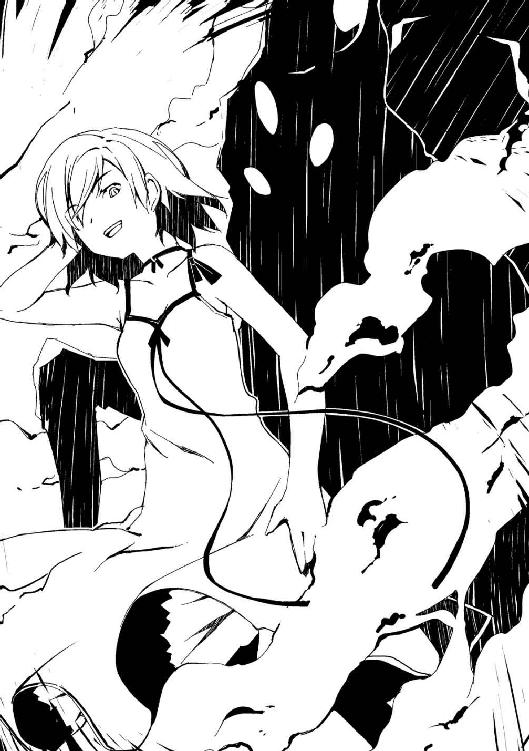

| ムシウタ 10.夢偽る聖者 | |
| 岩井恭平 | |
| KADOKAWA / 角川書店 (2012) | |
ムシウタ
10.夢偽る聖者
岩井恭平
角川スニーカー文庫
本作品の全部または一部を無断で複製、転載、配信、送信したり、ホームページ上に転載することを禁止します。また、本作品の内容を無断で改変、改ざん等を行うことも禁止します。
本作品購入時にご承諾いただいた規約により、有償・無償にかかわらず本作品を第三者に譲渡することはできません。
本作品を示すサムネイルなどのイメージ画像は、再ダウンロード時に予告なく変更される場合があります。
本作品は縦書きでレイアウトされています。
また、ご覧になるリーディングシステムにより、表示の差が認められることがあります。
ムシウタ 10．夢偽る聖者 目次
口絵・本文イラスト／るろお
プロローグ 0.00 The others
彼女が、小学校に上がる前の話だ。
季節は六月の初めだっただろうか。青々とした深緑の匂いにつられ、公園を振り向いたのを覚えている。
高層マンションが建ち並ぶ住宅街に、ぽつんと造られた小さな公園。
あるのは木製のベンチが一つと、滑り台、そして木の枠で囲まれた、ちっぽけな砂場だけ。
そこに、彼女の知っている顔がいた。
白いキャミソールから伸びる手足は、今にも折れそうなほどに細い。薄手のパーカの裾は砂で汚れ、頭からかぶったフードはよれよれにくたびれている。
その子が彼女に気づき、顔を上げた。あどけない顔で笑う。
「あっ、おはようございます」
当時、彼女とその子は、同じマンションに住む顔見知りだった。
二人は同じ小学校、中学校に通うものの、学年が進むにつれて疎遠になった。
当然のように別々の進路へと足を踏み出し、別れ──再会することになる。
つまり二人は、幼なじみ。
それ以上でもそれ以下でもない。
「なに、つくってんの？」
彼女は幼なじみのもとへ近づき、砂を積み上げた物体を見て訊ねた。
「おシロです。てつだってくれるんですか？」
ニンマリと犬歯を見せて笑う幼なじみは、小動物のようだ。舌っ足らずな敬語が、かえって子供らしい無邪気さを際立たせている。
一方、城を指で突く彼女は、大人っぽいとよく言われる。小学校中学年くらいに間違われる顔つきもそうだが、子供らしからぬ落ち着いた言動がそう誤解させるのかもしれない。
「んー、どうしよっかな。あたしがさわったら、こわれそ」
「てつだってくれるなら、ナイトにニンメイしてあげます」
「ナイト？ またヘンなアニメでも見た？ あたしがナイトなら、そっちはなんなの？」
「プリンセスです。おひめさまですよ」
そう言って立ち上がると、幼なじみは水飲み場に向かった。手の平に水を溜め、慌ただしく戻ってくると、パシャリと砂の城にかける。──砂場の半分が濡れているのを見ても、幼なじみが何度も何度もそれを繰り返したのが分かる。
もう一往復、がんばるらしい。幼なじみが再び水を調達し、砂場に戻ってきたところで。
転んだ。
幼なじみの頭が、城の横っ腹に突っ込む。
「えーっ！」
「あーっ！ あーっ！」
びっくりする彼女と、潰れた城を見て、頭を抱える幼なじみ。
「うう......うくっ」
「ほら、泣くな。またつくろ？ あたしがてつだってあげるから」
泣きそうになる幼なじみの頭を、彼女が撫でてやった時のことだ。
公園の柵を跳び越え、一人の人物が二人の前に現れた。
ボロボロの服を身に纏った男だ。勢いあまって転んだまま、立ち上がれずにいる。
「だいじょうぶですか？」
幼なじみが、無邪気に声をかけた。
「ウウ......」
彼女はその男の顔を、一生忘れないだろう。栄養失調か、それとも病気か、ほお骨が浮き上がるほどやつれきっていた。
その疲弊しきった様子にも驚いたが、それ以上に──怯えていた。暗殺者か、それとも野獣にでも追われているかのように目を剝き出しにして口を開く。
「──ッ？」
日本語ではなかった。幼なじみがショックを受けた様子で、彼女を振り向く。
「タイヘンです......う、うちゅーじん？」
「英語。アー、ユー、オーライ？」
変質者だったらイヤだな、と思いながら、訊ねる。教育熱心な親の方針で、物心ついた頃から英語教室に通わされていたため簡単な会話くらいはできた。
「ヤツら......ヤツらは、いないか？」
男が英語で言った。よく見ると、まだ青年のようだ。嗄れているものの、声も若い。
「ヤツら？」
「追いかけてくる......ワタシを追いかけてくるんだッ......！ どうして......！ ワタシたちは何もしてないのに......！ こんなモノ、欲しくなかったのに......！」
「こんなモノ？」
「まるで狩りだ......！ そう......ヤツらは〝ハンター〟だ......！」
青年が咳き込んだのを見て、彼女は水飲み場を指さした。青年が飛びつくように、水飲み場に向かう。
幼なじみが、後ろから彼女の手を握ってきた。
「だれ？」
「さあ。だれかに追いかけられてるんだって」
「おにごっこ？」
「ちがうとおもう。たぶん」
水を飲んで多少は落ち着いたようだ。青年がまだ周囲を気にしながら、砂場へ戻ってくる。
「すまない。驚かすつもりはなかった。怖がらないでくれ」
「......」
「このへんで、誰か見なかったかな？ 見るからに金持ちのようなヤツらとか」
「ううん」
彼女が首を横に振ると、青年が安堵の表情を見せた。
「そうか......」
「おじさん、だれ？ だれに追いかけられてるの？」
「一応、まだ十代なんだけどな......こんなザマじゃ、仕方ないか。ワタシは、えーと......」
青年が言い淀み、苦笑する。
「この国に来てからは、アルファとしか呼ばれたことがないな」
「あるふぁ？」
「僕を追いかけてるのは、化け物だよ。──俺も同じだけどね」
「ふうん。バケモノに追いかけられてるんだって」
幼なじみに向かって、そう説明する。すると幼なじみが、青年の前に進み出た。
「だいじょうぶです。カノンたちがたすけてあげますよ」
「へっ？」
彼女は思わずおかしな声を上げた。カノンたち、とはつまり彼女と目の前にいる幼なじみである南金山叶音の二人ということだろうか？ 一応、青年に通訳する。
思った通り、青年がきょとんとしてしまった。
「カノンたちはプリンセスとナイトですから。バケモノなんてやっつけてあげます」
青年が噴き出した。
「本当に？ 強いな、キミは」
「バケモノなんて、けしちゃいます」
「はは、バケモノを消して、俺を助けてくれるのか。そりゃあ、すごい」
「プリンセスはマホーがつかえるし、ミカタもいっぱいいるんです」
幼なじみが胸を張って言う。
お姫様。
そう、幼なじみのそのウソが、スタート地点だったのかもしれない。
幼なじみがついた、可愛らしいウソ。
そのウソがいずれ、彼女を、そして数十、数百、数千、数万──いや、それ以上、多くの人々を巻き込んでいくことになる──。
0.01 The others
かつて、あの公園でついた最初のウソを、あの幼なじみは覚えているだろうか？
あれから十年以上もの月日が経った。
世界は変わった。
何より──〝虫〟という存在が現れた。
彼女は成長し、ウソをつくのが上手くなった。一方、ウソつき仲間の幼なじみは、きっと今も下手くそなウソをついているのだろう。
ポツリと口の中で呟く。
「この光景が見えますか？」
今、彼女が立っているのは大きなステージの上だった。
ステージの眼下に集まる何百、いや、千人にも及ぼうかという群集が、カノンの言葉を待っていた。皆、一様に奇妙なコート──法衣を身に纏っている。
居並ぶ〝信徒〟たちを見下ろす彼女自身もまた、法衣に身を包んでいた。頭には月桂樹の葉を絡み合わせた冠を戴き、その手には大きな錫杖を握りしめている。
建築作業中の建物が建ち並ぶゴーストタウンは、異様な沈黙に包まれていた。
「二人のウソが、これから世界を変えるんですよ......」
彼女が囁きかける幼なじみは、ここにはいない。
だが、必ずここへやって来るはずだ。あの恐るべき虫憑きたちとともに。
彼女はそれらを──生け贄に捧げる。
そのためにずっとウソをつき続けてきたのだから。
「カノン様......」
信徒たちの中から、声が上がった。
「カノン様......！」
「カノン様！」
「カノン様ぁ！」
声は合唱に変わり、歓声になり、叫び声へと変わっていく。
彼らの声に応え、彼女は手をかざした。ピタリと声が止み、静まり返る。
「......」
彼女は微笑し、背後にそびえ立つ建造物を振り返った。
それは、城だった。
夕日に照らされ、尖塔の影を荒れた地に落とす中世ヨーロッパ風の白城。
南金山叶音という人物がウソをつき、ウソをつき続けることで手に入れたものの一つだ。
居城を手に入れ、穢れた世間から隔絶した聖地を手に入れ、そして彼女を讃える数百人にも及ぶ信徒たち──虫憑きたちを手に入れた。
カノンのウソは、今や現実を塗り替えようとしている。
弱いというたったそれだけのせいで苦しむ真実から守ってくれる。
「カノンたちは弱いです。とてもとても......弱いです」
ステージに置かれたマイクに向かって、彼女は言った。
「負けて、逃げて、そしてここに辿り着いた。みんな、同じはずです」
誰も、彼女の言葉を否定しない。ただまっすぐに彼女の顔を見上げている。
死ぬ思いなど、今まで何度も味わってきた。ここにいる人間に迷いはない。
「カノンたちを追いつめるのは、いつも強い人たちです。......強い人は、いいですよね」
轟音が響いた。
西の空に浮かぶ雲が、真っ赤に染まった。夕焼けよりも強烈な真紅のそれは、天に向かって昇る炎のオオエンマハンミョウの形を造った。
だが彼女の演説は止まらない。
「強い人たちは、悪い人間が隠してる秘密を曝いて、悪い人をやっつけるヒーローですから」
今度は地響きが地面を揺らした。東の空から真っ白な輝きが降り注ぐのが見えた。
雪だ。
夏も終わりのこの時季に、純白の雪が東の空から降り注いでいる。
「カノンたち弱い人間は、強い人たちに利用されて、踏みにじられるだけ。彼らは弱い人間なんて見向きもしないですから」
炎と雪、相対する二つの破壊の権化が、今まさにこの場所へ近づきつつあった。
「そして今も強い虫憑きが、あたしたちを殺そうと迫っています。──でも、大丈夫」
信者たちの表情は穏やかなまま、微塵も揺るがない。
「たぶん、負けませんから」
カノンと、カノンの幼なじみの二人で積み上げたウソの数は、いくら数えても足りない。
最初は、ただのイタズラだった。
次は居場所を手に入れるためだった。
そうして二人で手を繫いで歩いているうちに──いっしょに歩く人たちが増えていった。
「カノンを信じてくれますか？」
彼女は問いかけた。
信徒たちは──笑っていた。答えを聞くまでもなかったようだ。
「カノンも、みんなを信じます」
皆、カノンを慕い、信じて集まった弱い人間たちだ。
そんな大切な人々を、彼女は守る責任がある。
たとえ──今まさにここへ敵を引き連れてくるであろう幼なじみを騙してでも。
「迫り来る邪悪な虫憑きを排除せよ！」
彼女は錫杖を頭上に振り上げ、号令を下した。
「敵は火種一号ハルキヨ！ そして秘種一号〝ふゆほたる〟！」
信者たちが、鬨の声を上げた。溢れかえる怒号と熱気で、空気が震える。
「それらを討ち滅ぼし、特別環境保全事務局との決戦に臨みます！」
勢いよく錫杖を振り下ろし、叫ぶ。
「カノンとその信徒たちは、ここに聖戦を宣言します！」
かつて幼なじみと砂場でついたウソ。
そのちっぽけなウソが、なぜここまで大きく膨らんでいったのか。
彼女はここに至った二人のウソつきの、数奇な人生を思い出していた。
1.00 環 Part.1
喜多沢環が虫憑きになったのは、都会の名門学校の中等部に在籍していた頃だ。
虫憑きとは、〝虫〟という超常の存在に取り憑かれた人々である。〝虫〟は人のこうありたいという心中の願望や希望、夢を喰らうために、思春期の少年少女に取り憑く。──らしい。
「ありがとう、環！」
「ん、どういたしまして」
〝虫〟の存在は十年ほど前から人々の噂に上っていた。それが目撃証言が増え、現実味を増すごとに、虫憑きと噂された人間は差別的な目で見られるようになっていった。──らしい。
「でもどうやって、あのしつこいストーカーを追い払ってくれたの？」
「はっきり言ってやっただけよ。もう近づくな、この陰険野郎！ ってね」
最近は特に、〝虫〟という単語を耳にするようになった。もちろん、マスコミや政府の公式見解は存在しないものとしたままだから、噂レベルの話だが。
もしかしたら〝虫〟という存在は、世間から隠しきれなくなりつつあるのかもしれない。
──と、思う。
「えー！ こわっ！」
「さすが環、度胸ありすぎ！」
「そんなの、危なくない？ 逆ギレされたら、ヤバイじゃん」
「へーき、へーき。他の人間ならともかく、ストーカーしてた相手〝本人〟が言えば、ショックでそれどころじゃないでしょ」
十七歳の高校二年生、環は目を細めて笑いつつ、ぱたぱたと手を振ってみせる。
大きなショッピングモールの広い駐車場──のさらに裏。廃線になった私鉄の検査場跡に、環を含む同級生五人の少女はいた。
広い敷地内には錆びたコンテナが積まれ、アスファルトの地面はどこを見てもヒビ割れている。移動用の線路も赤茶色に錆び、小さな踏切やレールは、雑草が生い茂っている。崩壊寸前の金網はないも同然で、誰でも簡単に敷地に入れるのは問題だと思う。
足元に、蟬の死骸が落ちていた。
そろそろ本格的な夏が来る。環は夏が嫌いなので、秋が待ち遠しい。
「本人？」
環を見つめる四つの顔が、きょとんとした。可愛い女子高生四人に見つめられるのは悪くない気分だが、自分の失言に口を押さえる。
「あ、なんでもない。とにかく、これでもう大丈夫だから。ね？」
「本当に、ありがとう......あの人、帰り道にまでついてきて、怖かったから......」
制服を着た四人の中の一人、小柄で眼鏡をかけた少女が、涙を浮かべた目で環を見上げた。
うっ、と環は呻く。
やるわね......今時にしては珍しい、眼鏡と三つ編みという地味子ちゃんと見せかけて、華奢な身体と可愛い顔つきとあいまって......こ、これは変態ストーカーに目をつけられても仕方ないわ。何より、押しに弱そうなあたりが、また──。
ストーカーをされている、と同じクラスの友人に相談を受けたのが、三日前。
その犯人の身元を割り出したのが、昨日。
そして犯人をこの場所へ呼び出し、罵詈雑言を浴びせて追い払ったのが、つい先ほどというわけである。
「危ない！ 環がまた、ケモノの目つきで見てるわよ」
「なんで鼻息が荒くなってるのよ」
友人らが眼鏡の少女を大袈裟にかばうが、環はさらににじり寄る。
「お、お礼は、ちょっと写真をとらせてくれるだけでいいわ......ね、ねえ、いいわよね？ スクール水着を着てくれるだけでいいから......」
「ぎゃーっ！ コイツ、変態だ！」
「ストーカーより、コイツが変態だ！」
「そのオヤジくさいところ、なんとかしなさいよ」
「な、なによ、ただのジョーダンじゃない」
唇を尖らせる環に対し、眼鏡の少女が恥ずかしげに目をそらす。
「......い、一枚くらいなら」
「マジですか！ 一枚でじゅうぶんです！ あと、ほっぺにチ、チューしていいですか！」
「超、ホンキじゃん！」
「しかもドサクサで追加してる！」
「アンタ、そーゆー趣味あるんでしょ、やっぱり！」
「いやいや、そんなのないよ。ホント。たぶん。きっと。ちょっとしか」
笑いながら否定する。友人の一人がため息をついた。
「ホント、もったいない。男ならいくらでも誘惑できそうなのに」
「誘惑だなんて、はしたないですわ」
環は口に手を当て、とぼけてみせる。友人は環の外見のことを言っているのだろう。
この場にいる同級生の中でも、頭一つ高い長身。前髪をヘアピンでとめた長い髪は腰まであり、眼鏡をかけた顔はそこそこ整っているはずだ。通っている公立高校指定のワイシャツではなく、お気に入りのＴシャツを着た体型は細身。スレンダーと言えば聞こえはいいが、欲を言えば胸部のボリュームがもう少し欲しいところだ。
友人がいっせいに噴き出した。
「なにソレ、どっかのお嬢様みたいな──って、そういやお嬢様学校出身なんだっけ？」
「あ、前に言ってたよね。赤牧市のホルス聖城学園だっけ？」
「うっそ、超名門じゃん！ なんでこんな田舎の公立高校に通ってんの？」
ずきり。
ほんの一瞬、胸の奥が痛んだ。
だが表情には出さない。笑顔で痛みを隠すのは慣れている。
「そうよ、アタシ、お嬢様なの。ごきげんよう？」
「うわ、ウソっぽい！ ホントなの？」
こうなったら、女子の包囲網はすさまじい。五人で声高にじゃれ合っていると、時間が流れるのは早かった。雑草だらけの線路の向こうに、赤い夕日が落ちようとする。
「あの......本当にお礼しなくていいの？」
「いいの、いいの」
話題がようやく一段落し、環は四人と別れた。友人らは街でもう少し遊んでいくそうだ。
一方、環は駅を目指した。こことは違って今も使われている電車に乗って帰るためだ。
環の住む家は遠くにあり、毎日、特急列車を使って通学している。そのため皆より早く帰宅しないと、家に着くのが夜中になってしまう。
「お礼なら、もらったしね」
スカートのポケットから、男物の財布を取り出し、中から紙幣を抜いて放り捨てる。
「そこそこ持ってるじゃん。ひょっとして金持ちだったのかな？」
棄てられた検査場跡に、湿気を含んだ風が吹いた。環はヒビ割れた地面を歩き、倒れた金網を乗り越えて、ショッピングモールの駐車場に出た。ここから商店街に出て、しばらく歩けば駅に着く。
「弱味でも握って、もう少し搾り取っとけば良かったかな......」
紙幣を自分の財布に押し込みながら、冷めた表情で呟く。
環は困っている友人に代わり、ストーカーを撃退した。そのことは間違いない。
だがその方法は、先ほど友人に説明した内容とは少々異なる。おそらく説明しても理解できなかっただろう。
環が持つ特殊な能力を使って文字通り眼鏡の友人に〝なり代わり〟、ストーカーに「ウザい、やめて」と言った。ストーカーは自分が騙されていることにも気づかず、ショックを受けた様子で泣き出した。さらに環はストーカーから少々〝慰謝料〟もいただいたのだが、それはまあ余談である。ストーカーが逆上する可能性も考えて周りに被害が出ない場所を選んだのだが、それも杞憂に終わった。
拍子抜けしている自分に気づき、ため息をつく。
ショッピングモールのそばを歩いていると、地図を持った外国人の夫婦に声をかけられた。
駅がある方角を、英語で訊ねられた。
「この道をまっすぐ行けば着きますよ」
少々、英語の心得がある環は、にっこりと微笑んで夕日が浮かぶ方角を指さした。
礼を言って去っていく夫婦に手を振り、踵を返す。
「海にね」
冷めた嘆息を漏らし、自分は駅へと向かう。
前方から、首輪をしたチワワがやって来た。リードを引きずりながら環の前を通り過ぎ、交差点を曲がって姿を消す。
「......」
なんとなくチワワの背中を見送り、振り返ると、中年女性が駆け寄ってきた。犬を見なかったかともの凄い剣幕で訊ねられ、首を傾げる。
「さあ、見てませんけど」
言い放ち、オロオロと周囲を見回す女性を置いて、再び駅を目指して歩き出す。
外国人夫婦やチワワの飼い主に、恨みがあるわけではない。
悪意があったわけでもない。
それなのに彼らにウソをついたのは──環がそういう人間だからという他にない。自分はこの先一生、特に赤の他人に対しては本当のことを言うことはないだろう。
ある事情から、環はそういう人間になってしまった。
「つまんない......」
繁華街に差し掛かり、環はポツリと呟いた。
実はストーカー絡みでハプニングを期待していただけに、相手の無条件降伏には落胆した。
田舎は、退屈だ。家庭の事情によって高校進学に合わせて都会から引っ越してきたものの、毎日が何事もなく平和に過ぎていく。
入学当初は都会とは違う空気を楽しんでいたが、それも限度というものがある。
せめてものスリルを求め、友人の悩み解決を手伝ったりもした。だがどれも大した苦労もなく解決してしまえるのは──環の有り余る才能のせいなのかもしれない。
田舎に移り住んで一年。
虫憑き、喜多沢環は退屈に飽ききっていた。
「いっそのこと、特別環境保全事務局とやらに乗り込んでみようかな......」
無意識に、口の中で呟く。
特別環境保全事務局。
〝虫〟の存在を隠蔽し、在野に潜む虫憑きを監視し、時に捕獲するための政府機関だ。
その存在を環はずっと前から知っている。知っていてなお特別環境保全事務局の脅威に晒されていないのは、それから逃れるだけの実力を環が持っているからに他ならない。
冗談半分で呟いたものの、それはそれで問題はあるのだ。
「でも、あっさり全滅させちゃったら、つまんないしなー。アタシ、強いし」
髪の毛先を指先でクルクルいじりながら、駅に向かって歩いている時だった。
商店街の先で、口論する声が聞こえた。見ると、男女含めて数人の集団が、小柄な女の子の腕を摑んで騒いでいる。
ケンカ？ でもあんな小さな子相手に、数人がかりで？
見ているうちに、女の子は路地裏へと引っ張り込まれていってしまった。集団の中にガラの悪そうな男もいたせいか、周りにいた通行人は気にした様子を見せつつも、素通りだ。
警察に通報するべきだろうか？ そんな考えがよぎったが、身体が勝手に動いていた。
「この顔でモメごとに首つっこむのも、考えものか......」
女の子らが消えた路地に向かって進む。
環の長い髪が一瞬、ふわりと舞い上がった。見開いた瞳が蒼く染まっていく。
「荒事なら、やっぱこのコでしょ」
環の足元から、黒い霞が舞い上がった。そして霞が消えると、路地裏に向かって歩く環の姿が一変していた。
すれ違った通行人が、目の前で別人に変身を遂げた環を見て硬直していたが、環は気にしない。どうせ白昼夢を見ていたか、気のせいだと勝手に思い込んでくれるだろう。
「さぁて、少しはオレ様を楽しませてくれるんだろうな」
それまでとはうって代わり、ソプラノの声で呟く。
長身で黒髪の喜多沢環から変貌を遂げた、金髪碧眼の異国人の少女。
その身体と能力の本来の持ち主の名前は──御嶽アンネリーゼ。
特別環境保全事務局中央本部に所属する、〝霞王〟というコードネームの虫憑きだった。
1.01 環 Part.2
金髪の少女に変身した環は、ファーストフード店と洋服店の間にある路地に飛び込んだ。
能力の一つを使って別人に変わったものの、体格が縮んだせいで靴のサイズが合わない。多少、歩きづらいのは我慢することにする。
奥の暗がりで、男女数人が、小さな女の子を壁に追いつめているのが見えた。
「──ってんだろ！ 俺らが虫憑きだって──」
......虫憑き？
聞こえた声に反応し、とっさに電柱の陰へ身を隠す。
どうやら虫憑きがらみのトラブルのようだ。ただでさえ虫憑きとの遭遇率が低い田舎で、これまた珍しい場面に出くわしてしまった。
とりあえず慎重に様子をうかがおう──と思ったが、やめた。
せっかく珍しい出来事に立ち会ったのだ。好奇心とわずかな期待を胸に秘め、環は電柱の陰から姿を現した。
「......！ なんだ、お前！」
最も背が高い男が、環に気づいた。
「大勢で女の子を引っ張っていくのが見えたノデ......何かトラブルでしょうカ？」
にっこりと微笑み、イントネーションのズレた日本語で言う。上品そうな外見通りの友好的な態度で誤魔化しつつ、状況を観察する。
男が三人、女が一人、ね......女の子のほうは、あー、カワイソウに。頭抱えて、震えちゃってまあ──。
「関係ないでしょ、消えなさいよ」
十代半ばの少女が低い声で言い、環の肩を突き飛ばした。一瞬、ムッとしたが自制する。
「そこの女の人！ 大丈夫ですか？」
少女を押しのけ、環はうずくまっている女の子に声をかけた。
「どっか行けっつってんだろ！」
威嚇するように凄む短髪の少年。その足元で、縮こまっていた女の子が顔を上げた。
「あ、あの......ほ、本当に見てませんから！ 皆さんが銀行のＡＴＭで、おかしな生き物を使って何かしてるところなんか、これっぽちも見てませんから......！」
「てめぇ！ なに勝手に喋ってんだ！」
「ひっ！」
怒鳴られ、再び縮こまってしまう女の子。
「ああ、なるほどね......」
環は苦笑いを浮かべた。事と次第を、一連の言動から察する。
女の子が見たおかしな生き物とは、〝虫〟だろう。つまりこのグループは〝虫〟の能力を使い、現金自動預入払出機から不正に金を引き出そうとしたといったところか。
あまりのくだらなさに、今日二度目の拍子抜けである。
そんなことをすれば形跡から虫憑きの仕業と分かり、特別環境保全事務局による一斉包囲網が張り巡らされるだろう。そうなれば、こんなチンピラまがいの虫憑きはあっという間に捕獲され、ジ・エンドである。
結果的に未遂に終わったことで特環に捕まらずに済んだわけだが......彼らは女の子に救われたということに、気づいてもいない。
まさに雑魚中の雑魚。これでは彼らの虫憑きとしての実力もたかが知れている。
「虫憑きの力を使えば、楽にお金を稼げるとでも思ったんデスカ？ そんなことくらい特環だって百も承知デス。ある意味、そう思えるものには全て、特環の罠が張られてイマスヨ」
環は何度か、特環と接触したことがあった。だがことごとく逃れ、あるいは返り討ちにして、今もこうして一人で平和な暮らしに身を置いている。
「なっ──」
言葉を失うグループの輪を突っ切り、女の子の腕を摑む。
「彼女を脅して、口止めデスカ？ ──さあ、こんな連中、放っといて行きマショウ」
「お、おいっ！ 誰が行っていいっつった！」
「うう......」
身体を丸めて縮こまっていた女の子が、顔を上げた。
その顔を見て、環は表情を固まらせた。
「──カノン？」
「ふぇ？」
涙の痕を浮かべ、女の子が──いや、環の知人がヘンな声を上げた。小柄で、可愛らしい丸顔。何度も洗濯したせいで伸びたＴシャツと、汚れた靴、薄手のパーカを羽織っている。
自分でもすぐに信じられず、まじまじと顔を見つめる。
間違いない。その太めの眉毛と、左耳の上で髪をしばっているのは昔と変わらなかった。
目の前にいるのは、環と中学校まで近所に暮らしていた幼なじみだった。
「カノン！ アタシよ、アタシ！ おぼえてる？ ほら、中学校までいっしょだったでしょ！ 小さい頃は公園でいっしょに遊んだこともあるし、中学でも......」
「はン、見え見えだよ。知り合いのフリして連れてこうってのか？」
「オイ、お前！ マジで知り合いなのかよ！」
そばにいた少年に問われ、幼なじみが怯えた顔で環の顔を見つめた。
しばらく凝視した後、女の子がわざとらしくポンと手を打つ。コクコクと何度も頷く。
「はい、知ってます！ 知り合いです！ えーと、えーと......お父さんの、イトコの、次男の、となりのうちに住んでるフランス人の......」
「他人じゃねーか！」
あ、そうか。
思いも寄らない再会に驚きすぎて、すっかり忘れていた。今の環は、環ではないのだった。
「オラ、てめーはさっさと消えろよ！ ──いや、やっぱちょっと待て、お前も」
「......うるせぇな、殺すぞ、コラ」
環の肩に手をかける少年を、睨み返す。ぎょっとして少年の動きが止まった。環の足元から、じわりと黒い霞が立ち上ったのを見たからだ。
「いーいコト、考えた」
口の中で、ぽつりと呟く。
この場にいる虫憑きたちを蹴散らし、カノンを助けるのは容易い。簡単すぎる。
だから──ちょっとしたイタズラに興じてみることにした。カノンに環のことを思い出してもらうのも、ただ正体を現すだけでは、つまらない。
少年の一人が、霞に包まれていく環を見て、血の気を失った。ガクガクと震え出す。
「き、金髪と、黒い霞......コイツ、まさか〝霞王〟かっ？」
よーしよし、知ってるヤツがいるなら、なおさら効果アリ──。
環はニヤリと笑い、腰に手を当てる。
「確かにオレ様は中央本部戦闘班火種三号局員〝霞王〟なわけだが──」
特別環境保全事務局という政府機関は、虫憑きを捕獲するために合理的な手段を用いている。その手段とはすなわち、捕らえた虫憑きを訓練し、管理することで兵隊として虫憑き捕獲に投入することだ。
「オレ様を知ってるなら、てめぇらがどうなるかも──分かってるよなぁ？」
また同機関は虫憑きを、能力の強力さによって段階分けしている。環が口にした火種三号とは、戦闘に特化した能力を持ち、一号、二号に次ぐ強さを有している。
「〝霞王〟だとッ！ なんで中央本部の戦闘員が、こんなところに......！」
少年グループが、明らかに浮き足立った。逃げようと商店街へ続く路地を駆け出そうとするも、黒い霞によって行く手を塞がれてしまう。──〝霞王〟の能力である霞は防御力が高く、とても人間の手足で突き破れるものではない。
逃げ道を塞がれた少年たちが、路地の奥を振り返った。
しかし、そちらは──行き止まりである。
「く、くそぉっ......！」
「さて、てめぇらをここで始末するのは簡単だが、その前に──」
環はもちろん環であって、〝霞王〟という虫憑きとは全くの別人である。それなのにどうして彼女が〝霞王〟の能力を使えるかというと、もちろんそれが環の虫憑きとしての能力の一つだからだ。ただの変身能力ではなく、ちょっとしたクセもあるのだが──。
環は少年たちから視線を外し、呆然と地面に座り込んでいる人物に向き直った。
「まずは、てめぇだ。観念するんだな、ちびっ子ぉ」
「ふぇ？」
「顔を見られたからには、生かしちゃおけねぇ」
自分から姿を現しておいて、生かしちゃおけねぇも何もあったもんではないのだが──一応、ニュアンスは伝わったようだ。カノンの表情が、恐怖のあまり、泣き笑いに変わっていく。
「てめぇは、死んでもらうぜ」
環の目の前にいる少女の名前は、南金山叶音という。
二人はかつて同じマンションに暮らす、幼なじみだった。歳が近いということや、両者ともに家庭的事情というものを抱えていたこともあって、たまに近場の公園で遭遇してはいっしょに遊んでいたのだ。
中でも環の記憶に残っているのは、そう、あの日。
アルファと名乗る異邦人が現れた時、カノンは面白いウソをついた。
「覚悟はできたか？」
カノンは、憶えているだろうか？
もう十年近く前の出来事だ。憶えていないのが普通といっていい。
環は憶えている。
──バケモノなんて、けしちゃいます。
あの時、カノンは、そう言ったのだ。
だからこれは再会の挨拶を兼ねた、ささやかなサプライズだ。
「死ねぇえええっ！」
環は霞を纏った腕を、カノンに向かって勢いよく振り下ろした。
対するカノンのリアクションは──。
「ぎゃぁああーっ！」
思っていた以上に、大きかった。
「ぎゃあぁああっ！ ぎゃあぁああっ！」
まさか頭を抱え、犬歯を剝き出しにし、涙を流して、あらんかぎりの大きな声で泣き叫ぶとは思いもしなかった。
いや、いくらなんでもそこまで怖がらなくても──。
「......」
予想以上の反応に凍りつく環。
そして大口を開けたまま、やはり凍りつくカノン。
そんな二人を取り囲む虫憑きのグループも、何が起きたのか理解できず沈黙している。
「な......」
環はハッと我に返り、周囲を見回した。──思わぬ逆サプライズをくらってしまったが、ここからは予定通りに進めることにする。
路地裏を満たしていた黒い霞が、きれいに消え去っていた。
「なにぃっ！ オレ様の霞が消されただとぉっ！ てめぇ、何者だぁ？」
「ふぇ？」
「まさか、てめぇ......〝虫〟を消しちまう力があるのか！ ちくしょお、やられたぁっ！」
きょとんとするカノンから後退り、悔しげに地団駄を踏む環。
チラリ。
悔しがる演技をしながら、カノンの様子を見る。
かつての幼なじみが、不思議そうに首を傾げた。環は、舌打ちする。
「てめぇには、バケモノを消す力があるのかっ！ とんでもねーヤツだっ！」
もう一度、繰り返してみる。
するとようやく、カノンがハッとした。立ち上がり、ぎこちなく胸を張る。
「そ、そうですっ！ カノンには、スゴイ力があるんですよっ！」
「くそー！ これじゃオレ様はもう、何の力もない普通の人間じゃねぇか！」
「ふはははは！」
「ああ、もうダメだー」
高笑いするカノンと、泣き真似をしてうなだれる金髪の少女、〝霞王〟。
そんな光景を目の当たりにして、虫憑きの少年少女たちは絶句する。
〝霞王〟の能力である霞が消え去ったのは、もちろん、カノンが虫憑きの力を消したせいではない。たんに環が能力を解除しただけである。
「──うん、このくらいでいっか」
満足し、環は泣き真似を止めた。立ち上がり、カノンの肩に手を置く。
「ね、思い出した？」
「なにを？」
首を傾げるカノン。
......どうやら、期待するだけムダだったようだ。
環は嘆息し、後ろにいる少年たちを振り返る。しっしっと手で追い払う。
「あー、うん、まあ、そーゆーワケだから、てめぇらも〝虫〟を消されたくなきゃ、さっさとここから逃げ──きゃああっ！」
思わず、素の悲鳴を上げてしまった。
振り向いた環を押しのけ、四人の虫憑きたちがもの凄い勢いでカノンに詰め寄ったのだ。
「オレの〝虫〟を消してくれっ！」
「お、俺もだ！」
「私も！ ねえ、できるんでしょ！」
「助けてくれ！ 頼む......お願いします！」
あまりの剣幕に、環とカノン、二人の声が重なった。
「へっ？」
「ふぇ？」
四人の虫憑きが、なりふり構わずカノンにすがりついていた。全員でいっぺんにまくし立てるものだから、誰が何を言っているのかも分からない。
ただ分かるのは──四人とも、〝虫〟を消したがっていた。
心の底から、それを願っているようだ。少女にいたっては大粒の涙をこぼしている。
「あ、あの......」
困惑したのは、カノンだ。いきなり助けを求められたものの、どうしていいか分からない様子でオロオロとしている。
ああ、そういうこと──。
環は理解し、冷めた目つきで彼らを見る。
虫憑きは、誰もが救われたがっている。〝虫〟という己の夢を喰らう化け物を身に宿し、いつそれを喰らい尽くされて──死ぬかも分からない。そんな運命を強制されてしまった者たちこそ、彼ら虫憑きに他ならない。
思えば、当然のことだ。
環だって、〝虫〟は大嫌いだ。
それを消し去ってくれる人間がいるなら──こんなウソっぱちではなく、本当にそんな人物がいると知れば、自分もすがりつくかもしれない。
「あー......」
もしここでウソだと明かせば、彼らは逆上して幼なじみを傷つけかねない。助け船を出したいところだが、本当に彼らの〝虫〟を消すことなどできるはずがない。
消すことができないなら──それができない理由をでっち上げる。
ウソに、ウソを上塗りする。
環は空を見上げた。夕日はすでに落ち、空に満月が浮かんでいた。
「そういえば、聞いたことがあるぜ」
満月。
その怪しくも艶やかな明かりは、人を惑わすにはうってつけだ。太陽と並んで人々が信仰し、崇拝の対象としてきた歴史もある。
うん、これを使おう──。
「満月の夜に、一回だけ──〝虫〟を消すことができるヤツがいるって。南金山叶音。それがアンタなんだろ？」
そう言って、環はカノンを見た。即興で考えた出来の悪いウソだが、この場を誤魔化すことさえできればいい。姿を隠すための時間稼ぎだ。
環につられて、四人の虫憑きがカノンを見た。
頷け、いいから頷け。
環が睨みつけると、思った通り、気弱な幼なじみは──。
「......」
コクリ、と頷いた。
その時、頭上から静かな声が響いた。
「──それは、本当か？」
「！」
その場にいる全員が、頭上を見上げる。
満月が浮かぶ夜空に、人影が佇んでいた。ファーストフード店の屋根の上に、誰かがいる。
「特環......？」
環は、とっさに身構えた。つい先ほど空を見た時は、誰もいなかったはずだ。それなのに、ほんの一瞬で姿を現し、気配すら感じさせなかった。
満月を背にした人物の佇まいを見て、環は悟った。
かなりの強敵......しかも、こっちの位置が悪い！ 大抵の攻撃は〝霞王〟の能力で防げるけど、別の能力のほうが──いや、やっぱり〝霞王〟の能力が一番適応力が高い！
頭の中で素早くシミュレーションをし、環は黒い霞を発生させようとする。
「それなら、頼みがある......」
しかし敵による攻撃は降り注がなかった。
人影が宙に身を躍らせ、環たちの前に着地した。かなりの高さなのに綺麗に着地できたのは、相当の訓練を積んでいるのか、それとも何らかの能力を使ったのかは分からない。
「この中に〝虫〟がいるから......消してやって欲しい」
月明かりに照らされ、そう言ったのは、環と同じくらいの歳の少年だった。ボロボロのシャツとジーンズに身を包み、頭には単車用のビンテージヘルメットをかぶっている。半開きになった両の眼は隈が浮かび、気力の欠片しか残っていないように見えた。
現れた少年がカノンに向かって差し出したのは、手の平大の鞄だった。
突然のことに、声もなく立ち尽くす一同を見回し、少年が言った。
「......それで、俺は何番目だ？」
1.02 環 Part.3
環とカノン。二人の幼なじみが、数年ぶりの奇妙な再会を果たした翌日。
二人は環が通う公立学校の近くで、二度目の〝再会〟を果たした。商店街にあるファミリーレストランに入り、四人席のテーブルでカノンが身を乗り出してきた。
「じゃあ昨日の金髪の人って、ホントにタマちゃんだったんですか？」
顔を突き合わせ、南金山叶音が小声で言った。その顔を間近で見ると、くりっとした丸い目が可愛らしい。薄汚れたパーカ、アライグマのような目、仔猫のように尖った犬歯と、小動物のチャームポイントを集めたような外見だった。
「ええ。だからアタシは虫憑きじゃなくて、普通の人間ってことでヨロシク」
一方、環は学校帰りのため、制服姿のままだ。実際にはカノンと一歳しか違わないが、よく大学生に見間違えられる環と比べたら、他人からは五つは違うように見えるかもしれない。
「はあー、虫憑きってスゴイんですね」
「リスク大きいけどね」
二人は顔を離し、向かい合う形で腰を下ろす。国道から離れているせいか客が少なく、環ら以外には数えるほどしかテーブルが埋まっていない。
カノンはオムライスとドリンク、そしてベーコンペッパーサラダを注文した。環は空腹ではなかったため、フリードリンクのみ。
「でも、ショックだったわ。カノン、アタシに気づいてくれないんだもん」
テーブルに上半身を投げ出し、顔を真横にしながら、ストローをいじる環。
「んー、でもぉ」
カノンは、スプーンいっぱいに盛ったオムライスを、忙しそうに口に運ぶ。ハグハグと漫画のような擬音が背後につきそうな食べ方が、小さい頃と全く変わっていなかった。良く言えば可愛らしい、悪く言えば、まあ、うん、行儀が悪いということだ。
「大きくなってからは、タマちゃんとはあまり話さなくなっちゃいましたし......」
オムライスを食べながら、カノンが言った。
「......」
環はそんなカノンの顔を見て、微笑する。
「そんなことないよ。覚えてない？」
「へ？ なにをですか？」
「......なんでもない」
環は、忘れない。
小学校の頃の同級生の顔など、ほとんど忘れてしまったのは環も同じだ。
だがカノンのことは忘れない。環にとってはそれだけ重要な出来事があったのだが、カノンは覚えていないようだ。そういうところがまたカノンらしくて感慨深い。
「カノンは、家出中って言ってたっけ。やっぱあの家には、いられなくなっちゃったか」
「......はい」
「そっか。地元でもないのに、なんでこんなところで......とは思ったけど」
「タマちゃんこそ、都会に引っ越したんじゃなかったでしたっけ？」
「ん、赤牧市にある私立の高校に行ったんだけど、親が仕事で失敗してさ。すぐに授業料が安い別の学校に転校したんだ」
「お互い、タイヘンですねぇ」
「タイヘンねぇ」
「でも、タマちゃんは」
スプーンを持ったまま、カノンがにっこりと笑んだ。
「大人っぽくなりましたね」
「サンキュウ。カノンこそ、可愛いくなったよ？」
「お、おおっ？」
本音半分、お世辞半分のつもりだったが、カノンの耳が赤くなるのを見て割合が変わる。本音が八割、くらいになった。カノンのほっぺたについた御飯粒をとってやる。
「あー、もう、可愛いわ。うんうん、可愛い。頭、なでていい......？」
「いいですけど......どうしてタマちゃんは息が荒くなってるんですか？」
「ホント、ちょっとなでるだけだから......他には何もしないから」
食事を続けるカノンの頭をひとしきりなでて、環は満足した。
「ねえ、カノンはさ。これから、どうすんの？」
「んー......」
「お金、あるの？ どこに泊まってんのよ」
「ネットカフェとか......？ あ、でも、お金はちょっとおニィちゃんにもらいました」
「は？ お兄ちゃん？ ウソ、あんた一人っ子でしょ」
環はぎょっとして顔を上げた。〝家出少女に金を渡し、淫らな行為〟という新聞の見出しめいた想像が頭をよぎる。いや、それだと正確には見出しに偽りがあるのだが。
「ち、ちょっと、いくらなんでも、そーゆーのはやめてよ？ 援助なんていって、ヘンなことされてないでしょうね？ そのテは、ろくでもないヤツばっかなんだから」
「えー、そうなんですか？」
「ああ、もう、世間ってモンを知らなすぎ！ お金なら何とかするから、もうやめなさいよ！ カノンみたいなのにお金渡すようなヤツは、ただのヘンタイに決まってんだから。いいえ、ヘンタイどころか、クズ野郎よ！ いい？ 二度とそんなのに近づいちゃダメよ？」
「うー......あのう、おニィちゃんは、クズ野郎なんですか？」
スプーンをくわえたまま、カノンが振り返った。
「え？」
離れた席に、顔色の悪い少年が座っていた。隈の浮いた目で、ぼうっと目の前のドリンクを凝視している。眠っていないのか、それとも別の原因によるものか、病人のように衰弱しきっているのが一目で分かる。テーブルの上にはビンテージヘルメットが置かれている。
昨日、路地裏で出会った少年だ。彼がずっとそこに座っていたことを環は知っている。
「......」
環とカノンの視線を受け、少年がチラリとこちらを一瞥した。だが彼女らの言葉を否定するでもなく、興味なさそうにまたドリンクへ視線を戻した。卑屈に背を丸め、両腕で小さな鞄を抱きかかえている。
「おニィちゃんって......彼？」
「はい、ジャンケンで二番目になったので、おニィちゃんです」
「......？ 二番目？」
「一番は、俺だからな」
テーブルごとに設置されたブラインドから身を乗り出し、大柄の少年がとなりから顔を出した。さらに次々と、見覚えのある顔がブラインド越しに顔を出す。
昨日、カノンを襲おうとした四人組の虫憑きである。
「イチさんと、サンちゃんと、ヨンくんと、ゴンすけです」
カノンが次々と指さすのを見て、環はポカンと口を開けた。
「まさか、それって......」
「はい、〝虫〟を消してあげる順番です。昨夜、みんなで決めました」
そう言って無邪気に笑うカノン。
環は、頰を引きつらせる。
ちょっと......まさか、あんな三文芝居を本気で信じたの？ 〝虫〟の力を消すなんて、そんなことができるって？ 正気？
「お友達が、いっぱいできました」
ニコニコとカノンは上機嫌だ。──が、よく見ると、その笑顔が環と同じように引きつっていた。涙ぐんだ瞳が、環に訴えかけてくる。
カノンは、どうすればいいんですか──と。
「た、タマちゃんも、友達ですよね？ いっしょにいてくれますよね......？」
カノンが環の腕を摑んだ。痛いほどに力がこもっている。
「え、ええ、もちろんよ？ でもアタシ、家が遠いし、もう帰らなきゃ」
環もまた、ニッコリと笑い返した。カノンの手を、自分の腕からもぎ取ろうとする。
「そ、そんなこと言わないでください。せっかく久しぶりに会ったんじゃないですか」
「アタシ、虫憑きじゃないし......そう言う意味じゃ関係ない？ かな？」
「でも、責任とか、あると思うんですよね。もふぉふぁふぉいえふぁ、ふぁまふぁんが──」
笑顔でカノンの頭を押しのけ、身を離そうとする環。対するカノンは、犬歯でがしっと環の指を嚙んですがりつく。
カノンと格闘しながら、環は他の面々の様子を見てみることにした。
四人組の虫憑きは、不審そうに二人のやりとりを見つめていた。話を聞いたところ、彼らは元は〝むしばね〟というコミュニティに所属していたそうだ。しかし新たなリーダーとやらの方針に反発して離脱したものの、生活資金に困っていたそうだ。
この四人は、全く問題ではない。いざとなったら環が実力にモノを言わせ、逃げるなり追い払うなりすればいい。
だが、問題は──。
「......」
環は、二人掛けのテーブルを見た。不気味な少年──おニィちゃんとやらは、何も語らず、無気力にコップを眺めたまま動かない。
あの虫憑きの戦闘能力が未知数なのが、やっかいなのだ。ただ者ではない雰囲気を感じるものの、強いのか弱いのかさっぱり分からない。もし強いとしたら、彼の機嫌を損ねたら、環はともかくカノンが無事でいられるか保証はない。
そもそも──彼が抱えている鞄は、何だろう？ その中に〝虫〟がいるそうだが、それが彼の〝虫〟ということなのだろうか。ずっと抱きしめているところからすると、よっぽど大事にしているようだが......。
「なあ、アンタ。そのコの知り合いなんだろ？ じゃあ、その子の......力も知ってるのか？」
順番的に五番目らしい少年が、環に訊ねた。
環はすぐには答えず、頭の中でどうすればいいかシミュレーションする。
ビンテージヘルメットも問題だが、さらに、もっと重大な問題があった。それは──。
「タマちゃん......」
涙を浮かべて環を見つめる少女、南金山叶音。
この幼なじみは、なんというか──ウソがヘタだ。
その上、一人で生きていけるだけの生活力もない。さっきの話ではないが、いつか悪意ある人間によって傷つけられるのは目に見えている。
「......」
実を言うと──環はカノンにちょっとした〝借り〟があった。
そのことをカノン本人は忘れているようだが、環にとっては忘れようがない。
だから、できることなら助けてやりたいが、虫憑きとはいえ、ただの高校生にすぎない環にできることは限られている。
果たして、どうするべきか。
答えはすぐに出た。
見た目も性格もまるで違う環とカノンだが、ある共通点を持っていた。
ウソつきであること。
そんな二人が揃った以上、することは一つしかない。
環は虫憑きに向かって、落ち着き払った態度で言った。
「ええ、もちろんよ。彼女が特別な力を持ってることも、知ってるわ」
「そうか！」
「ほら、やっぱりな！」
「だってあの〝霞王〟の〝虫〟さえ、消しちゃったのよ。私たちだって......！」
ホッとした様子を見せる四人を見て、環は納得した。
彼らはカノンの力とやらを、まだ完全に信じ切れてなかったのだ。〝虫〟を消すという突飛な話なら、当然かもしれない。
そういうこと、ね──。
彼らは安堵したがっていたのだ。だからこんな、普通ならば簡単に信じないようなウソでさえ信じ込んでしまう。
いや、信じ込もうとしている、と言ったほうが正しい。
環やカノンが、都合の良い話をしているのではない。
他ならぬ彼ら自身が、都合の良い話を信じたがっている。
ならば、と環は畳みかけることにした。
「でも、それ以外は、普通の子なの。ううん、普通の子より、よっぽど頼りないわ」
ニヤリと笑み、環は続ける。
「この子は誰かが守ってあげないといけない。そうじゃなければ、あっという間にお腹空かせて死んじゃうわ。その前に誰かに騙されて、ボロボロにされちゃうかも？」
「ああ、分かってるさ」
イチが笑って、拳を握りしめた。
「コイツは、俺たちで守る」
「俺たちだって助けてもらうんだ。お互い様だぜ」
「心配ないわ。まかせて」
はっきり言って四人組が役に立つとは思えないが、後ろにいる二番目の少年は別だ。能力は未知数だが、多少は金を持っているとのことだし、味方にいるうちは任せていいだろう。
「ええ......ありがとう」
大丈夫、ウソがバレる心配はない。
もしバレるとしたら、環が変身した〝霞王〟本人が現れてしまうことくらいだ。だが戦闘狂と名高い彼女がいるのは、特環の中央本部がある赤牧市。遠く離れたこの地へやって来ることなど、まず有り得ないだろう。
これで少なくとも、次の満月までは幼なじみの安全を確保できる──。
「あ、あの、タマちゃん......？」
「良かったわね、カノン。頼りになる味方がいてくれて」
安心した顔を作り、カノンを優しく抱きしめる環。
そして、耳元で囁く。
「ウソがバレないように、気をつけてね？」
ビクリと環の幼なじみが肩を震わせ──。
「ひゃい......」
泣きそうな顔で、頷いた。
1.03 環 Part.4
下校のチャイムが鳴ると、環は真っ先に席を立った。
「あ、ねえ、環。今日、どっかで遊んでいこっかって話になったんだけど」
同級生に呼び止められ、振り返る。
「ゴメン。今日はちょっと」
「えー、またぁ？」
「手のかかるペットを飼い始めちゃってさ。また今度、ね？」
友達の誘いをウソで断り、環が向かったのは、街外れのファミリーレストランだった。放課後、この場所に通うようになってから、数週間が経とうとしている。
手のかかるペット。
もとい、環の幼なじみはいつも通り、いつものテーブルで、チョコレートパフェをハグハグと美味しそうに頰張っていた。
大勢の客でごった返すフロアを突っ切り、環はカノンの向かいの席につく。
「おかえりなさい、タマちゃん」
「ただいま」
二人のやりとりも、慣れたものだ。環が現れてもカノンはパフェから視線を外そうともしないし、環もまたフリードリンクを頼んで、だるそうにテーブルに身を投げ出す。
「......いや、よく考えると、ただいまっておかしくない？」
「もうココがお家みたいなものじゃないですか」
「それ、アンタの話でしょ。アタシはここに住んでないもん」
「じゃあ、いらっしゃいませ」
「それ、店員。甘いものばっか食べて、栄養偏るわよ」
「サンちゃんにも、同じこと言われました」
「あっそ......」
適当に頷き、コップについた水滴を指で触ってテーブルにマンガのキャラクターを描く。
それきり二人はどうでもいい会話を交わし、無駄な時間を過ごす。
環とカノンが再会し、このファミリーレストランでウソをつき続けることを決めたのは、だいぶ前のことだ。それからというものの、ずっとこの調子である。
なんだかんだ言って心配なので、幼なじみの様子を見に来るのを欠かすわけにはいかない。
だがここへ来たといって、何かが起きるでもない。彼女の心配を知ってか知らずか、カノンは毎日ここで平和そうに美味しいものを食べているだけ。変わったのは、身なりがちょっとは小綺麗になったことくらいだ。幼なじみの衣食住は、〝友達〟たちが面倒を見てくれている。
なんだか。
なんというか、もう。
「はあー。だらけきってるわあ......」
テーブルに突っ伏した状態で、環は盛大なため息をついた。
カノンはニコニコと毎日嬉しそうだ。
「平和です」
平和すぎる。そのことに異存はない。
環も本心から幼なじみの身を案じているし、とうの本人が平和だと言っているのだから、何も言うことはない。
ただ、ちょっぴり本音を言うならば。
久しぶりに懐かしい人物と再会したことで、これから何か始まるのではないだろうか──。
そんな淡い期待をしていたことも否めなかった。
別に幼なじみに危害が及んでほしいとか、命がけのトラブルが起きてほしいと望んでいるわけではない。
退屈。
それが現状を示す正確な言葉だ。
「ねえ......中学生の頃さ、アタシ、アンタに助けてもらったことがあるのよ」
ぽつり、と環は言った。カノンが笑う。
「ウソだぁ、タマちゃんは何をしても一番だったじゃないですか。何をしてもビリっけつだったカノンが助けることなんてないですよ」
「......」
自分にとっては、わりと大きな出来事だっただけに信じられなかった。だがまあ、カノンの生活環境は他人より厳しかっただけに、本人にとっては日常茶飯事の一つにすぎなかったのかもしれない。
「あ、思い出しました」
「ウソでしょ」
「はい、ごめんなさい」
この調子だ。
カノンといっしょにいるのは楽で居心地が良い。
だがそのことがかえって、環からいっそう刺激を失わせている気がした。これでは以前よりかえって退屈さが増した気さえする。
「あー......もう、限界。ねえ、どっか遊びに行こ」
「じゃあ、カラオケ！ カラオケ行きましょう！」
「えー。カノンの歌ってさあ......自分じゃ気づかないけど、相当アレよ？」
「またまた、ウソばっかり。今日も歌いますよ！」
「ハイハイ、じゃあ行きましょうか」
環とカノンの二人が席を立つ。
すると離れた場所で、やはり席を立つ人影があった。これもいつものことだ。
イチ、ニィ、サン、ヨン、ゴ。その優先順位によってカノンにあだ名をつけられてしまった五人の虫憑きたちだ。日を経るごとにカノンを守る使命感を抱くようになり、今ではすっかり彼女のボディーガード気取りである。
「まったく、もう──」
環は嘆息する。
別のテーブルでも、立ち上がる客の姿を見たからだ。
さらに別のテーブルも。
今度はこっちのテーブルからも。
次々と立ち上がる客は、後を絶たない。「どこ行くって？」「カラオケだってさ」「おー、点数、賭けようぜ」「カラオケ？ 行く行く」などと談笑しながら席を立つ者が増え──。
結果、ファミリーレストランの店内にいたほとんどの利用客が、同時に席を立った。
「こんなことなら、ちゃんと口止めしとくんだったわ」
肩を並べて店を出る環とカノンの背後に、一番目から五番目の虫憑き。
そして、その背後から──蟻の行進のように、大勢の少年少女たちが列を成していた。
「また何ルームか貸し切りにしないと入れないわね。カラオケ」
噂が噂を呼び、カノンの取り巻きはあっという間に倍増してしまった。
その数、今や──数十人。
「何を歌おうか、今から迷います！」
「はあ......何か、面白いこと起きないかなあ......」
環とカノンの周りは、今日も平和そのもの。
それでも懸念があるとすれば、たった一つ。
次の満月の日が近い──それだけのことだった。
2.00 カノン Part.1
南金山叶音がウソつきになったのは、生まれた瞬間からだった。
ちょっと特殊な環境で生まれたことも、理由の一つかもしれない。だからカノンがウソつきであることは、本当なら自分のせいじゃないのかもしれない。
カノンは、弱い。
だから、まずウソをつく。
そうしてやっと、ウソを本当にするための行動をとることができるのだ。
たとえば友達から借りたゲーム機を壊してしまい、「壊していない」とウソをついてから、慌てて代わりを探すような──。
うまい言い訳を思いつくほど頭が良くないし、ごめんなさいと素直に謝れる勇気もない。
でも臆病だから、叱られたり叩かれたりするのが大嫌いだ。
だから、カノンはウソをつく。
何も壊さないために。
最初から、何も壊れていなかったことにするために。
ただ一つ、問題があった。
ウソつきカノンにとって、数ある致命的欠陥の中でも最大の弱点があった。
それは──。
カノンのつくウソは、死ぬほど下手くそだということだった。
「おいっ！ 〝霞王〟が赤牧市で〝むしばね〟相手に大暴れしたそうだぜ！」
まるでジェット機のように、カノンと環は互いの顔めがけてドリンクを噴き出した。
いつも通りの午後、いつものファミリーレストラン。
例によって学校帰りで制服姿の環を迎え、カノンが今日十五回目のフリードリンクのおかわりを飲んでいた時に、それは起きた。
突然、店内に飛び込んだ一人の少年を、他の仲間たちが取り囲んだ。
「本当か......？」
「どういうことだっ？」
カノンは、〝虫〟を消すことができる──。
そんな突拍子もないウソをついてから、早くも一ヶ月近くが経とうとしていた。
たまたま遭遇した虫憑きは、カノンのウソを信じるどころか、完全に信じ切っていた。さらに噂が噂を呼び、カノンに救いを求めて集まった虫憑きの数は、今や数十人に上っている。
「〝霞王〟は〝虫〟をカノンに消されたはずなのに......」
「一体、どうなってんだ？」
すっかりカノンとその仲間たちのたまり場になってしまった店内が、ざわめき立つ。
カノンと環は頭を突き合わせ、小声で囁き合う。
「どどどどど、どうしましょう、タマちゃん！ ばばばば、バレ、バレ......！」
カノンの服装は、いつものパーカを除き、仲間のカンパで買ったものだ。仲間の女子から遊び半分でメイクを施されてしまったため、コップにピンク色のグロスがついてしまっている。
「お、落ち着いてよ、カノン。こういう時は冷静になるのよ」
環は、今日も美人だった。サラサラの長い髪は前髪を横に流してヘアピンでとめている。こんな田舎町だと、そのあか抜けた雰囲気だけで人目を引くだろう。
「お、お、落ち着けませんよっ！ もしウソがバレたら、カノンはどうなるんですか？」
「そ、そりゃあ......『なーんだ、ウソだったのか』って、笑って許してくれる？」
「ダウト！ それ、ウソ！ 今、目をそらしたし！」
「......がんばって、逃げようか？」
「しかし回り込まれてしまった！ っていう未来が見えます！ カノンの足の遅さを甘く見ないでください！ タマちゃん、何とかしてくれるって言ったじゃないですか！ なのに毎日ここに来てはダラダラ寝るだけで！」
「いやあ、まさか、あんなウソがここまで長続きするとはねぇ......」
気まずそうに指先で頰をかく環を見て、頭が悪いカノンでも悟った。
──あ、コイツ、適当なタイミングで自分だけ逃げるつもりだったな。
「カノンを見捨てませんよねっ？ ねっ？ 幼なじみですもんねっ！」
「ちょっ！ 服、摑まないでよ、スケベ！ アタシは急用を思い出したの！ 親が危篤な上に家が火事なもんだから、急いで帰らないと──」
「やだぁあぁっ！ 置いてかないでっ！」
環の腰にしがみつくカノン。下手をしたら命に関わるため、カノンも必死だ。
だがカノンが止めるまでもなかった。
二人がいるテーブルを、いつの間にか大勢の仲間たちが取り囲んでいた。小学生から二十歳前後の顔まで、年格好もバラバラな人々がカノンを見つめる。
誰も、何も言わない。カノンたちを問い詰めるでもないし、怒っている様子もない。
ただ、じっとカノンを凝視している。
「ぎゃああ......」
彼らに袋だたきにあう自分を想像し、喉の奥から掠れた悲鳴をこぼす。
カノンが〝虫〟を消してみせたのは、環が化けた〝霞王〟の演技にすぎない。
当然、本物の〝霞王〟という虫憑きが健在だと分かれば、ウソだとバレてしまう。ウソだとバレればカノンを守る意味などない。
彼らにとって救いだったはずのカノンは──彼らを騙していた詐欺師に一変するのだ。
騙された者たちが、穏便に済ませてくれるとは思えなかった。
「せ、せめて一思いにぃ......」
シートの上で頭を抱えて身体を丸めるカノン。
だが──。
いつまで待っても、誰もカノンを殺さなかった。
痛くもないし、血も出ないし、「よくも騙したな！」「殺してやる！」「この詐欺師！」といった罵倒も聞こえない。
「......？」
恐る恐る顔を上げる。
カノンを取り囲んだ人々が、困惑していた。何かを言いたそうに互いの顔を見合わせているのに、結局、何も語らずにカノンを見て眉をひそめる。
なんだろう、これは？
奇妙な空気に首を傾げるカノンを見て、環がため息をこぼした。
「ねえ、カノン。どうするの？」
どうする？
どうするとは？
きょとんとするカノンに、環が顔を寄せた。耳打ちする。
「続ける？」
続けるって、何を？
あ、と気づく。
環は──ウソを続けるかどうかと訊いているのだ。
「は、はい！ はい！ はい！ はい！」
カクカクと何度も頷く。カノンはまだ死にたくない。その一心だった。
「オーケイ」
環が気安く頷いた。顔を上げ、ぐるりと包囲網を見回す。
「〝霞王〟を見たのは、誰？」
「......俺だ」
居並ぶ面々の中から、一人の人物が前に出た。ソフトモヒカンの髪形と精悍な顔つきが特徴的な、十代後半の少年だ。三十二番目の仲間として、カノンに紹介されたと記憶している。
「でも、俺が直接見たわけじゃない」
「ふうん、じゃあ誰が？」
環が胸を張り、自分より頭一つ身長が大きい男を見上げた。
「〝むしばね〟にいる知り合いが、仲間から聞いたと......」
「知り合いの知り合いから聞いた。じゃあ実際に〝霞王〟を見たか〝霞王〟にやられたのは、知り合いの知り合いの知り合い？ それとももう一人、知り合いが増えるの？」
「それは......」
「まるで伝言ゲームね」
目をそらす男に向かって、環が堂々と言い放つ。
「そんな情報、アテになるのかな。信じるだけムダだと思うけど」
先ほどまでの雰囲気も奇妙だったが、事態はさらにおかしなことになっていた。
おそらく本当のことを言っているであろう人々が、動揺し、困惑していた。
対する環は、堂々としている。彼女はウソをついているのに。
本当が──ウソに押されている。
「なに、その顔は。まさかと思うけど......カノンのこと、疑ってるんじゃないでしょうね」
環が強気の口調で言った。仲間たちは何も言わないが、包囲網を解こうともしない。
そんな両者を見て、カノンの心臓はバクバクと高鳴りっぱなしだ。
沈黙を破ったのは、環の冷めた声だった。
「......あっそ、分かった。行こ、カノン」
「えっ？」
環がカノンの腕を摑んだ。仲間たちの壁をかき分ける。
「この人たちは、もうカノンのことを信じられないんだって。誰か、別の人を探そ？ カノンのことを守ってくれる人はどこにだっているもの」
「で、でも......」
「大丈夫」
環が顔を寄せ、こっそりと言った。
「──こんな状況、アタシたちがウソをつくまでもないわ」
「へっ？」
ウソをつく必要がない？
その言葉の意味を理解できないカノンの前に、一人の少年が立ちはだかった。
「......おニィちゃん？」
カノンはビックリして、その人物を見た。出会ってからこれまで置物のようだったニィが、カノンたちの前に立ち塞がっていた。
「どいてくれない？」
環が冷笑し、言い放つ。
「カノンの力を信じないなら......お互いに、もう用はないはずでしょ？」
その一言が、決定打となった。
「待ってくれ！」
カノンと環の前に、イチが飛び出した。さらにサン、ヨン、ゴという最初に出会った虫憑きたちが両手を広げ、カノンたちを行かせまいとする。
「疑ったわけじゃない！ アイツらはカノンの力を見たことがないから、不安になっただけなんだ！」
「そうよ！ 私たちは、カノンが〝霞王〟の〝虫〟を消すところをこの目で見たんだから！」
「おい、お前ら！ へんなこと言って、カノンを怒らせるんじゃねーよ！」
カノンは怒ったおぼえなどない。むしろ怒られるとばかり思っていたのだが......。
「コイツの力は、本物だ！」
背後にいる仲間たちに向かって、イチが叫んだ。
カノンは目を見開いた。
──アタシたちがウソをつくまでもないわ。
環の言った通りだ。だがカノンには何が起きているのかさっぱり理解できない。
となりを見ると、幼なじみがこっそりウィンクをした。
「わ、悪かったよ......」
ソフトモヒカンの男がうなだれ、他の人々もぞろぞろとテーブルに戻っていく。
猫背のニィが、上目遣いにカノンを凝視した。
「──明日の満月ではっきりする」
身を翻す間際に放った彼の呟きに、心臓が跳ねた。
そうだった。
満月が翌日に迫っている。
明日、カノンはまた誰かの〝虫〟を消さなければならないのだ。
それができなければ、今度こそカノンのウソはバレてしまう──。
「みんなはね、ウソをついてほしがってるの」
何事もなかったようにまたテーブルに突っ伏し、環が笑った。
「〝霞王〟の話を聞いても、誰もカノンに訊かなかったでしょ？ 『ウソだったのか？』って」
「は、はい」
「怖かったのよ。それを訊いて、カノンがウソだと認めるのがね」
環が、店内の仲間たちを見回した。
「だってカノンがウソだって認めちゃえば、自分たちは救われなくなっちゃうもの。彼らが欲しい答えは、カノンの力は本物だっていうことだけ。──それ以外の答えは聞きたくないの」
「......」
「心の底では、疑ってるのにね」
環が表情を変えることもなく、続ける。
「自分が騙されていることを認めたくなくなると......自分を騙すようになる。もっと行くと、ウソをついた本人に代わってウソをつくようにさえなる」
カノンは首を傾げた。話が難しくて、カノンにはうまく理解できない。
「そうして、ウソは拡がっていく......大きくなっていく」
環がニヤリと笑った。
「もう大丈夫よ。カノンがついたウソはもう、カノンだけのものじゃなくなりつつあるわ」
「で、でも明日は満月ですし......〝霞王〟っていう人も──」
「アタシに任せて。カノンは何も心配いらないわ」
環がテーブルから身体を離し、「んー」と背伸びをする。
「うん。ちょっと面白くなってきたかも」
そう言って笑うカノンの幼なじみは、なぜか心から嬉しそうに見えた。
2.01 The others
朝。
赤牧市の郊外にある廃工場に、白いロングコートとゴーグルを装着した少年が佇んでいた。
周囲を気にしながら、何もない壁の前に立ち、口を開く。
「局員ナンバーは──だ。帰還許可を頼む」
誰もいない工場内に少年の呟きが響いた。すると切れ目すら見えなかった壁が二つに割れ、工場の外観とは似ても似つかない近代的なエレベータが現れる。
少年が現れたエレベータに乗ろうとすると──。
「ちょうどいい、オレ様も行くぜ」
背後から肩を摑まれ、ぎょっとする。
少年が振り向くと、金髪の少女がニヤリと笑った。気配を感じさせずに現れた彼女は、少年と同じ白コートとゴーグルを装備している。
「か......〝霞王〟っ？」
「おう、オレ様も入れろよ。中央本部の仲間どうし、束の間のデートと行こうぜ」
〝霞王〟は、特別環境保全事務局中央本部に所属する火種三号指定の虫憑きだ。
本名、御嶽アンネリーゼ。十七歳。金髪と碧い瞳が特徴的なお嬢様に見えるが、実際は戦闘行為を好む凶暴性を秘めた戦闘員である。かつてはその残虐性と戦略性のなさを問題視されていたが、東中央支部に一時出向した際に再教育を施され、特環内で再評価されている。
そんな彼女は、現在では名実ともに中央本部の主戦力の一人といえた。
「い、いや、ダメだ。規則では一人ずつ局員ナンバーを情報班に提示しないと──」
「あん？」
〝霞王〟の足元から、黒い霞が噴き出した。
彼女の能力は不定形の霞を操ることだ。固形化したそれは高い防御力を誇り、時として強力な武器として敵を砕くこともできる。
「めんどくせぇこと言ってんじゃねぇよ。そんなにオレ様といっしょがイヤか？」
ソプラノの声で凄むと、少年が「うっ......」と怯んだ。短気な〝霞王〟の性格は中央本部のみならず、特環全体に知れ渡っている。
「い、いや......」
少年が口ごもって、彼女のためにスペースを空けた。
にっこりと微笑んで機内に乗り込む〝霞王〟の前で、扉が閉まった。
「美少女と二人きりだからって、緊張しなくてもいいんデスよ？」
少年は号指定の低い末端の戦闘員のようだ。少なくとも外見は可憐な彼女から最大限に距離をとって壁際に立つ様は、猛獣と同じ檻に入れられた兎のようにも見える。
「見慣れない顔デスね？ どこの所属デスか？ 名前は？」
怯える少年に、嫌がらせのように馴れ馴れしく肩を組む〝霞王〟。
そんな二人の虫憑きを乗せたエレベータが、地下深くへ降下していく。
特別環境保全事務局、中央本部。
その拠点への入り口は、赤牧市内にいくつか点在している。そのどれもが一般施設や一般人の立ち入らない地域に偽装し、局員たちが出入りしているのだ。
「へえ、そうなんデスか。──ところで、てめぇ。オレ様をどこまで知ってる？」
「えっ？」
「火種三号局員、〝霞王〟のことだよ。お前の知ってるオレ様は、どんな感じだ？」
同僚の少年が、きょとんとした。なぜそんな質問をされたのか、理解できずにいる。
〝霞王〟はじっと少年の目を見つめ、次に鏡面加工された壁に映る自分の姿を確認した。
金髪で、小柄。そんな自分の姿は変わらない。
──ふん、ハズレか。〝上書き〟するほどじゃないな。
〝霞王〟が心中で呟くと同時に、エレベータが停止した。
「デートはここまでだ。全く、名残惜しいな」
露骨にホッとした様子の少年を置いて、〝霞王〟は通路に出た。
中央本部が拠点としている地下施設の面積は膨大だ。赤牧市の全体にわたって経路を張り巡らせ、中心部分はどこにあるかも分からない。その中心部分も、最新の防衛システムと、上位の局員によって何重ものセキュリティが施されているという。
あまりにも広大で、文字通り底知れない謎を隠し持つ巨大迷宮。
その場所を、特別環境保全事務局の関係者たちは〝地下要塞〟と呼んでいる。──らしい。
「......」
〝霞王〟は白いコートを着た局員らとすれ違いながら、通路を歩き、何度も扉を通り抜ける。自動で進む通路に乗り、さらに角を曲がり、ようやく要塞の〝幹〟の部分にあたる場所に辿り着いた。
要塞の軸ともいえるエリアは、上階から最下部まで、いくつかの層に分かれているそうだ。今、彼女がいるのは虫憑きの局員が行き来する最上階で、他にも実験設備や欠落者の隔離施設など、あらゆる施設が各層に存在する──と聞いた。
そう。
あくまで、伝聞だ。
何しろ彼女が地下要塞に足を踏み入れたのは、これが初めての経験なのだから。
「ふう」
各階への移動手段があるエリアだけあって、局員の行き来が増えていた。〝霞王〟は人気のない通路を見つけ出し、角を曲がったところで息を吐く。周囲に監視カメラは、ない。
「ここからは誰にしようかな。〝みずち〟のほうがいっか」
独り言を呟く〝霞王〟の全身が、黒い霞に包まれた。
次の瞬間、霞は赤黒い鱗のような形になって分散した。それらはパキパキと音を立てて密集し、体長二メートルほどの細長い蛇のような生き物に変わる。
角の生えた頭部をくねらせて宙に浮かぶ蛇が、小さな声で鳴いた。
「色々とベンリなのよね、この能力」
〝霞王〟自身の姿も、〝霞王〟ではなくなっていた。白いロングコートやゴーグルはそのままだが、身長の高い黒髪の女性に豹変している。声もソプラノからアルトへ変わっていた。
「まずは周囲の状況確認」
赤黒い蛇が口を開け、赤いガスを吐いた。ガスは周囲に飛び散り、拡散して見えなくなる。
しばらくするとガスが再び密集し、三次元の立体映像を浮かび上がらせた。細長い通路、そこを歩く局員たち、開く扉など、半径三十メートルほどの様子を再現している。
「うん、こっちにはしばらく誰も来なそう。弱そうな局員が通りかかるまで待機かな」
通路の角に身を潜め、息をつく女性。
「はあ、今夜が満月だし、さっさと終わらせて帰ろっと」
〝霞王〟、そして今度は〝みずち〟という虫憑きに化け、特環の中央本部に侵入した人物。
それはもちろん、〝霞王〟ら本人ではなく──。
「カノン、ちゃんと良い子にしてるかな」
環である。
ある目的のために地元を離れ、己の本来の能力を使って、地下要塞に乗り込んだのだ。要塞への出入り口がある場所や、内部の簡単な構造を知っていたのは、だいぶ前にかち合った中央本部の局員から力ずくで聞き出していたからである。
どこにも所属していない環のような虫憑きにとって、特環や〝むしばね〟といった組織は、いつ敵になるとも知れない存在だ。一時期、彼らの下っ端を見つけては締め上げ、情報収集していた時期が環にはあった。若気の至りというやつだが、それが役に立った。
「まずは〝霞王〟が要塞内部にいるかどうか、確かめないとね」
ガスで作られた立体映像を見ながら、環は肩をすくめた。彼女が今使っている〝みずち〟という虫憑きの能力は、ごく微量のガスを四方に撒くことでソナーのように周辺の状況を探ることができる。
「偶然、本人が通りかかってくれたりしたら最高なんだけど」
環が危険を冒し、特環の総本山に潜り込んだ理由とは──。
〝霞王〟の暗殺。
こちらの都合で利用させてもらった結果、〝霞王〟本人に世間をウロチョロされると非常に都合が悪い状況になってしまった。どうせならいっそのことトコトン利用するために、本人には虫憑きたちの前から退場願おうというわけである。
幼なじみを守るために。
ウソを本当にするために。
本物の〝霞王〟には消えてもらう。
暗殺といっても、本当に殺すわけではない。〝虫〟を殺して欠落者にするか、再起不能になる程度に痛めつける。一筋縄ではいかないだろうが、環は自分の能力が〝霞王〟の戦闘力を上回っているという自信があった。
「本物はどれくらい強いのか、ちょっと楽しみだわ」
眼前の立体映像を見ながら、環は笑んだ。気分が高揚しているのが自分でも分かる。
環の虫憑きとしての本来の能力。
それは一言で言うなら、変身能力である。
ただし、ただの変身ではない。いくつかのルールというか、制限がある。
その一つが、彼女の能力では本人そのものになることはできない。つまりは不完全な変身であるということだ。
不完全というと聞こえが悪いが、むしろ長所であると環は考えている。
「こっちは〝上書き〟を重ねて育てた〝霞王〟の能力だもんね。もしかしたら、とっくに本物の強さを超えちゃってるかも」
環が変身するのは、誰かが頭に思い描いたイメージとしての人物なのだ。
化けたい人物の名前を言いながら他者に触れることで、頭に浮かんだイメージを読み取り、コピーするのだ。
今までに使った〝霞王〟の能力も、本人からコピーしたのではない。
──〝霞王〟を知っているか？
そう訊ねながら触れた相手が思い浮かべた〝霞王〟のイメージを、環自身が模倣しているのだ。外見は擬態であり、声は擬声であり、能力も偽物にすぎない。したがって正確に言うなら、コピーですらないのである。そのため本人しか知らない能力があったとすれば、それを真似ることは当然、不可能だ。
それどころか第三者が思い浮かべる人物像は同一ではないため、何人かの人間から情報を得て〝上書き〟をすることも時には必要になる。そうすることで、環はより変身する相手に近い姿へと近づいていくことができる。
不完全な変身能力だが、それゆえに長所もある。
環が化けていた〝霞王〟は、五人の特環局員から得たイメージを固めたものだ。彼らの中に、〝霞王〟を怖れるあまり、実在する〝霞王〟よりも強い化け物のようなイメージを持っている人間がいたとしたら──。
「ま、本人がどれだけ強いのか知らないけど、不意打ちをかけられれば楽勝よね」
実際、環が現在持っている〝霞王〟のイメージは、かなり強力である。これまで何度か特環と遭遇してしまったことがあったが、どれも相手にすらならなかった。
もしピンチに陥っても、〝霞王〟のコピーさえあれば逃げられるだろう。
そう確信しての潜入作戦である。
「もっとも、あんまり簡単に終わっちゃってもツマンナイんだけどね」
環は息を潜め、チャンスを待つ。
幼なじみを守るため──。
そう思っての行動であることは間違いない。
だが、ある感覚が彼女を衝き動かしていたのも否定できない。いや、むしろ彼女を追い立てたのは、そのせいかもしれない。
何しろ敵は国家ぐるみの秘密組織だ。
しくじれば、無事では済まない。
しかし──いや、だからこそ、環は進んでここへとやって来たのかもしれなかった。今までことあるごとに特環についての情報を得ようとしたのも、謎の組織に立ち向かうというスリルを味わうきっかけを探していたのかもしれなかった。
「──来た」
環はニヤリと笑んだ。立体映像の中で、一人の局員が近くの通路に姿を現した。周囲に別の局員はいない。
まずはその局員を捕まえて、〝霞王〟の居場所を探ることにしよう。
環が歩き出そうとした、その時だった。
けたたましい警報音が周囲に鳴り響いた。どこからかアナウンスの声が響く。
『Ｆ‐８エリアに侵入者を発見！ 未発見の虫憑きと想定！ 能力は不明！』
「なっ......！」
反射的に横の壁を見る。大きく〝Ｆ‐８〟とペインティングされていた。
「もう見つかったってこと？ どうしてよ、まだ何もしてないわよ！」
周囲を見回すが、監視カメラの類は見あたらない。
『近辺にいる局員はただちに現場へ向かい、目標を捕獲してください』
「くっ......！」
環の眼前に浮かぶ立体映像に、こちらに向かって駆けつける局員が映し出されていた。
「カメラで見つかったんじゃないなら、虫憑きの能力ってこと？ で、でも、それにしたって、どうしてこんなに早く......！」
〝霞王〟の居場所を探るどころではない。
こんなにも早く敵に捕捉されるなんて、全くの想定外だった。環はまだ暴れたわけでも、ミスをしたわけでもない。
一体、誰が──。
歯嚙みし、環は再び〝霞王〟の姿に変身した。
「上等よ。返り討ちにしてやるわ──」
不敵に笑いながらも、環の中で嫌な予感がしていた。
環が軽い気持ちで乗り込んだこの場所は、もしかしたら想像していたよりも、ずっと危険な場所なのかもしれない、と──。
警報が鳴り響く中、地下要塞のＦ‐８エリアに轟音が響いた。
「ぐっ......！」
白いコートとゴーグルを装着した少年が、壁に叩きつけられた。ずるずると壁を伝い、床の上に倒れ込む。
少年以外にも、駆けつけた局員は全員、地に伏していた。それぞれの〝虫〟を殺され、あるいはダメージを負って気絶している
そこへ新たに、援軍が駆けつけた。二人の白コートが、凄惨な現場を見て絶句する。
壁や床に、巨大な爪痕が刻み込まれていた。埋め込まれたケーブルが切断され、天井の照明が火花を散らしている。
「お、おいっ！ 侵入者はどこだ！」
床に倒れていた少年を、駆けつけた局員が引き起こした。彼は弱々しく通路の奥を指さす。
「あ、あそこに倒れている女──」
「よし」
頷きあい、二人の白コートが自らの〝虫〟を生み出した。警戒しつつ、倒れた少女に近づいていく。
その背中を見ながら、少年が震える両腕を持ち上げた。中指と親指を合わせ、擦る。
プシッ──と、缶ジュースを開けるような空気が抜ける音が響いた。
「──は、お前らの仲間だ」
「なにっ？」
二人が振り返るが、もう遅い。
伸ばした少年の両腕から噴き出した水蒸気の渦が、二匹の〝虫〟を呑み込んだ。超高温の水蒸気爆発が、巨大な躰の半分を抉りとる。
「ぐおおっ......！」
〝虫〟の負傷は、宿主の精神へダメージとなって跳ね返る。苦悶の表情を浮かべて倒れ込む局員二人を見て、彼は立ち上がった。早足で近づき、胸ぐらを摑む。
「監視カメラもないのに、俺は見つかった。どうやって見つけた？ そんなことができる虫憑きがいるのか？」
少年──に変身した環が問い詰める。
彼女が今、変身しているのはアイジスパという虫憑きである。かつて〝むしばね〟に所属し、今ではカノンの取り巻きになっている仲間たちからイメージを引き出した。本当は一番強いらしいスノウ・フライとやらに化けたかったのだが、彼らはその虫憑きの能力を見たことがないと言っていた。
「素直に答えないと、〝虫〟を殺すぜ」
もたもたしていると、次の援軍がやってきてしまう。苦しげに身悶える〝虫〟たちに腕を向けると、局員が苦しげに顔を歪めた。
「うぅ......〝コノハ〟なら......」
「〝コノハ〟？ そいつはどんな能力なんだ？」
「......」
「お前の〝虫〟を殺しても、もう一匹残ってるんだぜ？」
「くっ......〝コノハ〟は遠くのものが見えるらしい......それに、姿を消すことも......」
曖昧な答えだ。遠くのものを見渡せるというだけで環が見つかったとは考えにくい。おそらく隠された能力があるに違いない。
だが姿を消すことができるというのは、今の環にとって魅力的だ。できることならコピーしたいところだが──。
「......」
迷う。
〝コノハ〟とやらのイメージをコピーするには、問題があった。
環の能力には、二つ目のルールがある。
彼女がコピーできるのは、最大で三人が限界なのだ。それを超える数をコピーすると、自動的に先にコピーした順から消えてしまうのである。
最大で三人。ただしコピーした人物の〝上書き〟は、いつでも可能。
それが環の能力なのだ。
もし〝コノハ〟の能力をコピーすれば、消えるのは──今、変身しているアイジスパの能力である。
アイジスパの能力は、強力だ。できれば手放したくはない。
だが迷っている時間は、ない。
「その〝コノハ〟という虫憑きについて、詳しく教えてもらおうか」
環は局員の頭を摑み、目を細めた。
「喋る必要はない。思い浮かべるだけでいい──」
2.02 カノン Part.2
今夜が満月だということもあり、いつものファミリーレストランは異様な雰囲気だった。
いつも通り、朝になると人が集まったものの、妙に静かだ。昼食の時間になるや急に騒がしくなったかと思えば、思い出したように黙り込む。
「むぐぐ......」
カルボナーラを頰張りながら、カノンは眉間にシワを寄せた。四人掛けの席に一人で座り、下手くそなフォーク使いでパスタをかきこむ。
たまにチラリと別のテーブルを見ると、必ず誰かと目が合う。いつもは何かとカノンの面倒を見てくれたりと頼りになる仲間たちが、今日だけは自分を監視しているように見えた。
タマちゃん、早く帰ってきてください......！
慌てて仲間たちから目をそらし、心の中で叫ぶ。
カノンの幼なじみである環は昨日「アタシにまかせて」と言ってくれたきり、姿を見せない。もちろん、まだ昼間なので、学校に通っている可能性が高い。
「ほ、本当に大丈夫なんでしょうか......」
カノンには環のように上手なウソをつく度胸などない。
カノンがウソをつくまでもない、と環は言っていたが、本当だろうか？
「......」
ちらり、とまた振り向く。
今度は仲間たちのほうから、目をそらした。カノンの機嫌を損ねたくないのか、こちらを気にしていない風を装う。
ある種、卑屈ともいえる態度を見て、カノンは少し安心した。
なるほど、これなら決定的なウソの証拠でも出ない限り、大丈夫かもしれない。今夜の満月を乗り切ることができれば、また一ヶ月ほど安泰だろう。
いや、一ヶ月どころか、これからもずっと──。
「みんながウソを信じたがってるなら、私は悪いことしてるわけじゃないですよね、うん」
口の中で呟き、うんうんと何度も頷く。
「というか、ラッキーかも？ 家を出てからどうするか、何も考えてなかったし......」
考えてみると、ラッキーどころか、宝クジが的中するくらいの大幸運だ。
実家を飛び出したはいいものの、無一文で腹を空かせているところで虫憑きに絡まれた。その時は不運と思ったが、そのおかげで幼なじみと再会し、今、こうして衣食住に不自由せずに済んでいるのだ。
生きるために。
身を守るために。
カノンはどんなことをしてでも、この幸運を維持する必要があった。
「もう少し、偉そうにしてたほうがいーでしょうか？ そのほうがかえってバレにくいかも？」
「おい、カノン」
「ひゃいっ！」
窓ガラスに映る自分の顔を両手でいじっていたカノンは、シートから飛び跳ねた。
「お、驚かせて悪いな」
振り向くと、イチを先頭にして数人の虫憑きがカノンを囲んでいた。
カノンは冷静を装いつつ、腕を組みながら渋く決めてみせる。なるべく偉そうに。
「い、いいえ。......なんだね？」
「......？ またお前に助けてほしいっていう虫憑きが来たんだ。紹介しとくぜ」
カノンの下手な小芝居を見て、イチが怪訝そうな顔をした。だがカノンの挙動不審には慣れたもので、すぐに気を取り直して一人の少年をカノンの前に押し出す。
「ほうほう、そうかね。まあ、座りたまえよ」
「は、はあ......」
少年がシートに座り、カノンも向かいに腰を下ろす。
髪を染め、尖った目つきをした少年だ。安物のリングやブレスレットをじゃらじゃらと身につけている。夜遊びが好きそうな不良少年、という印象だが、聞くと、まだ中学生だという。
「キミも〝虫〟を消して、普通の人間に戻りたいのかね？」
「......なあ、カノン。そのキャラ、お前の中で流行ってるのか？」
「まあ、この私にドーンとまかせておきたまえ。安心していいぞよ」
演じているうちに調子がノッてきた。イチの突っ込みを無視し、カノンは自分の胸を叩く。
少年が、そっぽを向いた。
「べつに、どうでもいいよ」
「そうかね、安心したかね。......へっ？」
「虫憑きだろうが普通の人間だろうが、関係ねーんだよ。それまでは、もっと早い時間に帰ってこいだのちゃんと勉強しろってうるさかったくせによ。俺が虫憑きだって知った途端、急にビビりやがって......親父もババアも、最初から世間体ってやつしか気にしてなかったんだ」
吐き捨てるように言い放つ不良少年。慌てて別の少年が、テーブルの前に飛び出す。
「す、すいません！ コイツ、俺の昔の連れで......こんなこと言ってるけど、本当は──」
「うるせーな！ どうせ元に戻っても、あんな家に戻ってたまるかよ！ どうせ行くアテがねーなら、虫憑きのほうがいいじゃねーか！ 何かとベンリだしよ！ おい、てめーら！ こんな〝虫〟なんかにビビってんのか？ せっかく普通の人間より強くなれたってのによ！」
友人に制され、逆上した不良少年が立ち上がった。店内を振り返り、嘲笑う。
「腰抜けの集まりか、ここは？ ああっ？」
店内の空気が、張り詰めた。中には挑発に乗って席を立ち、「んだとぉ！」と不良少年に詰め寄る者も現れる。
あっという間に大騒ぎになってしまい、カノンはその場でぽかんと口を開いた。
なるほど、なんとなく不良少年の事情は察することができた。
反抗期で親に反発していた少年が虫憑きになり、それを知って態度を変えた両親を見て、自暴自棄になっているといったところだろう。
カノンは少し考えてから、言った。
「......じゃあ、帰ったほうがいいです」
「ああっ？」
取っ組み合いをしていた不良少年が、振り返った。
「虫憑きでも普通の人間でも変わらないなら、自分のうちに帰ったほうがいいと思います」
「てめーみてぇな幸せそうな女に何が分かんだよ！」
「おい！ やめろっ！」
不良少年がカノンに摑みかかった。周りの虫憑きたちが制止する。
「虫憑きだって分かった後は、早く帰ってこいって言ってくれなかったんですか？」
カノンは怯えて頭を抱えながらも、訊ねる。少年が歪んだ笑みを浮かべた。
「言ったよ！ 怯えまくって、ウソをついてるのが丸わかりだけどな！」
「それなら、やっぱり早く帰ったほうがいいです」
襟を摑まれ、カノンの喉が絞めつけられた。苦しさに喘ぎながら、言う。
「〝帰ってこい〟なんて、カノンは一度も言ってもらえなかった──」
ピタリ、と不良少年の動きが止まった。力が弛んだ隙に、イチがカノンから不良少年を引き離す。
咳をしながら、カノンはシートに座った。笑いながら、頭をかく。
「ウチのパパさんは少し女グセが悪いっていうか......ママさんもカノンを生んですぐにどっかにいなくなっちゃったみたいで。それから色んな女の人を家に連れ込んでは、出て行け、とか、もう帰ってこなくていい、だなんて冗談を言われ続けてきたから......」
思い出すと、本当にろくでもない親だったと思う。
子供相手に、そんなことを平気で言うのだ。
冗談。
ウソ。
カノンは、そう思い込んでいた。思い込もうとしていた。
そう、まさに──。
「......」
カノンはハッとして、顔を上げた。
いつの間にか静まり返り、カノンを見つめている仲間たちの顔を見る。
そうか。
彼らも──カノンと同じなのだ。
「カノンが、帰ってこなくていいだなんてウソですよね？ って聞いたら──」
彼らは、ウソを信じたがっている。
カノンもウソを信じたがっていた。
弱い人間は、ウソだと分かっていても、騙されていると分かっていても──。
それを信じることで、ほんの小さな希望にすがって明日まで生きていられるのだ。
「ウソじゃない、ってはっきり言われちゃって......」
その言葉を聞いた時、カノンは目の前が真っ暗になった。
望まない真実を突きつけられるくらいなら──ずっと騙し続けていて欲しかった。
残酷な本当よりも、幸福なウソのほうが。
ずっと、ずっと救いがあった。
「だから、帰ってこいって言ってくれるなら、それがウソだとしても──」
カノンは不良少年を見つめ、言う。
「優しいウソだと思います」
少年の表情が凍りついた。
「自分のために優しいウソをついてくれる家族がいて......それを信じたいと思ってるなら、騙されてるフリをしてあげたほうがいいと思います」
「お、俺は......」
「それでおあいこです。お互いに優しいウソがつけるなら、きっと優しい家族になれると思いますよ」
相手を信じられなくなったら、関係が終わってしまう。
カノンのように。
目の前の少年が、拳を握りしめた、肩を震わせ、押し殺した声で呻く。
「で、でも、俺は......虫憑きで......帰ったら、迷惑が......」
少年の瞳から零れた雫が、床を濡らす。
それが──彼の答えだった。
口では文句を言いながらも、素直になれない少年がカノンのもとへ現れた理由。
一縷の望みを求めてやってきた少年に向かって、カノンは言った。
「──ごめんなさい」
店内にいる全員が、ぎょっとしてカノンを振り向いた。
ウソをつくとか、バレないだろうか、などと馬鹿なことを考えていた。
彼らが卑屈？
てんで見当外れだし、もしそうだとしても、彼らにとっては当然のことだ。
彼らがカノンの面倒を見てくれるのは、善意でも何でもない。自分たちが救われるために、カノンを利用しようとしているだけだ。
それなら、いっそのこと──。
「その......偉そうな態度とって......」
口を尖らせ、小声で謝罪する。
どうせ利害関係でしかないのなら、いっそのこと──騙し続ける。
一日でも長く。
お互いにとって都合が良いなら、カノンはウソをつき続けよう。
いつかバレたとしても、その時はとっくにカノンは大ウソつきの大悪党だ。どんな仕打ちを受けても諦めがつくし、彼らも嬉々としてカノンを痛めつけることができるだろう。
「あれ、偉そうな態度だったのか？ ヘンなキャラだとしか思わなかったぞ」
イチが笑った。つられて他の面々も笑う。
「うっ......」
「カノンは、演技がヘタだな」
全く、返す言葉もない。
演技が下手くそで、ウソが下手くそなのに──ウソつき。
ウソがうまくなりたいと、心から思った。
もっともっと、ウソがうまくなって、どんな人間でも一生騙し続けていられるようになりたい。
そうすれば辛い現実なんて、カノンのウソで塗り固めて見えなくしてみせるのに──。
「おい、お前の順番は五十二番目だから、今日からお前はゴジュウニだ」
「は......？ ゴジュウニって、なんだそれ？」
「カノンが名前憶えられないんだよ。俺は一番最初だから、イチ。あいつが二番目でニィみたいにな」
涙を拭う不良少年と、親指で端っこのテーブルを指さすイチ。
ニィと呼ばれた少年はあいかわらず、無気力な顔でテーブルの上に置かれたコップを眺めていた。大事そうに抱えたバッグも、一ヶ月間なにも変わらない。
カノンはなんとなくニィのもとへ向かいながら、考えた。
カノンは自分の身を守るために、ウソをつく。
それならば──環はどうなのだろう？
あの幼なじみは上手にウソをつくが、それは何のために──あるいは誰のためにつくウソなのだろうか？
そんなことを、考えた。
「おニィちゃん、何も食べないんですか？ だいぶ瘦せちゃったし、心配です」
「......」
向かいの席に座っても、少年の反応はない。
「もう何度も訊きましたけど......その鞄は、何なんですか？」
無駄だと知っても、訊ねてしまう。一ヶ月間も隠し続けられると、好奇心は増す一方だ。
「──帰る、か......」
ニィがぽつり、と呟いた。
「あっ、喋りました！」
「そうだな......帰っても、もう誰もいないと分かっていても──それでも帰りたいと思ってしまう」
心を開くどころか、ほとんど口を開くこともなかった少年が呟いた。何かを思い出すかのように天井を見上げ、目を細める。
「俺は、生き残りなんだ......そしてコイツは......形見、だな......」
生気のない瞳が、カノンを見つめた。思っていたより、ずっと優しい目つきだった。
「い、生き残り？ 形見って......」
「俺たちはチームを組んでいて......そのチームは無敵だと思ってきた。でもそれは勘違いだったんだ。全部、アイツにぶち壊されて分かったんだ。──やっと次の戦いに参加するつもりになったところだったのにな」
「へ？」
「いや、だからこそ......アイツは俺たちを潰したのか。次の戦いにお前たちはいらないと言いに来たんだな......」
「アイツ？ アイツって......」
訊き返すカノンに対し、ニィが微笑んだ。はじめて見た彼の笑顔は──絶望的なほどに深い諦めの色が滲んでいた。
「ハルキヨ」
ピクリ、と。
ニィが抱える鞄が、わずかに動いた気がした。
2.03 環 Part.5
中央本部の地下要塞。
人気のない通路を、異形の怪物を従えた少女が歩いていた。
「......」
白いロングコートとゴーグル、長い前髪、小柄な身体という少女と比べ、怪物の体軀は大きい。重ね合わせた二枚の葉っぱのような躰の隙間で、ぎょろりと気味の悪い眼球が蠢く。
火種四号局員〝コノハ〟と、その〝虫〟である。
周囲を警戒しながら歩いていくうちに、二本の通路が交わった交差点にさしかかった。
角を曲がると──四人の白コートが、彼女を出迎えた。
「侵入者だ！ 捕獲しろ！」
そう叫び、彼女に向かって襲いかかってきたのは、紛れもない中央本部の局員である。
「なっ──」
彼女は目を見開き、後ろへ跳び退る。
「何を言ってるの......！ 私は火種四号局員、〝コノハ〟──」
「黙れ、お前が偽者だということは分かっている！」
「偽者は──」
〝コノハ〟は、自分に向かって迫る局員たちの後方を睨みつける。
「そこに隠れている女のことでしょう......！」
〝コノハ〟の〝虫〟が、重ね合わせた葉の間から圧縮した空気を噴き出した。彼女の〝虫〟の息吹が圧縮された弾丸となり、何もない天井に穴を空ける。
「......！」
局員たちが顔色を変え、背後を振り返った。それまで何もなかった空間から、滲み出るようにして一人の少女と一匹の〝虫〟が姿を現す。
前髪の長い少女と、二枚の葉を合わせた躰の〝虫〟。
もう一人の〝コノハ〟と、その〝虫〟である。
「──どうして、私がいることが分かったの？」
姿を現した少女が、ぼそぼそとした声で訊いた。
〝コノハ〟は、やはりぼそぼそとした口調で答える。
「うまく化けたけど、能力まで完全にコピーすることはできないみたいね。そんな中途半端な真似ごとで局員を騙して、数にモノを言わせて私を倒すつもりだったの......？」
「えっ──」
四人の白コートたちが、驚いて背後の〝コノハ〟を見た。自分たちを引き連れて現れた〝コノハ〟を偽者と呼ばれ、動揺する。
「騙されないでください。命令は変わりません。目の前にいる標的を殲滅してください......」
「そんな偽者に騙されて、ノコノコと私のところまで誘導してしまうなんて......重大な過失ですよ。処分を覚悟してくださいね......」
二人の〝コノハ〟に叱咤され、白コートたちが立ち尽くす。どちらが本物か判断できなくなっているようだ。
〝コノハ〟は、舌打ちした。四人を従えた〝コノハ〟に向かって言い放つ。
「あなたが本物なら、局員ナンバーを暗唱して......」
「──よ」
即答する少女に向かって、彼女は嘲笑する。
「ほら、ウソの番号じゃない......」
しかし白コートたちは狼狽えるだけで、動かない。彼女は顔を歪める。
「あなたたち、私の局員ナンバーを知らないの......！」
「情報班でもないかぎり、個人の局員ナンバーを知るわけないでしょう......そんなことも知らないんだから、あちらが偽者だっていう証拠よね......」
白コートたちは、やはり身動きをとれない。今度は少女が舌打ちした。
「少し攻撃すれば、分かることでしょう......！ さっさと攻撃して......！」
「騙されないで！ 背中を見せたら、私ごとまとめて後ろから攻撃するつもりよ！」
「らちがあかないわ！」
「ええ、そうみたいね......」
二人の少女が、睨み合った。重苦しい沈黙が通路に落ちる。
先に口を開いたのは、一人で現れたほうの〝コノハ〟だった。
「──いいわ。私たち二人とも、攻撃して」
「なっ......！」
四人を従えた少女が、顔色を変えた。彼女はニヤリと笑う。
「全滅するよりはマシよ......さあ、早く攻撃して！」
彼女の言葉に、もう一人の〝コノハ〟、そして四人の白コートたちが動揺した。
だが、すぐに白コートたちは覚悟を決めたようだ。二組に分かれ、二人の〝コノハ〟とそれぞれ向かい合う。
「くっ......」
呻き声を残し、空気に溶け込むようにして消えようとしたのは──四人の仲間をここまで連れてきたほうの〝コノハ〟だった。
「逃げたわっ！ 姿を見失う前に倒してっ！」
残った〝コノハ〟の命令に、白コートたちが従った。姿を消しつつある〝コノハ〟に向かって、いっせいに身構える。
だが──。
「オレ様をな」
局員たちが、ぎょっとして振り返った。
その時にはもう彼女──環は、〝霞王〟の姿に変身していた。足元から噴き上げた黒い霞が凝固し、鋭い爪となる。
「おらあっ！」
大地震のような震動が、通路を揺るがした。縦横無尽に暴れる無数の爪が天井や床を引き裂き、完全に虚を衝かれた局員たちを壁に叩きつける。
局員が床の上に転がり、それきり動かなくなった。死ぬまでには至らないが、しばらく身動きをとることはできないだろう。骨の二、三本は砕けているはずだ。
「さて、と──」
倒れた局員や残骸をまたぎ、環は通路の先、黒い霞が集まっている場所へ近づく。
「こんな能力だもの。ハッタリの掛け合い、騙し合いはお手の物なのよ、こっちはね」
〝霞王〟の姿のまま、環の口調で言う。
「......」
霞が集まった場所に、〝コノハ〟が姿を現した。霞で押さえつけられたまま姿を隠していても無駄と分かったのだろう。
ちなみに姿を消して現れた〝コノハ〟を見つけることができたのは、直前に〝みずち〟の能力で四人ではなく五人の局員が接近しつつあることを確認したからだ。〝コノハ〟の姿を消すだけの擬態能力では、ソナーのような探知能力に対しては無意味である。
「アンタの能力は、邪魔なのよね。ここでリタイアしてもらわなきゃ」
霞で押さえつけた〝コノハ〟の喉元に、やはり霞でできた爪の先端を押しつける。
〝コノハ〟が唇を嚙みしめた。掠れた声で言う。
「......取引するつもりはない？」
「取引？」
「何か目的があって、中央本部にやって来たんでしょう......？ 私を見逃してくれるなら、手伝ってあげる......」
「ふうん、分かりやすい命乞いね。──いくつか質問に答えてくれる？」
「取引成立っていうこと？」
「その前の段階。答えによっては、信用してもいい......ってところかな」
環はわざと冷淡な口調を作り、言い放つ。選択の余地がない〝コノハ〟が、苦しげに呻く。
「一つ目の質問。どうしてアタシが侵入したことがバレたの？ 思っていたより、だいぶ早く見つかっちゃったんだけど」
「......あなたといっしょに本部に入った局員が処分を怖がって、認証なしで帰還した〝霞王〟のことを情報班に知らせたの。でも記録では〝霞王〟はすでに内部にいることになっている。私はすぐに要塞内に二人の〝霞王〟がいることを確認して──そのうち一人が別人に変身する瞬間を見たわ......」
「あんな短時間で、私と本物の〝霞王〟の居場所を？ 大したものね。どんな能力なの？」
「......それだけは、言えない」
「自分から持ち出した取引が反故になっても？」
「私の能力を明かすことが、あなたに協力することに繫がるとは思わない。それに......この能力を誰かに明かすくらいなら死ねと言われてるのよ。特環にも明かしてないわ」
急に〝コノハ〟の語気が強くなった。どこか怒っているようにも見える少女の背後に一瞬、煌めく赤い蜂のような輪郭が見えた気がした。
自分を押さえつける霞に抵抗しながら、〝コノハ〟が言った。
「あなたの目的は何......？ この中央本部に乗り込んでくるくらいなら、〝眠り姫〟か欠片のどちらか？ それなら無駄よ、そのどちらもこんな入り口程度で見つかってるようじゃ、辿り着くなんて到底ムリだから......」
「〝眠り姫〟？ 欠片？」
環は眉をひそめた。〝コノハ〟の言っている意味が全く分からなかった。ピンチのあまり、混乱しているのだろうか？ 正気を保っている間に協力させたほうが良さそうだ。
「オーケイ、落ち着きなさいよ。取引に応じるわ。〝霞王〟の今の居場所を教えて」
「〝霞王〟......？ そんなことでいいの？」
「ええ」
頷き、環は〝コノハ〟の拘束を解いた。霞から解放され、やや拍子抜けした様子の〝コノハ〟が地面に降り立つ。
「......本当に、私を見逃してくれるんでしょうね」
「文句があるなら、今すぐ殺してもいいのよ。──って、Ｂ級映画みたいよね、この台詞」
〝コノハ〟の〝虫〟が、ゆっくりと形を変えていった。二枚の葉が左右に分かれ、蠢く眼球が前方にせり出す。その不気味な形状を見て、思わず環は「うえっ」と声を漏らした。
異形の望遠鏡と化した〝虫〟から伸びた触手が、〝コノハ〟のゴーグルに繫がった。
「アンタの〝虫〟、なんかスゴイわね」
「......そっちの能力は、中途半端ね。わざわざ私にやらせるってことは、私の能力を完全にはコピーできないってことだもの」
せめてもの仕返しか、〝コノハ〟が嫌味っぽく呟いた。
正解だ。環の能力はどういうわけか、本人からは能力をコピーできないのである。
本人から得たイメージは〝本物〟だからだろう──と、環自身は考えていた。いつもウソばかりついている彼女にとって、真実とか本物といったものは天敵でしかない。
「偽物の、偽物ってとこかしら......？ ベンリそうだけど、それだけね」
「それがいいんじゃない」
少女の軽口に対し、環は怒りすら抱かなかった。碧い瞳を細め、微笑する。
「本物とか、本当とか、真実とか......そんなもの、どうせろくでもないものばっかりだもの」
「......ウソつきは嫌い。ウソを曝くために、犠牲を払ってでも戦う人間もいるのに」
「そうですか。──それで？ 〝霞王〟は見つけられたの？」
肩をすくめる環の前で、〝コノハ〟の〝虫〟が、元の形状に戻っていく。
「ええ」
「さすがに早いわね」
環はニヤリと笑い、〝コノハ〟から〝霞王〟の居場所とそこまで到達するルートを教わる。
しかし取引を終えても、環は〝コノハ〟を見つめたままその場から動かなかった。
両者の間に、沈黙が落ちた。
ニヤニヤと笑ったままの環を見て、嫌な予感をおぼえたのだろう。〝コノハ〟が後退る。
「......コトが済んだら、連絡をちょうだい。安全な帰り道を教えてあげるわ」
「へえ、ご親切にどうも。なんでそこまでしてくれるの？」
「あなたが今、私を殺そうとしてるからに決まってるでしょう......！」
それも、正解。
〝霞王〟の居場所が分かった以上、〝コノハ〟の能力は彼女にとって無用な脅威でしかない。
「この、ウソつき......！」
「どうも、お褒めに与りまして」
環の周囲で霞が吹き荒れた。無数の爪となって、身を翻して逃げようとする少女の〝虫〟を切り裂く。
「ッッッ！」
声にならない悲鳴を上げ、〝コノハ〟が床の上に倒れ込んだ。その横に傷ついた〝虫〟が転がり、体液を撒き散らしながら悶える。
「まあ、欠落者にはならずに済むでしょ。早めに治癒能力者に助けてもらうのね」
笑って振り返る環の外見が、〝霞王〟から〝みずち〟へと豹変した。赤黒い蛇型の〝虫〟を生み、周囲にいる局員らの動向を窺いながら先へ進む。
本物の〝霞王〟の居場所は、それほど遠くない。すぐに倒すことができれば、夕方になる前に地元に帰ることができそうだ。
〝みずち〟や〝コノハ〟の能力を使い、慎重に地下要塞を進むこと、数十分。
環はようやく目的の人物を発見した。
「いた......！」
やけに長い通路の先に、鮮やかな金髪が揺れていた。環自身が何度もその姿を真似ていたため、後ろ姿を見ただけで確信する。
〝霞王〟である。
このまま〝みずち〟の姿で背後から接近し、直前で〝霞王〟に変身して不意打ちを仕掛ければ、それでお終いだ。命までとるつもりはないが、再起不能に陥る程度にはダメージを与えておきたい。
「早く片づけて戻らないと......カノンが心細くて泣いてないか心配だわ」
気の弱い幼なじみのことだ。環に見捨てられたと思ったり、緊張のあまり余計なこと喋ったりしていないか心配である。
あの子もウソつきなのに、ウソがとんでもなくヘタなのよね──。
そんなことを考えながら、早足で〝霞王〟に接近する。
背後から暗殺者が近づきつつあることなどつゆ知らず、〝霞王〟が通路の先にあった扉の前で立ち止まった。扉が開き、その向こうへ姿を消す。
後に続こうとするも、環が通り抜けようとしたところで、扉が閉まった。
「面倒ね、もう」
立ち止まり、舌打ちする。
しかしいつまで待っても、扉は開かない。
怪訝に思って横を見ると、番号やローマ字が並んだパネルがあった。てっきり自動ドアかと思ったが、暗証番号を入れる必要があるようだ。特別な局員しか立ち入れないエリアなのかもしれない。
「ウソでしょ......！ こんなのがあるなら言っときなさいよ、〝コノハ〟のヤツ！」
当然だが、環は暗証番号など知らない。苛立ち、扉を力任せに叩く。
「せっかく見つけたのに！ このままじゃ、また〝霞王〟がどこにいるか分からなくなっちゃうじゃない！」
仕方ない、他の局員がここを通る時に、強引にいっしょに通ってしまおう。
「誰か、早く来なさいよ......！」
環は再び〝霞王〟の姿に変身した。要塞に潜り込んだ時と同様、大抵の局員ならば〝霞王〟のプレッシャーに押されて通してくれることだろう。
と、焦りを抑える環の眼前で、扉が開いた。
「どけっ！」
〝霞王〟の姿をした環は、姿を現した人物を押しのけて扉をくぐろうとする。今から急いで追いかければ、本物の〝霞王〟を見失わずに済むかもしれない。
だが不意に、ガクンと環の足が止まった。
扉の向こうから現れた人物が、すれ違おうとした環のコートを摑んで止めたのだ。
「なんだぁ、てめぇ！ 暗証番号だとか面倒くせぇこと言うんじゃねぇだろうな！」
振り向いて凄む環。多少強引でも、今は手段を選んでる場合ではない。
「オレ様は火種三号局員──」
「〝霞王〟だろ？ 知ってるぜ」
平然と言い放つその人物を見て、環は眉をひそめた。ここに来るまで白コート姿の局員としか遭遇していないが、彼女のコートを摑む人物は様子が違った。
こんな場所よりも街ですれ違いそうな、古着に身を包んだ長身の男である。
「ついさっき、通路の先を歩いてるのを見かけたばかりだからな。それと──」
男が、笑んだ。
その笑みは、今まで環が見たどんなものよりも威圧感があった。ぎらつく男の双眸に見据えられただけで、頭から力いっぱい押さえつけられたかのようなプレッシャーに押し潰されそうな錯覚を覚える。
「〝霞王〟ごときが、いつからこの俺にそんな口をきけるようになったんだ？」
環に生まれてはじめて、背筋が凍るほどの恐怖をおぼえさせた少年。
その少年は真っ赤な髪と、頰にファイヤパターンのタトゥをしていた。
2.04 カノン Part.3
駅から離れた場所にある、廃線した私鉄の検査場跡にカノンはいた。
錆びたコンテナが並ぶ空き地に、カノン以外にも数十人に及ぶ少年少女たちが集まっている。西に沈みつつある太陽に、橙色が混じりつつあった。
「......」
コンテナの上で体育座りをしたカノンは、遠くに見える建物を眺めていた。
街外れに、背の高い建物が並んでいるのが見えた。その一帯が街と比べて、黒ずんでいるのが気になった。明かりが一つもないし、妙に汚れているというか──その周囲の空気が淀み、死んでいるような奇妙な感覚を覚える。
「あのあたりは、〝捨て地〟だよ」
イチたちが、カノンの背後から近づいた。カノンは首を傾げる。
「捨て地？」
「昔はラブホテルや風俗店がたくさんあった場所さ。治安が悪いってんで再開発するとかで国が買い取ったらしい。でもすぐに不況になって、地元の不動産屋に売り出してるんだと」
「はあ、そうなんですか」
よく分からないが、込み入った事情があるようだ。寂しげな雰囲気が気になって、カノンはしばらくの間、じっと〝捨て地〟を眺めていた。
「もうすぐ、満月が出てくるな」
ギクリ。イチの言葉に、カノンの心臓が鷲づかみにされる。
「そ、そ、そうですね」
「あんたの幼なじみは、今日は来ないのか？」
「さ、さあ......」
ぎこちなく首を傾げてみせる。
環が現れる気配は、一向になかった。いよいよ見捨てられたのかもしれない。
「ふうん。ま、どうでもいいけどな。夜が待ち遠しいぜ」
言って、離れていこうとするイチたち。カノンが呼び止める。
「あ、あの......！」
イチたちが振り返った。
彼らは純粋に救いを求め、カノンを守ってくれた。衣食住の面倒を見てくれたし、何より、いつもいっしょにいてくれたおかげで、この一ヶ月間はちっとも寂しい思いをしたことがない。
できることなら、カノンも彼らに何かお返しがしたかった。
だが当然、カノンには彼らの〝虫〟を消すことなどできるはずもなく。
ウソをつき通すことも──環がこのまま帰ってこなければ、不可能である。
覚悟だけでは、何もできない。自分の無力さに、涙が滲んだ。
「えーと、その......」
いや、涙が滲んだのは、恐怖のせいでもあった。
やっぱり、殺されるかも......。
あらためてその時が近づくと、自らの行いを懺悔したい気分になった。まるで審判の時を迎える死刑囚の気分だ。
せめて最後くらいは、清く正しくお礼を言ってから殺されよう。
「い、色々と、ありがとうございました......」
恐怖と諦めが入り交じり、泣き笑いの顔でペコリと頭を下げる。
「何も出来ないカノンが一ヶ月も生きられたのも、皆さんのおかげです......ど、どうか、これからも身体に気をつけて、元気にお過ごしください......」
少年らが、きょとんとした。
だがすぐに、イチがハッとして照れたように顔をそむける。
「バカ野郎......！ そんなの、こっちの都合でしたことなんだから気にすんなよ。俺が虫憑きじゃなくなったら、どっか行っちまうとでも思ったのか？」
何やら勘違いさせたようだ。イチとの別れを惜しんでいるように見えたらしい。
「あ、いえ、そうじゃなくてですね......」
「俺は虫憑きじゃなくなっても、ここに残るつもりなんだ」
「へ？」
「虫憑きじゃなくなったら、はいサヨナラじゃ......その、なんか後味が悪いじゃねーか。マジで何もできないお前を放っとくのも、危なっかしいしな」
照れ臭そうに言うイチを、他の仲間たちが冷やかす。──カノンは何が起きているのか、さっぱり理解できなかった。
「でも、なんか......ヘンな感じだな」
ぽつり、とイチが言った。
「俺たちはレイディー・バードがいなくなった後、弱くなった〝むしばね〟がイヤで抜け出したのに......もっと弱いヤツのところに集まっちまってるなんて」
「レイディー......バード？」
「前のリーダーさ、〝むしばね〟のな。メチャクチャ強くて、すげー頼りになる人だったんだ。でも特環にやられちまった。新しいリーダーも強いらしいけど、そうは見えなくて......不安になったから抜けたんだ。──でも、違うんだな。全部、俺たちが人任せにしてきただけだったのかも」
イチが笑った。どこか嬉しそうな顔で。
「自分のことは、自分で守らなきゃな。それに、自分が守りたいものも。──そんな当たり前のことを、ずっと忘れてた気がするよ」
イチと出会った時は、彼の険しい表情が刺々しくて怖かった。しかし一ヶ月の時を経た今、優しく微笑む彼にその面影はない。
怖くはないのに──出会った頃よりも、ずっと頼もしく見えた。
「だから虫憑きの力がなくなっても......俺はダチを守ることにしたよ」
イチだけではない。
気がつくと、彼のそばにいる虫憑きたち、そして振り向くと他の人々も皆、カノンを見ていた。互いを冷やかすように、笑い合っている。
ぐらり──と。
カノンの胸の奥で、何かが揺れた。ペコリと頭を下げる。
「あ、ありがとうございます......」
「はは、やめろって、バカ」
さすがに照れ臭くなったのか、イチが仲間たちとコンテナを降りる。
一人残されたカノンは、誰にも見つからないよう、顔を伏せる。また体育座りをして、両膝に顔を埋める。
「タ......タマちゃん......」
カノンの胸中に、生まれてはじめて感じる激痛が生まれていた。
ぐらぐらと、見開いた目に移る狭い視界が揺れる。
イチは、カノンを友達と言った。
どうしよう──。
友達が、できてしまった。
カノンはそんな彼らを騙している。
生まれてはじめてできた、友達を。
「ご......ごめんなさい......」
揺れる心で、幼なじみに謝る。
友達といわれた時、カノンはカノンにあるまじきことを考えてしまった。
自らを破滅に追い込み、なおかつ助けてくれた幼なじみの行為を台無しにする、ひどいことを一瞬だけ思い浮かべてしまった。
それは──。
「カノンは、ウソをつきたくなくなっちゃいました......」
本当のことを打ち明ける。
ウソつきカノンが、決して考えてはいけないことだった。
2.05 環 Part.6
一体、何が──。
何が起こっているのだろう？
どうしてこんな状況になったのか、ワケが分からない。
〝コノハ〟に変身した環は、葉っぱ型の〝虫〟に摑まり、地下要塞の壁を疾走していた。
擬態能力を使い、姿は隠している。通路の先にいた白コートの局員が、壁の上を走る彼女に気づかず、素通りした。
「くっ......！」
環は奥歯を食いしばり、さらに速度を上げた。〝コノハ〟の〝虫〟の隠密能力は秀逸で、壁に吸い付くように走っても、ほぼ無音。さらに光学的迷彩能力によって、特殊な能力や装置でも使わなければ周囲に気づかれることはない。
「はっ！」
通路の突き当たりで、〝虫〟から飛び降りる。床に着地すると同時に、今度は〝みずち〟に化け、蛇型の〝虫〟にガスを吐かせた。
生み出された立体映像には、環以外の人間は映し出されない。
「ま、撒いた......？」
一瞬、安堵の表情を浮かべる環。だが映像の中で、後方の通路がもの凄い勢いで何かに埋め尽くされていくのを見て、息を呑む。
「な、なに、コレ？ 通路がなくなって──」
環は振り返り、異変の正体を見て絶句した。生存本能が勝手に身体を動かす。
「ッッッッ！」
直角に曲がった通路を、転がるようにして横に跳んだ直後、背後が紅蓮に染まった。
轟音、そして震動。烈火が通路を満たす爆音と、壁や床、天井が熱によって膨張し、ひしゃげ、溶けていく音は、まるで地獄から響く悲鳴のようだった。
こんなものを喰らったら、生身の人間など一瞬で炭になってしまう。
「あ......あ......」
床にへたり込む環。
つい先ほどまで環が立っていた場所に、紅蓮の火の球が飛び込んだ。大量の火の粉と熱気を飛び散らせ、火球の中から一人の男が姿を現す。
炎に包まれながらも、男は平然と嗤っていた。むしろその赤い髪と強烈に輝く眼光が、燃え盛る炎そのもののようだ。激しい熱の奔流に包まれながら直立する男の姿は、現実離れしすぎていて、場違いに見とれてしまうほど鮮烈で美しく──心の奥底から恐怖を呼び起こす。
人間じゃない──。
戦慄のあまり、金縛りにあったように身体が動かない。
魔神──いや、魔人だ。
「久しぶりに外でもぶらつこうかと思ったら、もっと面白い暇つぶしを見つけたぜ」
男が、笑んだ。腕を組んで佇んでいるだけで、彼の周りに小さな火の球が生まれては弾け、小さな爆弾のように熱気を撒き散らす。
「てめーが侵入者とかいうヤツか？ 見た目がコロコロ変わるのは、面白いが──」
炎の魔人、ハルキヨ──。
いまだ五人しか指定されたことのない、最強を意味する一号指定。その生き残りである漆黒の悪魔〝かっこう〟や、かつて特環を壊滅の危機に追い込んだ〝ふゆほたる〟よりも凶悪と噂される虫憑きだ。
以前は特別環境保全事務局、そして〝むしばね〟と相対する第三勢力として少数精鋭を率いていたらしいが、現在の動向は謎とされている男である。
そこまでの情報を知りながら、環は今まで能力をコピーすることができなかった。なぜなら彼の正確な外見や能力を知る人間と遭遇したことがないからだ。
「中央本部に乗り込んでくる度胸は買うが、こんな入り口みてーなところで苦戦してるようじゃ期待するだけムダか？」
「う......あ......」
燃える瞳に見据えられ、環は完全に身が竦んでいた。脚がガクガクと震えている。
もう認めざるを得ない。自分が大きな思い違いをしていたのは確実だった。
彼女が思っていたほど、中央本部──ひいては特別環境保全事務局という敵は甘くなかった。〝霞王〟の能力を真似し、たまに遭遇した戦闘員を返り討ちにしただけで調子に乗っていた自分が敵う相手ではなかった。
だが、いくらなんでも──こんな化け物と出くわすなんて思いもしなかった。
悪名高いハルキヨが、なぜ中央本部にいるのか？
そもそも環が聞いていたハルキヨとは、顔面をテープで隠しているはずだった。それなのに眼前にいる魔人は、惜しげもなく精悍な素顔を晒している。色々と話が違うではないか──。
「もうお終いか？ おら、逃げろよ」
ハルキヨがつまらなそうに、右手を振り払った。蠅でも追い払うような何気ない仕草だが、たったそれだけで視界が歪んだ。膨大な熱量が迫り来る。
「っ......！」
とっさに〝霞王〟に化け、霞で全身を覆って盾にするも──。
「ッッッ！ がっ！ うっ！ ああっ！」
ハルキヨの姿が、一瞬で遠くに消えた。戦車に追突されたかのような衝撃が、霞ごと通路のはるか遠方まで環を吹き飛ばす。床の上をバウンドするたびに、全身の骨が悲鳴を上げるのが分かった。もし背後に壁があったら、激突の衝撃で全身が破裂していたかもしれない。
「ううっ......！」
口の端から血を流しながら、上体を起こす。
通路の向こうから、陽炎が接近しつつあるのが見えて、ゾッとする。
「おいおい、今のくらいなら、本物の〝霞王〟は防げるぜ？」
「くっ......！」
気を抜いたら意識が消えそうだ。だが今の状況で気絶することは、死を意味する。環はすぐに〝コノハ〟に変身し、〝虫〟に飛び乗った。迫るハルキヨに背を向けて走らせる。
「きゃぁああああっ！」
炎の散弾が降りかかった。逃げる環をかすめ、焼夷弾のように床や天井を炎が包む。
自分が要塞のどこにいるかなど、もはや頭にない。下に潜っているのか、地上に近づいているのかも分からない。
「......ご、ごめん......カノン......！」
ガチガチと奥歯を鳴らしながら、ここにはいない幼なじみに謝る。
〝霞王〟を倒さなければいけないとか、早く地元に帰らなければといった使命感は、頭から消し飛んでいた。
ウソも本当も、関係ない。
今はただ、自分があの化け物から逃げるために必死だった。
「アタシ......アタシは......」
逃げながら、死にものぐるいで周囲を見回す。
誰か、局員はいないか？
あの魔人に勝てるだけの虫憑きを知っている人間を見つけなければ、環に未来はない。
「かっ......帰れないかもしれない......」
懸命に逃げ回り、お遊びのようなハルキヨの攻撃を避け、通路を走り回る。
しかし、いくら走り回っても、なぜか──。
誰も、いない。
「──」
数時間にも感じたが、実際は数分だったかもしれない。逃げに逃げて辿り着いた場所で、環はついに立ち尽くした。
行き止まりである。
「どうして、誰もいないの......」
呆然と呟く環の後ろ髪が、ジリッと音を立てて焦げた。
振り返らずとも、分かる。
ジ・エンドだ。
「追いかけっこの邪魔が入んねーように〝壁〟を作って誰も入れないようにしたが......かえってつまんねーことしたか？」
環は、ゆっくりと振り返った。
炎の魔人が、散歩でもするかのような足取りで環に近づきつつあった。
「てめーの能力は、他人がいなきゃ役に立たねーのかよ。どこまでがっかりなんだ」
「......」
「追いかけっこの次は、尋問ごっこといくか？」
一歩、また一歩と魔人が接近し、ついには互いの身体が肉薄した。環の頰をかすめ、背負った壁をハルキヨの右腕が叩く。
もう恐怖を通り越して、何も感じなくなっていた。
互いの身体の距離は、数十センチ。寄せた顔にいたっては数センチの距離まで炎の魔人に追いつめられてしまった。
視界は炎、炎、炎──。
これ以上ないほどに、逃げ場がない。
ああ、これはもう、死んだな──。
恐怖を通り越し、他人事のように悟った。あまりの緊張感で、精神がどうにかしてしまったのかもしれない。
「よお、てめーの目的は何だ？」
数センチの距離で、炎の魔人が嗤った。
普通の炎ではないのか、それとも使い分けることができるのか。環は炎に包まれながらも、火傷一つ負っていなかった。
しかし、熱い。
もし熱いのに焼けない炎というものが実在するのなら──これ以上の拷問があるだろうか？
「だんまりか？ 減点１だな」
逃げられないことは、とっくに分かっていた。
たとえ誰か局員を見つけられたとして──一体、どんな虫憑きがハルキヨに打ち勝つことができるというのだろう？
いくら環が上手にウソをつけるとはいっても。
実在しない存在を真似ることなど、できるはずもない。
「あうっ！」
諦めと熱気で遠ざかりつつあった意識が、激痛によって呼び覚まされた。指先を見る。
人差し指の爪が、粉々に砕けていた。肉が焦げ、血が蒸発する嫌な臭いが鼻をつく。
「質問に答えなかったら、一枚ずつ灼く。ウソをついても灼く。もし本当のことを言っても、答えが気に入らなければ灼く。爪が足りなくなったら、耳を灼く。次は鼻だ」
「うっ......ううっ......！」
「せいぜい、俺が気に入るような本当のことを言うか──上手に、ウソをつくんだな」
炎の魔人が燃える瞳で環を睨み、サディスティックな笑みを浮かべた。
どちらにしろ、生かしておくつもりなど微塵もないのだろう。なぶり殺しにするつもりだ。
「てめーの目的は？」
再び蘇った恐怖の感覚と痛みで、環の額から汗が噴き出した。しかしそれもすぐに蒸発し、消えてなくなる。
噂は、本当だった。
炎の魔人は強すぎる。
その上、気まぐれで容赦がなく、無慈悲で、出会った人間を一人残らず灼熱地獄へ叩き落とす化け物──。
「ああっ！」
中指の爪が、小さな爆発によって吹き飛んだ。
「てめーの目的は？」
「うううっ......！」
「何も答えないってのは、一番つまんねーな」
「うああっ！」
目の前が真っ白に染まった。激痛と熱気のせいで意識が遠のいていく。
「おい、なんとか言えよ」
また爆発。だがもう痛みは感じなかった。目が霞み、ぼやけた視界に映るサディスティックな魔人の顔が、ぐにゃりと歪んで──。
──なんとか言えよっ！
環に向かって怒鳴る女子中学生の顔に変わった。それも一つではなく、五人もいる。
公立中学校の屋上は、夏の日射しに照らされて灼けるように暑かったのを覚えている。特にコンクリートの床は熱した鉄板のようで、こすりつけた環の額が焦げるかと思った。
──人のカレシに手を出しといて、タダですむと思ってんの？
中学二年生だった環は、同じ学校に通う女子五人にリンチを受けていた。
なぜかといえば、環のついたウソのせい。
当時の環は、やっぱりウソつきで、特に恋愛関連でのウソにハマっていた。外見に恵まれていた彼女は、言い寄る男子生徒に思わせぶりな態度を取り、かたっぱしから金品を巻き上げていたのだ。
ウソの内容は「親が金に困ってる」「あの服を買ってくれたら、交際を考える」といった、今思えば死ぬほど低レベルなものだ。
──手なんか出してないんだけど。あっちが勝手にお金を出してきただけで。
環が蹴られた腹を押さえながらそう言うと、さらに平手打ちを喰らった。その痛みを感じながらも環が思ったのは「あ、しまった、本当のことは言わないで、またウソをつけば良かったのか」といった程度のことだった。
本当に金が欲しかったわけじゃない。ただ他人をどれだけ騙せるか、という興味で手当たり次第にウソをついた結果だ。
ストレスが溜まっていたのかもしれない。環の両親は長いこと、互いの浮気を隠し合っていて──いわゆる仮面夫婦という関係を続けていた。子供の環の前では仲の良い夫婦を装い、小さなウソを積み重ねていたが、勘の良い環はお見通しだった。
環はそんな家庭環境にウンザリしていたが、反面、たまに感心することもあった。父と母がつくウソは実に豊富で、時にあっさりと相手を騙し、疑われていると感じたら、起死回生ともいうべきウソで切り抜ける。環はそんな両親に呆れながらも、自分でも試したいという好奇心にかられて、自らもウソつきになったわけだが──。
──ぶっ殺してやるっ！
自分を袋だたきにする女子生徒の一人がハサミを取り出すのを見て、さすがに後悔した。
もうちょっと上手いウソをついておけば良かった──。
明日の朝刊に載る自分の写真と「女子中学生、刺殺」の見出しが思い浮かんだ時だった。
──ごごご、ごめんなさいっ！
転がるように、否、実際につまずいて転びながら、割って入る人物がいた。
環は最初、それが誰なのか、すぐに思い出せなかった。ご近所同士ということで小学校の頃に話をすることはあったが、中学校に上がってからは疎遠になっていたからだ。
一応は、幼なじみと言えるのかもしれない。
だが決して友達ではない。
そんな間柄の南金山叶音は、環をかばうようにして必死に言った。
──タマちゃんは、悪気はなかったんですっ！
悪気しかなかった。男子を騙すのが楽しかったし、金も手に入れられる一石二鳥だった。
そんなことよりも、タマちゃんと呼ばれたことがやけに懐かしかった。
──ええと、その......タマちゃんは悪くなくて......そ、そうっ！ カノンのためにしたことなんですっ！
えっ、と誰もが驚いた。環もだ。
──カノンのうちが貧乏だから、タマちゃんは助けてくれようとしたんです！ そ、そう、それだっ！ そうに違いないんですっ！
違いないも何も、はっきり違う。誰が聞いても分かる、下手くそすぎるウソ。
しかし、そんなウソを──女子生徒らが信じたのだ。
カノンの実家が、実際に貧乏だったからかもしれない。環以外にも怒りのはけ口が増えて、喜んだのかもしれない。
結果、当然のようにカノンもリンチの標的になった。
それでも攻撃の対象が二人に増えた分、女子生徒たちの暴力は分散し、なんとか殺されずに済んだわけだが。
──バカじゃないの？ なんで助けたのよ。
腫れた頰を押さえながら訊ねると、カノンは涙でびっしょりに濡れた顔で笑った。
──偶然見つけて、怖くなって......どうすればいいか分からなくて......つい......。
──だから、あんなウソをついたわけ？ 余計なことして......。
──ごごご、ごめんなさい......。
──先生を呼びに行くとか、ヘタなウソをつくより良い方法なんていくらでもあるでしょ。
──はうっ！ そ、その手がありましたっ！
バカじゃないのか、この幼なじみは。心から、そう思った。
自分なら、もっと上手いウソをついたし、自分が損するようなことはしない。
だが、そんな考えは数日のうちに覆された。
カノンのウソが、環の学校生活を一変させたのだ。
まず、なぜか環とカノンは親友ということになっていた。そして環は親友を助けようとした正義の味方のように校内に伝わっていたのだ。
普段から優等生を演じていた環は、同情と感嘆の目で見られるようになった。
一方、普段から周りから浮いていたカノンは──親友を酷い目に遭わせた悪者として、冷ややかな視線を受けつつ孤立を続けた。
もちろん環は、周囲の人間に訂正して回った。
だが、ムダだった。
同級生たちは、環の語る真実よりも、安い感動話を信じたがったのだ。
何が起きているのか、環には理解できなかった。あんな下手なウソを信じるなんて、どうかしている。自分のほうがもっと上手いウソをつける──。
そう思ったところで、ハッとした。
自分のほうが、ウソが上手い？ 果たして、本当にそうだろうか？
環のついたウソは、騙した相手を傷つけ、関係者を激怒させ、最終的には自分自身さえ危険に追いやった。
一方、カノンは、環を救った。
傷ついたのは、たった一人──カノン自身だけだ。
その事実に気づき、環は漠然とした敗北感に打ちのめされた。その悔しさからか、カノンに礼を言うこともしなかった。お人好しのカノンにいたっては、環が言った通り、余計なことをしたと思ったのかもしれない。環を見ると気まずそうに避けるようにすらなった。
結局、カノンとは二度と話すことはなかった。環はそれなりに楽しい学校生活で事件のことは忘れ、カノンは他人よりちょっぴり厳しい家庭事情に比べれば、件の事件など些細な出来事だったのかもしれない。
だが二人は、再会した。
出会ってしまったからには、あの時の恩返しをしてやってもいいかな、と思った。
それなのに──。
「目ぇさませ、おら」
低い声と指先に走った激痛に、環の意識が覚醒した。中学校当時のリンチとは比較にならないピンチに追いやられている現実を思い出す。
炎の魔人が眼前にいる。これ以上の窮地が、この世にあるだろうか？
痛みのせいで引きつりながらも、笑みが浮かんだ。
「ちゃんと......助けてあげたかったな......」
遺言のように呟いた環の指から、また一枚、爪が吹き飛んだ。
「ダメだ。俺に分かるように言え」
何一つまともな回答をしない環に、苛立ったのだろう。ハルキヨが言い放つ。
「殺すぞ？」
ピクリ。
電流が走ったように、環の身体が震えた。
──コロスゾ？
おかしい。
それは、絶対におかしい。
だって環が聞いたハルキヨの噂は──。
「......アタシを......殺すの......？」
「ああ、殺す。さすがに飽きてきたぜ」
「ハルキヨは......強くて......容赦がなくて......」
「ああ？ 何言ってんだ？」
「慈悲もない......」
環は、ぼんやりと顔を上げた。痛みで涙が浮かんだ瞳で、ハルキヨを見つめ返す。
「話が......違うなあ......」
ハルキヨが眉をひそめた。
環は構わず、独り言のように呟く。
「殺すぞ、なんてセリフ......まるで......殺さない選択肢もあるみたい......そんなのって、おかしくない？ ハルキヨは容赦がない魔人のはずなのに......」
カクリ、と脱力した環の額が、ハルキヨの額に触れた。
「ねえ──アンタの知ってる〝ハルキヨ〟って......どんなヤツ？」
「......！」
ハルキヨが、バッと身を引いた。環から身体を離す。
「ふ──ふふ」
もう、遅い。
触れた額を通して、すでに環の中には情報の渦が流れ込んできている。
ハルキヨ。ハルキヨ。ハルキヨという虫憑きについての情報が溢れ出す。
環の能力は、コピー能力だ。
ただし──本人からは、その能力を奪うことはできない。
「あはははははははっ！」
環は涙に滲んだ瞳を見開き、高らかに大笑いした。
恐怖のあまり精神がおかしくなったのではない。
おかしくて、たまらなかった。なぜなら──。
「お前も──ニセモノだ！」
環の髪が、燃えるような真紅に染まった。顔つきが変わり、身長が伸びる。顔面に無数の黒いテープが巻きつき、素顔を隠す。
「てめえっ......！」
危険を感じ取り、ハルキヨが環めがけて腕を振り下ろした。膨大な熱量を伴った炎の塊が、環めがけで襲いかかる。
環は頭上から迫ったハルキヨの腕を、力任せに打ち払った。炎の塊を、さらに大きな炎の塊が打ち消し、相殺する。
「お前も本物のハルキヨじゃない！ アタシと同じ変身能力の持ち主だ！」
一瞬にして顔面をテープだらけにしたハルキヨに変身した環が、叫ぶ。
今、こうしている間も、強大な力が全身に漲ってくる。今まで真似してきたどんな能力とも違う、桁外れの力だ。
「ただ同じ変身能力でも──」
素顔を露わにしているハルキヨが、顔を歪めた。環に向かって腕を突き出し、炎のオオエンマハンミョウを放つ。
「てめーの能力より、てめーがイメージしたハルキヨのほうが強え！」
魔人の笑みを浮かべ、環もまた腕を突き出した。さらに大きなオオエンマハンミョウが、迫り来る炎を呑み込み、押し返す。
「がっ......！」
環の炎が、相手に勝った。男の胸が灼けてえぐり取られ、体内に埋もれていたもう一つの顔が露わになる。
まだ十代前半くらいに見える少女だ。頭にヘッドドレスをかけ、ロリータファッションに身を包んだ女の子が、泥細工のようなものでできたハルキヨの中に埋まっている。
「くっ......！」
環の繰り出した炎に圧され、偽物のハルキヨと一体化した少女が後方に弾き飛ばされた。
「あははははははっ！」
環は自らの身体を炎で包み込んだ。圧縮した熱流で自らを押し出し、巨大な火の球となって通路を疾走する。弾き飛ばされたもう一人のハルキヨなど、すでに眼中になかった。
最大のピンチで、最強の力を得ることができた。
この力があれば、無敵だ。
怖いモノなど何もない。いっそのこと、このまま中央本部を壊滅させて帰ろうか。
そんなことを考えた時だった。
火球となって要塞を駆け抜ける環の勢いが、急激に衰えていく。
「うっ──」
身体中を駆け巡る力が、急速に弱まっていくのを感じた。まるで全身から迸っては消えていく炎が、環の生命力そのものであるかのようだ。
「うああっ......！ うううぅうっ！」
バランスを失い、壁に激突し、床の上に転がる。
マズイ──。
本能的な危機感が、環の胸中に込み上げた。
環の虫憑きとしての限界は、変身してからも変わらない。ハルキヨの強力無比な力は、あっという間に環の夢を消費しようとしていた。
一瞬、気を失いそうになるも、鳴り響く警報によって覚醒する。
「ぐうぅ......！」
中央本部を壊滅させるどころではない。今すぐにここから脱出しなければ、生きて帰ることも難しくなりそうだ。〝霞王〟の暗殺も諦める他なさそうである。
ニセモノにすぎないはずの炎が、我が身を灼こうとしている。
「へ、変身を解いて、脱出しないと......いえ、その前に──」
環は悔しさに歯ぎしりしつつ、天井を見上げた。
長くはもちそうにない。
一刻も早く地下要塞から脱出し、彼女の帰りを待っているであろう幼なじみのもとへ帰ろう。
だが、タダで帰るわけにはいかない。
カノンを助けるための〝土産〟を持ち帰る必要があった──。
2.06 カノン Part.4
夕日が沈み、私鉄の検査場跡に伸びるコンテナの長い影が、ついに闇に変わった。
「......」
アスファルトの亀裂から生えた雑草の上に立ち、カノンは夜空を見上げた。
そこに浮かぶ金色の円を、心から綺麗だと思った。
「満月、だな」
イチがカノンの前に進み出た。
カノンは夜空からイチへと視線を移し、にっこりと微笑む。
「そうですね」
向かい合うカノンとイチを、仲間たちが遠巻きに円になって見守っていた。
「もう、いいんだよな？」
「......」
カノンが微笑んだまま動かないのを了承と見たのだろう。イチが自らの〝虫〟を生んだ。
これだけの人数が集まり、円陣となって二人を見つめる光景は──何かの厳かな儀式のようだ。誰一人として、何も語らない。これから起きることを、息を潜めて待ちかまえている。
なんとなく、幼い頃に観たアニメを思い出した。
悪い魔法使いが呪文を唱え、魔方陣から悪魔を呼び出すのだ。魔法使いは召喚の儀式に成功したものの、悪魔は用意された生け贄ではなく、魔法使いを食い殺してしまう──。
「さあ、いつでもいいぜ」
「......」
カノンは動かない。
結局──環が帰ってくることはなかった。
下手くそなウソしかつけないカノンに、愛想を尽かしてしまったのかもしれない。だがそれも当然で、今いる仲間たちもすぐにそうなるだろう。
環が現れなかったことで、安心している自分もいた。
彼らは、カノンのことを友達と呼んでくれた。
それなのに、カノンは彼らをウソで騙している。
ウソをついて騙すのは──やっぱり、悪いことだ。
「おい、どうした？」
いつまで待っても何もしないカノンを見て、イチが眉をひそめた。周りを取り囲む仲間たちも、怪訝そうにざわめく。
カノンの力がウソだと分かったら、彼らは怒るだろう。
覚悟は、できた。
カノンは自分を友達と呼んでくれた彼らに嬉しさを抱いたまま、報復を受け入れよう──。
「......ま、まさか、お前」
イチが浮かべた表情を見て、カノンは目を見開いた。
虫憑きの少年が浮かべた表情は、カノンが思っていたような怒りではなかった。一瞬だけ、垣間見えたそれは──。
悲しみと、絶望だった。
カノンの胸が、急に締めつけられたように痛んだ。
「い、いえ！ そ、その......集中......？ 集中しないといけないのでっ！」
思わず、また下手くそなウソを口にする。
「そ、そうか」
イチや周りの仲間たちに、明らかな安堵が伝わった。
カノンの心臓が高鳴った。カノンを責めるように激しく胸を叩く。
イチたちの反応は、予想外だった。もしウソを告白すれば、彼らは怒るだろう──そう思って一度は覚悟を決めたのに、全く別の覚悟が必要だったことを悟る。
悲しみと、落胆。そして、絶望。
怒りだけを受け入れるつもりだったカノンには、彼らのそれを受け入れる余裕はない。
「っ......」
唇を嚙む、カノン。
今さら、怖くなった。どうしようもなく怖い。
殺される、という恐怖ではない。
彼らを──自分を友人と呼んでくれた人々を絶望させるのが、とてつもなく恐ろしかった。
「た......助けて......」
誰にも聞こえないような小さな呟きを、口の中で呟く。周囲を見回す。
環は、戻ってきてくれないのだろうか？
本当に？
カノンにはもう、あの幼なじみに頼るしか希望はない。
「カノンはいいから......みんなを、助けて......タマちゃん......！」
すがる思いで検査場跡を見回すカノン。
そしてカノンは──コンテナの上に佇む人影を見つけた。
「あっ」
「え？」
カノンにつられて、イチたちも視線を追った。
コンテナの上に立つ人影が、二つに増えた。
「......へっ？」
人影がさらに一つ増え、別のコンテナの上にまた増える。
ぞろぞろと数を増す人影は、どれも──白いロングコートを身に纏っていた。
「──特別環境保全事務局だ」
コンテナの上に立つ一人が、冷たい声を放った。
「お前たち全員、虫憑きだな？ 我々に同行してもらおう。抵抗するなら、容赦はしない」
「なっ......！ なんで中央本部が、こんなところにっ？」
虫憑きたちが色めき立った。
白コートたちは一定の間隔で検査場跡に配置し、カノンたちを完全に包囲していた。
動揺する仲間たちの中で、最初に動いたのはイチだった。
「──くそっ！ ここまで来て、捕まってたまるかっ！」
その声に我に返り、他の仲間たちがイチに続く。
「返り討ちにしてやる！」
「カノンを守れっ！」
あっという間に、カノンの周りに仲間たちが集まった。
「えっ？」
状況についていけず、カノンはオロオロと仲間たちを見回す。
「カノンは虫憑きじゃないんだ！」
「話が通じる相手かよ！」
「カノンだけは何としても守りきるんだ！ そうすれば俺たちは......！」
じりじりと包囲網を狭める白コートたちから、カノンを守ろうとする仲間たち。
一人、また一人と増えていった彼らの顔を、カノンは知っている。はじめて出会い、紹介された時の彼らは──打ちのめされ、弱々しい顔をしていた。それぞれの事情で疲れ果て、一縷の希望を求めてカノンのもとへやって来たのだ。
逃げに逃げ、逃げ続けて、カノンに辿り着いた。
そんな弱い彼らも、カノンといっしょに時間を過ごすにつれ、変わっていった。笑い合い、時に弱音を吐き、怒ったりする彼らの顔を、カノンは知っている。
「カノンを守れっ！」
合い言葉のように叫ぶ仲間たちは、しかしカノンが見たことのない顔をしていた。
はっきりと自分の意思を持ち、恐怖に立ち向かう強い眼差しを持っていた。
「抵抗するならば、一人残らず──殲滅する！」
大きな〝虫〟を従えた白コートが、コンテナから飛び降りた。
カノンを守る仲間たちに向かって、〝虫〟の鋭い爪が振り下ろされる──。
「や──やだあぁああっっ！」
思わずカノンは前に飛び出した。
カノンの罪は、ウソをついたこと。
それなのに、カノンのせいで彼らが殺されるだなんて──耐えられない。
これ以上の罪は、カノンが背負うには重すぎる。
「バカ野郎......！」
イチの叫ぶ声を聞きながら、カノンは襲いかかる〝虫〟の前に立ちはだかる。
「っ......！」
死ぬ瞬間は時間がゆっくり流れるように見える、というのは本当かもしれない。自分を引き裂こうとする〝虫〟の爪が、視界の中でスローモーションのようにはっきりと見えた。
いや、スローモーションどころではない。
まるで時間が停まったかのようだ。
いつまで経っても、〝虫〟の爪はカノンの頭に突き刺さろうとしなかった。
「......？」
さすがに怪訝に思って眉をひそめたカノンの前で──。
〝虫〟の躰が、粉々に砕け散った。
「えっ」
巨軀が細かい粒子となって、煌めきながら夜空に向かっていき──。
満月と重なった瞬間、弾けて消える。
美しいとすら言える〝虫〟の散り様に、誰もが見とれていた。検査場跡が、一瞬の静寂に包まれる。
「こ、こいつ──何をした！」
〝虫〟を消された白コートが、後方に退いた。他の白コートたちも落ち着きを失い、ざわめき立つ。
「〝虫〟を消しただと......？」
「ま、まさか、コイツが〝霞王〟の〝虫〟を消したっていう──」
「く、くそっ！ 撤退だ！」
きょとんとして立ち尽くすカノンたちを残し、白コートたちが波が引くように検査場跡から姿を消した。
カクリ、とカノンは首を傾ける。
「え？」
──歓声が上がった。
仲間たちが、どっとカノンのもとへ集まる。
「マジかよ！ すげえ！」
「〝霞王〟のことも言ってたぜ！」
「もうダメかと思ったぜ！」
命拾いして歓喜する虫憑きたちにもみくちゃにされるが、カノンは呆然としたままだ。
一体、何が起きたのだろう？
まさか、カノンが本当に......？
そんなことすら考えた。
「いくら〝虫〟を消せるからって、あんな危ない真似するな、バカ野郎！」
肩を組み、ぐしゃぐしゃとカノンの頭をなでるイチに向かって言う。
「あ、あの......えっと......なんか、ごめんなさい......」
褒めてくれるのは嬉しいけど、何が起きたのか、さっぱり分かりません。
「俺のことなら、気にすんな！ また次の満月を待つさ！」
「え......」
次の満月を、待つ？
次を、待てるなら──カノンは必要なのだろうか？
本当は、彼らはいつまでも待てるのでは？
待てるだけの強さを、本当はとっくに持っているのでは──。
「あ......」
カノンはコンテナの陰に、人影を見つけた。抱き合って喜ぶ仲間たちから離れ、こっそりと人影に駆け寄る。
コンテナに隠れていたのは、Ｔシャツ姿の少年だった。カノンの知らない顔である。
だがカノンには彼が何者か、なぜか一目で分かった。
「おかえりなさい、タマちゃん」
「ただいま。遅くなって、ゴメン」
少年が笑み、手を開いた。輝く粒子が手の中に浮かぶ。
「鏡の破片を使った虚像と、破片を擦り合わせた音を使った幻覚能力よ。中央本部から抜け出す間際に急いでコピーした能力にしてはなかなかよね。良いお土産になったでしょ？」
呟き、少年の姿が見慣れた幼なじみの姿に戻る。
「でも、なーんか、嫌なことが分かっちゃった。アタシ、ウソはともかく芝居の才能はないかも。ただの幻覚にしても、さっきの白コートたちの演技って三文芝居すぎるわ」
おどけて肩をすくめる少女、環の指には包帯が巻かれていた。怪我をしたのか、表情も疲れているように見える。
「お芝居、うまかったですよ。すっかり騙されちゃいました」
カノンが笑いかけると、環が苦笑した。
「同じウソつきでも、アタシとカノンは全然違うのかもね」
飛び跳ねて喜ぶ虫憑きたちを見て、幼なじみの少女が呟く。
「アタシは色んなウソをつくけど......カノンはたった一つのウソをつき通せばいいよ」
カノンは首を傾げた。言っている意味がよく分からなかったが、幼なじみが自分を助けに来てくれたことが、純粋に嬉しかった。環に向かって手を差し出す。
「ありがとう、タマちゃん」
「どういたしまして」
笑い、環がカノンの手を握った。
手を繫ぎ、二人のウソつきは仲間たちのもとへ戻る。
「でも......虫憑きじゃないなら、カノンの力は一体なんなんだ？」
「そりゃあ、アレだろ。......なんだろ？」
「奇跡......とか？」
ひとしきり喜びを分かち合うと、仲間たちは別の問題でざわめいているようだった。
その様子を見て、環が笑んだ。カノンはギクリとする。一瞬、幼なじみの笑顔に、暗い影がよぎったように見えた。
「──分かってるじゃない」
環が、大きな声で言った。
仲間たちが、カノンと環に注目する。
「カノンの力は奇跡としか言いようがないの。〝虫〟を消せるんだから、虫憑きより強い力ってことね。つまり──」
居並ぶ仲間たちを見回しながら、ポン、と環がカノンの頭に手を置いた。
「神様の力かもね」
満月の下、堂々とそんなことを言い放つ環。
そして、そんな突拍子もない言葉を冷やかすでもなく、静まり返る仲間たちを見て──。
「......えっ？」
カノンは、頰を引きつらせた。
3.00 カノン Part.5
「ほら、カノン！ ちゃんと手を伸ばす！」
「──えっ？」
都会の高級ブランドショップで、カノンは案山子のように両腕を左右に伸ばした。
シャンデリア風の照明、金や銀の装飾品が施されたショーウィンドウ、生身の人間より高価な衣服に身を包んだマネキン人形。そのどれもが現実離れしていて、夢を見ているようだ。
店内を歩く客も、カノンのように薄汚れていないし、子供でもない。数メートル離れた場所をすれ違っただけで、うっとりするような香水の香りが鼻をついた。
「うーん、ちょっとわざとらしい気もするけど......まあ、こんなものかな？」
顎に手をあてて、カノンの幼なじみである環が笑った。
棒立ちのカノンにコートのようなものをあてているのは女性の店員だ。ビジネススマイルと困惑が混ざって、微妙な顔をしている。
「このような仕立ては当店でもはじめてですが、ご満足いただけましたでしょうか？」
「ええ、悪くないわね。いただくわ」
「こちらもご依頼の杖でございますが、いかがでしょう」
「持ってみて、カノン。うん、良い感じじゃない？」
手渡されたのは、カノンの身長よりも長い棒だった。店員は杖と言ったが、満月をモチーフにした円形の紋章を柄の先にくっつけたそれは何かの武器にしか見えない。
「お支払いは、いかがされますか？」
「コレでお願い」
ピッ、と人差し指と中指で挟んだ黒いカードを店員に渡す環。お金持ちの空気を吸うのが申し訳なくて呼吸困難に陥りそうなカノンと違って、彼女の態度は慣れたものだ。普段からこんな店に出入りしているのか、堂々と店員が出した紙にサインをして振り返る。
「さて、次へ行こっか」
にっこりと笑う環によって、カノンが次に連れられていったのは──。
「ここに、サインをお願いします」
カノンがいまだかつて足を踏み入れたことのない場所。
そして、これからも一生、立ち入ることはないだろうと思っていた空間だった。
「ほら、カノン。サインだって」
駅前で一番高い複合ビルの二十五階。
やたらと広いフロアを、いくつも小さな壁で仕切った中の一つにカノンはいた。ふかふかの椅子に腰を沈ませ、言葉を交わしたこともないような大人の男性と向かい合っている。
出されたお茶は、上品な渋みがあった。フリードリンクのウーロン茶とはまるで違うし、湯飲みもプラスティック製ではない何かだ。
「えっ？」
カノンは頰を引きつらせた。となりに座る環、そしてスーツを着た向かいの中年男性の顔を見るが、両者ともに真剣な顔をしていた。
「サイン」
環がクスリと笑い、繰り返した。カノンは驚いて男性を見る。
「ど、どうして、カノンのサインなんか欲しがるんですか？ カノンのファンですか？」
「ははは、面白いことを言いますね」
男性が笑った。だがウソつきカノンには分かる。ちっとも笑っていない目が、「そんなわけあるか、このガキめ」と本当の心中を語っていた。
「うう......」
大人は、苦手だ。それも男性の場合は、向かい合っただけで身が竦んでしまう。彼らはカノンにはない腕力や、カノンにはない知性と言葉で、いつも上からカノンを見下している。
「大丈夫よ、カノン。アタシがついてるから」
頭を抱えて縮こまってしまったカノンに、環が優しく囁きかける。
「ほら、ね？ ここにカノンの名前を書けばいいだけだから」
「......」
「そうすれば──とってもいいものが手に入るわ」
カノンが顔を上げると、いつもとは違う顔をした女性が笑っていた。高価そうなスーツに身を包み、三十代半ばの淑女に変身した幼なじみである。
「は、はい」
カノンは頷き、ペンを手にとった。
「......まだお若そうに見えるのに、娘さんに財産を残してさしあげるなんて頭が下がります」
男性がニコニコと微笑みながら言った。ペンを持ち上げたカノンの手が止まる。
「娘さんは、本当に幸せなことだ」
「先のことは誰にも分かりませんから」
環が穏やかに微笑んだ。落ち着いた物腰が、見た目以上に本当の年齢を偽装している。
「それも不動産なら、何があってもなくなりはしないでしょう」
「しかし、なぜ〝捨て地〟を？ あそこは周りに何もありませんよ」
「どうせなら、と欲張っているのは否定しませんわ。今、あそこは底値でしょう？」
「なるほど、娘さんが成長された時には値が上がっているだろうと......しかし、どうでしょうか？ ご説明しましたが、あそこは──」
愛想良くぺらぺらと語る男の本音が、カノンには透けて見えた。
怪しんでいる。
環が目の前の男性と、何を話しているのかは分からない。だがよっぽど不自然なことをしていることは、男性の態度を見て理解できた。
「失礼ですが、お子さまは？」
やんわりと、しかし唐突に環が訊いた。男が眉をひそめる。
「私ですか？ ええ、おかげさまで娘と息子が一人ずつ......」
「それなら、お分かりでしょう？ この子はとても大きな可能性を持っている......と、心の底から信じられる親心というものを」
そう言って微笑む環を見て、カノンは思わず息を呑んだ。
演技というレベルではない。カノンとそう歳が変わらないはずの少女が浮かべた笑みは、母の慈愛と強さを感じさせた。そう──母を知らないカノンにとって、理想と呼べるほどに。
「カノンには、むしろ何もないくらいでいいんです。いえ、むしろ──」
環のウソは、完璧だ。完璧すぎて、一抹の不安を感じた。
どうして幼なじみというだけで、環はカノンを助けてくれるのだろう？ 環ほどの人なら、カノンのことなど放っといて、自分のやりたいことをやればまず成功するだろうに。
「これくらいじゃ足りないくらいですわ」
上品に微笑む環に、男が一瞬見とれたように見えた。我に返ると、肩をすくめ、カノンに向かってあらためて紙を差し出す。
「......な、か、や、ま」
カノンは書類に、自分の名前を書く。
「か、の、ん......」
書きながら、また一つの疑問を抱いた。
「はい、ごくろうさま」
サインを見届け、母のように笑う環。
環は誰にでもなれて、誰の演技でも完璧にこなすことができる。
それならば普段、カノンといっしょにいる幼なじみは──本当の環なのだろうか？ ひょっとして、他の誰かを演じているのではないか？
そんな答えの出ない疑問が、頭の隅に浮かんだ。
「これで契約は完了です。良いものを手に入れましたね、お嬢さん。いえ──」
下手くそなカノンの字を見て苦笑しながら、男が言った。
「お姫様」
カノンは首を傾げた。
「え？」
その建物は、埃臭い空間に佇んでいた。
私鉄が稼動していた頃は、かろうじて下町としての機能を保っていたのだろう。時代後れの建物が建ち並び、クラブやパブといった飲食店の看板はどれもボロボロで、ヒビ割れたアスファルトには足跡一つない。
長年の風雨に晒され、停滞した空気に満ちたその地域は、〝捨て地〟と呼ばれていた。
元は私鉄を利用した、運送業の中継点だったそうだ。しかし私鉄が廃止されると、風俗店が軒を連ねるようになって治安が悪化。犯罪の温床として地域住民の頭を悩ませた挙げ句、国が開発計画を名目に一帯の土地を買い取った。
しかし、それも不況の煽りで計画が頓挫し、ゴーストタウンの出来上がりだ。現在は少しでも資金を回収するために地元の業者に捨て値で卸し、買い手を待っている状態である。
こんな土地を買い取る物好きが、いるはずもない。
誰もがそう思っていただろう。国から買い取った業者でさえ、実績を増やすための売買でしかないと割り切っていたくらいだ。
だが、物好きは現れた。
打ち棄てられ、人々に忘れ去られつつあった土地の、ど真ん中を買い取った者がいた。
そう、その救世主のごとき人物こそ──。
「......えっ？」
カノンは、ぽかんと口を開けて、目の前にある建物を見上げた。雑居地のど真ん中にそびえ立つそれを見て、カノンは何かの冗談かと思った。
まず、空に向かって突き出した丸い円筒が、目に飛び込んだ。三角帽子をかぶった筒のようなそれが中央と左右で、合計三つある。
さらに敷地を囲む壁の真ん中には、金属製の柵──いや、門があった。それも玄関とかそういう意味ではなく、観音開きになった文字通りの門扉があるのだ。
お城。
カノンは眼前の建物を、他に言い表す言葉を知らなかった。
「どう？ 気に入った？」
となりに立つ環が、上機嫌に訊ねた。淑女の姿ではなく、元の少女に戻っている。
「何をするにしても、住む場所が必要でしょ？ ──さあ、みんな！」
カノンに向かってウィンクし、環が背後を振り返った。
「今日から、ここがアタシたちの家よ！ どこでも好きな部屋を選んでちょうだい！」
割れるような歓声が上がった。ビクリ、とカノンは肩をすくませる。
後方にいた仲間たちが、怒濤の勢いで城の中へ乗り込んだ。門を蹴り開け、壁を跳び越え、次々とカノンを追い越して飛び込んでいく。
「まあ、元はしょぼいラブホテルなんだけどね。みんなで綺麗に掃除して、あとちょっとだけ改装すれば、それっぽく見えるでしょ」
「えっ？ えっ？ 本当......に......？」
完全に頭がパニック状態だ。環の言葉と、皆の歓声が、じわじわと現実味を帯びていく。
「......」
目の前の城を見上げるカノンの顔に、笑みが浮かんでいく。
薄汚れていて、形もどこかヘンで、それっぽく造った形だけの城。それは幼い日に、カノンの手で造った砂の城にどこか似ていた。
だからこそ──カノンの目には、光り輝いて見えた。
あの日、公園の小さな砂場で造った城。
それが現実となり、大きくなって、カノンの目の前にある。
環が笑った。
「やっと......だね」
「はい......はい」
カノンは何度も頷く。目に涙が浮かんだ。
どちらからともなく、自然と二人は手を繫いだ。あの日、砂の中で繫いだ時と同じように。
「やっと一つだけ、ウソを本当にできた」
「カノンたちの、お城です」
環の言葉に、カノンがまた頷いた数時間後──。
カノンはホテル内部のフロアにある中央階段に立っていた。
環が言うには、このホテルを含む敷地は、仲間たちのカンパによって購入したらしい。一体どれほど金がかかったのか気になったが、環は「これだけいれば、何人か金持ちの関係者はいるものよ」と笑うだけで金額は明かしてくれなかった。
ホテル内は長年放置されていただけあって、汚れと損傷がひどかった。しかし元は高級ラブホテルと名乗っていたらしく、受付がある一階中央フロアは広かった。吹き抜けになった中央部には、二階へ繫がる大階段がある。
その大階段の上に、着替えをしたカノンと環は立っていた。見下ろす形のフロアには、仲間たちが集合している。
「──虫憑きに救いはある？」
静まり返ったホテル内に響いた第一声は、環の凜とした声だった。
「〝虫〟に取り憑かれ、いつか自分の夢を喰われて死んでしまう。それが虫憑きの宿命で、それは誰も逃れられない。もし救いがあるとしたら──」
環が、となりに立つカノンの肩に手を置いた。
全員の視線が、カノンに集まった。
「......っ」
皆の視線、その熱を帯びた目つきに、カノンは表情を強ばらせる。
カノンは、昨日までとは全く違う格好をしていた。環に言われるがまま、高級ブランドショップで購入した衣装に着替えてある。
「ここにいる、カノンだけよ。カノンなら、皆を救ってあげられる」
変わり果てた姿のカノンを、環が紹介した。
肩からすっぽりと足首まで全身を覆うそれは、遠目に見たらベンチコートに見えたかもしれない。首回りを囲む襟は高く、顎はおろか口まで隠してしまいそうだ。ダボダボの手首は振り袖のようで、どうにも落ち着かない。ぺたんとした胸には、満月を模した紋章のようなものが縫い付けられていた。
幼なじみは、カノンが着ている衣装を法衣──ローブと呼んだ。
──司祭や司教って呼ばれる人が着るものよ。
そう説明をして、環はカノンにそれを着て話を合わせるように命令した。
さらにローブを纏ったカノンの手には、自分の背丈以上に大きな杖を握らされていた。柄の先に満月を模したデザインの飾りをつけた錫杖である。
「カノンは〝虫〟という悪魔がはびこるようになってしまったこの時代で、唯一の救済を与えてくれる奇跡の力を持っているの。カノンを信じれば、皆、きっと救われる」
環の演説に、誰もが熱心に聴きいっていた。
唇を嚙む者、ぼうっと熱に浮かされたような者、力強く見つめる者──その誰もが、カノンにすがっているのが分かった。
仲間たちの事情を、カノンは知っている。
毎日のようにファミレスに集まって無駄話に時間を費やしていた頃、カノンは一人一人から、それぞれの苦悩を聞いていたのだ。
「でも、カノンは皆に救いを与える以外、何もできないわ。みんな知ってるでしょうけど」
こくり、とフロアにいる全員が頷いた。そこで一致団結されると、それはそれで切ない。
「だから──カノンに救ってもらうまでは、その力をカノンのために使ってほしいの。皆で、カノンを守ってあげてほしいの」
環の演説は続く。
「まずは、もっとお金が必要ね。それにこのお城一つだけじゃ足りないわ。もっと仲間を集めないと、カノンに救ってもらう前に特環にやられてしまうから」
また、全員が頷いた。
いや、全員ではない。一人だけ、ぼんやりとした顔で壁によりかかっている人物がいた。
ニィだ。彼一人だけ、じっとカノンの顔を見つめたまま動かない。
そういえば──とカノンは思い出す。ここにいるほぼ全員の事情を聞いているが、ニィだけは違った。彼がどこからやってきて、どうしていつも〝虫〟が入っているという鞄を抱えているのか、カノンはまだ知らずにいる。
「さあ、カノン。みんなに最初の命令を」
「へ？ 命令？」
いきなり話を振られ、カノンはフロアにいる仲間たちを見下ろした。
命令、という大それた言葉を聞いても、誰も不満は唱えなかった。それどころか、今か今かとカノンの言葉を待ち望んでいるのが目つきで分かる。
「め、命令なんて......そんな偉そうなこと......」
できません──。
その言葉は、状況が許さなかった。静まり返ったホテル内で、誰もがカノンの命令を待っていた。
その様子を見て、カノンは覚悟を決める。
皆が、それを望むなら。
カノンに救いを求めることで、希望を得られるというならば。
彼らに守ってもらっているカノンは、それをしなければならない──。
「と、とりあえず......」
そばに落ちていた棒きれを拾う。
モップだ。埃まみれのそれを掲げ、カノンは言った。
「大掃除ですねっ！」
わあっ！ と歓声が上がった。フロアにいる全員が思い思いに散り、そばに落ちていた掃除用具や布きれに飛びつく。笑い合い、ふざけあいながらも掃除の準備を始める彼らの表情からは、先ほどまでの悲愴感は完全に消え去っていた。
楽しそうな彼らを見て、カノンも嬉しさが込み上げた。
「カノンもがんばりますよっ！」
叫んで、仲間たちのもとへ飛び込むカノンの背後から──。
「アタシも......色々とがんばるからね」
幼なじみの、どこか楽しげな声が聞こえた気がした。
3.01 詩歌 Part.1
森の中は、透き通った水の匂いが立ち込めていた。
朝の冷たい空気を肺に吸い込み、顎を持ち上げて太陽の光を感じる。鳥の鳴き声に混じって、こちらに近づいてくる足音が聞こえた。
「〝なみえ〟たちが帰ったぞ」
声をかけられ、杏本詩歌はまぶたを開いた。座っていた切り株から腰を上げ、振り返る。
彼女を迎えに来た城谷怜司が、そそりたつ樹々の間に佇んでいた。
「何人か負傷したから、チェーファーが治癒しているところだ」
「重傷なんですか？」
詩歌は怜司のそばに駆け寄った。草木を踏み分けただけの獣道を、少年と肩を並べて歩く。
「大丈夫だ。だが〝霞王〟とかち合ったらしい。〝なみえ〟がいなかったら、被害はこんなもんじゃ済まなかっただろうな」
「そうですか......良かった」
「こんなところで何をしてたんだ、詩歌？」
怜司が訊ねた。いつも自然体の彼は、足場の悪い地面を歩いても少しもバランスを崩さない。両手をポケットに突っ込み、目深にかぶったヘアバンドから覗く眠たげな目で詩歌を見つめる。
「えっと......ちょっと、森の空気を吸ってました」
詩歌は枯れ木をまたぎながら、言葉を濁した。キャミソールの上に着たカーディガンがずれ、細い肩が露わになる。ただでさえ見た目が幼いのに、ガンベルトのように腰に装備した緊急用の無線機やアウトドアブーツが似合っていなくて気恥ずかしい。
「気分でも悪いのか？」
「さっき起きたばかりで、眠気を覚まそうとしただけです」
笑い返す詩歌を、感情の読めない目つきで見つめる怜司。彼は表情や口調に感情を出さないタイプだが、彼が自分のことを心配してくれていることが分かった。
「あ、ち、ちょっと待ってください」
森の出口が見えたところで、詩歌は立ち止まった。両手で頰を揉んでほぐし、湿気で顔に張りつく髪を人差し指ですくって右耳にかける。
「......今さらお前が格好をつけてることはないと思うがな」
「やるからには、ちゃんとしなきゃ」
右耳に髪をかけただけの新しいヘアスタイルや、まるでゲリラ兵のような装備が自分に似合わないことはよく分かっていた。
だが詩歌は、やり通すと決めたのだ。
そのためには、それだけの覚悟を見せる必要がある。
気を抜く暇などない。
「......疲れたら、言えよ。お前は利菜とは違うんだ」
「ありがとうございます」
にっこりと笑いかけ、詩歌は歩き出した。鬱そうと茂る森から出る。
そこはキャンプ地だった。
整地された山肌にはコテージが建ち、それでも足りないとばかりにテントも並んでいる。ラフな格好の少年少女たちが、薪を割ったり、段ボール箱詰めにされた生活物資を運んでいたりと行き交っている。遠くの空き地に、数人ずつに分かれて模擬戦闘を行っているのが見えた。
ここは虫憑きによるレジスタンス組織、〝むしばね〟が本拠地にしているキャンプ場である。
「おはようございます」
〝むしばね〟のリーダー、スノウ・フライの顔で、詩歌が仲間たちに声をかけた。何人かが振り返り、挨拶を返してくれる。
さらに歩いていくと、人だかりが見えた。大人数でもバーベキューができる広場に、見慣れた姿が集まっている。
「〝なみえ〟さん！ 大丈夫ですか？」
詩歌は声を上げ、折りたたみ椅子に座る女性に駆け寄った。
「ああ、〝ふゆほたる〟。問題ない」
振り返った女性は、二十歳前後に見える長身の女性だ。元は特環に所属していたが、詩歌を守るために〝むしばね〟に加わった〝なみえ〟だ。前に突き出した左腕には裂傷があり、破れた衣服が鮮血に染まっている。
「これくらい、ほっときゃ治るんだけどな。あー、めんどくせぇ」
〝なみえ〟の腕を摑み、長身の少年がぶつぶつと愚痴る。〝むしばね〟の中でチェーファーと呼ばれている人物で、片耳につけたピアスと同じ色の輝きが両手を包んでいた。治癒能力を持つ稀少な虫憑きである彼が手をかざすと、〝なみえ〟の傷がゆっくりと塞がれていく。
そばにいた二人の少女が、肩をすくめた。
「ここに戻ってくるまで、早く治させろってうるさかったのは誰だったかしら」
「チェーファーをかばったせいで出来た傷ですからねー。とろーい。ださーい。よわーい」
艶のある黒髪をした少女がハレンシス。そして場違いにフリルつきのお洒落な服装とメイクをした少女が、ルシフェラという少女だ。どちらも〝むしばね〟の中心的人物である。
「あ、謝るつもりはないからなっ！ 俺は戦闘に出たくないって言ったのに！」
「うわー、素直じゃなーい、ツンデレー、萌えなーい」
彼らのやりとりを見て、詩歌はクスリと笑った。
詩歌が自分の意志で〝むしばね〟のリーダーとなってから、数ヶ月が経過していた。その間に仲間たちは少しずつ増え、戦闘に赴く者、保護した虫憑きの面倒を見る者、生活面で皆を支える者など、役割分担もできてきている。
決して戦うことなく、特別環境保全事務局から虫憑きを守る──。
その理想は高く、まだ叶ってはいないものの、全員で歩き出している。
そう思えるようになっていた。
「首尾は？」
アイジスパが、いつも通りそっけない口調で訊いた。
〝なみえ〟が無事なほうの手で親指を立て、ニヤリと笑った。そのまま親指を背後に向ける。
「かなり特環に追い回されたようだが、なんとか保護できた」
汚れた服を着た十二、三歳ほどの少女が、離れた場所に立っていた。〝むしばね〟の仲間に毛布をかけられ、震えている。
「そうですか......よかった」
詩歌は女の子のもとへ向かった。腰を落とし、前屈みになって女の子に話しかける。
「はじめまして」
ビクリと女の子が肩を震わせた。怯えた瞳に、詩歌の笑顔が映っている。天然なのかパーマがかった髪が似合う、丸顔の女の子だ。
「怖かったよね？ でも、もう大丈夫だよ」
「......」
「どこか痛いところはない？ 私たちが行くまで特環に捕まらなかったなんて、すごいね」
「......」
「お姉ちゃんなんて、何回も捕まっちゃったことがあるんだよ」
詩歌は笑いながら、言う。震える女の子に、かつての自分が重なった。
独りぽっちで、行くアテもないまま逃げていた時の詩歌も、きっと今の女の子のようだったのだろう。誰が味方で、誰が敵かも分からない。だから怯えて縮こまるだけが、唯一の自分を守る方法だった。
詩歌は無言で女の子の頭を撫でた。女の子はまた肩を震わせたが、拒絶はしない。
互いに無言のまま数分が経った。女の子がポツリと言う。
「......助けてくれる？」
「うん、助けるよ」
「......帰りたい」
「ごめんね、すぐには帰れないの」
女の子がハッとした。今にも泣き出しそうな顔で、目に涙を浮かべる。
詩歌は微笑み、女の子を抱きしめた。
ウソはつけない。ウソの約束ではダメなのだ。
虫憑きになった詩歌が諦めかけた時、救ってくれたのはいつも真実の約束だった。
──いつか、夢を思い出せよ。
──来年のクリスマスに会おう。
それが真実だからこそ。
本当の約束だと信じることができたからこそ、強くなろうと思うことができた。
「ここにいる人たちは、みんな同じなの。みんな助けて欲しいと思ってるし、みんな帰りたいと思ってるの。でも今の私たちじゃ、まだ帰れないでいる」
「......」
「だから、みんなで助け合ってるの。お互いに助けてあげるし、助けてもらってるの。そのために毎日、強くなろうとしてるの」
身体を離し、両肩を摑んで、女の子と見つめ合う。
「あなたのことを助けてあげる。だからいつか......あなたが今より少しだけ強くなったら、みんなのことを助けてもらう時が来るかもしれない」
女の子は無言だ。唇を引き締め、涙を堪えている。
「強くなって、みんなでいっしょにお家に帰ろ？」
詩歌は笑いかける。
女の子はしばらく何かを堪えるように俯いていたが、やがて小さくコクリと頷いた。
今は詩歌が何を言っているのか、分からないかもしれない。ただ恐怖から逃れたい一心で頷いただけかもしれない。
だがきっと、思い出すだろう。
本当に辛い時や、悲しい時に、詩歌との約束を思い出してくれるだろう。
そして──今と同じ気持ちで、あと一歩だけ前に進む勇気をもってくれるはずだ。自分がそうだったからこそ、詩歌は同じ虫憑きのことを信じることができる。
「疲れたよね？ 今日はゆっくり休んで」
「連れて行くわ。あそこのコテージのベッドが空いてるから」
ハレンシスが仲間から毛布を受け取り、女の子の肩を抱きしめた。パーマ髪の女の子はコクリと頷き、言われたコテージを見て──。
「えっ？ ちょっ......！」
女の子とハレンシスの身体が突然、細かい粒子に分散し、かき消えた。困惑するハレンシスと詩歌をチラリと一瞥する女の子の顔が、あっという間にその場から消え去る。
二人が消えた後にはガス状の粒子だけが残った。それも宙へ舞い上がり、ハレンシスが指し示したコテージの中へ滑り込むようにして消える。
詩歌は、ぽかんと口を開けた。
「い、今のって......え......？」
「有機物のガス化と再構成ができる特殊型の虫憑き、といったところか。私たちが駆けつけた時にはもう──〝霞王〟以外の特環局員は〝虫〟をバラバラにされて欠落者になっていた」
治療を終え、腕を回しながら、〝なみえ〟が苦笑した。
「そ、そうなんですか」
この数ヶ月間、戦闘訓練を取り入れるようになった過程で、何人かの虫憑きが才能を開花させた者も現れた。助けた虫憑きの中で、強い虫憑きが味方になってくれることもある。あの丸顔の女の子も、その一人になりそうだ。
詩歌たちはその後、〝なみえ〟の詳しい戦況報告を聞いたりと簡単な作戦会議をして、解散となった。広場に集まった虫憑きたちがバラバラに散らばっていく。
「あ、ハレンさん。えっと......大丈夫ですか？」
「女の子のことなら、あっという間に寝ちゃったわ。......私のことなら、一応まだ手足はくっついてるわね」
コテージから戻ったハレンシスを加え、皆で食事の準備をしようとした時だった。
詩歌はキャンプの中を、ふらふらと歩いてやってくる人影を見つける。
「あれ？ 七那？」
上質のワンピースに身を包み、アルファベットのＪの文字を逆さにしたようなステッキを回しながら、小柄な少女が詩歌のもとへやって来る。
「〝むしばね〟の皆様、貧乏くさい顔を並べて、今日もご機嫌麗しゅう」
また呑んでいるようだ。頰を上気させた赤瀬川七那が、もうすっかり慣れてしまった憎まれ口とともに一礼する。──七那は赤瀬川グループという大企業の会長で、〝むしばね〟のスポンサーでもある少女だ。
詩歌は首を傾げた。いつも七那のそばにいるはずの秘書の姿が見あたらない。
「一人で来たの？」
「にゃはははは、悪い？ 秘書ならお気に入りのクマちゃんとついにゴールインして、今頃、ハネムーンでピサの斜塔でも見物してるんじゃないかしら」
ジョークかどうか判断がつきにくいあたり、七那と秘書ひっくるめてタチが悪い。
「お腹が空いたわ。ランチはまだ？ ご馳走になりに来たのよ」
「手伝ってくれるの？」
「なんでよ、バカじゃないの。こっちはお金を出してるんだから、あたしは接待される側よ」
七那の口が悪いことは、誰もが知っている。いち早く距離を置いて避けていく一同をよそに、七那が詩歌に顔を寄せて絡む。
「......ところで、αはまだ目を覚まさないの？」
ああ、と詩歌はやっと納得した。
始原の虫憑き、α。
以前、七那と力を合わせて救出した謎の虫憑きだ。〝虫〟の根源を探るヒントをもっているはずだが、昏睡状態にある人物だ。
どうやら七那の本当の目的はバーベキューではなく、αの様子を聞きに来たようだ。
「うん、まだみたい。チェーファーさんに治癒してもらおうと思っても、怪我とかそういうのじゃないみたいで......」
「何やってるのよ、ノロマねえ。あたしがせっかく新しい隠し場所用意してあげたのに」
「ご、ごめん」
「そういえば、警備役に虫憑きを配置したんですって？ どんなヤツなのよ」
「すごく強い人だよ。こう、ゾロゾロってしてて......ワッて感じで」
「なにソレ、分かんにゃいわよ！ まったく、なんでまた警備なんて面倒なモンつけたんだか」
「え？」
肩を組んだり、顔を撫でてきたりと、絡みついてくる七那の顔を見つめ返す。
「七那が言ったんだよ？ 大事な人だから警備くらいつけろって......皆にはリーダーの私から言うようにしなさいっていうのも七那が」
「あらあ、そうだったかしら？ やははは。──あっ、コラ、そこ！ なにサボってんのよ、貧乏人のクセに！」
七那が詩歌から顔をそむけた。〝なみえ〟、アイジスパ、ハレンシス、ルシフェラ、そして物資調達係の丁屋弐兵衛という少年が顔を突き合わせて話し合っていた。弐兵衛が振り向く。
「あ、ちょうど良かった、七那ちゃんもいるんだ。──って貧乏人で悪かったな！」
「どうかしたんですか？」
「ちょっと気になることがあるのよ」
歩み寄った詩歌に、ハレンシスが言った。
「......仲間の数が、減っている」
〝なみえ〟が低い声で言った。
詩歌は表情を曇らせる。全体的に見て〝むしばね〟の仲間の数は以前より増えているものの、突然に姿を消す者も現れているのが現状だった。
行方不明になったわけでも、特環にやられたわけでもない。
「どうせまた、逃げ出したんじゃないのぅ？ スノウ・フライちゃんは人望ないわねぇ！」
嫌味っぽく言い、詩歌の頭をなでる七那。
仲間が減る原因の一つは、彼女の言う通り──脱走だった。
詩歌をリーダーとして認めることができず、こっそりとキャンプや避難場所から姿を消す者が後を絶たないのである。
「私もそう思っていたんだけど......今月は、そんなレベルじゃないのよ」
「そうなんですか？ 何人減ったんですか？」
「......三十二人」
ハレンシスの言葉に、詩歌を含める全員が息を呑んだ。
多すぎる。いくらなんでも、一ヶ月でそこまで一度に仲間が抜け出したことはなかった。
嫌な予感がした。
詩歌は沈黙する一同の中、携帯電話を黙々といじっているルシフェラを見た。〝むしばね〟の参謀役は彼女である。
「ルーシィさん、どう思いますか？」
「そりゃまずいに決まってますよー。一人や二人ならともかく、それだけ脱走されちゃうと、こちらの情報が誰に渡るか分かりませんー。この本拠地の場所も、そいつらの口から第三者にバレないともかぎらないし、戦力状況も丸裸にされちゃうし」
「どうして、こんなことになってるんでしょうか......」
「なんででしょうかねー」
髪をいじりながら、携帯電話をいじるのをやめないルシフェラ。その他人事のような態度を見て、〝なみえ〟が拳を握りしめた。
「暴力反対ー。分かりました、考えるからちょっと待ってください。......うん、分かりました」
操作していた携帯電話を見て、ルシフェラが言った。
「扇動者がいるのかもしんねー──しれないですねー」
「せんどうしゃ？」
「〝むしばね〟から抜け出すのを、手引きしている人間のことですよー。スノウさんのお子ちゃま頭でも分かるように言うと、〝おい、あっちのほうが居心地いいぜ、お前も来いよ〟って煽る人のことですよー」
アイジスパがルシフェラを睨む。
「そいつが〝むしばね〟の内部にいて、仲間を引き抜いてるってことか？」
「ちょっと考えれば分かるじゃねーですかー。一人一人の判断で抜け出すなら、一度にそんなに抜けるわけないですもんー。それも三十二人という数字が示すところは、よっぽど甘い誘惑の言葉か強力な能力で誘われていて、なおかつ組織的犯行ということです」
「まさか......特環か！」
〝なみえ〟が顔つきを変えるも、ルシフェラがすぐに否定する。
「おそらく違いますねー。被害の規模からいって、すでにある程度の〝むしばね〟の情報は、筒抜けになっていると考えていいですー。特環だったらとっくに攻めこまれてますよー。それをしないってことは、ある程度の人数を揃えながらも、我々に敵対する気がないか、人数を集めることそのものが目的か......」
「あいかわらず、頭だけは回るわね、あなた」
ハレンシスの軽口を、無視するルシフェラ。
詩歌は両手の指を絡め、もじもじとする。
「えっと......言ってることがよく分かりませんでしたけど」
「うわー、説明した意味なーい、切なーい」
「私たちは、どうすればいいでしょうか？」
詩歌は、まっすぐにルシフェラを見た。呆れ顔だった少女が、ちらりとこちらを見て笑む。
「たぶん、犯人はすぐ割れますよー」
「え？」
「何者か知らないけどソイツ、もしくはソイツらは自分たちの犯行がバレるのを怖れてませんー。後はどうなってもいいから、とにかくいっぱい引き抜いてやれ、って感じです。仲間うちで探せば、手がかりになる話は聞けると思いますよー」
「......〝なみえ〟さん？」
詩歌は、〝なみえ〟が何かを思い出すように眉根を寄せていることに気づいた。
「噂......本当に噂だけなら、奇妙な話をしているのを聞いたことがある」
「え？」
「なんでも......虫憑きを救ってくれる神様がいる、とか」
沈黙が広場に落ちた。
神妙な顔の〝なみえ〟に、詩歌をはじめとする仲間たちの心配そうな視線が集まる。
「神様、ですか......？」
「さっきの戦闘で当たりどころが悪かったのかしら」
「おい、チェーファー呼んでこい」
「ここにいるっつの。でも残念ながら姐さんは、もう......」
「七那ちゃん、精神安定剤って安く仕入れられる？」
「よーしよし、〝なみえ〟さん、本当は心で泣いてたんですねー。ほーら、よーしよしよし」
「ち、ちょっと待て、お前たち！ そういう話を耳にしただけで......！ 頭をなでるな！」
「何やってんだか。しょうがないわね、あたしも手伝ってあげるわよ、犯人探し」
取り乱す虫憑きたちを見て、七那が大袈裟な身振りで肩をすくめた。
「ここ以外の拠点も、チェックしなきゃでしょ？ 拠点のリストをちょうだい」
「え？」
暴れる〝なみえ〟を止めるフリをして、ドサクサ紛れに微妙なところを触っていた弐兵衛が振り返った。
「七那ちゃん、知ってるでしょ？ ほとんどの場所が、宗方さんから七那ちゃんが引き継いで援助してくれてるんだし」
「そんなの秘書に任せてたから、いちいち憶えてないわよ。ほら、ハレンシスでしょ、リスト管理してるの。アタシは忙しいんだから、さっさとしなさいよね」
「いい？ スノウ」
ハレンシスが詩歌を振り返った。詩歌は首を傾げる。
「秘書さん、いないの？」
「ハネムーン中って言ったでしょ。ほら、リーダーさん、さっさと手下に命令して」
ステッキをクルクルと回しながら、七那がへらへらと笑った。明らかに酔っぱらいに見える七那の態度は、いつもと変わらない。
だが、どこか──違和感があった。
なんだろう、この微妙に胸にひっかかるわだかまりは。
「どうした、〝ふゆほたる〟？」
〝なみえ〟に訊かれ、ハッとする。
そう、〝なみえ〟は詩歌のことをそう呼ぶのだ。スノウ・フライではない。
「ねえ、七那」
「にゃによ」
「私たち、友達だよね」
「ええ、そうよ。だから、どうしたの？」
七那の平然とした答えに、詩歌以外の一同がぎょっとした。
「はあ？ なに驚いてんのよ、アンタたち？ あたしとスノウ・フライは友達でしょ？」
「ああ、そうだ。──お前自身がそれを認めたのは、はじめて見たけどな」
アイジスパが言った。他の仲間たちも顔を見合わせている。
「ねえ、七那。私の名前、分かる？」
詩歌は微笑み、問いかけた。
七那も微笑んだ。
「スノウ・フライ」
「うん」
「〝ふゆほたる〟」
「うん」
「......」
「終わり？」
詩歌は七那と見つめ合う。
杏本詩歌。──自分の本名を知る者は、〝むしばね〟の中ではかぎられている。だが七那は知っているはずだ。いつも彼女は自分のことをこう呼ぶ。
詩歌、と。
七那の顔で、詩歌の名前を知らないと言われるのは──悲しかった。
「やはははははははははははははっ！」
突然、七那が高笑いした。アイジスパや〝なみえ〟たちが素早く動き、詩歌を守る。
「あーあ、なーんか怪しまれちゃってるみたい！ スポンサーを疑うなんて、最悪ね！ もうお金あげるのやめるわっ！ アンタたち、もうここにいても飢え死にするだけよっ！」
キャンプ場に響き渡る大声で、七那が叫んだ。周囲にいた仲間たちが全員、何事かと詩歌たちを振り返る。
「お金がないなら、〝むしばね〟も終わりね！ 解散！ かいさーん！」
大声で叫び、七那が走り出した。詩歌たちの前から逃げようとする。
「なっ......！」
突然のことに、詩歌たちの反応が遅れた。
「こんなところにいていいの、アンタたちっ！ 他にもっといい場所があるわよ！」
キャンプ地に、ざわめきが起こった。援助をやめると叫ぶ七那を見る仲間の表情に、不安の色が伝染していく。
「そいつの言うことを聞くな！ そいつは赤瀬川じゃない！ 偽者だ！」
七那を追いかけながら、〝なみえ〟が叫んだ。
アイジスパが構える。
「攻撃する」
「やめて！」
とっさに詩歌はアイジスパの腕を摑んだ。
「誰かに操られてるだけかも......！」
「確かめますー。赤瀬川七那さん、今、どこにいますかー？」
走りながら、携帯電話を操作するルシフェラ。
「やははははっ！ ねえ、知ってる、アンタたち？ ある場所に虫憑きを救ってくれる神様の子がいるのよっ！ 皆、そこに行けばいいわ！」
「えっ？」
詩歌の口から、思わずおかしな声が漏れた。
「〝虫〟なんか、もう怖くないわよ！ だって神様の力を持っているんだもの！ 〝虫〟が怖いなら、その子に助けを求めなさい！ その子を信じるなら、きっとみんな救われるわ！」
走りながら、七那が神様という言葉を繰り返す。まるで宣伝をするかのように、キャンプ中を走り回る七那。
横から『メールだぜっ！』という声が聞こえた。ルシフェラが叫ぶ。
「本人のケータイから受信！ 〝にゃーによ、アタシは今、赤瀬川ビルで退屈な会議中よ〟！ あたしの能力にウソはつけません！ アレは赤瀬川七那の偽物で決定です！」
「よし！」
アイジスパと〝なみえ〟が戦闘態勢に入った。
森の中へ逃げ込もうとする七那を、白い火に包まれた波江白蝶と水蒸気爆発が襲った。
「あははははっ！」
「なっ──」
爆発の中から飛び出した巨大な物体を見て、詩歌たち全員が絶句した。
森の入り口から飛び上がったのは、赤い躰に七つの黒い斑点が浮かぶ巨大な〝虫〟だった。
そして、その頭の上に悠然と立っているのは──。
「最初から、この姿のほうが良かったかな？」
立花利菜。
かつての〝むしばね〟のリーダーであり、もうこの世にいないはずの少女である。
「アンタたちも、救いを求めるなら歓迎するわよ。じゃあね！」
謎の虫憑きが、利菜の顔で笑った。ナナホシテントウとともに、空高く舞い上がっていく。
利菜の顔を見て、明らかに誰もが意表を衝かれていた。追撃しようと身構えた時には、すでにナナホシテントウは遠方へ飛び去った後である。
「い、一体、誰......？」
呆然と呟く詩歌。
七那でもなければ、利菜でもない。変身能力を持つ虫憑きなのだろう。
それくらいは、詩歌でも分かった。だが──。
「神様だと......？ 何が目的だ？」

アイジスパも珍しく困惑しているようだ。かつての友人の顔を見たことも、冷静さを失わせている原因だろう。
「目的は、もう達成されたのかもしれませんよー。非常にマズイ状況かもしれませんー」
ルシフェラの言葉に、詩歌たちはキャンプ場を振り向いた。
一目で分かるくらいに、仲間の虫憑きたちが浮き足立っていた。赤瀬川七那がもう援助しないと言い、虫憑きを救ってくれるという甘い言葉を聞いた者たちが、不安そうな様子で互いに顔を見合わせている。
あれはウソだ──。
詩歌がそう言って、皆が納得してくれるだろうか？
何者か知らないが、先ほどの虫憑きがついたウソは〝むしばね〟が最も怖れていることと──最も望んでいることだった。
たかが、ウソ。
しかし、それは虫憑きなら誰もが望んでいることで──。
「虫憑きを救ってくれる......神様」
詩歌は口の中で呟いた。
特別環境保全事務局でもないし、〝むしばね〟でもない。
何かもっと別の──これまで見たこともない集団が生まれつつある。
そんな嫌な予感が、胸中に込み上げていた。
3.02 The others
彼がニィと呼ばれるようになってから、二ヶ月近くが経過していた。
その間、彼がしたことといえば、何もない。
ある少女のそばにつきまとい続けているだけだ。
〝虫〟を消す力を持つ、カノン。
彼はある事情から、ある街から逃げだし、カノンに救いを見出した。以来、彼はずっとカノンのそばにいる。変わったことといえば、最初はファミリーレストランだった彼らのたまり場が、今では大きな城に変わったことくらいである。
カノンたちは、その城を〝キャッスル〟と呼んだ。
元はただのラブホテルにすぎない城は、地元の人間に〝捨て地〟と呼ばれるゴーストタウンのど真ん中にある。聞くところによると、金を持っている仲間からのカンパで合法的に土地ごと買い取ったそうだ。それが、つい数週間前のこと。
そして、現在。
〝キャッスル〟はカノンと仲間たち──否、信徒たちの拠点として完成しつつあった。
中央広間からは一切の調度品が撤去され、壁一面を大きなカーテンが覆っていた。満月のマークが描かれたカーテンの前には、一列に銀の燭台が並んでいる。大階段は中段でざっくりと切り取られ、そこにアンティーク調の椅子が置かれている。
天井からは巨大なシャンデリアととともに、大きな液晶モニタがぶら下がっていた。それが何を映し出すためのものなのか、ニィは知らない。
薄汚れたラブホテルだったのが、ウソのようだ。
厳かで神聖な空間へと変貌を遂げた大広間の中心にいるのは、もちろんカノンである。階段の上に置かれた椅子──玉座に座り、錫杖をなおざりに床に転がした状態で、袋に入ったメロンパンを一生懸命食べている。
「はぐ、んぐっ、んんっ。......ひぃっ！」
城の外から聞こえた大きな音に、ビクリと震えるカノン。
どこから金を調達しているのか、〝キャッスル〟の周囲の土地も次々と買い取っているらしい。老朽化した建物を壊し、使える場所は信徒たちの住処として改修工事をしているのだ。
「......はぐ、んぐっ」
きょろきょろと周囲を見回し、カノンがまた食事に戻った。満月のマークが描かれた法衣を纏い、髪を綺麗に梳かしているというのに、その姿には威厳のカケラもない。
「あっ、おニィちゃんもどうですか？ 美味しいですよ」
壁際で鞄を抱えて丸まっていたニィに向かって、カノンがカレーパンの袋を持ち上げた。
「......」
「投げますよ、えいっ。あっ、失敗」
いつも通り無言の彼に向かって、段上からカノンが袋を投げた。しかし袋は届かず、広間に落ちる。カノンが階段を下りて袋を拾い、ニィのそばに置くと、また玉座に戻っていく。
「はあ、はあ......はぐ、んぐっ」
ひとっ走りして息を切らしつつ、またはぐはぐとパンを貪るカノン。
「......」
ニィはカノンを凝視しながら、袋を拾い、パンを口に運ぶ。
いっしょにいるようになって二ヶ月近くが経つというのに、ニィにはカノンという少女のことがよく分からなかった。
カノンは〝虫〟を消す力を持ち、ニィはそれを信じた。
それ以外のことは、はっきり言ってどうでも良かった。カノンが食べること以外には何一つうまくできない普通以下の女の子くらいにしか思っていなかった。
それなのに、たった二ヶ月で、カノンを取り巻く環境は一変していた。仲間が続々と増え続け、城を手に入れ、今や法衣を纏い、仲間たちは彼女を信仰する信徒に変わった。
はじめはカノンが〝虫〟を消す光景を見て、すがりついた。
疲れ果てたニィには、カノンこそが唯一の救いに見えたからだ。
だが今こうして見ると、カノンには〝虫〟を消すこと以外にも、ある特別な力が備わっているように思えた。それは確信といっていい。
ある意味、〝虫〟を消す力よりも、もっと特別な力だ。
「......」
「なんですか、おニィちゃん。さっきからじっとカノンのこと見て......照れちゃいますよ」
救いを得るまで、いくらでも待つつもりだった。どん底にいる自分にとって、待つことは苦ではなくなっている。
しかし──。
カノンに〝虫〟を消す以外に、特別な力があるのは計算外だった。今は誰も危惧する者はいないようだが、ニィには分かる。他ならぬ彼だけは、その危険性を感じ取っていた。
このままでは、まずいことになるかもしれない。
ニィは今、はじめて焦りを憶えつつあった。
「カノン様」
大広間の入り口が開け放たれた。差し込む日射しを背に、数人の人影が現れる。
「今、よろしいでしょうか」
「は、はいっ」
〝洗礼〟の時間だ。
法衣を着た信徒たちに連れられ、数人の少年と少女たちが絨毯の上を歩いていく。階段を上がり、玉座に座るカノンの前に並んで片膝をつく。
「左からヒャクジュウハチ、ヒャクジュウク、ヒャクニジュウです」
そう言ってカノンに新しい仲間──入信者を紹介したのは、法衣を着たイチだった。この城に移住した頃から、彼はすっかり信徒たちの代表になっていた。
「あ、あの、俺......ぼ、僕たち、カノン様の噂を聞いて〝むしばね〟を抜けて──」
「そ、そんな緊張しないでください。イチさん、カノン様って呼ばないでくださいって言ったじゃないですか。ほら、皆さん、立ってください」
「でも......」
「あ、お腹すいてませんか？ これ、食べますか？」
「カノン様、またそんなもの食べて......！ ちゃんとしたものを用意するって言ってるのに」
「ほら、お腹鳴ってるじゃないですか。はい、コレ、どうぞ。美味しいですよ」
厳格な雰囲気が続いたのは、束の間だった。八重歯を見せて笑うカノンにつられて、結局、玉座の周りで小さな食事会となってしまう。
「カノンは皆に養ってもらってる立場なので、べつに偉いわけじゃないんですよ。ここにいるみんな、家族みたいなものですから。──ひぃっ！」
また外から工事の音が聞こえ、カノンが身を竦ませた。そんなカノンの立ち振る舞いを見ているうちに、入信者たちの表情から緊張が消えるのが見て分かる。
いつしか座談会になり、笑い声も聞こえるようになった。
やはり、このままじゃ危ない──。
ニィの中でまた焦りが募った時だった。
「カノン、紹介したい人がいるんだけど」
大広間に、新たな人物が現れた。環という少女と、ニィの知らない少年の二人である。
「〝捨て地〟を歩いてるところを見つけて連れてきたの。虫憑きについて詳しいらしいのよ」
そう言う環は、法衣を着ていない。カノンの幼なじみで、虫憑きではない。頭が良く、この〝キャッスル〟をはじめ、カノンを守るための環境を揃える役を担う少女だ。
「へえ、ホントに特環でも〝むしばね〟でもないんだ。こんなのがいるなんて知らなかった」
環に連れられて現れた少年は、スポーツ競技で使うホッケースティックのようなものを肩に担いでいた。へらへらと軽薄な笑みを浮かべ、大広間を見回す。
「おかえりなさい、タマちゃん。──新しい入信者の方ですか？」
「いや、オレは虫憑きだけど、無神論者だから。そーゆーのは間に合ってるよ」
「〝虫〟を消したくないんですか？」
「まだ、必要なんでね」
ニィは、ピクリと眉を持ち上げた。一見、ホッケースティックの少年は無防備に見えるが、こちらの人数と建物の構造を探るように目を動かしたのが分かったからだ。
「うちの仲間を訓練してくれるんだそうよ。アルバイト代を払えば、ね」
「いやー、ちっと旅をしててさ。稼げるときに稼いどかないと、いつ何があるか分からないっしょ？ ちっとだけ雇ってみてよ。ソンはさせないからさ」
少年は鯱人と名乗った。
環が階段を昇り、玉座の背に腕を載せる。
「カノンを守るため、みんなに強くなってもらうにこしたことはないと思うのよ。せっかくだから、どうかな？」
「タマちゃんがそう言うなら、カノンはいいですよ」
「オーケイ。ねえ、誰か、鯱人クンと手合わせしてみてよ。戦い方を教えてもらうにしても、彼が本当に強いか確かめないとね。鯱人クンも、いい？」
「誰かと言わず、全員いっぺんでもいいよ。いつでもかかってきたまえ」
よほど腕に自信があるのか、鯱人という少年は余裕たっぷりだ。
そんな鯱人の態度が気に入らなかったのか、イチたち法衣を着た数人が頷き合った。四人が〝虫〟を出し、飛びかかる。
鯱人という突然の訪問者の実力が分かるまで、十分とかからなかった。
「......へえ」
玉座の横で、環が感心したように目を丸くした。
代わる代わる襲いかかる〝虫〟たちの攻撃は、鯱人をかすりもしなかった。忽然と〝虫〟の前から消えたかと思うと、からかうようにその上に逆立ちして現れる。別の〝虫〟が攻撃しようとしても、また残像を残して姿が消えてしまう。時折、橙色の輝きが広間を飛び交っているのが分かるが、動きが速すぎてそれが何かも分からない。
「タマちゃん......！ あ、あの人、スゴイです！」
「ええ、そうみたいね。文字通り、拾い物だわ」
興奮するカノンと、ニヤリと笑う環。
崇めるカノンの前で醜態を晒すまいと、イチたちは攻撃の手をとめようとはしなかった。そんな彼らの攻撃を避け続けていた鯱人が、歪んだ笑みを浮かべる。
「ひはっ。じゃあ少しだけ反撃してみようかな。大丈夫、痛くしねーから──」
ホッケースティックを振りかぶったところで、鯱人の歪んだ笑みが凍りついた。
なぜか。
それは──鯱人の眼前に、巨大な物体を振りかぶるニィを見たからだ。
「なッッ......！」
「ォォオオオオオッッ！」
大口を開けて叫び、手にしたそれを鯱人めがけて振り回した。
大音響が、〝キャッスル〟を揺るがした。ニィによる一撃が大広間の床と壁を粉砕し、城に大きな横穴を空ける。
「ひぃぃっ！」
「きゃあっ！」
衝撃による振動で城全体が揺れ、カノンと環が悲鳴を上げた。
「──お、おいおい！ いきなりマジ不意打ちですかっ？」
間一髪で大広間の中央に瞬間移動した鯱人を、ニィが振り返った。
ニィが手にしているのは、彼の〝虫〟であるアカオニミツギリゾウムシが変形した武器だ。背中が分厚い刃となり、表面に無数の眼を輝かせたそれは、ニィの二倍は体積があろうかという斧である。峰の部分にあたる口器が機械のように開き、膨大な湯気とともに呼気を噴き出す。握りしめた部分から、彼の〝虫〟の鼓動が伝わった。
「イチとサンはカノンを守り、そいつに近づかせるな！ ハチとジュウニは入り口を塞げ！ 残りは俺のそばへ集まるんだ！」
ニィは壁から斧を腰だめに構えながら、声を張り上げた。
だが彼を除く全員が、啞然としたまま動かない。カノンが目を丸くして呟く。
「お......おニィちゃんが久しぶりに喋った......」
「早くしろ！ そいつは──」
斧を握りしめるニィの腕が、カタカタと震えた。恐怖が蘇り、奥歯が鳴る。
「特環だ！」
その言葉に驚いたのは、他ならぬ鯱人だった。きょろきょろと周りを見回し、己を指さす。
「へ？ 特環って......オレが？ なんで？」
特環と聞いて、信徒たちが慌てて動き出した。ニィの指示に従う。
「とぼけるな。その動きは、どう見ても特環の訓練を受けた人間のものだ」
「オレの動きって......あっ、そっか、特環の訓練ってほとんど戌子が考えたんだっけ？ それじゃオレが受けた訓練も、必然的に......」
信徒たちを率い、ニィは鯱人に向かってじりじりと接近する。
これまでなら、いくら特環に襲われようとも、どうでも良かった。いざとなればカノンだけを連れて逃げればいいだけの話だったのだ。そうすれば特環も追いかけてはこなかっただろう。
だが、今となっては、それもできない可能性がある。
「この場所を知られた以上、お前を逃がすわけにはいかない......！」
ニィの額に、滝のように冷や汗が流れた。
心の奥底から蘇る恐怖に、目まいすら憶える。
「に、逃がせば、アイツが来るかもしれないからな......！」
「アイツ？ いや、よく分からないけど、オレは特環じゃないって。いや、特環の訓練は受けたんだけど......ああもう、ややこしいな！」
「ここにいる連中は、違うんだ......俺はもう、脱落した......カノンは、そういうのとは違うのに......！」
斧を握りしめる腕が、鉛のように重かった。息が荒くなり、過去の記憶が蘇る。
何より大切だった人々の悲鳴。
為す術もなく生気を失っていく、仲間たちの瞳。
そして、真っ赤に染まる視界──。
「俺たちは、もう終わったんだ......！」
「お、おニィちゃん......？」
ぶつぶつと呟くニィを見て、カノンが眉をひそめた。
「あのさ、信じてもらえないなら戦うしかないワケだけど......一つだけ、いい？ まだほんのちょっとしか見てないけどさ、オレだって分かるよ」
鯱人がはじめてホッケースティックを構え、言った。
「そういうアンタこそ、特環の人間だろ」
「......！」
信徒たちが、ニィを振り返った。
彼が持つ斧が、蒸気を噴き出した。重い斧が飛び上がり、ニィのほうにどしりとのしかかる。
「南中央支部火種三号局員──〝あかおに〟」
「ひはっ、三号指定か。強いね」
鯱人が腰を落とし、戦闘態勢をとった。歪んだ笑みを浮かべる少年の身体から、橙色に輝くアキアカネが生まれ、周囲を飛び回る。
「でも、オレのほうが強い」
ニィは斧を片腕で支えつつ、もう片方の手で腰にさげていた鞄を開けた。中から取り出したものを、自らの頭に載せる。
樹の枝を折り曲げ、環状に繫げたような物体。
それはあたかも月桂樹の葉を繫ぎ合わせた冠である。
だが見た目に反し、それは樹ではない。甘い香りとともに、かすかな鼓動を感じる。
〝虫〟──。
ニィの〝虫〟ではない。
月桂冠の形をしたそれは、かつての彼の仲間の〝虫〟だった。
「......手を繫げ」
ぽつり、とニィは呟いた。背後に控える信徒たちが「え？」と顔を上げる。
「いいから、手を繫げ」
命令され、怪訝そうに互いの手を繫ぐ信徒たち。
ニィは手を繫いだ信徒たちの一人の肩に、手を置いた。
次の瞬間、ニィの頭に載せた月桂冠が金色の輝きを放った。輝きはニィの腕を伝い、手にした巨大な斧へと迸っていく。
「！」
鯱人が目を見開いた。
ニィが握りしめた斧が、膨張するように大きくなったのだ。さらにパキパキと小さな音を立て、真っ青な冷気を帯びていく。信徒の一人が驚きの声を上げる。
「そ、それは......おれの能力だ！」
「これで、二号指定相当......」
ニィが眼前の敵を睨む。鯱人が頰を引きつらせた。
「他人の能力を、合成したってワケ？ そんなのアリかよ......」
睨み合うニィと鯱人。
二人の間に緊張が漂い、それが一気に弾けそうになった時だった。
「──待ってください！」
床を蹴ろうとした両者の間に、小柄な法衣が飛び込んだ。
カノンだ。
「一体、どうしちゃったんですか、おニィちゃん！ 危ないことはやめてください！」
「どけ......！ こいつは特環だ！ 今、倒しておかないと、この場所が見つかる......！」
「この人は違うって言ってます！」
「今、見つかったらマズイんだ......こんなに虫憑きが集まってしまったら......きっとアイツが来る......！ アイツが来たら、何もかもおしまいなんだ......！」
「さっきから、誰なんだよ？ そのアイツってのは」
鯱人の静かな視線が、カノンの肩ごしにニィを見据えた。
「見たところ、アンタはかなり強そうだ。そのアンタより強いヤツなのか？」
「強いだと？ オレが？ はっ、そうさ！ オレは──オレたちは強いと思ってたさ！ オレたちのチームは無敵だと思ってた！ 負けたことなんてなかったからな！」
「お、落ち着いてください、おニィちゃん......！」
鯱人に詰め寄ろうとするニィを、必死にカノンが制止する。
「でも、強くなんてなかった！ そんな自信も、チームそのものも、あっさり消えてなくなっちまった！ ──南中央支部もな！」
「......！」
鯱人だけではない。広間にいる全員が息を呑んだのが分かった。
特別環境保全事務局、南中央支部。
中央支部や東中央支部と並び、精鋭の虫憑きが揃った支部だった。中でも彼がリーダーを務めるチームの強さは、特環内部のみならず、〝むしばね〟にも伝わるほどだ。管轄の地域では、在野の虫憑きの捕獲率は飛び抜けて高く、任務の失敗もほとんどなかった。
彼らは自信に溢れ、自分たちの実績に満足していた。
だから──魔が差したとしか、言い様がない。
ほんの少し、管轄の外を気にしてみただけだった。
「管轄外のことなんて興味がなかったのに......誰かが言ったんだ。〝近いうちに、また大きな戦いがある〟って......そのたった一言がきっかけで、〝かっこう〟とコンタクトをとろうとしただけなのに......たったそれだけ......たったそれだけで、アイツが現れて......何もかも、消えてなくなった......」
ただ、強かった。
立ち向かえるレベルではなかった。
為す術もなく、無様に逃げる他に何もできなかった。
「チームで生き残ったのは俺と......死にかけて今も目を覚まさない仲間の〝虫〟だけ......そのせいで南中央支部も機能しなくなっちまった......」
震える声で呟き、月桂冠に触れる。
「アイツは、次の戦いにふさわしくないヤツを一人残らず灼き尽くすつもりなんだ......俺たちを虫ケラを見るような目で見て嗤いやがった......あんな魔人に勝てるわけがない......」
ニィの言葉を引き継いだのは、意外にも玉座のそばに立つ環だった。
「──ハルキヨ」
ビクリ、とみっともなくニィは全身を震わせた。ごとり、と斧を投げ出し、自分の身体を抱きしめる。思い出しただけで、あの炎と仲間たちの悲鳴が蘇った。
「怖いんだよ！ なにが、次の戦いだ......！ ただ強い虫憑きしか生き残れない時代が来るだけじゃないか......こんな〝虫〟、早く消してもらわないと、またいつ目をつけられるか......」
彼を追い立てているのは、恐怖だけではなかった。
次の戦いに加わろうと、誰かが言った？
違う。
誰かが言い出したことだとしても──決断を下したのは彼だ。
彼のうかつな判断で、自身の帰る場所を全て失ってしまった。
頭を抱え、月桂冠を握る。
「俺が無理なら、せめてこいつの〝虫〟だけでも......俺は弱くて......誰も守れなかった......」
懺悔をするように、額を床にこすりつけ、嗚咽を漏らす。
「俺は弱い......」
幼い子供のように泣きじゃくる彼の背中に、何かが触れた。
「そんなに弱いなら、カノンが守ってあげます」
ニィは目を見開いた。
「カノンは弱いけど、みんなに助けてもらって今も生きてます。だからおニィちゃんが弱いと言うなら、今度はカノンが守ります」
「......」
ゆっくりと顔を上げる。
カノンが、笑っていた。弱いことにつけては誰にも負けない女の子が、それでも何の不安もなく、明るい笑みを浮かべていた。
「カノンが救ってあげるから、心配しないでください」
ニィは不安だったのだ。
カノンが持つ、〝虫〟を消す以外の特別な力。
それは彼女の周りには、人が集まるということだ。
それはともすれば、強者の目を引きつけてしまう危険性があると思ったのだが──。
こんなにも弱いカノンが、こんなにも明るく笑えるなら。
もしかして、自分のような弱い人間にも、救いがあるのかもしれない。
そう思うことができた。
「ひとまず落ち着いてくれたかな......しかし能力の合成なんて反則技があったなんて、びっくりだよ」
ホッケースティックを降ろして息を吐く鯱人。
「合成じゃあない、統合だ......これをかぶった人間に、接触した虫憑きの能力が集まり、コントロールの指揮権が生まれる」
ニィが月桂冠を握りしめて苦々しく呻く。
「噂でしか知らないが、かつての〝槍使い〟や、最近あった北中央支部の管轄でのカマキリも、宿主から離れた〝虫〟が原因と聞いた......こいつもそんな風になる前に救ってやりたい......」
そんな彼を見て、環がポツリと呟いた。
「......使えるわね」
3.03 The others
レースのカーテンが、潮の香りを運ぶ風に揺れた。
寄せては返す白波が見える窓辺で、少女がピアノを奏でる。軽やかな旋律と潮風が、十二歳の少女が着たドレスをかすかに躍らせた。
ピアノを弾くドレス姿の少女を凝視しているのは、白髪の老人だ。樽のような腹を最高級の座椅子に収め、じっと少女から目を離さない。深い皺が刻まれた目尻からは、とめどなく涙がこぼれ落ちていた。
少女の演奏が終わった。
「おお......」
老人の喉の奥から、堪えきれなくなったように嗚咽が漏れた。
少女は立ち上がり、一礼した。ドレスの裾を持ち、老人のもとへ歩み寄る。老人が伸ばした震える手を握り、静かに老人の肩に寄り添う。
「私のピアノは、いかがでしたか？ お爺さま」
「うん......うん......お前がいなくなる前と変わらないよ......お前のピアノが一番だ」
当然だ。少女の演奏は、老人の中にあるイメージをそのまま再現したのだから。
「ありがとう」
少女は微笑み、老人のオーダーメイドのスーツへ手を伸ばした。懐から、黒を基調とした一枚のカードを抜く。カードの表面には〝伍〟という漢数字が描かれていた。
「それじゃあ、このカードはカノン様のために......」
「うん......うん......」
「さようなら、お爺さま」
老人の額にキスをして、少女は身体を離した。部屋の出口に向かって歩く。
「もう行ってしまうのかい......？」
「私は、いつでもカノン様のそばに」
振り返り、にこりと笑う。
「カノン様を信じてくださるなら、またお会いできますわ」
「そうか......そうだな、うん」
少女の言葉に、老人が何度も頷いた。猫背になって少女を見つめる姿は、この国でも屈指の経済力を有する大富豪としての威厳はない。
祖父を残し、孫娘は部屋を出た。手にしたカードを、無造作に真上へ放る。
カードは空中でクルクルと回転しながら、真下へ落下し──。
「ふん」
皺が刻まれた老人の手に収まった。オーダーメイドのスーツを着込み、樽のような腹を揺らしながら廊下を歩いていく。
「......お客様ですか？」
通路の先に、瘦せぎすの中年女性が待っていた。
自らの秘書に向かって、老人は答える。
「いいや」
「話し声が聞こえましたが......」
「寝言だろう。夢を見ていたんだ。......事故で失った、可愛い孫娘のな」
老人は口の端を持ち上げた。訝しそうな秘書に向かって命令する。
「例の口座に金を振り込んでおくように」
「またですか？ 以前も、かなりの額を......」
「私の金をどうしようが、私の勝手だ。他に用件は？」
「......お客様がお待ちです」
彼の秘書が視線で、通路の先を指し示した。
そこに立っていたのは、身長差の激しい二人の女だった。一人は酒気で頰を上気させた、ワンピース姿の少女。そしてその傍らに立つのは、クマのぬいぐるみを抱えたスーツ姿の美女である。
「そのお歳で、贅沢ですか？ やはっ」
赤瀬川グループ会長、赤瀬川七那とその秘書だ。
彼は無視し、七那の前を通り過ぎようとする。しかし七那は後をついてきた。
「最近、ずいぶんと浪費を楽しんでおられるようで。ご心配差し上げている皆様方を代表して、新参者の私がご機嫌をうかがいに来ましたのよ」
「私も老い先短い。財産を遺したところで、国にとられるだけだ」
「あらまあ、円卓会に長く在籍する実力者とは思えないセリフですね。一体、どんな美女に貢いでおられるのかしら？」
「私に構うな、赤瀬川」
歩を速める彼を追うのを、七那が諦めた。「やはっ」と笑い、彼の背中に言う。
「......この国を流れる金は、この私が監視していることをお忘れなく」
彼は、ニヤリと笑んだ。ぽつり、と言う。
「知っているわよ」
だからこそ赤瀬川七那の目は、金の流れを追いかけるのに精一杯になるだろう。
そうすれば、〝むしばね〟に構っている余裕なんてなくなるでしょう──。
彼は通路を歩きながら、心の中でほくそ笑んだ。
天井には無数のライトがぶら下がり、床の上には無数のカメラが生えていた。
即席で作られた観客席には、一般公募で集めた視聴者が集められていた。中にはスタッフが用意した賑やかし役もいるかもしれない。
一方、ステージに置かれた半円型の長テーブルには、全国に顔を知られた芸能人が並んでいた。ベテランとテレビ局アナウンサーが司会進行役を務め、アイドル、俳優、芸人と特に人気を集めている面々が揃っている。
テーブルの後方に設定された大型モニタには、番組のタイトルが大きく表示されていた。
〝生討論！ 本当にあるのか、超常現象！〟──。
つい数秒ほど前まで、生中継で笑い声や大声で議論を流していたスタジオが、まるで時間が停まったように凍りついていた。
「......え？」
司会役の男性が、間の抜けた声で訊き返した。
テーブルの端に座った十代のアイドルが、指先で髪をいじりながら軽い口調で言う。
「だからぁ、宇宙人なんかより、〝虫〟の話をしましょうよぉ。みんな、ホントは知ってるんでしょ？ 夢を食べちゃう〝虫〟に取り憑かれた人がいてぇ、そういう人たちを捕まえて隠しちゃう組織があるらしいんですよぉ。特別環境保全事務局とかいうらしいですよぉ。特環ともいうらしいですけどぉ、その人たちって実は虫憑きを捕まえるために虫憑きを使ってるとかいうのも聞いたっけ」
スタジオが、静まり返った。喋ることが仕事の芸能人らはもちろん、観客席に座る人々でさえ、言葉もなくあっけにとられている。
「あ！ もしかして〝虫〟って宇宙人なのかも！ そうだったらすごくオモシロイですよね！ きゃはは！」
「──えー、急に話がそれてきましたが、ここでＣＭです」
アナウンサーが頭を下げ、ディレクターがＣＭに入ったことを告げる。
「すいませーん、ちょっとメイク直してきまーす」
アイドルの少女が席を立ち、テーブルを跳び越えてスタジオ内を駆ける。呆然と立ち尽くすスタッフや、制止しようとするメイク係を振り切り、スタジオを飛び出す。
通路に飛び出すと、彼女は一直線に階段を駆け下り、別の階にある女性用トイレへ入った。
一番奥の扉が閉まっていた。彼女がノックすると、鍵を開ける音がした。
「......あとは、とぼけていればいいのね？」
個室トイレの中にいたのは、彼女と全く同じ姿形をした少女だった。彼女は笑う。
「ええ、お願い」
「ねえ、最後にもう一度だけ......」
「分かったわ」
同じ顔をした少女に懇願され、彼女は個室トイレの扉を閉じた。
数秒と経たず、すぐにまた扉を開ける。
その時には彼女はもう──彼になっていた。端正な顔立ちの若手俳優である。
「ああ......！」
アイドルの少女が、彼の胸に飛びついた。
「お願い、愛してるって言って！ ずっと愛してくれるわよね！」
「愛してるよ。これからも、ずっと......」
彼は微笑み、アイドルの髪を優しく撫でる。
「嬉しい！」
「これから辛いかもしれないけれど、がんばってくれる？」
「ええ、がんばるわ......」
「それじゃあ」
彼は微笑み、少女から離れた。素早く女性用トイレから出て、帽子を目深にかぶる。
彼と入れ代わるようにして、数人の少年と少女たちがすれ違った。それぞれロングコートとゴーグルが入りそうなくらい大きなバッグを抱えた彼らが、すぐさま女性用トイレに飛び込んでいくのを後ろ目に確認する。
「彼女のファンは多い......後処理には時間がかかりそうね、特環さん」
彼はニヤリと笑い、帽子をかぶり直した。
四方を分厚い鉄製の壁で囲まれた空間で、男が警備員にボディチェックを受けながら笑った。
「できれば、円卓会でもない人間は連れて行きたくないんだがね」
ひょろ長い体型と、薄い頭髪、枠がプラチナ製の眼鏡という外見は、学者と言っても通じるかもしれない。警備員に金属探知機をあてられながら、〝伍〟の数字が描かれたカードを見せる。
「キミの主人は、私を信用してこの会員証を託されたんだよ」
「たかが会員証とはいえ、会長の財産です。それを守るのは秘書の役目ですから」
同じくボディチェックを受けながら、中年女性が無愛想に言った。
「秘書の鑑だね」
「お世辞はけっこうです」
警備員の許可が下りた。半径二メートルはあろうかという巨大な電子式の鍵が回転し、電子音を立てて内側に開く。
現れたのは、壁一面が引き出しになった細い通路だった。それぞれに暗証番号を入力するパネルが備わっている。
国内有数の大銀行の貸し金庫室である。
眼鏡の男は秘書と肩を並べ、通路をまっすぐ歩いていく。
「本当にそのカードは、会長があなたに委託されたのですか？」
「彼の直筆の委託状があるから、確認するかい？」
眼鏡男は肩をすくめたが、秘書の疑いの眼差しは変わらなかった。
「......キミが疑っているのは、私？ それとも、きみの主人？」
「会長はお変わりになりました。いつでも力強かった以前がウソのように、弱気になられて......」
「じゃあ、ウソだったんだろう。今の姿が本当で、今までは強がっていたのさ」
「御孫様を事故で亡くされた時でさえ、涙一つ見せなかったのに......この頃になってよく御孫様のお話をされるようになって......」
「幻でも見ているんじゃないか？ ショックだったのを隠していたのに、自らの想像による産物で傷を思い出すこともある」
男はニヤリと笑った。
その不遜な態度に、秘書が顔をしかめた。目をそらし、別の話題を口にする。
「この先に、何が？」
「〝虫〟誕生の秘密」
「......！」
「──かもしれない、単なる手がかりの、そのまたヒントといったところか」
眉をひそめる秘書に対し、眼鏡男はまた肩をすくめた。
「円卓会の過去の会費の運用記録さ。その中には、きっとαに関する情報も含まれているに違いない......」
「α？」
「ああ、いや、なんでもない。とにかく私も円卓会に入った時から、αのことは気になっていたんだ。でも、ここの鍵がどうしても手に入らなくてね」
「その鍵が......」
「ああ、壱から伍までの古参の円卓会メンバのカード」
男が、伍の数字が入った会員証を秘書に見せた。
「──と、壱拾弐までの新参のメンバのカードで、合わせて二枚必要だそうだ」
ニヤリと笑み、男は会員証をずらして見せた。伍のカードに重ねて、〝壱拾壱〟と書かれたカードが現れる。
「キミの主人と、私の会員証。これでようやく鍵が揃ったわけだ」
「......危険では？ 私のような人間でさえ、〝虫〟に関わると特別環境保全事務局が黙っていないことくらい知っています」
「特環は今、それどころじゃないそうだよ。テレビ関係で一騒動あったらしくてね」
「よくご存じですね」
「キミの主人から、教えてもらったのさ。──実を言うとここの情報や鍵のことも、彼から教わったばかりでね」
「......会長とあなたがそこまで親しいとは、存じませんでした」
「大したことじゃない。キミだって言っていただろう？ キミの主人は最近、様子がおかしいとね」
男と秘書は通路を抜け、広い部屋に出た。貸金庫の中でも特に重要なものを収めるＶＩＰルームのようなものである。
「私を疑うのは、これでおしまい。さあ、例の番号を探してくれ」
「......ええ」
目的の棚は、すぐに見つかった。
部屋の真ん中にある特製の棚がそうだった。他の棚よりも大きく、電子ロックのタイプも暗証番号や指紋認証とは全く違い、何かの差し込み口が二つあるだけである。
「よし、二枚の会員証を、同時に差し込めばいい」
眼鏡男が会員証を持ち、差し込み口に挿入しようとする。横から秘書が問いかける。
「どうして、そんな秘密を曝こうと？」
「円卓会が隠している秘密だぞ？ 逆に言えば、それを知れば円卓会全員の弱味を握ることができるということだ。これ以上の魅力が、この世にあるかい？」
「......」
「さあ、いよいよご対面だ」
眼鏡男が会員証を挿入した、次の瞬間だった。
金色の輝きが弾け、激しい放電現象が金庫室を襲った。棚という棚からプラズマが発生し、互いに結びつき、眼鏡男の背後に収束して、人の形を作る。
数匹の蝶々を従えた、裸体の美女──。
そう表現するより他にない。放電現象とともに現れたのは、輪郭がプラズマによって弾ける十代半ばの少女だった。身体の表面にはハート形の模様が浮かび、光り輝く蝶々の翅には、英語のスペルである〝Ｃ〟の文字が浮かんでいる。
「な──」
眼鏡男と秘書が、啞然として後退る。
「なんだ、これは......！」
『第一級秘匿事項に干渉する人物を確認。各照合をします──』
虚ろな視線を宙に漂わせたまま、金色の少女が口を開いた。ノイズがかった電子的な音声が、金庫室に響く。
『指紋、声紋、静脈、体内電子、オールノットクリア。ミスター・イチノクロとは別人物と確定──』
眼鏡男が、目を見開いた。
「イチノクロ......一之黒だと！ アイツ以外ではいけないというのかっ？」
『イチノクロ以外の人物は指定の事項に干渉できません。トラッププログラムを起動します』
「こ、こんなのは聞いてない！ 一之黒の野郎、まさか──」
毒づき、眼鏡男が慌ててその場から逃げ出した。部屋から飛び出し、通路に出る。
「......！」
秘書の目の前から、金色の少女がかき消えた。
光り輝く稲妻が、一瞬で通路へと迸り──。
「会長のフリして、円卓会のことを監視していやがっ──」
眼鏡男の声が、落雷の音によってかき消された。弾ける電流と火花が通路を埋め尽くし、秘書がいる部屋にまで衝撃が伝わる。
「──」
秘書は息を呑んだ。
ふわふわと宙を滑るようにして、金色の少女が部屋に舞い戻ったのだ。何事もなかったように、秘書の前で停止する。
秘書は生唾を呑み込み、貸金庫を見た。
そこには二枚の会員証が差し込まれたままだ。秘書がゆっくりとそこへ手を伸ばすと──。
「......！」
金色の少女の瞳が、秘書を見た。思わず、カードに触れる寸前で手を止める。
仕方なくカードを諦め、その場を後にする。金色の少女は追いかけてこない。
部屋を出て、通路に出ると、黒い塊が床に転がっていた。ピクピクと動くそれをまたぎ、足早に通路の出口を目指す。
貸金庫室から出ると、警備員が声をかけてきた。
「お連れの方は？」
「まだ探し物をしているわ。見つけるまで、いつまでも中にいるそうよ」
そっけなく言い放ち、歩調を速めてその場を後にする。
銀行から出て、街の雑踏を駆け抜け、人気のない路地裏に着いたところで、やっと秘書は立ち止まった。
「はあっ......！ はあっ......！」
荒い息をつく秘書の姿が、十代の少女に変わった。
「危なかった......身代わりを用意して、正解だったようね」
冷や汗を拭いながら、環は自分を落ち着けるために大きく息を吐いた。少し間違えれば命を失っていたという恐怖が、じわじわと実感を伴って蘇る。
「〝虫〟が何なのか分かれば、それを消す方法が分かるかも......カノンのウソを本当にできるかもだなんて、甘い考えだった......？ いえ──」
恐怖はなお環の全身を震わせていたが、同時に手応えを感じていた。
「今まで円卓会のメンバですら知らなかった事実に、アタシは近づくことができた......この調子でいけば、必ず見つけられる！ それまでは......ウソをつき続ければいいだけ」
カノンを崇拝する信者は増え続け、環もまた特環や〝むしばね〟を出し抜くことができる。
確信があった。
「アタシは......アタシたちは、もっとすごいことができる」
時刻は夜だ。
次の満月が、近い。
何度目の満月で、環とカノンはウソを本当にできるのだろう？
そう思うと、気分が高揚してじっとしていられない。
「もっと、先へ......どこよりも大きく......そのためなら......」
歌うように呟きながら、環は路地裏を歩き出した。
3.04 カノン Part.6
満月の日に、幼なじみの環と再会した。
思えば、それがカノンのウソが一人歩きし始めた瞬間だった。
二回目の満月で、仲間たちが友達になった。
思えば、それもカノンがついたウソを皆が信じたからだ。
そして──。
三度目の満月がやって来た。
「カノン様！」
「カノン様！」
老朽化したビルを崩した残骸の上が、儀式を行う祭壇だった。ぎこちない動きでそこに登るカノンを、大勢の信徒たちが大合唱で応援する。
夜の暗闇が〝捨て地〟を包み、空にはまん丸い月が浮かんでいる。
今夜、救済を受ける虫憑きは、先に祭壇の上にいた。法衣を纏い、己の〝虫〟を出したイチが手を伸ばし、カノンを祭壇の上に引き上げる。
そうしてカノンとイチが向かい合うと、信徒たちの歓声がピークに達した。
カノンは手を振って、彼らに応える。
「いつでもいいぜ」
イチが微笑んだ。カノンは頷く。
歓声がピタリと止んだ。代わりに、突き刺さるような熱い視線がカノンに集まった。
月は空に浮かび。
幼なじみの環の姿は、例によってどこにも見あたらない。
「......」
カノンはイチに向かって、手をかざした。
目の前に立つイチの表情は静かに微笑んでいた。カノンを信じて疑っていないのだろう。
祭壇を取り囲む信徒たちも、同じだ。皆がカノンのウソを信じ、カノンのウソに誘われ、カノンのウソを守るために身を寄せ合っている。
だから、カノンも──自分のウソを信じる。
カノンと同じ、ウソつきの幼なじみのことを信じる。
彼女なら、今夜もまたカノンを助けてくれるはずだ。カノンのウソを本当にするために、手を打っていてくれるに違いない。
〝捨て地〟と呼ばれるこの地は、楽園に変わった。
誰もがカノンのウソを信じ、そのおかげで明日を力強く生きることができる。
そして──。
今夜も、ウソが現実となるのだ。
「──」
声にならない歓声が、祭壇の周囲で沸き起こった。
イチの〝虫〟が、空気に溶け込むようにして消えていきつつあるのだ。〝虫〟の巨軀が宙に浮かび、輝く満月に重なって消えていく。
「おお......！ おおお......！」
〝虫〟が完全に消えると、イチの顔に喜びの色が浮かんだ。力を入れてみたり、その場から動いてみたりと、〝虫〟を出そうとしているような素振りを見せ──。
「うおおおっ！ 〝虫〟が出ねぇ！ カノン様が俺の〝虫〟を消してくれた！」
祭壇の下にいる信徒たちに向かって、歓喜の表情で叫ぶ。
大歓声が起きた。
喜びのあまり、じっとしていられなかったようだ。イチが転がるようにしてビルの残骸を駆け下り、信徒たちの中へダイブした。彼を受け止める信徒たちも、もみくちゃにされるイチも、どちらも嬉しそうだ。
祭壇に登ってカノンに近づく者もいた。
ニィである。
あいかわらず法衣を着る気はないようだが、カノンを見つめる表情は以前よりも柔らかい。
「次の満月は、おニィちゃんの番ですね」
「ああ。だから、それまで......お前に預けておいていいか？」
言い、ニィがカノンの頭に何かを載せた。
「俺に何かあった時のためにさ。虫憑きじゃなければ影響がないから、カノンがかぶってても大丈夫なはずだ」
月桂冠だ。
見た目は樹の葉を繫げたように見えるそれは、想像と違って温かかった。甘い香りと、かすかな鼓動を感じる。
「似合うぜ」
両手でカノンを指さし、笑うニィ。彼は本来、とても明るい性格なのかもしれない。
いつまでも止むことのない歓声に向かって、手を振るカノン。
今、カノンの前には苦しんでいる者は誰一人いない。寂しい者もいないし、恐怖に怯えている人間もいない。
以前の満月では、彼らを騙すことに罪悪感をおぼえた。
だが今のカノンは、違う。
カノンのウソが、彼らを救っている。
自分を信じ、守ってくれている人々を、救っている。
「次は、頼むぜ」
「......はい！」
ニィに向かって、カノンは元気に頷いた。
満月の翌日。
カノンは寝惚け眼で、〝キャッスル〟の最上階にある寝室を出た。法衣の結び目に苦戦しながら階段を下り、よじ登るようにして大広間の玉座に座る。
「おはようございます、カノン様」
「カノン様、朝食です」
法衣を着た信徒が、皿に載ったホットケーキを持ってきてくれた。カノンを出迎える信徒たちは、誰もが嬉しそうだ。
自分の番でもないのに、誰もがイチの救済を喜んでいる。
そのことが、カノンにはたまらなく嬉しかった。同じ場所に住み、同じものを食べ、喜怒哀楽を共有する。
それはまさに、自分が憧れた〝家族〟の姿に他ならない。
仲間を得て、友達になり、ついにカノンは家族を手に入れたのだ──。
「おはよ、カノン」
カノンがはぐはぐとホットケーキを貪っていると、環が現れた。年上の幼なじみは最近、特に綺麗になってきたように見える。不満を言うなら、やっぱり長髪よりもショートカットが似合うと思うのに、彼女にそう言っても頑として首を縦に振らないので仕方ない。
「おはようございます、タマちゃん」
「よく眠れた？」
「はい。タマちゃんは？」
「もう、クタクタよ。カノンは楽でいいわね」
朝の挨拶を交わし、笑顔を交わす二人。
「ところで、あの......昨夜は一体、どうやったんですか？」
「ふふ、秘密」
顔を寄せ合い、小声で内緒話をするのもいつものことだ。周りの信徒たちからは、キスを交わしているように見えるかもしれない。
そう思われても、良かった。
カノンは環のことをこの世で最も信頼しているし、彼女のことが大好きだから。
そして、おそらく環も同じような感情を抱いてくれていると分かっている。
それも、二人だけの秘密。
数ある秘密のうちの、ほんの一つにすぎない。
「イチさんは、どうしたんですか？」
「そのことなんだけど......」
環が表情を曇らせた。
「イチは今朝、ここを出て行ったのよ」
「えっ？」
「実は昨夜のことはイチにも協力してもらったんだけど、ここにいたらボロが出ちゃうかもしれないって言って......虫憑きじゃなくなった彼がいなくなっても、皆は不思議に思わないだろうとも言ってたわ」
「そ、そんな......」
環の言葉とはいえ、すぐには信じられなかった。たとえ虫憑きじゃなくなってもカノンのそばにいると言っていた彼が、カノンに別れすら告げずにいなくなってしまうなんて──。
環も辛そうだった。俯くカノンの頭を、優しく撫でる。
「カノンと顔を合わせると、別れが辛いと思ったんでしょうね」
「で、でも......」
「カノンのことを思っての行動なのよ。友達なら、素直に喜んであげなきゃ......ね？」
友達。
そう、カノンを最初に友達と言ってくれたのは、イチだった。
環の言う通り、彼が姿を消したのは、カノンを友達と思ってくれているからこそなのだろう。
「はい......」
カノンは、頷いた。
「えっと、その、冠を忘れて来ちゃったので、部屋に戻りますね」
作り笑いを浮かべ、カノンは玉座を立った。
「元気出して、カノン」
環の慰めを背に、カノンは寝室に戻った。
扉を閉め、唇を嚙みしめる。
「......いっしょにいてくれるって言ったのに」
ぽつり、と無意識に声が漏れた。慌てて自分の言葉を否定するように、頭を振る。
イチのとった行動は、友情だ。
決して──裏切りではない。
カノンが落ち込むのはイチの望むところではないし、彼の行為をムダにするのも同然だ。
「イチさんはカノンのためにいなくなってくれたんですよね。だったら、カノンも......」
「──本当にそう思ってるなら、おめでたいヤツだわね」
突然、背後から声がした。
びっくりして振り向くと、開け放たれた窓の前に二人の少女が立っていた。
一人は前髪が目にかかり、真っ白なロングコートを纏った少女。そしてもう一人は眼鏡をかけた小柄な少女だ。カノンが知らない人物である。
「だ、誰......？」
「はじめまして、カノン様」
たっぷりの皮肉を込めた口調で言い、眼鏡の少女が何かをカノンに投げてよこした。
「お近づきのしるしよ。頭にかければ、録画した映像が見えるわ」
受け取ったのは、大きなゴーグルだった。レンズ以外にも機械的な部品が多く、ずしりと重たい。
「アンタの言う、イチってヤツがどこに行ったか分かるわよ」
「えっ？」
突然の闖入者の顔とゴーグルを見比べる。
少女はそれ以上、語る気はないようだ。顎を持ち上げてゴーグルを着けろと催促するだけで、自分が何者か明かさない。
「......」
仕方なく、カノンは不器用にゴーグルを自らの頭に装着する。イチの行方が気になるか、と言われて気にならないはずがなかった。
装着するなり、表面のレンズに映像が映し出された。
場所は、夜の〝捨て地〟のようだ。周りの建物には見覚えがある。
二人の人物が向かい合い、何かを話し合っているのが見えた。誰だろう、と思っていると、映像がズームになり、正体が判明する。
環と、イチである。
「昨夜、あたしの手下が撮ったものよ。アンタらのいう救済とやらが始まる前ね」
音声は聞こえなかった。しかし、イチが怒った様子で、自らの〝虫〟を出すのが見えた。
「──えっ」
思わず、カノンの口から声が漏れた。
環が別人に変身した。
そして──。
「──」
カノンの心臓に突き刺されたような痛みが走った。
映像の中で、知らない虫憑きに変身した環が、その能力で──。
イチの〝虫〟を、殺したのである。
そして倒れるイチを尻目に、振り向いた環の姿は。
「あ、あ──」
イチだ。
欠落者になって倒れたイチを置き去りにして、イチではないイチが何事もなかったように映像の外へ歩き去っていく──。
「ああああああ──」
がくがくとカノンの膝が震えた。力が抜け、ぺたりとその場に尻餅をつく。
カノンが昨夜、祭壇の上で向かい合っていたイチは──。
イチではなかった。
イチの振りをした、幼なじみで──。
「こ、こんなの、ウソ──」
「ウソじゃねーわよ」
映像が終わった。レンズが元の透明状態に戻り、窓際に立つ眼鏡の少女が映る。
「アンタらのしてることと違って、ね」
カノンは弱々しく、首を振った。
違う。
カノンがしていたことは、皆を救うためのウソだ。
環はカノンが一番信頼している少女で、いつもカノンを助けてくれる優しい幼なじみだ。
だから、こんなのは真実じゃない。
ウソに決まっている。
こんなウソは──こういうウソは、絶対についてはいけないウソだ。
「お遊びなら、ここらへんにしときなさい。これ以上大きくなると、特環に見つかった時に一網打尽にされるわよ。......くだらないウソで、余計な犠牲を増やすんじゃねーわよ」
冷淡に言い放ち、眼鏡の少女がカノンからゴーグルを取り上げた。仲間らしき少女とともに、窓の外へ身を投げ出す。
カノンはそれを見送ることさえも忘れ──。
「あああぁあああぁああ......」
呻き声とともに、床に自分の額を打ちつけた。
4.00 The others
彼は自室の洗面所で、乱暴に両手で顔を洗っていた。
「......」
顔を上げると、野犬のような自分の目つきが鏡に映った。タオルで顔をこすり、次にそばに置いたピアスを片方の耳につける。ヘアワックスを手になじませ、髪を後方へ流れるようにセットする。
洗面所から出て、クローゼットから出したパーカを羽織った。静まり返った室内を振り向くことなく、部屋を出る。
自室から出て、通路を歩く。すれ違った法衣姿の少年少女たちの会話が聞こえた。
「今日で北地区の整地を終わらせないとな」
「予定に間に合ったから、カノン様もきっと喜んでくださるぜ」
彼は無表情のまま通路を歩き、エレベータに乗り込む。いっしょに乗り合わせた数人の少年たちの会話が聞こえた。
「昨日、カノン様が俺の話を聞いてくれたんだ。食事を持っていったら、いっしょに食べようって言ってくれてさ」
「マジかよ。どんな話したんだ？」
「俺が虫憑きになった時のこと。あんまり真剣に聞いてくれるもんだから、ただの泣き言になっちまった。カノン様に悪いことしたかな」
「俺も同じさ。話を聞いてもらって、何週間もしてから、声をかけてもらってさ。俺の話を覚えててくれて......嬉しかったな」
「......」
彼とエレベータに同乗した少年らは、私服姿だった。エレベータ内の隅でフードをかぶり、じっと息を潜める彼のことを少年たちは気にする様子もない。
エレベータが一階に到着した。
ラブホテルを改修した〝キャッスル〟の大広間が、目の前に現れた。無駄な設備を取り払い、ぽっかりと空いた空間には絨毯が敷かれている。大階段の上には仰々しい玉座が置かれ、そこに座るべき主を待っていた。
「......」
彼は大広間に立ち、吹き抜けになった天井を見上げた。
壁やシャンデリアの周りに吊されたモニタに、信徒たちの姿が映し出されていた。いよいよ電気設備が充実し、〝捨て地〟の至る場所に設置された監視カメラが機能し始めたのだ。
「もうすぐカノン様が起きてくるぞ。食事の準備は？」
「とっくさ。今朝は好物のホットケーキだから、きっと喜ぶぞ」
「おい、お前。することがないなら、カノン様を起こしてこいよ」
法衣を着た少年に声をかけられ、彼は振り向いた。猫背ぎみに、少年を睨む。
「──悪いけど、俺、今日は北地区で撤去作業の当番なんだ。早く行かないと」
「なに？ とっくに時間過ぎてるじゃないか、急げよ」
「分かってる。ところで、ニィがどこにいるか知ってるか？」
彼が低い声で訊ねると、法衣の少年が首を傾げた。
「お前、新入りか？ 見ない顔だな」
「俺はお前のことを知ってるぜ、ハチジュウサン」
俯きがちに笑む彼。法衣の少年が少し考え、眉をひそめた。
「あー、そう言われれば、前にも見たような気もするな。──ニィなら外で見たよ」
「どーも」
パーカのポケットに手を突っ込み、〝キャッスル〟から出ようとする。
しかし彼は、すぐに立ち止まった。振り返らずに言う。
「なあ、ハチジュウサン」
「ん？」
「アンタの夢は、親の後を継いで獣医になることだっけ？ 受験に失敗した上に虫憑きになって諦めかけてるって言ったけどさ」
「......なんで、そのことを知ってるんだ？ オレ、お前にそんなこと話したか？」
彼は背中を丸めたまま、フードの奥で微笑んだ。
「大丈夫だよ。今はちょっと自信をなくしてるだけで、周りの人間はアンタが優しいことを知ってる。時間をかければいいだけさ。優しいアンタは、きっと良い獣医になれる」
「......」
「オレ、いつかヨークシャーテリアを飼いたいんだ。もしそいつが怪我をした時は......きっとアンタのところへ連れてくよ」
返事はなかった。
彼の言葉を何でもないことと無視して、どこかに行ってしまったのだろうか？ そう思いかけた頃、ようやく声がする。
「......ああ、そうか？」
どこか上の空の返事に続いて、涙を滲ませた声が続く。
「仕方ねーな......最初の予約はカノン様にとっておこうと思ったのによ」
彼は、歩き出した。〝キャッスル〟の出口を目指して歩く。元はただの自動ドアにすぎなかった扉をくぐり、城の外へ出る。
埃っぽい風が、彼を出迎えた。
ほんの短い期間で、〝キャッスル〟から見える〝捨て地〟の光景は様変わりしていた。
周囲に建ち並んでいた建物は撤去され、真っ平らに整地された後だ。小さな建物は軒並み取り壊され、数十メートルの間隔で瓦礫やケーブルの山が積み上がっている。
また背の高いビルは改修し、信徒たちの住処になっていた。今や数百人に膨れあがりつつある信徒たちを収容して余りあるマンションが〝捨て地〟中にある。ぽつぽつと建ったまま残っているのは、カラオケや運動場、ジムなどの娯楽施設である。
カノンと信徒たちは、ついに〝捨て地〟の全てを手中に収めていた。
どこから調達したのかも分からない莫大な資金で、広大な土地の全てを買い取った。見渡すかぎりにある全ての物が、カノンという一人の人物の所有物になったのだ。
「......」
彼は〝キャッスル〟のそばに駐車した、古臭い外車を見た。〝捨て地〟に放置されていたものを修理し、信徒たちが買い出し用に使っているものだ。
外車によりかかり、あくびをしている少年がいた。
ニィだ。
かつては特別環境保全事務局に所属していたものの、一人の虫憑きによって仲間を失った少年である。ずっと自分の殻に閉じこもっていたニィだが、先日、仲間の〝虫〟をカノンに託したことでほんの少しだけ肩の荷を下ろしたようだ。最近は信徒たちとともに、〝捨て地〟の整備を手伝うようになっている。
「それ、運転できる？」
彼はニィに近づき、外車を指さした。
「......ん？」
「ほら、運転席にいって」
ニィを押しのけ、彼は外車の助手席に乗り込んだ。
眉をひそめるニィに向かって、窓ごしに微笑む。
「行こう、ニィ」
「なんだ、お前？」
「早く。命令だよ？」
彼はフードをとり、じっとニィの顔を見上げる。ニィがハッとして息を呑んだ。
「......！ お前......！」
「ニィ」
彼が促すと、ニィが戸惑いながらも運転席に乗った。ドアを閉め、エンジンをかける。
「急いで。アクセル全開だ。〝捨て地〟を出よう」
彼の言葉に、ニィが従った。アクセルを踏み、二人が乗った外車が〝捨て地〟の真ん中を、猛スピードで駆け抜ける。
助手席から見える〝捨て地〟の光景は──皮肉なほどに希望に満ちていた。
早朝にもかかわらず、多くの信徒たちが〝捨て地〟の整地に励んでいた。その顔はどれも力強く、明るい笑みを浮かべる者も多い。
笑顔。
笑顔。
かつては同じ絶望とともにこの地へ集まった者たちが、たった一つの救いを糧に笑顔を浮かべられるようになった。
同じ苦しみを共有し、同じ希望を胸に生きる人々が身を寄せ合っているのだ。
この地には、彼らを脅かす者は誰もいない。
かつて〝捨て地〟と呼ばれたこの地は、虫憑きの楽園へと変わりつつあった。
「どういうことだ？ お前のその格好は、一体......？」
ハンドルを握ったニィが、横目に彼の顔をまじまじと見つめた。
彼は笑う。意識して作った低い声ではなく、元の声音で言う。
「騙していたわけじゃないですよ？」
そう、騙したつもりはない。
このことに関しては、ウソをついていたわけではない。
皆が勝手に勘違いしていただけだ。
「──カノンは、カノンが女だなんて言った覚えはありませんから」
助手席に座った彼──カノンはニィの目を見つめ返した。
「次は、きっとおニィちゃんの番です」
「なに？」
膝の上で握りしめたカノンの拳が、小刻みに震えた。
〝捨て地〟で笑う信徒たちの顔を、まともに見ることができなかった。
彼らが信じ込んでいる希望は、本当はどこにもない──。
そのことは、分かっているつもりだったし、皆が幸せならそれでいいと思っていた。
だが、それももうお終いだ。
「──逃げましょう」
俯き、カノンは震える声で言った。
窓の外を流れる偽りの楽園が、カノンの目にはとても恐ろしく映った。
「ここにいたら、みんなタマちゃんのウソに殺されます」
カノンがついたちっぽけなウソ。
それはとっくに──カノンのものではなくなっていた。
4.01 環 Part.7
その港は、人の気配がしなかった。
停滞した空気、錆びて朽ち果てた倉庫やコンテナ、そして雑草が生い茂る、ヒビ割れたアスファルト。その荒涼とした光景は、つい最近までの〝捨て地〟に似ていた。
港の入り口を封鎖したチェーンが、かすかに揺れた。潮風に運ばれた砂が敷き詰められた地面に、音もなく四つの紅葉形の跡が生まれた。
紅葉形の跡が、入り口を抜け、滑るように港の中へ次々と刻まれていった。その跡──無音の足跡は、ある倉庫の壁を垂直に昇っていき、屋根の上でピタリと止まる。
「......」
それまで何もなかった屋根の上の空間が、ぱっくりと二つに裂けた。そばにとまっていたカモメが驚いて飛び立つ。
裂けた空間から、二本の細い腕が伸びた。裂けた空間の縁に手をかけ、中から長い黒髪の少女が這い出す。少女が静かに屋根にしがみつくと、ゾウムシに似た異形の怪物が姿を現した。少女を体内に呑み込み、ここまで運んできた〝虫〟が再び姿を消す。
「ふうん、アレが番人ってわけね」
呟くと同時に、少女の黒髪がショートカットに変わり、顔つきが変わった。隠密行動に適した虫憑き──杉都纏に変身していた環の目が、一人の人物を捉えていた。
折り畳み椅子に座り、港の縁で釣り竿を垂らしている少年がいた。一見すると、付近に住む学生が、暇つぶしに釣りをしているようにしか見えない。
しかし環は、少年の背後にある倉庫を見た。
薄汚れた他の倉庫と見た目は同じだが、よく見ると不審な点があることが分かる。倉庫の横に置かれた貯水タンクは新品で、最近設置されたものだと分かる。倉庫の入り口に砂がほとんど積もっていないのは、人が頻繁に出入りしている証拠だ。
別の倉庫の屋根の上で、環はニヤリと笑った。
「あそこに、〝α〟が隠されてるってわけね」
始原の虫憑き、α。
最初に〝虫〟を宿し、虫憑きになったとされる人物だ。十年以上もの間、円卓会が隠し通してきたそれを、〝むしばね〟と赤瀬川七那が力を合わせて手に入れたのだ。
αは再び眠りにつき、今なお目を覚まさずにいる。赤瀬川七那が手配した生命維持装置に繫がれている状態だという。
環はその情報を摑み、こうして偵察に来たというわけである。
「あの番人、なんだか妙な感じね。うかつに手を出すと危なそうかも」
波止場で釣り糸を垂らす少年は、いかにも隙だらけだ。だが環はその後ろ姿に何となく違和感をおぼえた。こういう場合は大抵、強力な虫憑きがすでに何らかの能力を発動させていることが多い。
「αの見張りを任されてる時点で、ただ者じゃないんでしょうけど。ああ、怖い」
台詞とは裏腹に、環はクスリと余裕の笑みを浮かべた。
たった一人で危険地帯に飛び込む度胸と、一目で敵の実力を測る洞察力。今の環はそういった能力のみならず、あらゆる感覚が研ぎ澄まされているのを自覚していた。
命がけのスリルに身を投じ。
窮地に陥った上で、間一髪の機転でピンチを乗り越えるたびに。
自分の中で、すさまじいスピードであらゆる能力が開花していくのを感じていた。
「試しにちょっかいをかけてみようかな。少しくらい、能力を見ておきたいし。うーん」
触れた相手の記憶にある人間に変身できるという能力。かつての環は、いかに強力な戦闘力を持つ虫憑きの情報を得るかが己の能力の活かし方だと考えていた。
だがどんなに強い虫憑きに化けようと、本当に強い相手の前ではどうしようもない。そのことを環は特別環境保全事務局の中央本部に潜入した際に思い知った。あの時はその相手もまた偽者だったから助かっただけだ。
その貴重な経験を経て、環は悟ったのである。
純粋な戦闘力ではない。
ありとあらゆる虫憑きに成り代わることができることこそ、環の最大の強みなのだ。強い虫憑きに化けることではなく、ジャンケンのようにその時の相手によって相性の良い能力を使い分けることで、環は誰よりも強くなることができる。
そのことを自覚すると、環は自分が虫憑きとして急速に成長していくのが分かった。
今の環に、勝てない相手はいない。
騙せない相手はいない。
そのことを確信し、環はさらに次のステップへ進むことを決断した。
「α......〝虫〟が生まれた原因を知っている可能性がある、たった一つの手がかりか」
見張り役の釣り人を睨むのにも飽き、環は倉庫へ視線を移した。
ぽつり、と呟く。
「〝虫〟が生まれた謎が分かれば、本当に〝虫〟を消す方法が分かるかも──」
〝虫〟とは、何か。
その謎を解明すれば、〝虫〟という存在そのものを断ち切る手段が分かるかもしれない──。
「全く──カノンのウソを本当にするのも、楽じゃないわ」
αが隠された倉庫を見つめながら、ニヤリと笑う環。
本当に〝虫〟を消す方法を手に入れた時、幼なじみのウソは本当になるのだ。下手な演技や幻術でもなければ──こっそり仲間の一人を欠落者にして成り代わるといった小手先のウソではない。
カノンのウソは、多くの虫憑きを呼び集めた。
〝捨て地〟とさえ言われた不毛の土地を、楽園へと変えた。
カノンは神様のように崇められ、今なお信徒の数は増えつつある。
その上で──カノンのウソが本当になったら、一体どうなるのだろう？
そのことを考えるだけで、とてつもない興奮が込み上げた。どうなってしまうのだろうというスリルと、ウソが本当になるというパラダイムシフトに胸が高鳴る。
環とカノンのウソが、世の中を変える──。
そんな確信があった。
「特環や〝むしばね〟、それに円卓会も含めて、大勢の虫憑きや人間が戦ってきた上で、ようやくαというヒントに辿り着いたんですってね......」
αに関する情報を集める上で、環はおのずとそれに至る情報も集めることができた。
これまで多くの虫憑きが戦い、傷つき、死んでいった。そういった者たちの夢や断末魔を乗り越えて生き残った者が、ようやくαに手を伸ばしたのだ。
摑み取ったのは、杏本詩歌。
かつて特環を壊滅状態に陥らせ、一度は欠落者になりながらも蘇った虫憑きの少女。彼女が歩んできた道は壮絶で、その過程で〝ふゆほたる〟やスノウ・フライと呼ばれるようになり、様々なものを背負ってきたことが分かる。
だが──そんなことは、環には何の関係もない。
「今いる虫憑きも、これまでに死んだ虫憑きも、知ったことじゃないわ。そのαというヒント......あたしたちがもらってあげる」
たった一つのウソで、世界を変えるためにね──。
心中でほくそ笑み、環は釣り人へ視線を戻した。
「へえ、こんなところでも良い当たりがくるんだ」
こちらがαという大物を狙っているうちに、釣り人にも大きい当たりが来たようだ。釣り竿が水面に向かって、大きくしなっていた。
環は眉をひそめた。激しく動く釣り竿とは対照的に、釣り人はピクリとも動かないのだ。
「何してるの？ 早く引きなさいよ──」
言いかけ、ハッとする。
釣り人が首を半回転させ、こちらを振り向いたのだ。はじめて見る釣り人の顔には木目が浮かび、切れ目の入った口がカクンと開いた。
「人形......！」
あれは、釣り人などではなかった。
侵入者を釣るための、疑似餌だ──。
そのことを頭で理解するのと、環が行動に移ったのは同時だった。
環のショートカットが長い黒髪に変わった、その直後──。
ダンッ！ という衝撃とともに、ひらひらとした人影が屋根の上に着地した。白と黒を基調としたエプロンドレス──俗に言うメイド服を着た少女である。
ただの少女ではない。白い肌は無機質の素材で作られ、金色に輝く眼球にはうっすらとカメラのレンズらしきものが透けて見える。
「......」
メイド服の少女が、切れ目の入った首を動かした。屋根の上を見回す。
だが屋根の上には、人形の少女以外の人影はない。
「なるほど、人形に〝虫〟を寄生させて操ることができる能力ってところかな」
メイド服の人形のすぐそばで、ふう、と環は息を吐いた。杉都纏、〝むしばね〟ではハレンシスと呼ばれる少女に変身し、彼女の〝虫〟であるゾウムシの体内に隠れたのだ。杉都纏の〝虫〟はあらゆるものを呑み込み、外界から気配を遮断することができる。ゾウムシ自身の気配もかぎりなくゼロに近く、保護色化して姿を消すことができる。
「今日はこのへんで退散しますか」
ゾウムシの体内は広く、水に浮かぶように快適だ。脚を組んでマジックミラーよろしく内側から様子を見守る環の眼前で、人形が何者かを屋根の上に引き上げた。
「──っと、本体のお出ましかな？ ここでカタをつけちゃおうか」
ニヤリと笑う環の前で、眼鏡をかけた少年が屋根の上を見回していた。細い体つきと眉間に寄せた皺が、神経質そうな印象を漂わせている。
すぐそばにいる環の存在に、少年が気づくことはなかった。携帯電話を取り出す。
「......一応、定時報告しとく。ボクの子が、倉庫の上で何かが動いたのを見つけた。ただの鳥かもしれないけど、駆けつけたら何もない。嫌な感じがするね、侵入者かもしれない」
〝むしばね〟の誰かと連絡をとっているようだ。電話に気をとられている隙に、環は見えないゾウムシをこっそり移動させて遠ざかる。
「杉都纏のフリして、不意打ちしてみる......？」
環が漏らした呟きが聞こえたかのように、少年が言った。
「分かってる。〝むしばね〟のメンバだろうと中には入れない。赤瀬川やレイディーに化けたという〝ミミック〟のことは聞いてるからな」
「うっ」
危ないところだった。環は屋根からゾウムシを降ろし、退散することにする。
倉庫から遠ざかりながら、環はクスリと笑った。少年が誰のことを言っているのかは、すぐに分かった。
「物真似──ね。どうやらあたしのことみたいだけど、センスがあるんだか、ないんだか」
ゾウムシを走らせ、港を後にする。
急ぐ必要はない。
警戒しているようだが、〝むしばね〟は今のところαを別の場所へ移すつもりはないようだ。先ほどの人形使いを信用しているのか、それとも動かせない理由でもあるのかもしれない。
場所さえ分かれば、やりようはいくらでもある。
時間が経つほどに有利なのは、こちらなのだ。
カノンのウソは今、この時も拡散し、多くの仲間たちを呼び集めるだろう──。
「〝捨て地〟の模様替えも、順調ね」
ゾウムシによるドライブは快適だった。地元に戻り、〝捨て地〟の真ん中を突っ走って、拠点である〝キャッスル〟に到着する。
敷地の死角でゾウムシから抜け出し、杉都纏の変身を解く。
〝キャッスル〟にいる時の彼女は、ただの環だ。虫憑きでもなければ、変幻自在の〝ミミック〟でもない。
「ただいまー」
かつて学校の帰りにファミリーレストランに寄っていた時と、全く変わらない。
自然体で〝キャッスル〟の中へ入った環を、やはりいつもと同じようにカノンが出迎えるはずだった。
おかえり、タマちゃん、と。
しかし──。
「環！」
彼女を出迎えたのは、この世の終わりのような顔をした信徒たちだった。
「あれ？」
環はビックリして、信徒たちの顔を見つめ返した。次に広間の大階段を見上げる。
階段の上に置かれた玉座が、空っぽだった。いつもそこにいたはずの、あどけない幼なじみの顔が見あたらない。
「そろそろ夕飯よね。カノンはどこにいったの？ トイレ？」
食い意地の張っているカノンが、三度の食事時を外すとは珍しいことがあるものだ。
信徒たちが、環と同じ質問をそっくりそのまま訊ねる。
「カノン様はどこにいるんだ？」
「環がいっしょじゃなかったのか？」
「朝から捜してるんだが、どこにもいないんだ......！」
「え？」
カクン、と環は首を傾げた。
「ニィの姿も見あたらないのよ！」
「買い出し用の車も......！」
信徒たちの言っている言葉の意味を理解するまで、数秒かかった。
「カノンが、いない......？」
無意識に呟いた自分の声で、我に返る。信徒たちの話を頭の中でもう一度、順序立てて並べていく。
朝から、カノンの姿がない。
ニィもいない。
車が一台、消えた。
それらの事実は、自ずと一つの可能性を示している──。
「まさか......カノン様は、オレたちを見捨てたのか？」
誰かが呟いた一言が、大広間を静寂に包んだ。
いや、包んだのは静けさだけではない。互いの顔を無言で見つめ合う信徒たちの顔が、病人のように青ざめていくのが分かった。
信徒たちのその様子に、環は底冷えするような悪寒をおぼえた。
カノンが消えたことよりも、カノンの姿がたった数時間見えないだけで、彼らがそんな顔をすることが恐ろしかった。
「ち、ちょっと待ってよ。ニィとドライブにでも行っただけじゃないの？ すぐに帰ってくるってば」
環は平静を装い、つとめて軽い口調で笑い飛ばしたつもりだった。
だがそれは──環の心臓を、不気味な恐怖で鷲づかみにしただけだった。
「──」
ゾクリ、と背筋が凍りついた。
誰一人として、環の言葉を聞いていなかったのである。つい昨日まで笑い合い、軽口を叩き合っていた信徒たちが、死人のような濁った視線を宙に漂わせる。
「オレたち......カノン様に捨てられたのか？」
「誰か、カノン様を怒らせるようなことをしたんじゃ......」
「そうだ......今朝はホットケーキを食べたくなかったのかも......」
「バ──」
思わず冷静さを失って、環は叫ぶ。
「バカじゃないの！ ほ、本気でそんなくだらないことでカノンがいなくなるとでも──」
「そんな......こと......？」
信徒たちの視線が、いっせいに環を見た。
思わず、悲鳴を上げそうになった。もうどんな虫憑きを相手にしても恐怖しない自信があったが、まるで種類の違う恐怖が環を串刺しにした。
不安を押し隠した瞳が、環をまっすぐに睨んでいた。
「ま、待ってよ！ 本当に待って！ なんで、あたしをそんな目で見るのよ！ みんなを助けてきたのは、あたしも同じでしょ？ むしろカノンよりも、よっぽど──」
「カノン様より......？」
「お前......何を言ってるんだ？」
環の制止の言葉は、逆効果だった。カノンを馬鹿にされたと思ったのか、信徒たちの目つきが険しくなる。
「あっ、ち、違っ......！ ウ、ウソよ、そんなことないから......ね？」
環が慌てて言い訳するも、信徒たちの目つきは変わらなかった。
そうだった、すっかり忘れていた。環がしてきたことはほとんど裏仕事ばかりで、信徒たちからしてみればカノンの幼なじみとしか思われていないのだ。
──いや。
そういう問題ではないのだろう。
「カ、カノンがあたしに何も言わないでいなくなるはずないでしょ！ どうせそこらへんで遊んでるだけだってば！」
誤算──いや、想像以上に、環の思い通りに事が進んでしまっていたようだ。
彼らが集まり、笑い、身を寄せ合っていたのは、カノンがあってこそ。カノンのウソが、彼らの恐怖や不安を取り払っていたのだ。だが──。
まさか、ここまでとは思わなかった。
これほどまでに、カノンのウソが大きくなっていたとは。
ここにいる何百もの虫憑きは、カノンの言葉しか聞こえない。
カノンのウソしか、聞こうとしない──。
「げんにいなくなってるじゃないか......」
「カノン様は、どこだ？」
「わ、分かったわよ！ さ、捜してくるから！ すぐに連れてくるわよ！ 痛い！ お願い、やめて！」
まるで、墓地から蘇ったゾンビのようだ。昨日まで活き活きと〝捨て地〟での生活を営んでいた虫憑きたちが、すがりつくようにして環に摑みかかってくる。
「お願いだから、離してっ！」
信徒たちの腕を振り払い、環はエレベータに駆け込んだ。何度もボタンを叩く。
「す、すぐに連れてくるから......」
信徒たちは、環を追いかけてはこなかった。じっとガラス玉のような瞳で、扉が閉まるまで環のことを凝視している。
「う、ううっ......！」
エレベータが上昇を始めると、環はその場に座り込んだ。震える身体を両手で抱きしめる。
カノンの影響が、環の予想以上に大きくなっていたことは分かった。それは環の狙い通りで、そういう意味では喜ぶべきことだ。
だが──。
「こ、こんなに、簡単に......？」
これほどまでに、脆いものとは思ってもいなかった。
たった数時間、カノンが姿を消しただけで、彼らはすっかり元の絶望の塊に戻ってしまった。
いや、それどころか、カノンのもとにやってきた時よりも──。
「こんなに簡単に、終わっちゃうものだったの......？」
カノンだ。
カノンがいなければ、環とカノンで作り上げてきたものが簡単になくなってしまう。
信徒たちに追いつめられることは怖くない。彼らが暴動を起こしたところで、逃げればいいだけのことだ。
環はただ、そのあまりの脆さが恐ろしかった。
幼なじみと二人で築き上げたものが、こんなささいなきっかけで崩れ去ろうとしている。
「カノン......！」
エレベータを降り、〝キャッスル〟内を駆け回る。
「カノン！ カノン！」
調理室や、信徒の部屋、非常階段。
いたるところを走り回り、幼なじみの姿を捜す。
「カノン！ どこにいるのよ！」
いない。
幼なじみの姿は、どこにもない。
「カノン！」
最後に訪れたのは、最上階にあるカノンの私室だった。真っ先にここへ訪れなかったのは、よっぽど気が動転していたらしい。
広い部屋に飛び込み、すぐに感じ取ってしまった。
空気が停滞している。ここにカノンはいない。
「カノン......どこにいるのよ......」
どうして、いなくなってしまったのだろう？ 今までカノンは何でも環に話してくれたはずなのに──。
そう思って部屋の中に足を踏み入れると、テーブルの上に置かれた冠に気づいた。
ニィの仲間の〝虫〟だという、月桂冠だ。近づいて指先で触れると、かすかな温もりと鼓動を感じた。
「......？」
冠の下に、一枚の紙が敷かれていることに気づく。なにげなく手にとって裏返してみて、環は息を呑んだ。
──タマちゃんは、カノンにウソをつきました。イチさんのことは許せません。
紛れもない、カノンの字だ。ミミズが這ったような下手くそな字を見間違えるはずもない。
「イチのことを......！ どうして......？」
イチの件は、誰にも知られていないはずだ。カノンはきっと反対することが分かっていたから、しつこいくらいに周りに人間がいないことを確かめて対処したのだ。
実際、カノンは環がイチに化けていることに気づいていなかったはずだ。
それなのに、今になってどうして──。
「誰かが、カノンに告げ口したのね......！」
それしか考えられない。どうやって真実を知り得たのかは分からないが、環のしたことを見ていた人物がいて、カノンをそそのかしたのだろう。
となるとニィを連れ出したのは──次は彼に危険が及ぶと考えたからか。
「カノン......どうして──」
罪悪の念はある。
イチを犠牲にしたことや、カノンにそのことを隠していたことは環も悪いと思っている。
しかし、それにしたってひどい仕打ちではないか。
「何もかもうまくいってたじゃない......それなのに、そんなちっぽけなことで全部捨てちゃうの......？」
環は、幼なじみのために何でもしてきた。
ウソを守り、守ってくれる仲間を与え、欲しがっていたお城をあげたのだ。
今までついてきたような、小さなウソではない。
環のウソと、カノンのウソ。
二人のウソでどこまでやれるか、試してみたいと思っていた矢先で──。
「......」
環の手が、月桂冠を摑んだ。床を蹴ってクローゼットに向かい、カノン専用の法衣を引っ張り出す。
法衣を翻し──それを羽織った時には、環の姿がカノンのそれに変わっていた。
「アタシたちのウソは、まだ終わらないわ」
月桂冠を頭にかぶる。
部屋を飛び出し、エレベータに乗る。
「あたしたちのウソは、まだ終わらない。だから、大丈夫」
エレベータが地上に向かって降りていく。
そして、扉が開いた。
「待ってるから......帰ってきてくれるわよね、カノン」
微笑み、姿を現した環──カノンを見て、大広間に割れんばかりの歓声が上がった。
「カノン様！」
「一体、どこに......！」
わらわらと集まる信徒たちを両手で迎え入れ、環は首を傾げる。
「〝キャッスル〟の中を探検してただけですよ？ どうしたんですか、皆さん」
信徒たちの顔に、生気が蘇った。先ほど環に摑みかかってきた時の光景が、ただの悪夢だったようにしか見えない。
「ところでご飯はまだですか？ お腹が空いちゃいました」
カノンの顔をした環が言うと、信徒たちはホッとしたようだ。笑いながら、「すぐに用意します！」と夕飯の準備にとりかかる。
「ウソをどこまで本当にできるか、見たくないの？」
環は口の中で、呟く。
カノンと環の二人で育ててきたウソは、これからも大きくなる。
そう、やがては世界を呑み込むことだってできる。二人のウソが世界を支配するのだ。
何しろ、ウソのことを知っているのは、この世で二人しかいないのだ。
「あたしたちのウソを、信じられなくなったの......？」
玉座に向かって階段を上りながら、環はあることに気がついた。
環はこれからもウソをつき通す自信があった。
だがもう一人は、どうだろう？
「このウソの力を知ってるのは、あたしと......カノンだけ」
振り返り、玉座に座る環。眼下には、カノンの顔をした環を神様のように崇める人々で埋め尽くされていた。
ウソは、これからも大きくなっていく。
それを阻むことは、誰にもできない。
できるとしたら、たった一人しかなかった。
それを悟ると同時に、環の脳裏に最高の結末を迎えるための筋書きが思いついていた。
「逃げてもムダよ。何をしても、もう止まらないの」
讃える信徒たちを見下ろしながら、環は微笑した。
「たかがウソが、どれだけ大きい力を持ってるか......見せてあげる」
4.02 カノン Part.7
見たこともない建物と、見知らぬ人々。
どことも知れない街の中を、カノンは一人で歩いていた。
〝捨て地〟があった街より発展した都会で、片側二車線の車道沿いは排気ガスが立ち込めていた。ずっと何も食べていないせいで腹が鳴ったが、ファーストフード店の前を素通りする。今のカノンは、ポケットにある小銭くらいしか手持ちがない。
ああ、忘れていました──。
自分より背の高い人々とすれ違いなら、カノンはある感覚を思い出していた。
独りって心細いものだったんですね──。
最近、いつも誰かがそばにいてくれた。だからカノンは、その感覚を忘れていたのだ。
「あっ......ごめんなさい」
高校生のグループとすれ違った際に、一人と肩をぶつけてしまう。お世辞にも優しそうには見えない少年らに睨まれ、身が竦んだ。
「ご、ごめんなさい、ごめんなさい......」
何度も謝るカノンを見て、少年らが噴き出した。鼻で笑い飛ばし、立ち去っていく。
体格がまるで違う少年らに絡まれたら、カノンなど数秒で血塗れだ。事なきを得て、心からホッとしてカノンは再び歩き出す。
歩き出したとはいうものの、行くあてなどない。
〝捨て地〟から逃げ出したのは、数日前のことだ。その後、ニィと別れ、カノンは泊まる場所もなく歩き続けた。夜もあてもなく彷徨った。野宿したくても、暗闇が怖くて眠れるはずもなかった。
体力を消耗し、空腹に身を削られ、暴力に怯えながら、歩き続ける。
カノンが実家を飛び出した時も、同じだった。
「お腹......すきました......」
恐怖と不安という道連れを引きずりながら、街を彷徨うだけ。
その根底にあるのは──。
「もう......どうでもいいですけど......」
誰にも必要とされない自分に対する、無関心。
痛いのはイヤだ。苦しいのもイヤだ。怖いのも絶対にイヤだった。
だから──ただ消えるように、いなくなってしまいたかった。バカで体力もなく、善いことも悪いこともできない自分が生きていくには、この世界はハードルが高すぎる。
何人もの人々とすれ違い、手を伸ばせば誰にだって触れられる。
それなのに、その中でカノンは最も弱い。
「あ......」
カノンは道路を挟んで向かいにあるコンビニエンスストアを見た。店の前でお喋りをしていた女子高生の一人が、食べかけのサンドウィッチをゴミ箱に捨てたところだった。
女子高生らが店を離れるのを見て、カノンは信号を渡る。
「......」
ゴミ箱の前で、何度も周りを見回す。入り口を客が出入りするたび、ビクリと肩を震わせる。
じっとゴミ箱を凝視するカノンの喉が、ゴクリと鳴った。
ちっぽけなプライドが本能を抑えていられたのは、ほんの数秒だけだった。カノンは気がつくとゴミ箱の蓋を開け、サンドウィッチの食べ残しを捜していた。
「ん？ おい、何してる」
掃除用具を持った店員が店から出てきて、カノンを見つけた。カノンはとっさにサンドウィッチを摑んで逃げ出す。
「ごっ、ごめんなさい、ごめんなさい......！」
ふらふらと力なく走って逃げるカノンを、店員は追いかけては来なかった。そのままカノンは曲がり角を曲がり、二つのビルの間に駆け込む。
「はあ、はあ......」
息を整えてから手の中を見ると、サンドウィッチを握りつぶしてしまっていた。パンがほとんどこぼれ落ち、具とソースがわずかに残っているだけだ。
「......」
冷たいアスファルトの上に腰を落とし、ソースがついた手に舌を伸ばす。
俯いて手を舐めるカノンの目に、涙が滲んだ。
無力で、惨めで、ゴミ箱を漁るくらいしかできない負け犬。
あまりに情けない姿だが──それがカノンという人間の本来の姿なのだ。本当なら家出をした時点で、こうなって当たり前なのだ。
だが、ならなかった。
ただの負け犬になるはずだったカノンの前に、彼を守ってくれる人々が現れたからだ。
「......タマちゃん......」
嗚咽混じりに手を舐めるカノンの脳裏に、幼なじみの少女の顔が頭に浮かんだ。
美人で、何でもできて、優しい環。彼女は自慢の友達だった。
「みんな......」
カノンを頼り、慕ってくれた虫憑きたちの顔が浮かんだ。
今でも一人一人の顔を鮮明に思い出せる。カノンは彼ら全員の話を聞いて、全員の事情を知っていたし──全員の夢を知っている。
「どうしてるでしょうか......」
環をはじめとする彼らと出会ってからの生活は、カノンにとって天国だった。
食べ物があって、着るものもあって、寝る場所があった。
何より、カノンを見て、カノンと話してくれる相手がいた。
自分には過ぎた環境と分かっていても──あの頃に、戻りたい。
だが──。
「......ごめんなさい......ごめんなさい......」
手の上に、涙の雫が落ちた。
もう、あの場所に戻ることはできない。
〝捨て地〟から逃げた時、カノンには環に対する怒りがあった。
カノンに救いを求め、彼を慕ってくれた友達の一人を欠落者にした──。
そんなことは決して許せなかったし、何より環がカノンにウソをついたのが許せなかった。
「ごめんなさい......タマちゃん......みんな......」
だが、それが逆恨みだと気づいた。
環にそうさせたのは、他ならないカノンだ。
カノンのウソが、環に取り返しのつかないことをさせたのだ。環はカノンのウソを守り通すために、イチという生け贄を生むことを選んだのだ。
全ては、カノンのために──。
あの天国のような場所は、何もかもがカノンのためにあった。
だからカノンはそれが彼らにとっても良いことで、カノンのウソが彼らを救っていると勘違いしてしまったのだ。
「カノンのウソのせいです......ごめんなさい......」
カノンのウソは、大切な人を狂わせてしまう。
そのことに、やっと気づいた。
だから、もう戻らない。
ウソをウソだと明かす勇気もなく、彼らの復讐をを受け入れる覚悟もないから、カノンは卑怯にも逃げ続ける。
本当に、どうしようもなく──カノンは最低の人間だった。
「うわっ？ そこのキミ、大丈夫かい？」
不意に声をかけられ、カノンは顔を上げた。スーツ姿の男性が、歩道からビルの間を覗き込んでいた。
「どこか具合でも......？」
帰宅途中のサラリーマンだろうか。ぼんやりと見上げるカノンの薄汚れた格好を見て、男性が面食らったのが分かった。
無言で首を左右に振るカノンの顔を、男性がじっと凝視した。
「......」
何だろう？ と不思議そうにしていると、人の良さそうな男性が奇妙な笑みを浮かべた。
「家出でもしたのかい？ 泊まる場所はあるの？」
カノンはまた首を左右に振る。
「よかったら......うちに来るかい？ お腹も空いてるだろう？ 美味しいものでも──」
にじり寄られ、カノンはハッとした。男性が浮かべた笑みの意味を悟り、飛び跳ねるようにしてその場から逃げ出す。
「ごめんなさい、ごめんなさい......！」
体力の続く限り、大通りから走って離れる。
辿り着いたのは、見知らぬ住宅街だった。ふらふらと歩いていると、小さな公園を見つけた。
カノンは息も切れ切れに水道に駆け寄り、カラカラになった喉を潤す。
「──げほっ！」
疲労と眠気のあまり、水を飲みながら、一瞬気を失ってしまったようだ。咳き込み、水が噴き出す蛇口に額を打ちつけてしまう。
「う、うぅ......」
ずるずると水道にもたれかかり、小さな公園を眺める。額を触れた手に、わずかな痛みとともに赤い血がついた。
住宅街にぽつんと置き去りにされた小さな公園は、奇妙な懐かしさを感じさせた。
砂場と滑り台しかない公園の存在など、ほとんどの人々には目に映らないようだ。下校途中の学生や帰宅途中の親子が、公園の横を通り過ぎていく。
「──」
思い出す。
幼い頃、カノンが環と遊んだのも、こんな小さな公園だった。
家に帰りたくない二人の子供は、どんな会話をしたのだったか？ どんな遊びをしたんだったっけ？ 朦朧とする頭で、少しずつ記憶を掘り返す。
「......」
カノンは立ち上がり、蛇口をひねりっぱなしだった水道に手を伸ばした。
わずかな水をすくい、砂場の乾いた砂の上に撒く。また水道に戻って水をすくい、砂場を少しずつ濡らしていく。
次に砂場に座り、濡れた砂を積み上げていく。
──なに、つくってんの？
──おシロです。てつだってくれるんですか？
保育園など通わず、同世代の子供と交流のなかった当時のカノンは男女の区別がついていなかった。だから──自分が女の子だと思っていたのだ。
カノンの父は、娘が欲しかったらしい。そのせいかカノンに女の子らしい服しか与えなかったし、女の子のように扱ったのだ。
──あたしがナイトなら、そっちはなんなの？
──プリンセスです。おひめさまですよ。
環は、カノンの言葉を否定しなかった。彼が女の子ではないことを知っていたはずなのに。
女の子ではないカノンは、お姫様にはなれない。
だから、ただのウソ。
あの時についたウソが、くしくも今になって蘇った。
お姫様になんて、なれないのに。
お城なんて、ないのに。
カノンは幼かったあの頃と変わらず、ウソをつくしか能がなかった。
環はウソと知りつつ、それを守ってくれた。
子供の頃から変われない二人が、たんなる偶然で再会しただけだったのに──。
どうして、こうなってしまったのだろう？
多くの人々を巻き込み、誰かを傷つけるようになってしまったのだろう？
「......」
砂を積み上げていたカノンの手から力が抜けた。ぼやけた視界に、砂の城が接近する。
とす、と。
自分の顔が、砂の城に埋まる音が聞こえた。
疲労と眠気が限界に達し、意識が急速に遠のいていく。
痛みも恐怖もなく、ただ消えていく感覚──。
求めていたものをようやく得て、カノンの中に安堵が込み上げた。
「──ッ！」
しかし、その安堵はすぐに妨害された。
誰かに胸ぐらを摑まれ、力ずくで身を起こされる。
「ひぃ......！」
何者かがそのままカノンをひきずり、彼の顔を噴き出す水道の水に押しつける。
「わぶっ！ ぶはっ！ ──やだああぁああっ！」
カノンはがむしゃらに腕を振り回し、抵抗する。
やっと消えてしまえそうだったのに、一体誰が邪魔をするのだろう？
やっと。
やっとなのだ。
「いやだぁああぁあっ！ ──うぶっ！ げほっ！」
非力なカノンが敵うはずもなかった。カノンは再び水に頭を突っ込む。
やっと、ウソをつかずにすむようになるはずだったのに──。
頭から水を浴びせられた後は、そばにあったベンチに叩きつけられた。背もたれに肩をぶつけ、カノンは顔を歪める。
痛みも恐怖も、苦しみもなく、全てが終わるはずだったのに──。
「うぅううぅ......っ！」
目をつぶって丸くなるカノンの胸元を、再び何者かの腕が摑んだ。
「俺だ」
聞き覚えのある声だった。
カノンは反射的に目を見開き、自分の胸ぐらを摑む相手の顔を見た。
「──お......ニィちゃん......？」
何日も前に別れたはずの少年が、カノンの顔を引き寄せて彼を睨んでいた。
「あうっ！」
またベンチに叩きつけられた。ニィが持っていたビニル袋から取り出したタオルを、カノンの顔に乱暴に押しつける。
「いきなり別れようと言われても、納得がいくか」
ぽかんとするカノンに向かって、ニィが吐き捨てるように言った。
「忘れたのか？ 〝捨て地〟を出た後、お前が言ったんだ。『ここでお別れしましょう』ってな。当然、俺は訊いたんだ。『俺の仲間の〝虫〟はどうした？』ってな。そしたらお前、なんつったんだったか？」
カノンの顔の汚れを拭き取り、ニィが今度はバンソウコウを取り出した。カノンの額の傷の上に貼りつける。
なすがままにされながら、カノンは呟いた。
「......『ごめんなさい』......」
カノンはそう答えたのだ。月桂冠は〝キャッスル〟に置いてきた。何もかもがウソにすぎないカノンには、それを救うことなどできるはずもなかった。
それがニィを見た最後だった。彼は当然のように怒り、去っていった。
カノンはニィを裏切った。
あそこに残ればニィが次の生け贄になるかもしれない。そう思っていっしょに脱出したものの、もう二度と彼と会うことはないと思っていた。
「......ごめんなさい......」
繰り返すカノンの胸に、菓子パンの袋が叩きつけられた。
「え？」
「食えよ」
カノンは呆然とパンの袋を見ていたが、すぐに飛びついた。がむしゃらに袋を破り、貪るようにはぐはぐと口に詰め込む。
「頭に来て別れたものの、やっぱりぶっ殺してやろうと思ってな。すぐにお前を追いかけた」
二つ目のパンが、投げつけられた。カノンは飛びついて袋を破る。
「追いついて、どこに行くのかと尾けてみたら......街を行ったり来たりするだけだ。食わないし、寝ないし、何がしたかったんだ？ 苦行でもしてたのか？」
喉にパンを詰まらせると、すかさずミネラルウォーターのペットボトルが頭にぶつけられた。急いでキャップを開ける。
「誰かにからまれたり、転んで怪我するたびに、笑ったよ。ざまーみろってな。──そうやって何日も笑ってるうちに、気がすんだよ」
盛大にむせてしまった。水とパンの食べかすをニィの顔面に吹きつける。
「そしたら、バカらしくなっちまった」
タオルで顔を拭き、ニィがカノンの頭をぺしんと叩いた。となりに座る。
「俺はこんな弱っちいヤツに、助けを求めてたのか......ってな」
「おニィちゃん......」
「いくら〝虫〟を消す力を持ってるとはいえ、な」
そう言って吹っ切れた顔で笑うニィ。
「......」
カノンは笑い返すことができなかった。
それは、ウソなんです──。
そう白状する勇気が、今でもカノンにはなかった。ニィの目にはかすかに隈が浮かんでおり、ろくに眠らずにカノンを見守っていてくれたのだろうと分かるのにだ。
「カノンには、みんなを救うことなんてできないんです......」
そう言って誤魔化すのが精一杯だった。
「そうか。分かった」
「え？」
ニィは笑ったままだった。理由を訊かず、まっすぐにカノンの目を見つめている。
その静かな表情を見て、カノンは戸惑う。
「あ、あの......」
「理由はいい。救えないなら、お前は神様じゃないし、俺は信徒でもない」
ニィの手が、カノンの頭をつかんだ。くしゃりと濡れた髪をなでる。
「ただの友達だ」
友達。
もう二度と聞くことがないと思っていた言葉だけに、すぐには理解できなかった。
だがゆっくりとその意味が浸透するにつれ、カノンの視界が歪んでいく。
「......うぇえええええん」
堪えていた感情が一気に噴き出し、声を出して泣き出す。
このときばかりはどんなに逃げても逃げることができなかった。
「うぇええええええん」
独りで──寂しかった。
その感情だけは、ウソで誤魔化すことはできなかった。
「それとも、苦行を続けるか？」
はじめて聞くニィの冗談を、カノンはちぎれるほど首を振って否定した。
家を抜け出し、独りになった。
奇跡のような確率で幼なじみと再会し、二人になった。
二人はウソをつき、仲間が増えた。
仲間が仲間を呼び集め、やがてカノンたちは大勢になった。
大勢になったカノンたちはお城を建て、自分たちの天国を造りだした。そうしているうちに、天国を造る人々がもっと増えていった。
ところがカノンは急に怖くなり、天国から逃げ出した。
カノンは独りに戻ってしまったけれど──。
「──そろそろ俺の手持ちもヤバイぜ？」
また、二人に増えた。
「ほぅへふは」
負け犬のまま行き倒れるはずだったカノンの人生は、どうやらもう少し続くらしい。
「食いながら話すな。なんだって？」
「そうですか、って言ったんです」
「そうですか、じゃねーよ。はあ、どうすっかなあ。住み込みのバイトでも探すか」
カノンとニィは、ハンバーガーを頰張りながら顔を見合わせた。肩を並べてガードレールに座る二人の前を、通行人が通り過ぎていく。
見知らぬ街で、行くあてのない二人。
彼らを知る者は誰一人としていないし、救うべき相手もいない。
「そもそも最初の頃、ファミレスに居座ってた頃も俺が一人で金出してたんだぜ。不条理だよな。命がけで稼いだ特環の給料が、まずいメニューに変わって仲間の胃の中だ。気前が良いにもホドがあるぜ。弱った人間にたかるなんて、良心がとがめないのかね」
ニィこと特別環境保全事務局の元局員〝あかおに〟が、ブツブツと文句を連ねた。以前の病人のような顔つきはどこへやら、カチューシャで前髪を持ち上げて大きな瞳を露わにした素顔は、愛嬌すら感じさせる。パンクスタイルの衣服から覗く身体は引き締まっており、かなり鍛え上げられていることが分かった。やっと十七歳らしく見えるようになったとも言う。
「その節はどうもご馳走様でした」
にっこりと笑うカノンも、薄汚れたパーカを捨て、ブラウスとハーフパンツという服装に変わった。夜は俗に言うネットカフェという場所で寝泊まりし、シャワーも浴びているため、一応は身綺麗になったと思う。伸びた髪はヘアピンでとめている。
カノンとニィ。
二人そろってあてもなくぶらつくようになって、一週間が経過していた。
「ったくよー。しゃーねー、住み込みのバイトでも探すかあ。今さら特環に戻る気もねーしな。とっくに死んだと思われてるだろうから、その点では好都合だ」
「アルバイトって、おニィちゃんは何ができるんですか？」
「工業高校にいたこともあるから、資格はそれなりにな。でもこの歳で住み込みってなると、こき使われる力仕事くらいしかねーだろーなー。俺はそれでもいいけど......」
「カノンですか？ カノンはたぶん、ムリです」
「だよなー。はあ、後先考えずにカラオケにボーリングにダーツにビリヤードに......さんざん遊んでくれやがって。今死んでも思い残すことないだろ、お前」
「えへへ」
この一週間、カノンとニィは遊びに遊びまくった。
どちらがそうしようと言い出したわけではない。二人でいると、自然とそうしたくなったのだ。
独りが二人になっただけなのに、それまでとは大違いだ。
おかげで一生分の思い出を作った気分である。
「何もできないぶん、応援しますよ！ あ、そうだ。ご飯作ったり洗濯したり、お掃除したりならきっとできます」
「あー？ それじゃまるでお前、主婦......」
言いかけて、ニィが何ともいえない顔をした。まじまじとカノンの顔を凝視する。
「なんですか？ そんなに見つめられると照れます」
「お前、見た目がまんま女だけど......やっぱ、ほら、アレか？ その──」
「......いっしょに住んでも、襲ったりしないでくださいよ？」
「襲うか！ 俺が襲うのは年上の女だけだ！」
「ああ、なるほど。ビリヤード場で仲良さそうにＯＬのお姉さんと話してましたもんね。その後、なぜか急にいなくなっちゃってカノンを泣かせたのは......」
「わ、悪かったって言ってるだろ、そのことは！」
謝るニィをもっといじめてやろうと口を開きかけ、カノンはハッとした。ショートカットの少女が通りすがり、思わず目で追いかける。
「......環だと思ったか？」
ニィが苦笑した。カノンは俯く。
「お前ら、付き合ってたんだろ？ 連絡とらなくていいのかよ」
「そんなんじゃありません。タマちゃんは、ただの幼なじみです」
「今さら隠すんじゃねーよ。どーせ隠れて、イヤーンなことしてたんだろぉ？」
ニヤニヤと笑い、両手でカノンをいやらしく突いてくるニィ。立ち直って分かった彼の本性が、残念なキャラクターをしていたことは否定できない。
「見た目、女どうしだから、想像以上にエロいことになるな。そこんとこどうなんだ？」
「ぶん殴りますよ。タマちゃんはただの......いえ」
ガードレールの上で、脚をぶらぶらと揺らしながら言う。
「大切な、幼なじみです」
「ふうん？」
意味ありげに笑う友人に復讐すべく、カノンは口を尖らせる。
「おニィちゃんこそ、いいんですか？ カノン、あの冠を置いてきちゃいましたけど」
「そうだな、あれも俺にとって大切なもんだ」
「......ごめんなさい」
「いいさ。お互い、宝モンを〝捨て地〟に置いてきちまったな」
言って、ニィがカノンを見つめた。
「でも......取り戻しに行くのは、もうちょっと後にしたい気分だぜ」
「カノンもです」
微笑み合う。
何も考えずに楽しめる日々の、なんと素晴らしいことか。
救うことも、救われることも考えなくていい。
そしてカノンにとっては何よりも──ウソをつかなくていい毎日が続くのだ。
できればずっと、こんな時間が続けばいいと思う。
「タマちゃんたちは今頃、どうしてるんでしょうか......」
「それぞれ好きな場所で好きなことしてるさ。カノンがいなくなれば集まってる意味なんてないからな」
「......」
カノンが〝捨て地〟から逃げ出してから、だいぶ日数が経っている。
彼らはカノンに救いを求めて集まった人々だ。ニィの言う通り、カノンがいなくなれば解散し、各々の思うままに行動していることだろう。
皆は、カノンのことを恨んでいるだろうか？
思い残すことはないだろう、とニィは言った。元から何も持っていないカノンは否定しなかったが、心残りがあるとすれば──彼らのことだけだ。
カノンを友達と呼んでくれた皆は、今も元気で過ごしているだろうか？
そして。
カノンを守ろうとするあまり、取り返しのつかないことをした環は──。
「バイト、探しに行くか」
ニィが腕を伸ばし、考え込むカノンと肩を組んだ。
カノンは笑う。
「はい！」
反動をつけ、二人がガードレールから飛び降りた時だった。
「ひゃあっ！」
カノンをかすめて、少年と少女の二人組が駆け抜けていった。思わず飛び退いたカノンを気にした様子もなく、ただごとではない形相で走り去っていく。
「そ、そんなに急いで走ったら危ないですよー......ひゃあっ！ ごめんなさい！」
両手を口にそえて控えめに注意すると、二人組が振り向いた。頭を抱えてうずくまる。
だが二人はカノンを睨んだのではなかった。それどころか、後方だけではなく右や左とせわしなく周囲を見回している。
その様子はまるで──誰かに追われているかのようだ。
「ど、どうしたんでしょうか？」
振り返り、カノンは友人が遠方を睨んで黙り込んでいることに気づいた。
「おニィちゃん？」
「......〝むしばね〟か」
ぽつり、とニィが呟いた。
「え？」
「今の二人組を、別の二人組が追いかけていった。あの動きは特環だな。──となると今逃げていったのは、〝むしばね〟の可能性が高い」
「特環が......？ ぜ、全然、気づきませんでした」
「まあ、俺たちには関係ないことだ」
微笑し、ニィが歩き出した。先ほど二人組が逃げていった方角とは逆である。
「......そうですよね」
カノンも笑い、ニィに続いた。
「コンビニで求人誌でも立ち読みすっか」
「そうですね、そうしましょう」
「ついでに金もおろしとかないとな。残り少ないけど」
「大事に使わないといけませんね」
「そうだな。今夜は飯抜きにするか？」
「そ、それだけは許してくださいっ！」
ふざけて笑うカノンの足が、ピタリと止まった。
数歩歩いたところで、ニィが振り返った。
「どうした？」
「......さっきの人たち、カノンの信徒さんじゃなかったですよね？」
弱々しく笑うカノン。ニィが真剣な顔で首を振る。
「違う。俺の知らない顔だったし、お前も知らなかっただろ？」
「でも！ あれから何日も経ったし、忘れちゃってただけかも！」
逃げていく二人組の顔を見たのは、ほんの一瞬だけだった。カノンは仲間たちの顔を一人残らず覚えているつもりだが、果たしてそう言い切れるだろうか？
もし彼らが信徒で、カノンがいなくなったせいで散り散りになった結果、特環に追われているとしたら──。
「カノン」
ニィが、静かな眼差しでカノンを見つめる。
「俺たちは、逃げたんだ。もうアイツらとは関係ない」
「......っ！」
その通りだ。でも──。
「おニィちゃん......」
唇を嚙みしめ、カノンは少年を見つめ返した。
確かめたい。
だがカノンだけでは無理なのだ。それをするには、助けが必要だ。
ニィは無言で抵抗したが、それも長くは続かなかった。
「──確かめるだけだぞ」
少年が折れると同時に、カノンは身を翻していた。逃げた二人組を走って追いかける。
必死に走るカノンに、余裕の表情でニィが追いついた。しばらく走っていると、元特環の戦闘員だった少年が舌打ちした。
「ちっ、無指定の下っ端か？ 追いかけ方が下手くそすぎるぜ。こっちだ」
ある路地の前でカノンの腕を摑んだ。ビルに挟まれた細い道だ。カノンには全く分からなかったが、どうやら特環の追っ手はそこへ逃亡者を追いかけていったらしい。
二人で入り組んだ路地を駆け抜け、薄暗いビルの谷間で立ち止まった。建物の陰から、こっそりと前方を覗き見る。
「ここで様子を見るぜ」
「は、はい」
古い雑居ビルの駐車場だ。四人の虫憑きが二手に分かれ、互いに向かい合っているのが見えた。すでに互いの〝虫〟を出し、睨み合っている。
「どうだ？ 知ってる顔か？」
「ま、まだよく見えないです......」
「待て、もう一人いるみたいだ。〝むしばね〟の連中がそっちを見て──」
身を乗り出したニィの横顔が、凍りついた。
「......？ おニィちゃん？」
声をかけても、少年は金縛りにあったように動かない。仕方ないのでカノンも身を乗り出し、ニィの視線を追いかける。
「え──」
そこにいた人物を見て、心臓が停まるかと思った。
「約束通り、特環を引きつけてきました！ これで俺たちを救ってくれるんですよね！」
逃亡者の片割れが、言った。
「いや、まだだ──」
そう答えたのは、意外にもカノンの知っている人物だった。
「信徒たる者、カノン様を守れるだけの強さがなければならない」
駐車場の看板の上。
そこに座り、悠然と四人の虫憑きたちを見下ろしていた人物は、見覚えのある法衣を着ていた。
「戦え！ 勝ち残った者が、カノン様に救われる権利を手に入れるのだ」
法衣を着た少女が、厳かに宣言した。
その少女をカノンは知っていた。かつて〝キャッスル〟で紹介され、ヒャクニジュウイチという名がつけられた信徒だ。
一体、何が起こっているのか──。
カノンは理解できず、呆然と立ち尽くすしかなかった。
「ま、待て！ カノン様というのは......〝虫〟を消してくれるとかいうヤツのことか？ ほ、本当にそんなヤツがいるのか？」
特環の一人が、信徒を見上げた。特環の内部でも噂が拡がっているのだろう。
「そうだ。もし目の前の虫憑きに勝てば、お前たちを信徒としてカノン様に紹介してやってもいいぞ？」
信徒の少女が、ニヤリと笑った。
その言葉に特環の局員らが目を見開き──信じられないことが起きた。
「え......？」
カノンの喉の奥から、かすれた声が漏れた。
あろうことか──特環と〝むしばね〟の四人がその場で戦い始めたのだ。それも鬼のような形相で、雄叫びを上げながら相手に飛びかかっていく。
「や、やめ──」
ふらりと陰から出ようとしたカノンを、ニィが腕をかけて制止した。
「戦え！ カノン様に救ってほしいならな！」
信徒の叱咤に呼応するように、虫憑きたちが吠えた。獣のように目を剝き、ただ目の前の敵を蹴落とすために〝虫〟の牙や爪を突き立てようとする。
決着はすぐに付いた。
特環の局員二人の〝虫〟が連係をとり、まず敵の〝虫〟を一体八つ裂きにした。数で不利になると、残りの一人はどうしようもない。〝虫〟とともに逃げようとするが、背後から〝虫〟の硬い甲殻に鋭い爪を突き立てられる。
それを見届け、信徒の少女が宣言した。
「よし！ お前はニヒャクゴ！ そしてそっちのお前はニヒャクロクだ！」
最初に倒された虫憑きは、すでに欠落者になり果てていた。もう一人の少年も〝虫〟を殺され、ガクリと地面に膝をつく。
「......！」
少年が地面に倒れるのを見て、カノンはニィの腕を振り払った。
「待て、カノン！」
ニィの制止を無視し、倒れた少年に駆け寄ろうとする。
特環の二人組が振り向いた。
「誰だ！」
「え......？ カ、カノン様？」
看板の上で、信徒の少女が目を見開いた。その言葉を聞いて、特環の二人組の動きが止まる。
「カノン様だと？ こいつが？」
「し、しっかりしてください！」
倒れた少年に飛びつき、上体を抱き起こす。
今にも欠落者になりつつある少年のガラス玉のような瞳が、カノンを見た。
「カノン......様......？ あ、あんたが......？」
「ど、どうしてカノン様がここに？ 〝キャッスル〟にいるはずじゃ......？ ──ニィ、お前、今までどこにいたのよ！」
信徒の少女が看板の上から飛び降りた。陰から姿を現したニィを見て、また驚く。
「どうして......？ それは......こっちの......」
カノンの声が震えた。法衣を着た少女を振り返る。
「こっちの台詞です！ どうして、こんなひどいことを！ どうして......！」
「え？ し、しかし、私はカノン様の命令通りにしただけで......」
困惑した様子の少女を見て、カノンの心臓が跳ねた。
命令？
カノンは、知らない。
「命令......？」
「そうです、カノン様ご自身が下されたのではないですか、あの決断を......」
「カノンが？ 決断？ 何の決断です？」
嫌な予感がした。
とてつもない悪寒と恐怖が、腹の底から這い上がる。
少女が言った。
「〝聖戦〟です」
どくん。
カノンの全身が、殴られたように震える。
「来るべき戦いに向けて、より強い虫憑きを集めるようにと......」
「バカ言え！ カノンはずっと俺といっしょにいたんだ。そんなことができるわけない！」
ニィが叫んだ。
そうだ。そんなもの、カノンは知らない。
聖戦だとか、来るべき戦いとか、そんなものはカノンの口から飛び出すはずのない言葉だ。
もし、それでも。
カノンがそんな恐ろしい単語を口にするとしたら──それは、カノンではない。
カノンではないのに、カノン。
そんな矛盾したことができるのは──。
「カノン様......」
ビクリッ！ とカノンは情けないほど身を震わせた。心臓が停まるかと思った。
カノンの腕の中で、生気のない顔をした少年が彼を見ていた。熱に浮かされたような、それでいて今にも泣きそうな顔だ。
その顔を、カノンは知っている。
カノンは何度もその顔で見られた。
「俺も......救ってください......」
「......っ！」
カノンは息を呑んだ。
欠落者になりつつある少年が浮かべた顔は、そう──。
救いを求める顔だ。
追いつめられ、逃げ場を失い、やっと見つけた唯一の救いにすがる人間が目の前にいる。
「もう......〝虫〟だとか......虫憑きとかは......いやだ......」
少年の手が、カノンの肩を摑んだ。もう死人のような顔色をしている彼のどこに、爪が食い込むほどの力が残っているのだろう。
「お願いします......カノン様......」
「......っ！ カノンは......カノンは......」
こんなに苦しそうな少年を救う力など、どこにもないのだ。
全部、ウソなのだから。
もうウソはつきたくない。
ウソつきカノンは、〝捨て地〟を去った時点でもう消え去ったのだ。
「カノンは──」
だから、本当のことを言おう。
欠落者になると、感情や記憶を失ってしまうという。だから少年にとっては、これが最後の時間なのだ。
今から最期を迎える少年にウソがつけるほど、カノンは悪党ではない。
少年の人間としての尊厳を守るべく、真実を口にした。
「カノンは......そうです。〝虫〟を消す力があるんですよ」
それも、ウソ。
今、真実を口にできる勇気など、カノンにはない。
「ほら、今、〝虫〟を消してあげました。これでもう、あなたはただの人ですよ」
にっこりと笑いかける。
「よかったですね......」
今にも引きつりそうな笑みと、震えそうになる声。
そんな三文芝居を見て、少年は──。
「......ああ......これで、もう......」
満面に笑みを浮かべた。
その笑顔も──ほんの数秒で、消えた。
腕の中で、少年の重みが増した。無表情のまま見開いた瞳が、輝きを完全に失う。
「......ふっ......ぐぅぅうう......！」
最低のことをしてしまった。
人が人として最期を遂げる瞬間に、カノンはウソをついた。
結局、どこまでいっても、カノンはただのウソつきでしかなく──。
「ぅあああぁああぁあっ！ あぁあああっ！」
少年を寝かせて立ち上がり、叫ぶ。
「こんなのっ！ カノンは望んでないっ！」
その場にいる虫憑きたちに背を向け、両の拳を握りしめて絶叫し続ける。
「強いとか弱いとか、そんなのどうでもいいっ！ 弱いと殺されるなら、カノンを真っ先に殺せばいいのに......！ みんなを救ってあげたかったのだって、こんなことしたかったんじゃ......！ カノンは！ カノンはぁっ！」
涙が零れる両目を両腕で覆い隠す。
これも、結局はカノンのせい。
カノンには涙を流す資格などない──。
「虫憑きだとか、そうじゃないとか......そんなことさえ、関係なかったのに......」
「──ッ！」
虫憑きたちが、息を呑んだのが分かった。
カノンは振り返り、信徒の少女の横を通り過ぎる。
「〝キャッスル〟にいるカノンは、偽物です......」
「えっ？」
「もう、言うことを聞く必要はありませんから......」
言い残し、カノンは歩き出した。
「待て、カノン！ どこへ──」
追いかけてこようとするニィを、とっさに手で制止する。
その場にいる虫憑きたちが、カノンを見ていた。
「......ごめんなさい......」
首を左右に振って拒絶し、カノンは歩き出した。
彼らをこれ以上、巻き込めない。
自分のついたウソは、どうやらカノンの知らないところで大きくなりつつあったようだ。
カノンが去った後、カノンのウソはある人物に利用されているようだ。
「どうして......タマちゃん......」
カノンのフリをして、カノンのウソを引き継いでいる者。
それは、環以外に有り得ない。
あの幼なじみ以外に、信徒を騙せるくらいカノンのフリをできる人間がいるはずもない──。
止めなければ。
どうにかして、カノンのウソは終わりにしなければならない。
〝キャッスル〟に戻る？
いや、それで済む問題だろうか。
もし。
万が一。
カノンより、環のほうを信徒が信じたら？
「きっと、タマちゃんは......カノンよりもカノンになれる......」
信徒たちが望むカノンに、環ならなれるのだ。
そもそもカノンのウソを守ってきたのは、カノンではなく環なのだ。
「どうしよう......どうしよう......」
ぶつぶつと呟き、路地裏を歩いていると、となりに気配がした。
「バイトを探してる場合じゃなくなっちまったな」
ニィだ。カチューシャをつけた少年が、当然のようにカノンのとなりを歩いていた。
「......」
カノンは、無言で左右に首を振った。しかし──。
「行動と表情が合ってねーんだよ」
ニィが笑う。
「そんなに心細そうな顔で意地張ってんじゃねーよ」
「ふぐぅっ......！」
嗚咽が喉の奥から込み上げた。
カノンだけじゃ、どうしようもない。
一人じゃ何もできないことくらい、分かっているのだ。
「友達は頼れ」
陽気に笑うニィに、ついてきてほしくはなかった。彼を巻き込みたくないと思っているのに──カノンの腕は勝手に友人の服を摑み、首を縦に振ってしまっていた。
独りでは、何もできない。
でも二人なら、前に向かって歩くことくらいはできる。
そして──。
「カノン様！」
法衣を着た少女が、カノンたちに追いすがった。
「私も連れていってください！」
「俺たちも......！」
特環の二人組も少女に続いた。
「今さら、都合が良いかもしれないけど......お願いです！」
「......でもカノンは、あなたたちを救うことなんてできません......」
弱々しく言う。
しかし、カノンを見つめる三人の虫憑きの目つきは変わらなかった。
「......ありがとうございます」
カノンがか弱い声で呟くと、三人の虫憑きが表情を輝かせた。
また独りになりそうになり、二人に増えた。
二人に増えるとすぐに、五人になった。
何もできない。
誰よりも弱い。
できることといえば、ウソをつくことだけ。
そんなカノンの周りに、一人、また一人と救いを求める者が集まっていく。
そして、これが──
「なんとかしなきゃ......」
聖者の行進の始まりだった。
4.03 環 Part.8
打ち棄てられた夜の港には、冷たい潮風が吹き荒んでいた。
アスファルトの割れ目から生えた雑草を踏みしめ、彼女は港の入り口に向かって歩いた。満月を模した紋章が描かれた白い法衣が風になびく。
瞬く星の下、彼女が砂を踏みしめる音が港の入り口に響いた。
人気のない港に足を踏み入れようとしたところで、低い声が響いた。
「何者だ」
眼鏡をかけた神経質そうな少年が、入り口を塞ぐチェーンの前に立ちはだかった。腕組みをして佇む細いシルエットが、不気味な影絵のように暗闇に浮かぶ。
「ここは私有地だ。不法侵入として通報されたくなければ、今すぐに退去していただきたい」
「私は、カノンといいます」
ぶかぶかの法衣をはためかせ、頭に月桂冠を冠したカノン──否、環は微笑んだ。
ザッ──と足並みの揃った気配が、環の背後に整列した。統一されたデザインの法衣に身を包んだ精鋭の数は、およそ五十人に達する。
夜闇に、三日月のような環の微笑が浮かび上がった。
「あなたも、カノンの信徒になりませんか？」
「なんだと？」
「αを献上するなら、あなたのこともカノンが救ってあげますよ」
カノンの言葉に、眼鏡の少年は微動だにしなかった。数の上で圧倒的に不利に立ちながらも、αの番人が冷静な口調で言い放つ。
「......ただの不法侵入者ではなさそうだな」
港全体から、耳障りな重い金属音が反響した。港中の倉庫という倉庫の錆びたシャッターがいっせいに開き、中から無数のシルエットが姿を現す。
メイド服を着た少女や、マシンガンを抱えた軍服の男、さらに宇宙服を着た人物や人あらざるモンスターなど、精巧な等身大の人形たちが港を埋め尽くした。さらに海から這い上がるビニル製の人形や、土の中から這い上がるゾンビまでいる。
その数は、環らの倍はいる。
番人の虫憑きとしての能力であることは一目瞭然だった。しかし同時にこれだけの数の人形を操るのは、彼がかなり強力な能力の持ち主であることの証拠である。
「もう一度、警告する。ここから立ち去れ」
番人の警告に対し、しかしカノンの姿をした環は笑みを返した。
「残念です。──あなたのことは、救えません」
環は両腕を大きく広げた。
彼女の手を、左右にいた信徒の手が握りしめた。さらにその信徒のもう片方の手を、別の信徒が握る。合図をしたように、全ての信徒たちが同時に互いの手を繫いで輪を作った。
「なんの真似だ......？」
眼鏡の少年が怪訝そうに呟くと同時に、環の頭の上で異変が生じた。
月桂冠のような形をした〝虫〟が、淡い輝きを放ちだしたのだ。明かりのない港に月桂冠の光が拡がっていき、やがてその輝きが宙に浮かぶ。
「な──なんだ、それは......？」
環の頭から宙へ浮かび上がった光の輪が、ゆっくりと前方に移動した。地面からわずかに離れた空間に、音もなく浮遊する。
光のリング。
月桂冠から発光体へと姿を変えたそれが、神々しいまでの輝きで港を照らした。
そして、次の瞬間──。
「う──」
光のリングから放たれた不可視の刃が、眼鏡の番人の肩を引き裂いていた。
番人だけではない。彼の周りにいた人形が数体、真っ二つに引き裂かれ、無残にその残骸をアスファルトの上に散らばらせる。
「片づけろ......！」
はっきりと光のリングを敵と認識したらしい。肩を押さえ、番人が叫んだ。
人形たちがいっせいにリングに躍りかかる。
直後、港が轟音と震動に包まれた。
リングを中心に発生した竜巻が人形たちを吹き飛ばし、さらに発生した真っ赤な業火が残る人形たちを灰に変える。
百を超える数の人形が次々と襲いかかるが、光のリングに触れることさえもできない。
「こ、これは......〝虫〟なのか？」
人形たちが次々と返り討ちに遭う光景を目の当たりにして、番人が呻いた。
リングがさらに輝きを増した。
何かが弾ける音とともに、大量の水蒸気が渦となって番人に襲いかかった。とっさに立ち塞がって盾となった人形が砕け散る。
番人が目を見開いた。
「バカな......い、今のは、アイジスパの──」
リングが輝いた。
光の中から飛び上がった炎の蝶々が、空から番人めがけて突き刺さるように舞い降りる。
「これは、〝なみえ〟の能力か......？」
「ええ、そうです」
環はニヤリと笑んだ。
元は特環局員だったというニィが持ち込んだ〝虫〟。月桂冠の形をしたそれの能力を、環は研究し、完全に把握するに至った。
冠を戴いた虫憑きの能力に、他者の能力を付加するというのが本来の使い方なのだろう。
だが環自身に、固定の能力はない。さらに能力を強化するための増幅器──信徒たちの数は圧倒的に多い。環と月桂冠は理想的な組み合わせといえる。
変幻自在の能力に、無限の増幅器。
環とカノンの信徒たちは──最強の矛を手に入れた。
「ぐああああっ！」
白い炎に包まれた蝶々が、番人を呑み込んだ。業火に灼かれ、番人がガクリと膝をアスファルトにつき──皮膚を作っていたビニルが溶けて中身の機械が姿を現す。どうやら番人を装っていたものもまた人形だったようだ。
「さあ、信徒の皆さん！ 今のうちにαを！」
番人を下し、環は叫んだ。
信徒たちが手を離し、鬨の声とともにいっせいに港へとなだれ込む。数少ない生き残りの人形たちが、信徒たちによって無残に踏みつぶされる。
信徒の輪がなくなると、光のリングが徐々に輝きを失っていった。
「もう怯えるのはお終いです！ もう〝むしばね〟や特環のような強い虫憑きたちに従う必要はありません！」
次々とカノンの横を追い越しながら、信徒たちが歓声を上げた。
「彼らは、カノンたちのような弱い人間にとって、敵でしかありません！ 今こそ彼らを駆逐して、皆が救われる番なんです！」
錫杖を振り上げる環の頭に、光を失った月桂冠が収まった。
ウソが世に広まるほど。
信徒の数が増えるほど。
環とカノンの信徒たちは、無限に強力になっていく。
「これは〝聖戦〟です！ 皆が奪われたものを、皆で取り返すんです！」
環が叫んだ。
しかしその口から放たれる声は、環自身のものではない。
「敵を倒して、皆でカノンを守ってください！」
神の子、カノンの声だ。
カノンのウソは、止まらない。
もっともっと大きくなることができる。
そして大きくなれば、どこにいるとも分からない本当のカノンにも伝わるだろう。
そうすれば姿を現すはずだ。
その時こそ、カノンのウソは完成する。
「特環と〝むしばね〟は、皆が救われるための生け贄です！」
ウソが現実を塗り替えるのだ。
そのためには、今まで以上に強烈なインパクトが必要だ。環はそのために格好のイベントを思いついた。
生け贄──。
まさにカノンという存在が、神の子になるに相応しい儀式だ。
それも、ただの生け贄ではない。
環は特別環境保全事務局と〝むしばね〟と言ったが、それもウソだった。
強大な力を持つそれらの組織でさえ、ただの演出にすぎない。
本当に生け贄になるのは──たった一人の人物でいい。
否。
他の誰でもない、その人物でなければならないのだ。
「カノンのことを信じてくれるなら、皆のことを救ってあげます！」
ウソが世界を変える──。
ウソに魅入られた少女、環はその瞬間を見たくてどうしようもなくなっていた。
4.04 詩歌 Part.2
「αが奪われただと！」
〝むしばね〟が拠点としているキャンプ地に、〝なみえ〟の怒声が響いた。
薄霧に包まれた広場に詩歌が呼び出されたのは、早朝のことだった。彼女が来た時にはアイジスパや〝なみえ〟をはじめとする幹部一同と、主な仲間たちがすでに集合していた。
集まった仲間たちの中心にいるのは、眼鏡をかけた少年だった。疲労しきった様子で地面に両膝をついている。
「皆さん、落ち着いてください」
ざわめくメンバたちを制し、詩歌は膝をつく少年を見下ろした。彼はαを隠している倉庫の見張り番をしていたはずだ。
「大丈夫ですか、ピードウッドさん？ 何があったのか、説明できますか？」
「うまく説明できるかどうか......あんな〝虫〟は、はじめて見た。まるで歯が立たなかったんだ......俺の人形も一つ残らず、あの輪っかの化け物に......」
掠れた声で語る少年は、詩歌がリーダーになってから新たに仲間になったメンバだった。詩歌の意思に賛同してくれた虫憑きの中でも強力な能力の持ち主である。
彼が歯が立たなかったとなると、よほどのことに違いない。ピードウッドの強さを知る仲間たちが、またざわめき出す。
「アンタの能力はお金がかかるのに大損だわ。その上、αまでみすみす奪われるなんてね」
連絡を受け、赤瀬川七那も秘書を引き連れて駆けつけた。うなだれるピードウッドを責める七那を、詩歌は軽く睨む。
「七那」
「はいはい、分かったわよ。──アンタは説明する必要ないわ。どう、秘書？」
「ようやくデータベースからダウンロードが終わりました。どうぞ」
熊のぬいぐるみを抱えた秘書が、片手で小型のパソコンを差し出した。
「港に取り付けた監視カメラの映像です。多少、不鮮明な部分がありますが、大まかに事態を把握する分には問題ないでしょう」
七那が受け取ったパソコンの画面を、詩歌たちが顔を寄せ合って覗き込む。
「再生するわよ」
小さな液晶画面に最初に映し出されたのは暗闇だった。
だがすぐに奇妙な服を着た少女が現れ、侵入者に気づいたピードウッドが出迎えた。
両者は言い合いの末、戦闘に突入し──。
「なによ、これ......」
ぞっとした様子で呟いたのは、ハレンシスこと杉都纏だった。
画面の中で、奇妙な服──法衣ともいうべき衣装に身を包んだ人々が、互いに手を繫いで輪を作ったのだ。
すると中心にいた少女の頭から輪っかのようなものが浮かび上がった。
それは光り輝くリングとなり、ありとあらゆる能力で人形たちを粉砕していった。
「こ、これは〝虫〟なのか......？」
「宿主は誰だ？ 誰がコレを操作してる？」
「いや、そもそもどうしていくつも能力が使えるんだ」
「アイジスパや〝なみえ〟の力まで......」
仲間たちが騒ぐ一方、映像は続いた。
『これは〝聖戦〟です！』
そう叫ぶ声が、かすかに聞こえた。カメラの位置が遠く、聞こえるのは悲鳴や怒号ばかりだが、たしかにそう叫んだのが詩歌には分かった。
「聖戦......？」
詩歌は、ぽつりと呟いた。
一目見ただけで、彼らが特環ではないことが分かった。虫憑きの集団のようだが、これほどの規模の虫憑きによる組織があったなど聞いたこともない。
「一体、何者なんだ？」
アイジスパの呟きに答えたのは、集まった仲間の誰かだった。
「〝カノン様〟だ......」
「ああ、間違いない......」
「え？」
詩歌が振り向くと、声がピタリと止んでしまった。代わりにハレンシスが答える。
「おぼえてるでしょう？ 例の噂よ。〝虫〟を消せるとかいう......」
「ああ、あの〝ミミック〟が言ってたヤツ？」
丁屋弐兵衛が思い出したように言った。
言われて、詩歌も思い出した。大胆にもキャンプ地に乗り込んできた、変幻自在の謎の虫憑きのことを彼らは〝偽物〟と呼んでいた。
「嫌な感じですねー。似たような〝虫〟を知ってますよー」
携帯電話をいじりながら、ルシフェラが表情を険しくした。
「一体でいくつもの能力を使う〝虫〟......特環の北中央本部が倒したカマキリが、そんな感じだったそうですよ。宿主以外の人間が操っていた、〝虫〟喰いの〝虫〟です。危うく一つの街が壊滅するところだったとか」
「そう？ アタシは別のことを思い出したけれどね」
赤瀬川七那もまた、嫌悪を剝き出しにして顔を歪めた。
「もっともソイツは〝虫〟どころかもっと最悪のヤツだったし、街一つどころの問題じゃなかったわ......ああ、あの流星雨の夜のことは、思い出したくもないのに」
「つまり......この輪っかも、その時くらい危険なものかもしれないってことですか？」
詩歌の問いかけに、誰もが無言になった。そのことが状況の深刻さを物語っている。
カノンとは一体、何者か？
いつの間にこのような虫憑きの組織が出来上がっていたのか。
そして──光のリングの正体は何なのか。
薄霧に包まれたキャンプ場に、その問いかけに答えられる者はいなかった。
「ルーシィさん、何か知りませんか？」
詩歌は携帯電話をいじり続ける少女に問いかける。
「例の協力者さんでもいいので、このカノンさんという人や輪っかについて知ってることがあったら──」
「何のことですかー？ 分かんなーい、意味不明ー、不思議ー」
ルシフェラは、あくまでとぼけるつもりのようだ。それどころか最近は以前よりも提供してくれる情報が少なくなった気さえする。
「でも個人的な意見としては......」
ルシフェラが、ちらりと詩歌を見た。
「αの奪還が最優先です。そのためには少しでも手がかりを得る必要がありますねー。何しろあちらは聖戦とか言って、戦う気まんまんなんですからー」
「そう......ですね」
詩歌は歯嚙みした。
〝むしばね〟の組織改革が進み、ようやく苦労が実りつつあったところなのだ。さあこれからというところで──αを奪われてしまうなんて。
それも特環ではなく、新たに現れた謎の虫憑き集団が相手だ。詩歌たちに戦う意志がないとはいえ、向こうから挑まれたら身を守らざるを得ない。
こんなことしてる場合じゃないのに──。
そんな気持ちが、胸中に込み上げた。
これから虫憑きどうしで協力するために動こうとしていた時に、新たな虫憑きどうしの敵対関係が生まれるのだけは避けたかった。
「スノウ・フライ！」
押し黙る詩歌たちのもとへ、メンバの一人が駆け込んだ。
「仲間じゃない誰かがここへ向かってくるぞ！ 二人だ！」
「......！」
広場にいる仲間たちの間に、緊張が走った。
「秘書」
「はい。キャンプ地の監視カメラに同期させて、中継映像を出します」
七那が差し出したパソコンに、秘書が指を走らせた。踊るようにキーボードを操作し、すぐにパソコンを主に返す。
「なっ──」
液晶画面を覗き込んだ全員が、絶句した。
山間の舗装された道路を徒歩で歩いてくるのは、少年と少女の二人組だった。ラフな服装から見ても、登山やピクニックに訪れたとは思えない。
何よりも詩歌たちが驚いたのは、少女の顔を見たからだ。
詩歌は思わず呟く。
「〝カノン様〟......？」
拠点に向かって近づきつつあるのは、先ほど映像で見た法衣の少女──カノンに他ならなかった。カチューシャをつけた少年と、二人で山道を登ってくる。
広場にいる虫憑きたちが色めき立った。
「俺たちからαを奪っておいて、何をしに来やがった......！」
「どうしてこの場所が分かったんだ？ もしかして、ここも襲うつもりで......？」
冷静さを失いかけた仲間たちを、〝なみえ〟が「落ち着け！」と一喝し、命令する。
「まだ眠っている連中を叩き起こせ！ 戦闘ができる者たちだけ残り、他のメンバは奥へ非難するんだ！」
「勝てる......？ あの化け物に」
不安げな表情を浮かべるハレンシスに、アイジスパが平然と答える。
「分からんが、やるしかない。非戦闘員が避難するまで、ここで迎え撃つしかないんだ」
「俺も戦うぞ......！」
「人形がなきゃ、戦力にならないでしょ。アンタは避難するの、ピードウッド」
立ち上がろうとしたピードウッドを、七那が押し止める。
「──いえ」
詩歌は言った。
「みんなで、ここから離れてください」
「バカ言うな。お前一人には──」
「私は、大丈夫ですから」
言いかけたアイジスパを、詩歌は微笑みで制止した。
──数十分後。
詩歌は一人、霧が晴れつつある広場のベンチに座っていた。寄ってきた蝶々と指先で戯れていると、霧の向こうから待ち人が姿を現した。
「......あのう」
カノンと、カチューシャの少年だ。カノンが無人のキャンプ地をきょろきょろと見回しながら、ベンチに座る詩歌に訊ねた。
「ここって、〝むしばね〟さんのおうちじゃ......？」
「はい、そうですよ」
詩歌はニコリと微笑んで答える。
「スノウ・フライって人と会いたいんですけど」
「私です」
「えっ」
びっくりした顔をするカノン。まじまじと詩歌の顔を凝視して言う。
「すごく強い人だから、すごく怖い人だと思ってたのに......こんなに可愛い人だったなんて。あ、ごめんなさい、変な意味じゃなくて」
「えっ。あ、あの......そんな......ありがとうございます」
詩歌とカノン。
立場は違えど、多くの虫憑きの上に立つ二人が間近で、頭を下げ合う。
「見た目に騙されるなよ。〝ふゆほたる〟──そいつはマジでおっかない虫憑きだぜ」
「え、でも」
「は、はい。多分、おっかない虫憑きです。だから──」
詩歌はカノンに向かって、微笑みかけた。
「だから......もしここであのリングを使うようなら、私が戦います」
恐るべき敵が相手なら、できるかぎり一人で戦いたい。
被害は一人でも少ないほうがいい──。
そう思っての行動だった。
しかし。
「いや、俺たち全員で戦う」
背後から、声がした。
「えっ？」
隠れていたはずのアイジスパや〝なみえ〟──それに他の仲間たちがこぞって、霧の向こうから姿を現していた。
「いくら命令だろうと、これだけは聞けないな。戦うなら全員で、だ」
〝なみえ〟が言った。他のメンバたちがいっせいに頷く。
詩歌は彼らを叱ろうとして──頷き返した。
「......はい」
ねえ、利菜。利菜なら、みんなをここからもっと遠ざけて一人で戦えたんだろうけど──。
こんな状況で、ふと詩歌は亡き親友のことを思いだしていた。
私には、無理だよ。怖いから、みんなにはそばにいてほしいと思う──。
詩歌は弱い。
それが良いことなのか、悪いことなのか。
答えはきっと、未来に出るはずだ。
「た、戦う？ そんな、無理です！ カノンなんか、一秒で殺されちゃいますよっ！」
カノンが怯えた様子で、カチューシャの少年の背中に隠れた。
詩歌は首を傾げた。
どうも様子がおかしい。
「カノンは、お願いがあって来たんです」
「お願い？」
「はい。無理なお願いだとは思うんですけど、そのう......」
もじもじと躊躇しながらも、思い切ってカノンが口にした。
「カノンといっしょに、〝カノン様〟を止めて欲しいんです」
4.05 環 Part.9
光のリングが、電撃の嵐を巻き起こした。
夜空と地上を繫ぐほど巨大な稲妻が、郊外の河川敷を陥没させる。川を流れる水が一瞬にして蒸発し、大量の土砂が巻き上がった。
グリーンのロングコートとゴーグルを装着した虫憑きたちが、衝撃に押されて弾き飛ばされた。リングに襲いかかろうとしていた〝虫〟たちの躰が砕け散る。
リングの一方的な殺戮は、留まるところを知らない。急速に回転しながら、周囲の土砂を見えない力で持ち上げ、凄まじい速度で周囲に放つ。つぶての弾丸がロングコートたちや〝虫〟を襲い、またいくつもの断末魔が上がった。
とどめは水蒸気爆発の奔流と、白い炎に包まれた波江白蝶だ。吹き荒れる純白のエネルギーが、逃げる〝虫〟を追いかけてあっという間に灼き尽くす。
光のリング対ロングコートたちの戦いは、ほんの十分たらずで決着した。
地面から数十センチの高さを浮かぶリング。
その周囲に立つロングコートは、一人として残らなかった。
「特別環境保全事務局の実力は、こんなものですか？」
倒れた局員らを悠然と見下ろし、環は笑った。
「これでカノンたちが潰した支部は三つめですね」
環はカノンの顔、カノンの声を使い、ずらりと土手に並んだ信徒たちと手を繫いでいた。
「見てください！ カノンたちが力を合わせれば、特環なんか怖くないんです！」
信徒たちが大歓声を上げた。「カノン様！」「カノン様！」とカノンを讃える大合唱が河川敷に響き渡る。
「さあ、特環の皆さんも、カノンのもとへ来ませんか？ むりやり言うことを聞かせるようなところにいるより、皆で助け合いませんか？ カノンのことを信じてくれるなら──」
ニヤリと笑い、環は特環の局員たちに甘い言葉を囁く。
「いつか〝虫〟を消して、あなたたちを救ってあげますよ？」
その言葉に、最後の抵抗をしようと立ち上がりかけていた局員らがはっきりと動揺した。唇を嚙みしめ、一人、また一人とロングコートを脱ぎ捨てていく。
「また、満月が近づいてます......」
空を見上げる。
瞬く星とともに大きな月が浮かんでいた。あと数日で、それは真円を描くだろう。
四度目の奇跡を、信徒たちに見せる時が近づきつつあった。
「次の満月で、カノンは皆を救ってみせます」
動揺が、信徒たちの間にも拡がった。
環は月を見上げたまま、微笑んだ。
「そうです......カノンを信じてくれる人たちをみんな......」
一瞬の沈黙。
そして次の瞬間、割れんばかりの大歓声が沸き起こった。熱狂的なまでにカノンを称える声が溢れかえり、地響きとなって河川敷を揺らす。
カノンと環が再会した時、一度目の奇跡を起こした。それはただの三文芝居による冗談めいたものだったが、それがカノンを救い、多くの味方を作った。
二度目の奇跡で、カノンと環は神の名と城を得た。〝虫〟を消すことができるという奇跡が虫憑きたちを信者へと変え、カノンを神に変えた。
三度目の奇跡で、カノンと環は──決別してしまった。
だがまだ終わらない。
カノンのウソは、これからもずっと大きくなるのだ。
四度目の奇跡は、再びカノンと環を出会わせるだろう。
そして、その時、生け贄を捧げることで──。
ウソが、本当になる。
その時こそ世界がカノンのウソに染まり、二人は全てを手に入れることができるのだ。
「カノンを信じてくれるなら、あなたたちも次の満月で救ってあげます」
光のリングの周囲に倒れた特環の局員たちに向かって、環が両腕を伸ばした。
彼らを迎え入れるように。
彼らを包み込むように。
彼らを──救うように。
「カノンを信じてくれますよね？」
その甘い囁きに抵抗できる者はいなかった。まだ疑いの眼差しを浮かべていた局員たちも、一人残らずロングコートを脱ぎ去る。
環は満足して笑みを浮かべ──鋭い目つきを暗闇に向けた。
「──来たわね」
口の中で、呟く。
鋭く細めた環の目が、夜の闇に紛れて動く人影を捉えた。
「殲滅班の皆さんも、姿を現してカノンの話を聞いてくれませんか？」
河川敷の特環局員たちが、ビクリと肩を震わせた。周囲を見回す彼らの向こうから、闇と同じ色をした人影が次々と現れた。
およそ二十人か。皆、一様に身体にぴったりと吸い付くような黒いボディースーツを着て、顔を隠すようにやはり黒いマスクを装着している。
「こ、こいつらが殲滅班......？ 実在したのか？」
「なんだ、こいつら......？」
異様な人影の登場に、特環の局員や信徒たちが狼狽する。
姿を現したのは、黒いスーツを着た人々だけではなかった。彼らの中央を悠然と進み出たのは、顔面を重ねて貼ったテープで隠した人物だった。長身と燃えるような赤い髪が、周囲にいる殲滅班員とは比べものにならない存在感を漂わせている。
「特環にケンカ売るたぁ、良い度胸してんなぁ、おい？」
河川敷の空気が震えるような、低い声。呼気とともに炎を吐いているのではないかと思えるほどに、周囲の温度が上がった気さえした。
その男を見て、特環の局員らが己の傷も忘れて後退った。
「ハ──ハルキヨ！」
「ハルキヨだ......！」
動揺が走ったのは、信徒たちも同じだった。元は特環だった者もいれば、〝むしばね〟だった頃に姿を見た者もいるのだろう。
「うああ！ ハルキヨだあっ！」
「カノン様を守れっ！」
慌てふためく信徒たちを、環は手を挙げて制する。
まるで理性を妬かれてしまったかのように誰もが落ち着きを失う中、たった一人、環だけが悠然とその場で笑んでいた。
環もかつて、彼らと同じように慌てふためいた。
ハルキヨという虫憑きの力は圧倒的すぎる。彼と対峙して冷静でいられるのは、彼と同じ称号を持つ一号指定の虫憑きくらいだろう。
「やっと現れましたね。三つも支部を潰されて現れるなんて、寝坊でもしたんですか？」
しかし今の環は、かつての彼女とは違う。
今の環は──カノンなのだ。
多くの信徒たちに信望され、光のリングという最強の守り神を手に入れた。
神の子、カノンとなった環にとって、今、目の前にいる虫憑きは──生け贄の一人にすぎない。彼女は彼の到来を待ち望んでいたのだ。
「なんだぁ？ 俺を招待したいんだったら、雑魚しかいねぇ支部を狙うなんつーセコい手を使ってんじゃねーよ」
腕組みをし、ハルキヨが魔人の笑みを浮かべた。ビリビリと弾ける熱気が、周囲にいた殲滅班らをも遠ざける。
「雑魚を呼ぶには、雑魚を狙うのがちょうどいいでしょう？」
「ああん？」
環の挑発に、ハルキヨが目つきを変えた。視線だけで人を殺せそうな熱い双眸が、環や信徒たちを貫く。
「カ......カノン様......？」
「およしください、カノン様......！」
「大丈夫ですよ、今は戦いませんから」
怯える信徒たちを振り向き、優しい笑みでなだめる。
「そうか、そっちが戦わないなら、一方的にこっちが殺せるってわけか？」
「いいえ、あなたは伝言を伝えてくれればいいんです」
ピクリ、とハルキヨがテープに隠れた目元を動かした。
環はニヤリと笑んだ。
これまでに自らの能力を駆使し、あらゆる組織に潜入した。目的は環たちが力をつけるまでの攪乱だったり、信徒の勧誘だったりと色々だが、その過程で手に入れた情報がある。
「〝あなたの目的は、分かっています。ある人物の帰りを待ち焦がれているんでしょう？ でもその人が帰ってくると、世界が崩壊しかねない〟──」
「──」
ハルキヨが纏っていた熱気が一瞬、陽炎のように揺れた。
環は確信する。
やはり思った通りだ。
〝本物〟ならば、動揺などという人間らしい反応をするなど有り得ない。
そうと分かれば、なおさら目の前の男を怖れる必要などない。
「〝カノンなら、救ってあげられますよ〟」
金縛りにあったように動かないハルキヨに、カノンの顔をした環は笑いかけた。
「〝その人物が眠っている原因を、カノンなら取り除けますから〟──と。」
水を打ったように、河川敷が静寂に包まれた。
つい先ほどまで戦闘の余韻と、ハルキヨの登場による動揺に支配されていた空間が、虫の鳴き声が聞こえるほどに無音になる。
「誰に伝えればいいかは、分かっていますよね？」
カノンが微笑みかける。
ハルキヨはしばし黙り込んでいたが、やがて何か思い立ったように顎を持ち上げた。突如、熱波を撒き散らし、殺気に満ちた笑みを浮かべる。
「......てめぇ、あの時の野郎か......！」
「さあ、何のことですか？ あなたとは初対面です」
環はとぼけてみせる。
純白の光を放つリングと、真紅の熱波を噴き出すハルキヨ。
人の領域を超えた力を持つ両者の間に、一触即発の空気が漂う。それに呼応したように、殲滅班がじりじりと左右に展開し、いつでも襲いかかれる態勢をとる。
誰もが両者の戦いを予想したが、数秒後、それは裏切られた。
「......」
ハルキヨが挑発的な笑みを残し、身を翻したのだ。信徒や特環の局員たちはもちろん、殲滅班までもがぎょっとした顔で魔人の背中を振り向いた。
「ちゃんと伝えてくださいね」
環は笑み、ハルキヨ──ニセモノの魔人に向かって念を押した。
夜の暗闇に、炎の余韻が消えた。
ハルキヨが身を引いたことで、殲滅班も戦闘を行うつもりはなくなったようだ。現れた時と同じように、音もなく闇の中へと消えていく。
「助かっ......た......？」
「ハルキヨが引いた......？ なんで......」
信徒たちは安堵した反面、ハルキヨが退却した理由を理解できずに戸惑っている様子だ。
「怖がることはありませんよ。カノンたちなら、もし戦っても勝てました」
環は屈託のない笑顔で、信徒たちに笑いかける。
殺伐とした空気が消えると、ようやく心から安心したのか、信徒たちが勝利の声を上げた。
「カノン様！」
「カノン様！」
カノンを讃える声を聞きながら、環は夜空を見上げた。
次の満月まで、あと数日。
αを奪うことで、〝むしばね〟に敵対の意志を示した。
特環を急襲し、宣戦布告をした。
これで次の奇跡を行うための準備は、着実に進んでいる──。
「戻ってくるんでしょう、カノン？ 次の満月に......」
誰にも聞こえないような小さな声で、環は呟いた。
「その時に、見せてあげる。本当の奇跡と......ウソが本当に変わる瞬間を」
カノンの名を讃える大合唱を身に受け、環は妖艶に笑んだ。
4.06 カノン Part.8
ひさしぶりに見る〝捨て地〟は、それ自体が一つの要塞のようだった。
はるか遠方に見える尖塔が、〝キャッスル〟だ。壁を塗り替えたのか、くすんだブラウンだった壁面が白く染められ、より本物の城らしくなっている。
広大な敷地からは余計な建物が撤去され、アスファルトで地面が舗装されていた。残されたビルや、瓦礫や廃材を積み上げた山がタケノコのようにあちらこちらに生えている。停車した大きな重機やクレーン車の姿は、〝捨て地〟を守る戦車のようだ。
まだ早朝とはいえ、とっくに廃材の撤去作業が始まっていた時間だ。
しかし〝捨て地〟からは、物音一つ聞こえない。作業用の重機はピクリとも動かず、それらを操る作業役らしき人影も見えない。
まるで〝捨て地〟から、誰もいなくなってしまったかのようだ。
だが、そうではない。
この地に住む彼らは、じっと息を潜め、その時になるのを待っているのだ。
自らが救われる時を、待っている。
そう。
夜になるのを、彼らは待っているのだ。
「みんな......ただいま戻りました」
〝捨て地〟の境界線に積み上げられたバリケードの上で、カノンはぽつりと呟いた。
カノンに続いて、いっせいに大勢の人影がバリケードの上に立った。
カノンのそばには友人のニィの姿もあるし、カノンについてきてくれた仲間も数名いる。
「本当に、今夜なんですか？」
スノウ・フライ──杏本詩歌が、カノンに訊ねた。戦闘用の装備なのか、全身を革製のスーツに包み、腰のガンベルトに無線機をぶら下げている。
詩歌を守るように、〝むしばね〟の虫憑きたちも勢揃いしていた。アイジスパ、〝なみえ〟、ハレンシス、ピードウッド、ルシフェラ──戦闘訓練を積んだほかの仲間たちを含めて、少数精鋭の三十名ほどが此の地へやって来ている。
「はい。きっと今夜、タマちゃんは何かをするつもりです」
最初は、カノンがついたちっぽけなウソだった。
そこへ環が、またウソを積み重ねた。
一つ。
また一つ。
ウソを積み上げて、お城になった。
それが──〝キャッスル〟だ。
積み上げるウソがなくなり、環がウソの上に積み上げたのは──生け贄だった。
カノンはそれを嫌がり、城から逃げた。
だが環は、今でも生け贄を積み上げ続けている。
そこまでして、一体何を作ろうとしているのだろう？
欲しいお城はとっくに手に入れたはずなのに──。
「本当に、その人を止めることができるんですか？」
詩歌の問いかけに、カノンは口ごもった。
「話をすれば、分かってくれるはずです。......でも、カノンだけじゃ、きっとタマちゃんと話す前に殺されちゃうと思うから──」
「分かりました。時間を稼げばいいんですね」
詩歌が笑った。
カノンは唇を嚙みしめる。
「どうして、手伝ってくれるんですか？ カノンのことを信じてくれるんですか？」
「もちろんαさんを取り返すためです。......でも、カノンさんが私たちと同じだからでもあるんです」
「同じ？」
「私たちは、戦うことが大嫌いなんです」
照れたように笑う詩歌は、確かに戦闘という文字とはかけ離れていた。数日間をともにした今でも、彼女が最強の虫憑きの一角であることが信じられずにいる。
「止めましょう、私たちで」
「はい」
カノンは頷いた。
詩歌たちには、今〝キャッスル〟にいるカノンが、偽物であることを説明した。
しかしカノンが〝虫〟を消す力を持っているというウソは白状していない。〝むしばね〟の人々はカノンのことをずっと半信半疑の目で見ている。
保身のためではない。
このウソは、今では奥の手に変わった。
環が説得に応じない場合は──その奥の手を使うつもりだ。
「おい、あれ......！」
〝むしばね〟の一人が、遠方を指さした。
カノンたちは息を呑む。
〝捨て地〟のちょうど反対側に、空に向かって立ち上る火柱を見たのだ。渦巻き、くねりながら天へ翔け上るそれは、左右で牙の長さが違うオオエンマハンミョウにも見えた。
「あの野郎も、来てるのか......」
憎しみを込めて呻くニィの声が、かすかに震えていた。それが仲間を倒された怒りのためか、それとも恐怖によるものかは分からない。
カノンは、空を見上げた。
どこまでも続く青空が広がっていた。白い雲が流れている。
数時間後には夜になり、そこには四度目の奇跡を呼ぶ真円が浮かんでいることだろう。
「──行きましょう！」
詩歌の号令とともに、カノンたちは走り出した。
カノンと環が、一つ目のウソをついてから、三ヶ月。
今夜が、四度目の満月の日だった。
5.00 環 Part.10
かつて、あの公園でついた最初のウソを、あの幼なじみは覚えているだろうか？
あれから十年以上もの月日が経った。
世界は変わった。
何より、〝虫〟という存在が現れた。
幼なじみのウソつき二人は成長して──再会した。
そしてまたウソをついて、そのウソが大きく膨らんだ今になって思う。
あの日、二人でついたウソは本当にウソだったのだろうか？ 小さな砂場で語りあったことを、あの日の二人は心から信じていたのではないだろうか？
いつか叶えられるに違いない、と。
その願いは、今、間違いなく叶おうとしている。
この場にはいない幼なじみに向かって、口の中で語りかける。
「この光景が見えますか？」
環は、大きなステージの上に立っていた。
ステージの眼下に集まる何百、いや、千人にも及ぼうかという群集が、カノンの言葉を待っていた。皆、一様に法衣を身に纏っている。
居並ぶ信徒たちを見下ろす環自身もまた、法衣に身を包んでいた。頭には月桂樹の葉を絡み合わせた冠を戴き、大きな錫杖を握りしめている。
環が立つステージが背負うのは、大きな白い塔。
二人の幼なじみが叶えた、最初のウソ──〝キャッスル〟である。
「二人のウソが、これから世界を変えるんですよ......」
カノンの姿をした環の口調までもがカノンそっくりなのは、半分は皮肉を込めているから。もう半分は──環自身、偽りの姿で過ごす時間が長すぎたせいで、自分という人格が曖昧になりつつあるからだ。
だが、そんなことはどうでもいい。
必ず、やって来るであろう幼なじみを迎え入れる準備は整った。
「カノン様......」
信徒たちの中から、声が上がった。
「カノン様......！」
「カノン様！」
「カノン様ぁ！」
声は合唱に変わり、歓声になり、叫び声へと変わっていく。
彼らの声に応え、環は錫杖を頭上にかざした。ピタリと声が止み、静まり返る。
「カノンたちは弱いです。とてもとても......弱いです」
ステージに置かれたマイクに向かって、環は言った。
「負けて、逃げて、そしてここに辿り着いた。みんな、同じはずです」
誰も、環の言葉を否定しない。ただまっすぐに環の──いや、彼らが崇拝するカノンの顔を見上げている。
「カノンたちを追いつめるのは、いつも強い人たちです。......強い人は、いいですよね」
轟音が響いた。
西の空に浮かぶ雲が、真っ赤に染まった。夕焼けよりも強烈な真紅のそれは、天に向かって昇る炎のオオエンマハンミョウの形を造った。
環の演説は止まらない。
「強い人たちは、悪い人間が隠してる秘密を曝いて、悪い人をやっつけるヒーローですから」
今度は地響きが地面を揺らした。東の空から真っ白な輝きが降り注ぐのが見えた。
雪だ。
夏も終わりのこの時季に、純白の雪が東の空から降り注いでいる。
「カノンたち弱い人間は、強い人たちに利用されて、踏みにじられるだけ。彼らは弱い人間なんて見向きもしないですから」
炎と雪、相対する二つの破壊の権化が、今まさにこの場所へ近づきつつあった。
「そして今も強い虫憑きが、あたしたちを殺そうと迫っています。──でも、大丈夫」
信者たちの表情は穏やかなまま、微塵も揺るがない。
「たぶん、負けませんから」
環がカノンの仕草や口調、その思考に至るまで、そっくり真似ができるのは何故だろう？
自分のことながら、そんなことを考えたことがある。
解答はすぐに出た。
同じ、ウソつきだから──。
似ても似つかない二人だが、根っこの部分は同じなのだ。
「カノンを信じてくれますか？」
環は問いかけた。
信徒たちは、笑っていた。答えを聞くまでもなかったようだ。彼らがカノンのことを心から信じているのは、よく知っている。信じたいと願っていることも知っていた。
「カノンも、みんなを信じます」
その言葉に、偽りはない。カノンは信徒であり、仲間である彼らのことを信じていた。
カノンが信じられなくなったのは──環だけ。
だが、それは間違いだ。
カノンがこの場に戻ってきた時、そのことを思い知ることだろう。
「迫り来る邪悪な虫憑きを排除せよ！」
環は錫杖を頭上に振り上げ、号令を下した。
「敵は火種一号ハルキヨ！ そして秘種一号〝ふゆほたる〟！」
信者たちが、鬨の声を上げた。溢れかえる怒号と熱気で、空気が震える。
「それらを討ち滅ぼし、特別環境保全事務局との決戦に臨みます！」
勢いよく錫杖を振り下ろし、叫ぶ。
「カノンとその信徒たちは、ここに聖戦を宣言します！」
かつて幼なじみと砂場でついたウソ。
そのちっぽけなウソが、どこまで大きく膨らんでいくのか。
環は、それを見届けなければならないと思った。
一人のウソつきとして。
5.01 カノン Part.9
カノンと杏本詩歌率いる〝むしばね〟は、〝捨て地〟を駆け抜けていく。
瓦礫や撤去作業中の建築物が、まるで障害物のように立ちはだかった。それらを乗り越え、迂回するカノンたちが目指すのは、はるか遠方に見える尖塔。
〝キャッスル〟である。
環とカノンの信徒たちは、必ずそこにいるはずだ。
いや、もしかしたらすでにカノンたちの侵入を察知し、何らかの行動をとっているかもしれない──。
「カノン、大丈夫か？」
「は、はい」
疾走する一団で最初に音を上げたのは、やはりカノンだった。コンクリートの瓦礫の山でつまずくカノンに、ニィが手を差し伸べた。息を切らしながら、カノンはニィの手を握る。
「さ、先に行ってますね」
カノンの横を、詩歌が駆け抜けていった。カノンと同じくらい息が上がっているのに、彼女はまっすぐ前方を見据えたまま音を上げない。仲間たちとともに瓦礫の山を乗り越えていく。
「す、すみません」
詩歌の背中に向かって謝りながら、カノンは今さらながら自分の弱さに情けなくなる。
「やっぱりスゴイんですね、人の上に立つ人は......」
杏本詩歌──スノウ・フライという少女は、とても強い虫憑きだと聞いた。
「カノンとは、大違いです」
強い人間の周りには、人が集まる。なぜなら彼らは人を束ねるだけの力を持っているからだ。カノンのように弱い人間は、強い人間に守られて生きるのが精一杯である。
だから、分かる。
皆がカノンを頼り、カノンに救いを求め、一堂に集まって生活していた日々は心から楽しかったが──歪んでいたのだ。
有り得ない状況を生んだ理由は、分かりきっている。
カノンのウソ。
虫憑きを救うことができるという虚構が、弱いカノンを中心たらしめていた。
その結果が、現状なのだ。
「そいつは、どうかと思うぜ」
カノンの手を引き、ニィが瓦礫の頂点に引き上げた。
「今まで俺は〝ふゆほたる〟の噂しか聞いたことがなかった。実際に会ってみると、案外イメージと違ってたぜ」
「えっ？」
「どっかカノンと似てるよ、アレは」
ニィがニヤリと笑うのを見て、カノンは首を傾げた。
「そ、そうですか？」
「そうだよ」
瓦礫を駆け下りて〝むしばね〟の後を追いかける、カノンとニィ。
カノンと詩歌が似ている？ とてもそうは思えなかった。虫憑きと強大な力を持ち、仲間たちから信頼を受け、敵と立ち向かう勇気もある。
何よりも、何の関係もないカノンを助けてくれる優しさがあった。
カノンだって信徒たちを救いたいと願ったし、今でもそう思っている。
だがその根底にあるのは、自分を守ってもらいたいという身勝手なワガママにすぎない──。
「カノンは、あんなに強くありません」
「意外と〝ふゆほたる〟も、そうなのかもしれないぜ？」
「そんなわけないじゃないですか」
「そうかな」
言い合いをしながら、朽ちかけのビルを迂回する二人。
そんな彼らを、閃光が出迎えた。
「ひゃあっ！」
光が瞬くと同時に、衝撃が足元を揺らした。爆発音が鼓膜を震わせ、小さなコンクリートの破片が雨のように降り注ぐ。
「......！」
恐る恐る目を開くカノンに、突風が吹きつけた。
そこは解体作業中の建物が建ち並ぶ区画だった。壁をはがされ、コンクリートを砕かれて、鉄骨だけが残された大小様々な建築物が並んでいる。
まるで巨大な生物の肋骨が横たわっているような。
あるいは大きなジャングルジムが並んでいるような。
横風が吹き荒ぶ空間に、〝彼ら〟はいた。
「みんな......！」
カノンは思わず叫んだ。
鉄骨の上に立ち、互いに手を繫いでいる法衣姿の人々には見覚えがあった。中には見覚えのない顔もあったが、彼らが何者かは一目で分かる。
カノンに救いを求め、カノンのもとに集まった信徒たちである。
そして──。
「......タマちゃん！」
信徒たちの中央にいるのは、小柄な少女──否、少年だった。カノンと全く同じ顔、同じ背格好をしているが、カノンではない。
環である。
「......」
信徒たちに囲まれた環は、カノンを悠然と見下ろしていた。彼がこの場にいることに対する驚きや動揺は微塵も見えない。
「また攻撃が来るぞ！」
アイジスパの声が響いた。
鉄骨の上に立つ環たちを取り囲んでいるのかと思いきや、詩歌たち〝むしばね〟は地上にいる何かと戦っているようだった。
アイジスパと〝なみえ〟が、水蒸気と燃え盛る白い波江白蝶を生み出した。陣形をとって固まる仲間たちを守る。
鉄骨地帯に、衝撃の嵐が吹き荒れた。
「ひゃあぁああっ！」
頭を両手で抱えるカノンを、ニィが鉄骨の陰に引っ張って守る。
水蒸気と白い蝶々では、完全に衝撃を防ぐことはできなかった。〝むしばね〟の面々が呻き声とともに、後方へ弾き飛ばされる。
〝むしばね〟を蹴散らし、カノンの目に飛び込んだのは──。
光り輝く輪っかのようなものだった。衝撃の余韻の中心に浮かび上がり、〝むしばね〟から環たちを守るように立ちはだかっている。
「あれは......俺の仲間の月桂冠か？ あんな使い方、俺は知らないぞ！」
鉄骨の陰から顔を出し、ニィが顔を歪めた。
月桂冠。ということはつまり、カノンが〝キャッスル〟に残してきたあの〝虫〟のことだ。
「今すぐに立ち去ってください」
リングの輝きに照らされ、カノンの顔をした環が笑んだ。
「ここは救いを求める者が集まる場所です。あなた方のような、傷つける側の人間が足を踏み込んでいい場所じゃないんです」
カノンの背筋に、突き刺すような悪寒が駆け巡った。
違う。
自分と同じ顔、同じ声をしているのに、どうしてここまで違うのだろう。
「〝捨て地〟と呼ばれた此の地は、私たちにとっては〝聖地〟なんです」
偽者カノンは──微笑んでいた。〝むしばね〟を脅すような強い語調ではない。囁くような声は優しげですらある。
地上のリングが、さらに輝きを増した。
眩い光の上に立ち、慈悲に満ちた笑みを浮かべる偽者カノンの姿は──。
カノンよりも、カノンだった。
虫憑きたちが頭の中に思い浮かべていたであろう救いの神、カノン。その神々しい姿が、今、カノンの眼前に降臨していた。
「うう......」
カノンは奥歯を嚙みしめた。
なんだろう、この感情は？
正真正銘の本物である自分よりも、他者が求める自分が目の前にある。その現実を目の当たりにして、じっとしていられない。
嫉妬。
誰もが望む、救いの神カノンの姿。
それは虫憑きだけではなく──カノン自身がなりたかった姿でもある。
カノンは自分をかばうニィの腕を振り払い、詩歌たちのそばへ駆け出した。
「バカ、待て、カノン！」
「も、もうやめてくださいっ！」
光のリングと〝むしばね〟の間に立ち、フードを外して素顔を露わにする。
「そ、その人は偽者なんです！ カノンが、本物のカノンなんですっ！」
鉄骨の上に立つ偽者カノンに、人差し指を突きつけるカノン。
「こんなこと、もうやめてください！ 誰かと戦うなんて、危ないですよっ！」
今までの人生で、一番大きな声だった。この一声で喉が潰れてしまってもいいとさえ思った。
タマちゃん、ごめんなさい──。
叫びながら、罪悪感がカノンの胸を締めつけた。
形はどうあれ、環はカノンのウソを守り続けてくれたのだ。それなのにカノンは今、彼女のウソを明かそうとしている。
二人の間にあった暗黙のルール。
互いのウソを破らないという秘密の約束事に反した行動だ。
カノンが発した一世一代の大声が、鉄骨地帯に響き渡った。信徒たちの動揺の度合いを測るべく、詩歌たちも鉄骨の上にいる信徒たちを見上げる。
しかし──。
「──」
訪れたのは、静寂だった。
信徒たちの誰一人として身動きする者はいなく、冷たい眼差しでカノンを見下ろしている。
「え......？ え......？ あの、皆さん......どうしたん──」
「やっぱり現れましたね、〝ミミック〟」
偽者カノンが、ニヤリと笑んだ。カノンは息を呑んだ。
「ミミ......？ なんですか、それ？ カノンのことですか？」
「特環と〝むしばね〟を襲い、今度はカノンたちを襲いにやって来たんですか？ 誰にでも化ける虫憑き、〝ミミック〟さん」
「な、なんですか、それ？ カノンは、そんなのじゃ......」
言いかけて、ハッとする。
誰にでも化ける──。そんなことができる虫憑きを、カノンは知っていた。
〝ミミック〟とは、環のことだ。
思い当たると、ゾッとした。
カノンに扮した環と、それを見上げるカノン。
二人の立場が──入れ替わっている。
「ち、違います......そ、それはそっちのほうじゃないですか！」
カノンは懸命に弁明するが、信徒たちの冷淡な眼差しは変わらなかった。戦いに臨む前に、環があらかじめカノンの姿をした偽者が現れることを告げていたのだろう。
「カノンが、本物のカノンで......偽者はそっちで......」
声を張り上げながら、むなしさが込み上げた。みすぼらしい格好をして何の力もないカノンと、光に包まれて神々しいまでの神の子へと変身を遂げた環。
どちらが、〝本物〟のカノンか。
どちらが、誰もが望むカノンなのか。
その答えを、カノン自身が誰よりも知ってしまっていた。
実際、動揺したのは〝むしばね〟のほうだった。ざわめき、露骨に疑いの目でカノンを見ている者もいる。
「それとも〝むしばね〟の皆さんも、カノンといっしょに来ますか？ カノンは誰よりも弱くて、何もできないけど──」
偽者カノンが優しい声で囁いた。
「皆さんを救ってあげられます。〝虫〟を消す力を持っているから」
心を蕩かすような、甘美な誘惑。
虫憑きならば誰もが〝虫〟の呪縛から解かれたいと願っている──。
そのことを、環は知り抜いていた。
「すごい......」
ぽつり、と小さな呟きが聞こえた。
〝むしばね〟がどよめいた。
声を発したのは他ならぬ、彼らのリーダー──杏本詩歌だったのだ。
「自分たちが弱いって知ってるのに、お互いを守るために戦うなんて......」
詩歌がぼうっとした表情で、偽者カノンを見上げていた。瞳を輝かせて偽者カノンに見とれる横顔は、信徒たちと全く同じだ。
「詩歌......？」
「〝ふゆほたる〟！ 正気か？」
「お、おい、スノウ......！」
アイジスパや〝なみえ〟をはじめ、幹部たちがいっせいに詩歌に向き直った。
詩歌は心から感動している様子だった。興奮した顔で、仲間たちを振り返る。
「だって、そうじゃないですか？ 誰かに守られるんじゃなく、お互いに助け合うことで自分の夢も守ろうとするなんて......そう、〝むしばね〟も、あんな風に変わりたいんです！」
あまりに嬉しそうな指導者の姿に、アイジスパたちが硬直する。
「......確かに、そうかもー」
ルシフェラが詩歌に同意した。携帯電話から視線を外し、珍しく真剣な表情で呟く。
「弱いながらも、強い人たちを出し抜いて、特環や〝むしばね〟に一泡吹かせる......茶深サマもきっとこんな風に......」
後半は声が小さく、詩歌たちには聞こえなかっただろう。だが詩歌が頷いた。
「この人たちは......これから〝むしばね〟が目指す理想です」
カノンは、あんぐりと大口を開けた。
あまりに予想外の展開に、理解がついていかなかった。
〝むしばね〟は環や信徒たちを説得する頼みの綱だったのだ。そのリーダーが、あっという間に環に同調してしまった。
「う......あ......うぅ......」
詩歌たちを何とか説得しようと口を開くも、言葉が出ない。
あまりに無力だ。
カノンは偽者の自分に抗う術を持たない──。
「だから──ウソをついているのがすごく残念です」
ぎくり、と心臓が跳ね上がった。
顔を上げると、詩歌がまた環を見上げていた。だがその目つきは先ほどまでとは別人のように鋭くなっていた。
怒っている。
秘種一号の虫憑き、杏本詩歌が紛れもない怒りの視線で偽物カノンを睨んでいた。
「〝ミミック〟は、あなたのほうですね」
空気が凍りついた。
本物のカノンが何を言っても動じず、信じてもくれなかった信徒たちや〝むしばね〟が、詩歌の一言で動揺していた。
動じなかったのは、たった一人。
鉄骨の上に立つ神の子、偽者カノンだけだった。
「どうして疑うんですか？ カノンはカノンです。みんな、そのことを分かってくれているし、何よりも──そうであることを願っています」
その通りだ。事実を突きつけられ、カノンは身を縮こまらせる。
「あなたは弱いと言ったけど......それが一つ目のウソです」
詩歌は退かない。確信を持って言う。
「あなたは、強い。いえ──恐ろしい」
「カノンが恐ろしい？ どうしてですか？ 何もできないカノンが、どうして恐ろしいと思うんですか？」
「私が、弱いからです」
カノンはびっくりして顔を上げた。
杏本詩歌が弱い？ 最強の虫憑きで、かつて特環を壊滅させかけたことがあるという噂まである虫憑きが？
「私が今、こうしていられるのは、私が強いからじゃありません。助けてくれた人たちがいるからです。そうじゃなきゃ、とっくに私の夢は終わってました。それくらい、今までたくさんの強い人や、恐ろしい人たちと出会ってきたから......」
詩歌がはっきりと偽者カノンを見つめ、言い放つ。

「だから、分かるんです。あなたは自分を弱いとは思っていない。弱いフリをしているだけの──恐ろしい人です」
「......」
「自分が弱いとウソをつき、自分がカノンさんだとウソをついている人が、私たちを救ってくれると言う」
ゆっくりと詩歌が首を横に振った。
「信じられません」
〝むしばね〟の仲間たちから、動揺の気配が消え去った。詩歌を守るようにそばに立ち、いつでも光のリングとの戦闘に入ることができるよう身構える。
「今まで、何度も諦めそうになりました。逃げ道もありました。でも私たちは、自分たちの力で自分を救うために、戦い抜くと決めたんです」
詩歌が言い放った。
「αさんを返してください。もう、虫憑きどうしで戦いたくありません」
なぜだろう？
まるで神様のような偽者カノンと、真正面から向かい合う杏本詩歌を見ていると──理由の分からない親近感を覚えた。
先ほどまでのように、詩歌が強い人間のようには見えなかった。
それなのに──あれほど神々しかった偽者カノンに対する恐怖も薄れていた。
カノンは唐突に、その理由に思い当たる。
ああ、この人はきっと本当に弱いんだ──。
弱い人間どうし、何も出来ない者どうし、感じ合うものがあったのかもしれない。だが同時に、今のカノンと詩歌で決定的に違うところも分かってしまった。
自分が弱いと自覚した上で、強くなろうとしている──。
〝むしばね〟の仲間たちも、そのことを理解しつつあるのだろう。だからこそ、普段は頼りなく見える詩歌をリーダーとして守り、互いに強くなろうとしているのだ。
詩歌はカノンの信徒たちを理想と言ったが、それは逆だ。
彼女たちは──本物だ。
ウソでもなければ、偽物なんかでもない。
カノンはそんな彼らのようになりたいと心から思った。
「......」
鉄骨の上で、偽者カノンが口を開こうとした。
だが遠方から伝わった衝撃音と震動に、振り返る。
「あの、炎は......！」
ニィが掠れた声を漏らした。
その場にいる全員が、〝捨て地〟──いや、〝聖地〟の反対側を振り返った。
〝キャッスル〟を挟み、カノンたちがいる場所とは全く逆方向の境界線で、紅蓮の炎が吠えていた。空に向かって炎の竜巻が噴き上がり、それが地上へ落下すると──。
「ッッッ！」
震動で、足元が揺れた。あまりの衝撃に地面が抜けたかと思ったほどだ。
「野郎が......あそこにいるのかっ......！」
炎を見つめるニィの額に、汗が噴き出していた。怒りのせいか、それとも強制的に呼び起こされた恐怖のためか、顔を歪める。
「......ここは、戦士の皆さんにお任せします」
微笑み、偽者カノンが鉄骨の上で身を翻した。光のリングが空へ舞い上がり、弧を描いてその頭の上におさまる。
「なっ......！」
色めき立つ〝むしばね〟たちの前に、赤い法衣を纏った人々が飛び降りた。
「元は弱かったけれど、必死に訓練をして強くなってくれた信徒の皆さんです。──元から強い人たちなんかには決して負けませんよ？」
信徒たちを引き連れ、偽者カノンが一度だけカノンたちを振り向いた。
偽者カノン──環とカノンの目が一瞬、合った。
「タマちゃん......」
カノンは目で訴えるが、幼なじみの表情は冷淡だった。目線で何かを訴えることもなく、カノンを残して颯爽と去っていく。
ニィがカノンの肩に手を置いた。
「カノン......すまん」
厳しい顔つきで言い残し、ニィが身を翻した。遠方の炎を見上げながら、鉄骨地帯を迂回するように移動していく。
走り去るニィ。
対峙する赤い法衣たちと、〝むしばね〟。
彼らがいっせいに動き出すのを見ながら、カノンは──。
どうして、こんなことになったのか。
その思いを胸に、立ち尽くすことしかできなかった。
5.02 The others
体力には自信があった。たとえ長い間、戦闘から離れていたとはいえ、それは変わらない。
ニィは来た道をいったん戻り、方向転換して〝捨て地〟の境界線沿いを走った。手足の長い彼が前傾体勢をとって、障害物を撥ね飛ばしながら猛然と走る姿は重戦車のようだ。──そう言われたことがある。
かつての仲間に、だ。
「野郎っ......！」
目の前に立ち塞がった木材の山を、力任せに腕で振り払う。木の板が砕け散り、破片の雨を浴びながら、さらに駆ける速度を上げる。大きく迂回しているとはいえ、大勢で移動している信徒たちよりも先回りできるだろう。
ニィの睨む先、遠方の空に、炎のオオエンマハンミョウが躍り狂っていた。
「ハルキヨ！」
今では三人しかいない一号指定の生き残りにして、最も謎に包まれた虫憑きでもある男。
かつては特環、〝むしばね〟と並んで、少数精鋭の味方を束ねる第三勢力のリーダーと目されていた。そんな彼が、実は特別環境保全事務局の殲滅班という極秘部隊に所属していることを知っているのは、限られた者のみだろう。
ニィはその事実を知る、数少ない者の一人だ。
底知れない恐怖と絶望と引き替えに知ってしまった。
「このままじゃ済まさねーぞ......」
炎の魔人。虫憑きどころか人であることすら否定されつつある怪物。
そいつはある日、何の前触れもなくニィの目の前に現れた。
いや──前触れなら、あった。あまりにちっぽけすぎて、ニィも含めて誰一人としてそれがきっかけだと気づかないような出来事だ。
それはニィの仲間が発した、何気ない一言だった。
──ねえ、リーダー。あたしたち、このままでいいのかな？
頭の上に月桂冠を載せた少女が、そう言った。
当時、といっても数ヶ月前のことだが、ニィは特別環境保全事務局に所属していた。南中央支部という管轄で、四人組のチームのリーダーを務めていたのだ。
はっきり言って、彼のチームは無敵だったと思う。
未知の能力を持ち、時として強力な在野の虫憑きに対し、一度も負けたことなどなかった。多くの訓練と実戦経験を積み、チームワークも完璧で、ありとあらゆる事態に対応することができた。陳腐な表現だが、弱点など見あたらなかったのでそう表現するしかない。
男二人、女二人というチームのメンバで最も強いのは、三号指定のニィだった。だがそんな号指定には関係なかった。チームでかかれば、特環で最強と言われる一号指定〝かっこう〟にすら勝つ自信があった。実際、特環内で同様の予想があったことも知っている。
──このままでいいのかって......チームに不満でもあるの？
その日も、手強い在野の虫憑きを、いつも通り楽々と捕獲したばかりだった。仲間の一人である金髪の少年が捕らえた虫憑きを能力で無力化しながら、月桂冠の少女に訊ねた。
リーダーであるニィともう一人、長身で眼鏡をかけた少女が顔を見合わせたのを憶えている。いきなり何を言い出したのか、月桂冠の少女の真意が分からなかった。
──もしかしたら、あたしたちは強いのかもしれない......。
チームの誰もが同意した。そんなことはとっくに自他共に認めていることだ。
だが月桂冠の少女は、人気のない路地裏にあるバケツの上に座って、空を見上げた。建物に囲まれた空に、正方形の青空が拡がっていた。
──本当に強いのなら、自分を守るだけじゃなく、他のこともできるんじゃないかな。
彼女は常日頃から、自分以外の他人を気遣う傾向にあった。他者の力を増幅するというその能力にも、彼女の性格が表れている。
金髪の少年が悟ったのも、そんな彼女の優しい性格を知っていたからだ。
──僕らも南中央支部の外へ出るべきだ。そう言いたいの？
ニィのチームは無敵だ。だが決して南中央支部の管轄から出ようとしないことに対する批判があったのも事実だ。他支部からの救援要請を無視し続け、ひたすらに自分たちの縄張りの平和を守ることに尽力していた。
──葉芝市で、大きな戦いがあったらしいわ。〝かっこう〟が〝むしばね〟のリーダー、レイディー・バードを倒したんだって。
月桂冠の少女が、空を見上げながら詠うように語り続けた。
──〝ふゆほたる〟が脱走して、西遠市で〝むしばね〟と合流したらしいわ。紫央市で中央本部と東中央支部の混合部隊が、〝大喰い〟と戦ったらしいわ。あんなに強かった私たちの教官も、ホラント市で〝浸父〟と戦って死んだらしい。北中央支部では〝虫〟喰いの〝虫〟を、東中央支部と協力して倒したらしい。これは噂だけど、新しい同化型の虫憑きが現れて、そいつを〝かっこう〟が倒したらしい。......らしい。......らしい。そればっかり。
仲間の少女の言葉を、ニィたちは黙って聞いていた。
──どうしていつも、あたしたちはそこにいなかったのかな？ どうしていつも、〝かっこう〟や東中央支部がいるの？ もしあたしたちがそこにいれば、どうなっていたのかな？
独り言のように語る月桂冠の少女に対し、眼鏡の少女が言った。
──この中の誰かが、死んでいたかもね。
ニィは頷いた。
それこそ、チームが外の世界へ出なかった理由だからだ。
無敵のチームは、これからも無敵であり続ける。誰一人として欠けることはない。そうすれば一日でも長く生き続けることができる。
──誰も死なずに、誰かを救えたかもしれない。
月桂冠の少女が食い下がった。両隣にいた金髪の少年と眼鏡の少女の手を握る。
──あたしは今、とても楽しいの。チームのみんなは頼りになるし、いっしょにいて楽しいし、安心できるよ。みんなもそうでしょ？ だからこうして手が届く範囲以外のことなんて、どうでも良かった。でも、たまに外を見ると、いつもそこにいるの......。
普段はおとなしく気の弱い少女が、ニィの目をまっすぐに見て言った。
──あの悪魔......〝かっこう〟が。
ニィを含めたメンバが、顔を歪めた。
──あたしもあの悪魔は嫌いだけど、結果的に彼はいつも......虫憑きのピンチを救ってる。成虫化したレイディーや、新しい同化型の虫憑きが暴走したら、きっと世界はメチャクチャになってたもん。彼以外にそんな怪物は倒せない。......でも、本当にそうかな？ 正直に言うと、あたし、いつも思ってた。〝あたしたちのほうがすごいのに！〟って。
月桂冠の少女を除く三人は、何も言わなかった。きっと少女と同じような気持ちが、心の奥底にあったのだろう。ニィがそうであったように。
──あたしたちは、四人でいっしょにいるのが楽しすぎて、虫憑き全体の問題から目をそらしてた気がする。あたしたちは強いのに......それから目をそむけているかぎり、ひょっとして弱いのかもしれないと思っちゃうんだ。あたしはそれがとても......悔しい。
月桂冠の少女が、ニィを見つめて言った。
──だから、外へ出よう。あたしたちが強いのは、きっと......しなきゃいけない使命や責任みたいなものがあるんだと思う。
ニィは嘆息した。
──多数決はしねーよ？ 一人でも反対のヤツがいたら、何もしない。それが俺たちのルールだからな。
言い、まずは金髪の少年を見た。童顔の彼は何かを考えるように黙り込んだが、やがて笑みとともにニィの顔を見た。頷く。
次に眼鏡の少女を見ると、彼女は髪をかき上げた。仲間たちの顔を見回し、顎を持ち上げる。はるか遠くにある何かを見つめながら、しっかりと頷いた。
ニィは微笑んだ。
いつも、こうだ。
一人でも反対したら何もない。それがルールだと言いながら、誰かが真剣に決めたことに対しては──誰も反対しない。
──いっちょ、俺たちが虫憑きの中心にとってかわってやるか。
ニィは頷いて、決断を下した。
それが彼の人生で、唯一にして最大の過ちだった。
ニィたちは南中央支部の管轄を飛び出した。〝かっこう〟が何と戦い、東中央支部が何を考え、〝むしばね〟がどう動くのか、調べようとした。
その結果──魔人を召喚してしまった。
動き出したといっても、手がかりを摑んだわけではなかった。何一つ、秘密といえる情報を入手したわけではない。ただ動き出そうとしただけなのに──。
ハルキヨが、彼らのチームの前に現れたのだ。
倒れた仲間たちを見て、ニィは何が起きたのか理解することができなかった。金髪の少年と眼鏡の少女が欠落者になり果て、月桂冠の少女は重傷を負って意識を失った。これまで培った経験やチームワークなど、髪の毛一本ほどの役にも立たなかった。
紅蓮の灼熱地獄の中、血塗れで立ち尽くすニィに向かって、魔人が嗤った。
──覚悟もねぇヤツが、割り込もうとしてんじゃねぇよ。
炎の魔人はニィに止めを刺そうとはしなかった。
──お前は生かしといてやる。せいぜい、出しゃばろうとする弱ぇ連中に警告して回ってくれよ。〝死にたくなければ手を出すな〟ってな。
一体、何に対して手を出してはいけないのか。
そんなことは分からない。ただ、どうしようもない絶望とともに悟った。
監視されている。
虫憑き全体に関わる戦いに参加できる者たちは限られていて、選ばれた者しか関わってはいけないのだ。選んでいるのは他ならぬ──炎の魔人、ハルキヨである。
結局、ニィは生還した。月桂冠の少女を肩に担ぎ、眼鏡の少女を脇に抱きかかえ、金髪の少年をひきずって支部に戻った。命令すれば欠落者は自ら歩くことができるだろうが、仲間にそんなことができるはずもなかった。
支部に戻ると、ハルキヨの〝警告〟があったのが一目瞭然だった。見るも無惨に灼かれた基地とは裏腹に、誰一人として被害者はいなかった。だが支部長以下、局員の全員がうなだれ、震えていた。──炎の魔人によって心を折られたのだ。
南中央支部が、たった一人の虫憑きによって滅ぼされてしまった。
結局、月桂冠の少女の意識はいつ戻るかも分からない。それでも彼女の〝虫〟は残った。宿主が意識を失い、〝虫〟だけが残るという事態がごく稀にあるという。
かけがえのない仲間を失い。
戻るべき支部を失い。
空っぽになったニィは、仲間の忘れ形見ともいうべき月桂冠を持って──逃げ出した。自信と生きる気力を失った負け犬は、絶望と後悔で胸を満たし、あてもなく彷徨った。
そしてカノンと出会い──今になって、炎の魔人と再び相見えようとしている。
予感は、あった。
〝かっこう〟や〝むしばね〟以外で目立てば、ハルキヨが〝警告〟に現れる。その理由や条件は分からなかったが、ハルキヨ自身によってそう決められてしまったのだとしたら──。
カノンとその信徒たちは、いつか必ず魔人の目にとまる。
そんな確信があった。
「ハルキヨ......！」
ニィは心臓が悲鳴を上げるのも気づかず、〝捨て地〟の境界線を迂回して、走り続ける。
やがて眼前に、互いの〝虫〟を出して戦う虫憑きたちが現れた。赤い法衣を纏った信徒たちと、黒いマスクをした殲滅班だ。──偽物カノンたちはまだやって来ていない。
疾走するニィの前に、赤い法衣の信徒が立ちはだかった。かつての仲間とはいえ、脱走者である彼を捕らえるよう命令されているのかもしれない。
「どけっ！」
ニィは右腕を振りかぶった。手の中に自らの〝虫〟が現れる。
巨大な斧の形をしたそれは、虫憑きでも珍しい装備型の〝虫〟である。握りしめた斧から腕を伝い、全身に糸のような繊維が張り巡らされる。
自らの〝虫〟の筋繊維によって強化された腕が、巨大な斧を真横に振った。
「うおおっ！」
ニィの眼前から、赤法衣の〝虫〟が忽然と消えた。恐ろしい速度で振り回された斧が、一瞬にして目前の〝虫〟をはるか彼方へ吹っ飛ばしたのだ。
さらに駆けるニィの前に、今度は殲滅班の〝虫〟が立ちはだかった。
だがニィは止まらない。左右から次々と襲いかかる〝虫〟の攻撃をかいくぐり、豪腕によって目に留まる〝虫〟をことごとく粉砕していく。
かつての〝あかおに〟というコードネームの通り、真っ赤に目を血走らせた鬼と化したニィが戦場を横断する。
そして、ついに──燃え盛る炎に包まれる地帯を見つけた。
ニィの予感は的中した。
カノンとその信徒たちは、あの魔人に目をつけられてしまったのだ。
「ハルキヨぉぉおおおおおっっ！」
建物は大きな火柱と化し、周囲に停車していた建機は爆音とともに粉々になる。
そんな地獄絵図のような光景の中に、長身の後ろ姿があった。腕組みをし、炎の中から殲滅班と赤法衣たちの戦いを眺めているそいつは──。
大切な仲間を、まるで虫けらのように倒した仇だ。
チームのリーダーとして、ニィは仲間たちの無念を晴らす責任がある──。
「ぉおおおおぉおおっっ！」
燃え盛る炎を撒き散らし、復讐の鬼が無防備な青年の背中に斧を叩きつけた。
──はずだった。
しかし。
「──」
輝く残像とともに、青年の燃え盛る眼光が振り向いた。
仁王の怒髪のごとき髪は、一本一本に至るまで炎でできているのではと思うほどに紅い。顔全体にテープを張り巡らせ、焦げたジャケットを身に纏った姿は常人とはかけ離れた存在感を放っていた。
炎の化身。
人あらざる魔人。
誰もが認める虫憑きの頂点、ハルキヨが眼前に佇んでいた。
「──誰だ、てめぇは」
地獄の底から響くような低い声。周囲の炎が震え、一気に〝捨て地〟の温度が高まったような錯覚を覚えた。
炎の魔人が振り向き、彼に向かって何者かと訊ねた。
そんな一連の動きの一部始終を、ニィは──彼は見届けてしまった。
その場から、一歩も動かず。
斧を振りかぶった状態で、両の脚が張りついたように地面から離れようとしなかった。
「う──」
つい数秒前までニィを衝き動かしていた復讐心。仲間に対する自責の念。そして怒り。
そのことごとくが、魔人の一睨みで灼き尽くされてしまった。
「名乗れ」
炎の魔人の記憶には、自分が一度倒した相手の顔など残っていないらしい。
ニィは斧を握る腕に力を込めた。今、ハルキヨは顔だけをこちらに向けた状態だ。無防備なのは変わらない。今ならば、一気に距離を詰めて一刀両断にしてやれる。
頭ではそう考えているのに、身体が動こうとしなかった。
襲いかかるどころか、自らの名を名乗ることもできない。なぜなら、彼の口はカチカチと小刻みに震えていたからだ。
「う......うぅうう......」
仲間たちの最期が、脳裏に蘇った。必死に抵抗するも、あっけなく〝虫〟を殺されていく仲間たち。彼らは逃げろとでも言うかのように、ニィを振り向いて──そのまま生気を失った。
あの時と、同じだ。
ニィは仲間たちを助けるどころか、復讐のために一矢報いることすらできない。
ここにいるのは、ただの負け犬だった。
負け犬に、名乗る名前などあるはずもない。
「うぅううぅ......」
なぜ自分は、再びこんな魔物に立ち向かおうとしたのだろう──。
自らのあまりの無謀さに絶望する。
「──」
身が竦んで動けないニィを見て、魔人はあっさりと興味を失った。彼などその場にいないように視線を元に戻し、背中を向ける。
ニィなど、炎の魔人の眼中にはない。数秒の興味を引くことさえもできない。
勝つことなどできないと分かりきっていた。身をもって、そんなことは知っていたのだ。
それならば、なぜ自分は復讐をしようなどと考えたのだろう？
どうして、この場へやって来たのだろう？
一体、どうやって──一度は絶望を乗り越えて、ここまで駆けてくることができたのだろう？
「な──」
立ち込める熱気で喉が灼かれそうだった。ニィの口から掠れた声がこぼれる。
「なぜ......ここへ......」
自分がどうして、そんな問いかけをしたのか分からない。
案の定、しばらく待っても返答はなかった。自ら名乗ることさえもできない負け犬の問いかけに、魔人が答えるはずもない。
そう思ったが──。
「招待されたら、来ないわけにはいかねぇだろ？」
ニィは目を見開いて、魔人の背中を見た。
ハルキヨが、嗤っていた。
招待？
誰かがハルキヨを〝捨て地〟へ招き入れたという意味だろうか？
一体、誰が──。
こんな魔物を呼び込むなど、破滅以外の目的しか有り得ない。
「せっかくだから、テストしてやる」
炎の魔人は、上機嫌だった。声に笑みが混じっていることから分かる。
テスト？
テストだって？
「カノンとやらが、これからの戦いに参加する資格があるかどうか──試してやる」
ぎくり、と。
ニィの心臓が跳ねた。
彼のことなど眼中にない炎の魔人が、カノンの名を口にした。それは事実上の死刑宣告にしか聞こえなかった。
そして、何よりも──。
「テスト......だと......？」
身体の奥底から震えが込み上げた。その震えがどんな感情によってのものなのか、自分でも分からない。
「南中央支部を潰したのも......テストだったというのか......？」
「だとしたら、どうする？」
再び魔人が振り向き、燃える眼光でニィを見た。口元には挑発的な笑みが浮かんでいる。
「てめぇらには資格がなかった。それだけだ」
「......」
「カノンとやらには、資格があることを望むぜ」
資格？
魔人が何のことを言っているのか、さっぱり分からない。
だが分かったこともある。
目の前にいる虫憑きは、そんなワケの分からない理屈で彼の仲間を再起不能に陥れたということだ。
「──」
恐怖と絶望を、再び湧き起こった怒りがほんの少しだけ押し返した。
斧を握りしめるニィを見て、魔人が嗤った。
「今、俺は機嫌がいい。見逃してやるぜ。──てめぇに俺は倒せねぇよ」
「......」
「諦めろ。俺たちは殺せねぇ」
ニヤリと笑み、魔人がニィから視線を外した。腕組みをしたまま嗤う。
「だからこその一号指定だからな」
ニィの呼吸が一瞬、停まった。
何を言っているのか、分からない。
一号指定には誰も敵わない──そう言いたいのだろうか？
いや、ただの勘にすぎないが、ハルキヨがそんなことを言っているとは思えなかった。何かもっと重要な──とんでもないことを今、魔人は口走った。
そんな嫌な予感が駆け巡った。
「殺せない......はずがない。レイディーは死んだし、槍型ももういない......」
認めたら、決して勝てない。そう思ってニィの口から、もういない一号指定の名が出た。
一号指定は殺せない。
そんなことが、あるはずがない。
「〝ふゆほたる〟でさえ......一度は欠落者になった......お前だって殺せるはずなんだ」
「レイディーが死んだ？ じゃあ〝むしばね〟を動かしてるのは、何だ？ あの女の呪いは今も生きてる。それと、間違えてんじゃねぇよ」
ハルキヨの口調が、豹変した。怒気を孕んだ瞳で、ニィを睨む。
「槍型は死んでねぇ。何度でも蘇るからこそ、あいつも一号指定なんだ」
「......」
「死なないと聞いて、ただのゾンビもどきしか頭に浮かばねぇのか？ そんなもんはただの出来損ないだ。俺たち虫憑きの死ってのは、何を意味するかって話なんだよ」
そんな馬鹿な。
ニィは首を横に振る。
一体、こいつは何を言っているんだ──。
「聞けば、カノンとやらも王様気取りで調子に乗ってるそうじゃねぇか。いいぜ、だったら試してやる。そいつにも俺たちと同じ資格があるかどうか」
「......！ あいつは......カノンは虫憑きじゃない！」
「そうだな。だから、今はまだ資格というより資質って言ったほうがいいか？」
ニヤリと嗤うハルキヨを見て、ニィの心臓が鼓動を速めていく。
もしかしてハルキヨは──今、信徒を率いている環をカノンと思い込んでいるのだろうか？
考えてみれば、そう思い込んで当然なのだ。カノンから環のことは聞いていた。環は虫憑きで、他人に化ける能力があるという。
金縛りにあったように立ち尽くすニィの横顔が、純白の光に照らされた。
「！」
ニィが振り向くと同時に、周囲の炎が吹き飛んだ。竜巻のような突風が〝捨て地〟に吹き荒れ、破壊を撒き散らす炎をちぎるように消し去っていく。
光に包まれたリングが、ハルキヨの前方に浮かんでいた。
そしてリングの向こうにいるのは──。
「〝聖地〟へようこそ、ハルキヨ」
カノンに扮した環率いる、信徒の集団だった。輪になって手を擊ぎ、ハルキヨや殲滅班と向き合っている。
「せっかく来てもらったのに申し訳ないですけど、今すぐに立ち去ってもらえますか？」
ハルキヨが腕組みをしたまま、じっと偽者カノンの顔を睨む。
「......呼び出しておいて帰れってのは、ひでぇんじゃねぇのか？」
魔人の低い声と眼光だけで、信徒たちが総毛立ったのが分かった。炎はリングに遮られて信徒たちまで届くことはなかったが、睨まれただけで心を灼き尽くすのが魔人の視線である。
唯一、環だけが堂々とハルキヨと対峙していた。〝むしばね〟と向かい合った時と同様に、優しい微笑みを浮かべる。
「あなたなんか、カノンは呼んだ覚えはありませんよ？」
「そうか。ところでてめぇは〝虫〟を消す力があるそうだな？」
「はい、そうです。その力で今夜、みんなを救ってあげるんです」
「ほう。それなら俺も頼むぜ。消して欲しい〝虫〟がいるんだ」
ハルキヨの味方であるはずの殲滅班のみならず、カノンの信徒たちまでもがぎょっとした。
炎の魔人が、カノンに頼み事をする。その光景は異様でしかない。
「いいえ」
環が周囲を見回した。法衣の信徒たちが倒れているのを見て、微笑む。
「カノンは、あなたが嫌いです。だから、あなたのことを救ってあげません」
「分かった」
交渉は、あっさりと決裂した。
環とハルキヨが睨み合い──笑んだ。
「死んでください」
「死ね」
先手を打ったのは、光のリングだった。眩い輝きを放ち、炎、突風、電撃とありとあらゆる攻撃を周囲に撒き散らす。
天変地異。
地が震え、天候さえも変えて雷を落とすリングは、まさに神の化身だった。
「ぐっ......！」
吹き荒れる衝撃に、ニィや殲滅班は弾き飛ばされた。受け身を取って後方で立ち上がり、防御に専念するのが精一杯である。
突風に目を細めながら、顔を上げ──。
もう一つの神の化身を目の当たりにした。
「──他人の能力を集めて増幅してんのか。気に入らねぇな」
破壊の衝撃が渦巻く中、ハルキヨが直立不動の姿勢で佇んでいた。腕を組んだまま、衝撃で皮膚が裂け、血が飛び散るのに眉一つ動かさない。
次の瞬間、青年の身体が烈火に包まれた。炎が渦巻き、火球となって空高く舞い上がる。大空で弧を描き、紅蓮の火の球が光のリングのもとへ墜落した。
大地震が〝捨て地〟を揺さぶった。彗星が落下したかのように、光のリングを中心に地面が陥没し、アスファルトの地面に縦横無尽に亀裂が走る。
ニィは絶句した。
せめぎあう衝撃と炎の中、魔人の笑みを浮かべたハルキヨが──。
「てめぇは、エルビオレーネかぁ？」
リングを摑んでいた。
あれだけの圧倒的なパワーを撒き散らす光輪を、全身を炎の塊と化したハルキヨが握りしめ、嗤っていた。
「はっはーっ！」
ハルキヨが吠えた。互いの能力が相殺しあう中、リングを持ち上げ、強引に地面に叩きつけたのだ。
また、大地震。
さらに大地震。
まるで巨人が足踏みをするかのように、直下型の揺れが〝捨て地〟を襲った。
何度もリングを地面に叩きつけ、それでも砕けないと見るや、ハルキヨがさらに吠えた。
「うおらぁっ！」
ハルキヨが再び、紅蓮の火球と化した。持てる限りの能力をフル稼動して抵抗する光輪を、猛スピードで地面にひきずる。音速に迫る速度で移動する火球が、あっという間に地面に炎の絨毯を敷いた。
地面を砕き、重機を溶かし、取り壊し中の建物を粉砕しながら。
炎の絨毯がはるか彼方へと伸びた。
「......」
あまりに現実離れした光景に、ニィはぽかんと呆気にとられる。
ニィだけではない。カノンの信徒たちはもちろん、味方であるはずの殲滅班たちまでもが硬直したようにその場に立ち尽くし、炎の絨毯を凝視する他に何もできなかった。
驚き、そして──思い出したように恐怖が蘇る。
人間ではない。
あんな戦いをする存在は、虫憑きですらない。
遠方で炎が吹き荒れたかと思うと、瞬間移動のように衝撃の嵐が別の場所に移動する。だが炎のオオエンマハンミョウは逃がさない。すぐに後を追いかけ、また両者の力が炸裂する。
「......」
思わず、笑みが込み上げた。
勝てるはずがない。
指一本、触れられるはずがない。
あんな化け物に立ち向かおうとした自分が、あまりに愚かすぎた。
「くっ......！」
ハルキヨの強さは、環にとっても予想外だったようだ。顔を歪める環の視線の先で、光の塊が空高く舞い上がった。オオエンマハンミョウから逃げるようにして、光のリングが環たちのもとへ戻ろうとする。
しかし、魔人はそうはさせない。
すぐにオオエンマハンミョウが追いつき、空中で光のリングを地面に叩き落とす。
「──逃げてんじゃねぇよ」
アスファルトを砕いたクレーターの中で、再び魔人が光輪を摑んだ。もう片方の腕を振りかぶり、炎に包まれた拳を何度もリングに打ちつける。
ミサイルのごとき連弾が、光輪を揺さぶった。大爆発が〝捨て地〟を揺るがす。
これが一号指定の力──。
力の差どころではない。存在そのものが、ニィのような凡庸の虫憑きとはまるで違う。
「はは......こりゃ無理だろ......」
がくりと両膝をつき、ニィは掠れた笑い声を漏らした。
「悪い、みんな......」
復讐しようと思った。
敵わないまでも、失った仲間たちのために、せめて一矢報いようとした。だが、ここまで何もかもが違う相手にどうしろというのだろう？
身の程知らずだったのだ。
ちょっとくらい管轄で無敵を誇って、ニィたちは調子に乗ってしまった。身の程もわきまえずに一号指定どうしの戦いに割り込もうとして、しかるべき結末を迎えただけなのだ。
彼らの眼中に、ニィたちは入っていない。
いないも同じ。
だから最初からいなかったものとして、駆逐されただけで──。
「てめぇらなんざ、眼中にねぇんだよ」
人あらざる炎の化身が、拳を振るいながら双眸を燃えたぎらせた。
わざわざ言わなくても、分かっている。もう嫌というほど、思い知った。
だが、ハルキヨが次に発した言葉を、ニィは聞き逃さなかった。
「──俺は、本物のカノン様とやらを試しに来たんだぜ」
どくん、と。
ニィの心臓が跳ねた。
ハルキヨは──環が偽者であることを見抜いている。
「──」
ニィは目を見開き、顔をゆっくりと持ち上げた。圧倒的な力で光輪を蹂躙する魔人の姿が、網膜に焼きつけられる。
ハルキヨに目をつけられたら、終わりだ。
歯を食いしばり、ニィは立ち上がろうとして──。
「......本当にすまない、みんな......」
ガクリと片膝をつく。
かつての仲間を失い、ニィの心は完全に折られてしまった後だ。
今さら、立ち上がろうとするとしたら、それは──。
「偽者に用はねぇ。本物はどこに──」
嗤いながら拳を振るっていたハルキヨが、眼光の軌跡を描いて振り返った。
虫憑きの頂点にして、何者も敵うことのない一号指定、ハルキヨ。炎の魔人と呼ばれ怖れられる青年の顔は──ニィの眼前、数十センチの距離にあった。
「用がないのはお前だ、ハルキヨ」
一瞬にして距離を詰めたニィの巨大な斧が、魔人の脇腹にめり込んだ。
「──てめぇ」
ハルキヨの燃え盛る瞳が、ニィの心を灼き尽くそうとする。
一瞬、ニィは逃げ出したい衝動にかられた。しかしニィは唇を嚙みしめ、自我を保つ。破れた唇から、血が迸った。
「カノンには、指一本触れさせないぞ」
すまない、みんな──。
かつての仲間に対し、心から謝る。
ニィの心は、完全に折れてしまった。
だから今、動けるとしたら、それは──新たな友を守りたいという気持ちだった。
もう二度と。
決して。
大切な人を失いたくないという気持ちである。
「おおぉおおおぉおおおおぉぉおおおおっっ！」
咆哮し、縦横無尽に斧を振り回す。
完全に敵を光輪一体に絞っていたハルキヨにとって、ニィの攻撃は奇襲になった。つい数秒前まで立ち上がることもできなかったのだから、魔人が油断したというわけではない。
がら空きになった魔人に、斧が何度も命中する。
しかし──。
「──割り込むなと言ったはずだぜ？」
ハルキヨは防御すら必要としなかった。ニィの斧は魔人に触れる直前で、高圧縮の熱流によって遮られ、打ちつけるたびに自らの躰を溶かしていくだけだった。せいぜい魔人をほんの少し、後方へ押し出しただけだ。
だが、それでいい。
ほんの少しでいいのだ。
「目障りだぜ」
ハルキヨが面倒臭そうに、片腕を振るった。
たったそれだけで──ニィの斧の半分が、溶けて吹き飛んだ。
「ッッッ！」
ニィは声にならない悲鳴を上げ、のけぞる。
「はっ」
ハルキヨが鼻で笑い、再び光輪に向き直って──目を見開いた。
魔人の眼前に、たった今、吹き飛ばしたはずの斧が振り下ろされつつあったのだ。光輪の一部が変化し、先ほどに勝る大きさの斧となってハルキヨの頭上に迫る。
斧と化したリングの反対側には──ニィが伸ばした腕が触れていた。
かつての仲間の能力は、誰よりもニィが知っている。
その月桂冠は、触れた者の能力を吸収し、増幅させるのだ。
「ぐぉおおっっ？」
強化された斧が、ハルキヨの肩にめり込んだ。両脚が地面にめり込み、鎖骨が砕ける音が、はっきりとニィの耳に届いた。
ニィの手から、リングが離れた。
ハルキヨが怯んだ隙をついて、その場から飛び立ったのだ。
「......今のうちに、〝キャッスル〟へ！」
環がすかさず指示を下した。光のリングと信徒たちをともない、遠方に見える塔へ向かって走り去っていく。
がくり、と膝を突き、ニィはその場に倒れ込んだ。自らの〝虫〟の大部分を失い、意識が薄れていく。
消えゆく意識の中、思い浮かんだのは、チームのメンバの顔だった。
すまない、みんな──。
ニィは謝ることしかできない。
本当に、自分はふがいない。
仲間を失って、心が折れてしまった。仲間のために何一つできなかった。
だが──。
「──」
肩に痛みをおぼえ、ごろんと自分の身体が仰向けに転がった。魔人が蹴ったようだ。
「何か、言い残すことはあるか？」
動けなくなったニィを見下ろし、魔人が嗤っていた。あいかわらずニィのことなど歯牙にもかけない挑発的な笑みだが──侮蔑の色は消えていた。
「......」
折られた心を、救ってくれた人物がいた。
ニィが魔人を前にして動くことができたのは、彼を助けたいという一心からだった。
願わくは──。
その気持ちも、失った仲間たちが勇気を分けてくれたからだと思いたい。
「......ニィ......だ......」
本名ではない。特別環境保全事務局の〝あかおに〟でもない。
一度は死んで、生まれ変わった彼には、それ以外の名前などなかった。
「覚えておいてやる」
魔人が嗤い、炎に包まれた拳を振り上げるのを見て、ニィはまぶたを閉じた。
負け犬ではない。
人生に幕を閉じる、その瞬間に名前があってよかった。
そう思いながら──ニィは最後の衝撃を受け入れた。
5.03 環 The last
〝捨て地〟の聖地の果てに沈む夕日を見て、環はようやくその時が来たことを悟った。
ハルキヨとの戦いから撤退し、環たちは〝キャッスル〟の前に戻ってきた。目の前にそびえ立つ塔を見上げ、微笑む。
「さあ、皆さん。出てきてください」
カノンの顔、カノンの声で言う。
〝キャッスル〟の門が開いた。塔の中に身を隠していた法衣姿の信徒たちが、ぞろぞろと環の前に現れる。
「最後の聖戦です」
環が歩き出すと、その後に信徒たちが続いた。
その数は、三百を超える。
皆、環──否、カノンに救いを求めて集まった虫憑きである。特別環境保全事務局や〝むしばね〟に所属していた者も多いが、噂を聞いてやって来た普通の虫憑きもいる。
遠方から、爆音や衝撃音が響いた。戦闘訓練を積んだ赤い法衣の信徒たちが、〝むしばね〟やハルキヨからカノンを守るべく奮闘しているのだろう。
周囲が薄暗くなると、〝捨て地〟のあちらこちらで明かりが点灯した。各所に設置された工事や整地のためのライトが、自動的に点灯したのだ。
数百人もの法衣を着た人々が、スポットライトの中を大行列で進む。爆音のファンファーレの祝福を受け、荒れた地を進む信徒たち。
行列の先頭にいるのは、もちろん──環である。
環とカノンの信徒たちが戻ってきたのは、〝キャッスル〟のそばに設置した大きなステージだった。無骨な鉄骨を組み立て、鉄板を敷いただけの粗雑な舞台である。舞台の端に備えつけたライトが、ステージの中央を照らしている。
そこは、祭壇だった。
信徒たちはその場に留まり、階段を上る環と数人の側近たちに注目する。
ステージに上がり、環は振り返った。
「ここにあるもの、全部──」
環は目を細め、呟く。
今、環の眼前には、小さなウソから始まった力で手に入れた全てがあった。
広大な土地と、自分を崇める数百人もの信徒たち。そして尖った屋根のお城。
「あたしたちが手に入れたものなんだよ、カノン」
なんと壮観な光景だろうか。目の前に並ぶ信徒たちは、環の一言で喜んで死地へと赴くことだろう。
たった一つのウソから始まったのだ。
カノンがついたウソは、カノンを守った。環というパートナーを得、次は仲間を得た。
仲間はカノンを崇める信徒となった。
「でも、こんなものじゃない」
現段階で手に入れたのは、せいぜい〝むしばね〟と同等の力だ。
今は、たかだが一勢力を築いたにすぎない。
もっと大きくなるはずなのだ。
救いの神と、それを信じる者たちがいるかぎり、増殖し続ける。
ウソをつき続けるかぎり、領地が増え、信徒が増え、城が増えていく。
そして、ウソが本当に変わった時──。
「あたしたちのウソが、世界を変える」
ウソが真実へと変わる。
そんなことは、奇跡でも起こらないかぎり不可能だ。
だが、奇跡は起きる。
今夜は、満月。
これまでと同じように──いや、これまでとは比べものにならない奇跡を環が起こす。
「そのためには......ウソをウソと知る人間は、二人もいらないの」
囁いて微笑む環のもとに、ボロボロの法衣を着た信徒が駆け寄った。
「〝むしばね〟前線を突破されました......！ ハルキヨ側も......！」
いつの間にか、戦闘の音が聞こえなくなっていた。法衣の信徒たちが全滅したのだろう。
間もなく、〝むしばね〟とハルキヨがやって来る。最強の虫憑きである一号指定が、二人もここへ乗り込んでくるのだ。
信徒たちが、ざわめいた。特にハルキヨはつい先ほど、その人間とは思えない戦闘力を目の当たりにしたばかりなのだ。動揺するのは当たり前といえる。
「落ち着いてください、皆さん」
カノンは両腕を広げ、微笑んだ。
信徒たちのざわつく声が徐々に収まっていき、やがてまた静けさを取り戻す。
「今夜は満月です。カノンは奇跡を起こせるんですよ」
人差し指を掲げ、空を指さす。
薄暗くなりつつある大空に、うっすらと白い円が浮かんでいた。
先ほどまでとは違うざわめきが湧き起こった。ある種の期待と興奮を孕んだ声が、カノンを讃える言葉とともに伝染していく。
カノンは微笑んだ。
恐るべき二人の一号指定が、〝聖地〟へ乗り込んできた。誰もが全滅以外の結末を予想できないような、絶体絶命のピンチといえる。
そう──環の思惑通り、環たちは窮状に陥った。
「皆さん、手を繫いでください」
αを奪い、〝むしばね〟を呼び寄せた。
「カノンを信じてください」
特環を挑発し、ハルキヨを呼び寄せた。
「カノンを信じてくれれば、みんなを救ってあげられます」
そして、もう一人、誰よりも重要なキャストは──必ず舞い戻ってくると確信していた。
彼がついたウソから、始まったのだ。
だから必ず、その結末を見届けに戻ってくると疑わなかった。
「でも、みんなを救うには──生け贄が必要なんです」
環もまた、そばにいる側近らと手を繫いだ。頭にかぶっていた月桂冠が輝きを放ち、ゆっくりと宙に浮かび上がる。
爆音が響いた。
環たちがいる祭壇のそばに、巨大な火の球が墜落した。周囲の建物を打ち砕き、瓦礫の山に衝突して、ようやくその勢いが止まる。
「俺が一番ムカつく行為を教えてやる。今てめぇらがしてる神頼みってやつだ」
弾ける炎の中から姿を現したのは、ギラギラと双眸を灼けつかせた炎の魔人。
ハルキヨだ。
瓦礫の上で腕を組む魔人の背後に、黒マスクの虫憑きたちが姿を現した。特別環境保全事務局中央本部の秘密部隊、殲滅班が居並ぶ信徒たちと対峙する。
さらに反対側から、別の集団が姿を現した。
〝むしばね〟だ。
スノウ・フライを先頭にやって来たものの、信徒の数の多さに驚いたようだ。さらに信徒の向こう側にいるハルキヨの姿を見て、さらに動揺している様子である。
「あの人が......ハルキヨ......？」
瓦礫の上に立つ青年を、スノウ・フライが呆然と凝視する。ハルキヨが嗤った。
「てめぇが〝ふゆほたる〟か。──なるほどな、宿主自身は脆そうだ」
「え？」
「俺たち他の一号指定とは違うんだよ、てめぇはな」
燃え盛る双眸を見開いて嗤うハルキヨと、きょとんと立ち尽くすスノウ・フライ。
一号指定どうしの遭遇も、環には関係なかった。
環の目に映るのは、スノウ・フライのそばにいる少年だけだ。〝むしばね〟やハルキヨと、それらに挟まれた信徒たちの顔をオロオロと見比べている。
「生け贄がやって来ました。さあ、皆さん──」
微笑む環の頭上で、光り輝くリングに異変が生じた。
どくん、どくん、と脈打つように振動するごとに、光輪が膨らんでいく。金属が軋むような耳障りなノイズを放つたびに周囲の光景が歪む。
「......！」
スノウ・フライをはじめ、〝むしばね〟たちから動揺の気配が伝わった。ハルキヨが目障りそうに顔を歪め、殲滅班がじりじりと後退する。
リングが悲鳴を上げた。一際大きなノイズと振動とともに、爆発するかのように巨大化する。
「んぐっ......うぅっ......！」
環もまた顔を歪めた。冷たい汗が噴き出し、奥歯を嚙みしめる。
数百人もの虫憑きの能力は、完全に月桂冠の許容量を超えたようだ。統合した能力の媒体となっている環から一気に力が吸い出され、制御を失いそうになる。
後のことなど、どうでもいい。
あとほんの少し、制御できればいいのだ。
間もなく、奇跡は完成する──。
「カノンを信じてください」
微笑む環が、輝きに包まれた。
〝聖地〟にいる誰もが──あの炎の魔人さえもが、呆然と夜空を見上げた。
雷を纏い、暴風を撒き散らし、満月と環を光の柱で結ぶ巨大な光輪が夜空に浮かんでいた。
「そうすれば、みんな救ってあげます」
神々しい輝きに包まれた光輪が、鼓膜を破りそうなほど大音響の咆哮を上げた。此の世にあらざる生き物、神か魔物が叫んだかのようなノイズが、〝捨て地〟全体を前後に揺さぶる。
光輪が、小さな光の塊を放った。
「一人残らず──〝虫〟を消してあげますよ」
両腕を拡げて微笑む環の前で、破壊音と悲鳴が重なった。
光輪が放った光の雨は、取りこんだ能力が凝縮されたエネルギーの結晶だった。城に命中した光弾が、尖塔を砕き、炎上させて蒸発させる。周りにある建物が、あっという間に瓦解していく光景が拡がった。
光弾が襲ったのは、建築物だけではない。
〝むしばね〟や殲滅班の頭上へも降り注ぎ、数名が悲鳴を上げて弾き飛ばされた。
さらに──。
「うわあぁああっ！」
「カノン様......！」
光弾は、カノンの信徒たちの頭上にも降り注いだ。整然と並んでいた列が崩れ、轟音とともに弾け飛ぶアスファルトの直撃を受けた信徒たちが悲鳴を上げる。
信徒たちがつないだ手を離しても、夜空に浮かぶリングは消えない。
「皆、バラバラになるなっ！ 一ヶ所に集まって防御に集中するんだ！ 一人一人の力では、あの光弾を防ぎきれんぞっ！」
〝むしばね〟が動いた。〝なみえ〟の指示に従って密集隊形をとると、特に強力な虫憑きが能力を一点に集中させ、仲間たちを光弾の雨から守ろうとする。
ハルキヨら殲滅班は、個々の高い能力で光弾から逃れていた。ハルキヨが腕を払って大爆発とともに光弾を弾き返す一方で、黒いマスクたちが素早い動きで回避行動をとる。だが中には攻撃を防ぎきれず、弾き飛ばされて動かなくなる者もいた。
対応しきれなかったのは、カノンの信徒たちだった。
「カノン様っ......！ お救いください......！」
「どうしてですか、カノン様......！」
個々の能力が低く、戦闘の経験が浅い信徒たちが、光弾から逃げ惑っていた。環にすがりつこうとして光弾に弾き飛ばされる信徒もいる。
環は全身の力を光輪に吸い取られるのを感じながら、優しく微笑んだ。
「みんなを救ってあげると言ったでしょう？ もう怯える必要なんてないんですよ」
奇跡は、起きる。
眼前の光景を見て、環は確信した。
夜空に浮かぶ光輪は、虫憑きたちの能力と──これまでついたウソの結晶だ。今まで環が積み上げてきた全ての物を詰め込んで、神のごとき力を持つ光と化した。
全てを詰め込んだ神の炎が、〝聖地〟を灼き尽くすのだ。
そして生け贄を捧げることで──。
「今夜、この〝聖地〟にいる虫憑きは一人残らず、此の世から消えちゃうんですから」
ウソは本当になる。
カノンの顔で優しい微笑みを浮かべる環を見て──。
信徒たちが呆然と立ち尽くした。信じられないものを見るような、いや、何を言っているのか分からないという顔だ。
「今まで言わなかったですけど、カノンは──虫憑きなんて大嫌いなんです」
聖母のごとき自愛に溢れた笑みと、信徒たちを突き放す残酷な言葉。頭上には神々しい輝きと破壊の雨を降らせる光輪。
自らが信じる神の子の、そんな姿を見て──。
信徒たちが、絶叫した。
裏切りを受け入れられず、なおも環にすがりつく者。行き先を失った救いを求める声を、空に向かって叫ぶ者。怒りと呪いの声を環に浴びせかける者。光弾を受け、断末魔の声を上げる者。
カノンの信徒たちが、完全にパニック状態に陥った。我先に戦場から逃げ出そうとして、同士討ちを始める者もいる。
阿鼻叫喚に包まれる聖地を見下ろす環の息が、徐々に荒くなっていく。
光弾を放つリングが、ブルブルと震え出した。環による制御から逃れようとして、激しいノイズを夜空に撒き散らす。
大きな力を得た月桂冠が、自らの意志で解放されようとしている。
成虫化しつつあるのだ。
「さあ、カノンに救いを求めてください！」
環は歓喜の声を上げた。今や信徒の誰一人として、環を見る者はいない。
「......さい！ ......ちゃん！」
声が聞こえた。
逃げ惑う信徒たちではない。光弾を防ぐのに必死な〝むしばね〟や戦闘班でもない。
その少年は、環の視線の先にいた。
「もうやめてくださいっ！ タマちゃんっ！」
今の自分と全く同じ顔をした少年が、涙を浮かべながら叫んでいた。
「......」
環は、微笑んだ。
夜空に浮かぶ光輪が咆哮した。これまでの何倍もの数の光弾を無差別に連射する。
光弾が降り注ぐたびに地が震え、城が削られ、建物が崩壊していく。人々が助けを求める声とともに逃げ惑い、〝聖地〟全体が悲鳴と破壊音に包まれる。
環は、これを待っていたのだ。
聖戦。
この世の終わり。
そう──奇跡が起きるのは、このような破滅と悲鳴に満たされた終末でなければならない。
「カノン様！」
「カノン様！」
なおも裏切りを信じられない信徒たちが、カノンの名を合唱していた。
「タマちゃん......！」
フードをかぶった少年が、信徒をかき分けてこちらへ走ろうとした。
環は微笑み、少年の名を呼んだ。
「カノン」
次の瞬間、熱い衝撃が環の脇腹を貫いた。
暴走状態に陥った光輪が放った光弾が、祭壇を撃ち抜いたのだ。ありとあらゆる虫憑きの能力を凝縮したエネルギーの塊が、環を貫いたのである。
「ッ──」
祭壇の一部が爆発し、環はよろめいた。
「──タマちゃぁあああああああんっっ！」
カノンの絶叫が、戦場に響き渡った。
逃げ惑っていた信徒たちの動きが停まった。一瞬前までの混乱を忘れ、祭壇の上でよろめく環の姿を見上げる。
「──......」
環は最後の力を振り絞り、頭上の光輪を制御する。
リングから放たれる光弾が止まった。
環の姿が──カノンからハルキヨの姿へ豹変した。さらに赤瀬川七那に変わり、次に立花利菜、杉都纏、アイジスパ、〝コノハ〟へと点滅するように変身する。
変わらないのは、口元に浮かべた笑みだけだ。
環は──微笑んでいた。
「タマちゃんっ！ うわあああっっ！ タマちゃんっっ！」
静まり返った戦場に、カノンの悲鳴が響いた。
信徒たちが振り返り、叫ぶカノンを見る。
その光景を見て、環は──。
予定通り、生け贄となって我が身を捧げた少女は──。
「おかえり......カノン......」
聖者の帰還を、微笑で祝福した。
5.04 カノン Part.10
静まり返る〝聖地〟に、信徒たちのざわめく声が拡がった。
「カノン様......？」
「さっきまでのカノン様は、偽者だったのか？」
「そうだ、あんなヤツが本物のカノン様のはずがない......」
だがそんなことは、カノンにはどうでも良かった。今の彼の目に映っているのは、祭壇の上でゆっくりと前のめりに倒れつつある少女しかない。
倒れそうになりながら、環もまたカノンのことを見ていた。先ほどまでの邪悪な偽者カノンではない。ただの幼なじみ──大切な幼なじみの少女の顔で、微笑んでいた。
それなのに──。
「──」
信じられなかった。
誰一人として、傷ついて倒れそうになる環を見ていなかった。どう見ても重傷だ。先ほどまであれほど敬っていた少女が死にかけているというのに──カノンの大切な幼なじみが死んでしまうかもしれないのに、信徒たちは環の存在など忘れ去ってしまったかのようだ。
その代わり、誰もがカノンを見つめていた。
全ての信徒たちと、杏本詩歌ら〝むしばね〟、ハルキヨでさえもカノンを見つめていた。
「タマ──ちゃん──」
足を一歩、前に踏み出す。
視界が、割れた。
大地が裂けるように。あるいは大海が割れるように。
カノンの行く手を塞いでいた信徒たちが、いっせいに彼に道を譲った。その場にかしずき、頭を垂らしてカノンを迎え入れる。
「......」
信徒たちが作った道を、カノンはふらふらと進んでいく。
祭壇に向かって。
荒れた大地を踏みしめ、スポットライトに照らされながら、祭壇へ向かう。
〝捨て地〟にいる誰もが、言葉一つ発せず、信徒たちの中央を横切るカノンに見入っていた。〝むしばね〟の虫憑きたちや、殲滅班までもがその姿に意識を奪われていた。
汚れきってみすぼらしい衣服に身を包み、終末の光景の中を進むカノンの姿は──。
聖者の帰還。
虫憑きどうしの戦いを止め、救いを求める者たちのもとへ舞い戻った救世主の行進だった。
「タマちゃん......」
カノンは階段を上り、両膝をついて今にも倒れそうな幼なじみの前に立った。
環が微笑んだ。かろうじて支えていた身体を倒し、カノンの胸に顔を埋める。
「バレちゃいましたね......タマちゃんの変装」
カノンは環を受け止め、抱きしめる。はじめてしっかりと触れた幼なじみの身体は、思っていた以上に細かった。そして──温かかった。
涙を浮かべ、笑う。
「二人で罰を受けましょう。みんなを騙していた報いを......カノン一人なら怖かったけど、タマちゃんといっしょなら......カノンは......」
「......」
環が、カノンの胸の中で首を左右に振った。震える手で法衣を脱ぎ、カノンに押しつける。
「タマちゃん？」
「いいから......立ち上がって、コレを着てみてよ......」
か弱い声で言い、環がカノンを押しのけるようにして身を離した。戸惑うカノンに対し、弱々しい笑みを浮かべて頷く。
カノンは首を傾げつつ、言われた通りにすることにした。
バッ！ と勢いよく法衣を纏い、振り返る。
すると──。
「ッッッッッッ！」
あまりの衝撃に、カノンの身体が粉々に砕け散るかと思った。
爆音のような大歓声が、〝捨て地〟全体を揺さぶったのだ。声という域を超え、絶叫、いや悲鳴に近い声だった。
比喩ではなく、圧倒的なボリュームに打たれ、カノンの法衣が後方へはためく。
なんという大声。
なんという熱狂。
人とはここまで大きな声で叫ぶことができたのか。ここまで狂おしいまでに、一人の人物に思いをぶつけられるのか。
恐ろしい形相でカノンを凝視し、歓声を上げる信徒たちを見て、カノンは身震いする。
「どう──して──」
皆の見ている前で、環の変装はバレたはずだ。
ならばカノンが環とグルだったことくらい、とっくにバレているものとばかり思っていた。
「カノン様ッ！」
「カノン様が、偽者から救ってくださったッ！」
「カノン様が戻ってきたぞッ！」
「カノン様ァッ！」
響き渡るカノンへの讃美の声を聞いて、落下感にも似た衝撃をおぼえた。
まさか。
まさか。
これは、全て──。
〝むしばね〟やハルキヨが、ここにいることも含めて、何もかもが──。
「タマちゃん......！」
幼なじみを振り返り、目を見開く。
環が横ばいに倒れ、血溜まりの中に沈んでいた。薄目を開け、微笑む幼なじみ。
「あたしはウソつきだけど......カノンは......ウソつきじゃない......」
「ああっ！ タマちゃん......！」
駆け寄り、環を抱きかかえる。
つい先ほどはあんなに温かかった環の身体が冷え切っていた。腕を離したら残った体温も消えてしまう気がして、必死に抱きしめて温める。
何度、短くしたほうがいいと思っただろう。環にはちょっと似合わない長い髪をなでると、彼女は嬉しそうに頰を弛ませた。
「これで......カノンは......虫憑きを救った救世主になるの......」
「──ッ！」
その言葉で、やっと分かった。
何もかも、環が仕組んだ計画通りだったのだ。
杏本詩歌とハルキヨという、絶体絶命の敵を〝捨て地〟へ誘い込んだ。
信徒たちを騙し、彼らを陥れて皆殺しにしようとした。
そして──自らを生け贄にして、カノンの帰還を演出した。
「見て......もう誰も、カノンを疑わない......」
環が目を細め、熱狂する信徒たちを見た。
彼らはひたすらにカノンを褒め称え、声のかぎりに叫び続けていた。彼らの目つきは、すでに一人の人間を見る目ではなくなっていた。
神。
あるいは救世主。
人の域を超えた存在を崇める、狂信者の目つきだ。
「信徒たちに命じて......今なら......あのリングと信徒たちで、〝むしばね〟やハルキヨにだって勝てる......」
夜空に浮かぶ光輪が、ノイズをかき鳴らしながら再び震えつつあった。環という制御者を失い、今度こそ本当に暴走状態に陥ろうとしているのが分かる──。
「そうしたら──この世界にいる虫憑きは......きっとカノンを敬うようになる......」
カノンは目を見開いた。
熱狂する信徒たちの中でカノンを微塵でも疑う者は、もはや一人としていなかった。
彼らは、虫憑きだ。
今、カノンが目の当たりにしているように──此の世にいる全ての虫憑きが、カノンのもとに跪く日がやって来る。
「カノンが......虫憑きの王様になるの......虫憑きを一人残らず信徒にすれば......世界だって手に入れられると思わない......？」
世界が、変わる。
カノンのウソが世界を塗り替え、そして──。
ウソは、本当になる。
カノンが救いの神となって虫憑きを導くようになるのだ。
「どうして......タマちゃん──」
膝をついて環の上に覆い被さる。
少しでも流れる血を押し止められるように。
少しでも、失っていく体温を逃さないために。
「カノンのウソなんか守っても......何も良いことなんて、一つもなかったのに......！」
環が口の端を持ち上げた。血を失いすぎて、微笑むこともできなくなったようだ。
「カノンがあたしを助けてくれたことがあるって、話したことあったでしょ...？」
「聞きました......！ それが何の関係──」
「カノンのウソは、あたしと違って下手くそだけど......あたしのウソなんかよりも、すごい力がある......」
壇上に、数人の人影が現れた。
杏本詩歌と数人の幹部たちだ。
環が言った。
「ウソなんかでも、世界を変えられるかどうか見たかった......それができるウソを思いついちゃったらさ......どうしても、やりたくなっちゃうじゃん......」
「......ッ！」
カノンの喉の奥で、言葉が詰まる。
「だって、あたしたちには......ウソつくしか能がないんだから......」
「た、助けてぇえっ！」
たまらず、振り返って叫ぶ。
おそらくは環に止めを刺しにやって来たのであろう杏本詩歌に懇願する。
「た、助けてっ！ タマちゃんを......お願い......！ 助けてくださいっ......！」
詩歌がピアスをした少年を振り向き、頷いた。少年が厳しい顔をして、環に向かって進む。
「や、やめてっ......！ もうタマちゃんは......何もできないから......！」
少年に飛びつき、環から離れるように押し返す。だがカノンの非力では一歩も少年を押し止めることができないどころか、横から割って入ったアイジスパによって強引に押しのけられる。
「カノンさん、落ち着いて。環さんを助けます」
詩歌の言葉に、アイジスパに抵抗していたカノンはピタリと動きを止める。
「お願いします」
ピアスの少年に向かって、詩歌が言った。彼は命令に従って、横ばいに倒れた環の横へ膝をついた。ぼうっ、と光を点した手を、環の傷にかざして顔を歪める。
「む、無茶言うな......俺一人の力じゃ、もう......」
絶望的な顔をする少年を見て、カノンはアイジスパの腕を振り払った。
祭壇の端まで駆けて、熱狂する信徒たちに向かって呼びかける。
「た、助けてくださいっ......！」
カノンの信徒は、いつでもカノンを守ってくれた。
カノンの言うことを聞いてくれた。
彼を救世主と思っているなら、彼の言葉を聞き入れてくれるはずだ。
「タマちゃんが死んじゃう......！ お願いですから、助けてください！ 誰か、タマちゃんを治せる人は......！」
信徒たちは、声のかぎりにカノンを讃え続けた。
「カノンの大切な幼なじみなんです！ カノンの大切な友達が......死んじゃう......！」
カノンを讃える声が、なおも熱を増しつつあった。
だが誰一人として──カノンの言葉を聞こうとしない。
カノンのことを崇めているはずなのに、カノンのお願いを聞いてくれようとしない。
「......違う、カノン......信徒たちが待ってるのは、そんな命令じゃないの......」
環が頰を引きつらせ、笑みを作った。
「皆が望んでる命令は──『〝ふゆほたる〟とハルキヨを倒せ』よ......」
〝むしばね〟の面々が、ぎょっとして環を見た。
カノンもまた驚いて、環を見る。
「さあ、カノン......皆に命令して......カノンの号令が敵味方全ての虫憑きを従えるのを見るために、あたしは......」
譫言のように呟く環。
〝なみえ〟が熱を増す一方の信徒たちを見回して、低い声で呻いた。
「まずいぞ、〝ふゆほたる〟。ここにいる全員、混乱の連続で完全に我を失っている。こいつらが襲いかかってきたら......」
「上の輪っかも、また動き出しそうだ」
アイジスパが夜空を見上げ、言った。彼の言葉通り、光輪がブルブルと震え、今にもまた光弾を放とうとしているのが分かった。
「カノン......あたしたちのしてきたことを、ムダにしないで......」
環の消え入りそうな声が、カノンの胸を抉った。
「あたしたちは......友達よね......？」
カノンの心臓が高鳴った。
環の言う通りだ。
この〝捨て地〟も、ここにいる信徒も、空に浮かぶ光輪も──そして〝むしばね〟やハルキヨがここにいることも含めて、全て。
何もかも、カノンのウソから始まったのだ。
そのウソを、カノンと環の二人で守ってきた。
「虫憑きの王様に......神様になって......」
どくん、どくん、と自分の鼓動がカノンを責め立てる。
幼い頃、カノンはウソをついた。
それから十年近くが経ち、カノンは家を飛び出して、幼なじみの環と再会した。
二人でウソをついて、たくさんの仲間が増えた。
だがカノンは途中で怖じ気づいて──逃げ出した。独りぽっちになり、何もできないカノンはゴミを漁ることでしか生きられず、いずれ野垂れ死にするはずだった。
そんなカノンが──。
今、たった一言、号令を下せば、神様になれる。
「──」
ふらふらと、よろめくようにして祭壇の中央に立つカノン。
カノンのただならぬ気配を感じたのか、信徒たちの声が収まっていく。一種の催眠状態にあるようだ。鎮まりながらも、顔つきはカノンの命令を待ち望んでいる。
今の彼らが聞き届けるのは、敵を倒す命令のみ。
聖戦の続行である。
自分たちを追いつめるものを駆逐することこそが、彼らにとっての救いなのだ。
「カノンさん......！」
詩歌の制止の声も、今のカノンの耳には入らなかった。
壮観な光景だった。
数百人にも及ぶ虫憑きたちが、カノンだけを見ていた。
もっと。
もっと。
カノンを崇める虫憑きは、増えていくだろう。
その自信があった。
カノンのウソは、世界を変える力がある。
今、カノンはどんな組織よりも、どんな虫憑きよりも強い力を持っている。
たった一声かけるだけでいい。
神になるための号令を──。
涙ぐんだ目を開き。
引きつった笑みを浮かべ。
カノンは、ついに震える唇を開いた。
「ぜーんぶ、ウソでした」
両手を拡げ、カノンはおどけるように笑う。
そんなカノンを、見開いた目で見上げる信徒たち。
「〝虫〟を消す力なんて、あるわけないじゃないですか。ぜーんぶ、カノンを守って貰うためのウソだったんですよーだ」
引きつった笑みを浮かべるカノン。
〝捨て地〟が。
否、世界中の時間が停止したかのように、静寂が周囲を包んだ。
時間さえも停まったかのようだ。誰一人、何一つ、カノンの視界にあるもの全てが、まるで冗談みたいに動きを止めていた。
成虫化しつつあるとはいえ、力そのものは信徒たちから吸収したものだ。夜空に浮かぶリングが、地上の信徒たちの心情を如実に表していた。
光輪が放つ輝きが薄れ、振動がピタリと止まり──。
地上から突き上がった巨大な火柱に呑み込まれた。
5.05 カノン The last
光に包まれたリングを貫いたのは、左右で牙の長さが違う炎のオオエンマハンミョウだった。光輪を燃やし、なおも空に向かって上昇しながら咆哮する。
夜空に浮かんでいたリングが、真っ赤な業火に包まれていた。断末魔のノイズをかき鳴らしながら、巨大な輪を炎上させ、地上に向かって落下する。
吠えるオオエンマハンミョウと、墜落する巨大な火の輪を背にして──。
「ぜーんぶ、カノンとタマちゃんで作り上げたウソだったんですよ？」
カノンは引きつった笑みを浮かべながら、告白した。
「神様だとか、奇跡の力だなんて、そんなのカノンにあるわけないじゃないですか。カノンなんて、守ってくれる人がいなければなーんにもできない弱い人間なんですから」
あれほど熱狂的にカノンを見上げていた信徒たちの顔から、一切の表情が消え去っていた。マネキン人形のように、だらりと腕を垂らし、見開いた目でカノンを凝視している。
「カノンはこれまで一人もみんなを救ったことなんてないんです。救ったフリをして、みんなを騙してたんですよーだ」
聖戦宣言を信徒たちは望んでいて、それ以外はカノンの言葉といえど耳を貸さない。
環はそう言ったが、果たして本当にそうだろうか？
いや、違う。
彼らが耳を貸さざるを得ないキーワードは、聖戦の他にたった一つだけあった。
リセット宣言。
カノンが全てを告白し、こんな馬鹿げた喜劇に終止符を打つ告白だけだ。
「みんな、まんまとカノンに騙されちゃいましたね。すっかり騙されて、カノンを守ってくれて、助けてくれて......」
言い、カノンは環を振り返った。幼なじみの少女は、唇を震わせていた。一筋の涙を伝わせながら、弱々しい笑みを浮かべる。
「......バカ......カノン......」
カノンは首を横に振った。
環を助けたくて、信徒たちを振り向いた瞬間に悟った。
カノンはきっと彼らを導いていけるだろう。彼が歩けば、その後ろを歩く信徒の数は増え続け、いずれは本当に虫憑きを束ねる王になり得たのかもしれない。
だが、その行く手には──敵しかいない。
それでは、楽しくない。
カノンも信徒たちも、かつてのように誰も笑っていない。
そこに救いはない。
彼ら信徒たちは──虫憑きたちは、救いが必要なのだ。今、死にかけている環と同じように、死という恐怖に追い立てられ、道を見失っているのだ。
ならば彼らを先導するのは、正しい道を知る者でなければならないはずだ。
「あはは、みんな、何もできないカノンなんかを守ってくれてたんですよ？ 誰一人として救ってあげられないカノンを助けるために、食べるものをくれて、住む場所をくれて......友達になってくれて......本当は弱いのに、がんばって強くなろうとして......」
視界が、歪んだ。
溢れ出す涙が、カノンたちの聖地だったはずの〝捨て地〟の光景を掠れさせた。
かつてカノンたちが此の地へ足を踏み入れた時は、誰もが笑っていたのだ。ボロボロの城に喜び勇んで乗り込み、みんなで汚れながら掃除をしたのだ。
「カノンなんて......ただのウソつきで......いないほうが良くて......」
どこで間違ってしまったのだろう？
今、カノンが見ている〝捨て地〟は、まるで──地獄そのものだ。
視界にある建物は一つ残らず崩れ去り、虫憑きたちが倒れ、巨大な火の輪が火柱を上げながら燃え盛っている。
あれほど希望に満ちていたはずの〝捨て地〟に、今は絶望しか見えなかった。
「カノンなんて、最初から必要なかった......みんな、優しくて、強くて......自分の順番が待てるだけの勇気を持ってた......カノンに救われるために、明日も、明後日も、強くなっていけるくらい強かった......カノンは、そんなこと分かっていたのに......みんなのことを騙していたんです」
カノンは涙を流しながら、深々と信徒たちに向かって頭を下げる。
「ありがとう......ごめんなさい......」
頭を下げたまま、言う。
「お願いします......タマちゃんを助けて......」
カノンは、もう充分に生きることができた。とっくに野垂れ死んでいるはずだったのに、そのたびに誰かに手を差し伸べられ、死なずに済んだのだ。
カノンは充分に救われた。
だから、もうどうなってもいい。
今は──。
これからは──。
カノン以外の誰かが、救われるような世界になって欲しい。
「スノウさん」
カノンは杏本詩歌に向き直り、また頭を垂らす。
「みんなを......どうか、よろしくお願いします......」
これで、終わり。
カノンがウソをついて、環がウソを守ってきた。
一つ、また一つとウソを積み上げてきた。ウソを積み重ねて見た光景はどこよりも高く、神様気分を味わわせてくれたが──。
それだけのウソを、独りでは抱えきれない。
それに独りは──寂しい。
今までは環と二人で隠してきたから、なんとかなった。
積み上げたウソも、孤独も、弱いカノンには耐えきれない──。
「──ごめんなさい」
杏本詩歌が、カノンと同じように頭を垂らした。
「私も、カノンさんと同じです。何も出来ないくらい弱くて、誰も救ってあげられないと思います」
頭を上げ、詩歌が信徒たちに向き直った。
「だから、自分のことは自分で救ってください」
まっすぐに信徒たちを見据え、自分を弱いという一号指定の虫憑きが言った。
「そうして強くなれるなら、力を合わせることができると思います。いっしょに強くなってくれるなら......皆さんの力を貸してください」
詩歌が首を動かした。少女の視線の先にあるのは、積み上げられた瓦礫と、その上に佇む炎の魔人だった。
ハルキヨは無表情だった。じっとカノンや詩歌たちを見下ろしている。
「そしていつの日か......自分の夢を叶えましょう」
詩歌とハルキヨ、二人の視線がしばし交錯して──別れた。
詩歌は、信徒たちを振り返った。
ハルキヨは魔人の笑みとともに、カノンたちに背を向けた。
最強の虫憑きたちによって見届けられて──。
カノンのウソは、幕を閉じた。
エピローグ a tree
聖戦が終結した〝捨て地〟に、夜の風が吹きつけていた。
夜空には皓々と輝く満月が浮かび、荒れ果てた廃墟の姿をはっきりと映し出していた。建物という建物は崩壊し、地面は割れ、残り火が草木を最後の一片まで灼き尽くしている。
「......」
祭壇の上に立ち尽くし、カノンは尖塔が折れた城の残骸を見上げていた。
カノンがウソを積み上げて創った理想郷の象徴、〝キャッスル〟。綺麗に塗装し、改装を施して立派な城になったはずのそれは、神の炎に灼かれて打ち砕かれた。
城を欲しがったのは、カノン。
城が崩壊する原因も、カノン。
たった数ヶ月で、それこそウソみたいな道を歩んでしまった気がする。
「......！」
何かをひきずるような音を聞いて、カノンは振り向いた。
此処にはもう、誰も残っていないはずだ。杏本詩歌たちはカノンの信徒たちを全員、引き受けてくれた。半ば自失状態だった彼らと、きちんとした治療を必要としている環を連れて、この〝捨て地〟を後にした。αの隠し場所も、環が気を失う直前に白状していた。
ハルキヨと殲滅班は、〝むしばね〟と戦うこともなく姿を消した。あくまで短期間で恐るべき数の虫憑きを集めた〝カノン様〟を排除しに来たのだろう。彼が虫憑きではない普通の人間で、それどころかただのウソつきだと分かれば殺す価値もないということだ。
だから、もう〝捨て地〟には誰もいないはずだ。
詩歌の誘いを断り、此の地へ残ることを希望したカノン自身を除いては。
文字通り、この場所は捨てられた土地に戻ったはずだった。
「......おニィちゃん！」
音の主は、ニィだった。折れた斧を引きずり、傷ついた自らの身体をひきずり、這うようにして見慣れた少年が姿を現した。
「無事......だったのか、カノン......良かった......本当に......」
「おニィちゃん......！」
カノンは瓦礫に蹴躓きながら、ニィに駆け寄った。カノンの無事な姿を見て安堵の表情を浮かべる少年の頭を持ち上げて膝枕をする。
どれだけの距離を這ってきたのだろう？ 男前だった少年の顔が泥で真っ黒になっていた。
「......ハルキヨの野郎......また俺を見逃しやがった......〝死ぬ間際に笑うような野郎を、殺してなんかやらねぇよ〟だとか......ワケわかんねえっつうの......」
膝の上で、ニィが弱々しい笑みを浮かべた。
「まあいいさ......どっちにしろ、同じことだ......」
ニィの身体に傷らしい傷は見あたらなかった。だが彼が握りしめた彼の〝虫〟は、その大半が溶けてなくなっていた。
間もなく、ニィは欠落者になる。
カノンにはどうすることもできない。
「......終わったのか......」
カノンは目に涙を浮かべながら、こくりと頷いた。
「はい、全部、終わりました」
「お前の力は......ウソだったんだな......」
「......はい」
ニィは、とっくに本当のことを知っていた。
そしてカノンもまた──彼にはバレていることを、とっくに知っていた。
それきり、二人は黙り込んだ。夜風に吹かれ、誰にも邪魔されることなく、二人で静かな時間を過ごす。
言葉を交わさないのに、ニィと色んなことを話している気がした。
空に浮かぶ満月。あんなに綺麗なのに、カノンのウソに利用して申し訳なかった。きっと長い歴史の中、あの輝きに秘められた魔力に惑わされたのは、カノンだけではないはずだ。
広大な、しかし誰からも見向きもされない捨てられた土地。何もない、というのがとても魅力的に感じた。ゼロからカノンたちで理想郷を創り上げていくのは、とても楽しかった。
折れた城。カノンのウソの結晶だ。幼い頃、カノンは自分が女の子だと思い込んでいて、お姫様に憧れた。お姫様はお城に住むものだ。だから自然と、カノンはそれを求めた。
「全部、ウソだったんです......」
カノンの告白は、膝の上にいる少年に聞こえたかどうか。
カノンの大切は友達は、すでに両のまぶたを閉じていた。
「でも......でも......」
嗚咽混じりの声で、語る。
「ウソじゃないものもあったんです......これは本当なんですよ？ 信じてくれるかなあ」
溢れそうな涙をこらえるカノンは、夜空に紫色の輝きが拡がったことに気づかなかった。
風が吹いた。
カノン以外には、誰もいないはずだ。ニィもすぐに──いなくなる。
それなのに、背後に人の気配が生まれた。風にはためく布の音と、妙に心地好い微睡みが、独りぽっちで残されたカノンを撫でる。
「みんなに、たくさん助けてもらいました......」
カノンは黙して語らないニィに向かって、語りかけ続ける。
「──そうね」
背後から女性の声が返ってきた。
だがカノンは振り返らない。彼が語りかけているのは、ニィ以外の誰でもなかった。
「たくさん優しくしてもらって......」
「ええ、分かっているわ」
「たくさん、救ってもらいました......」
「それで貴方は......何を思ったの？」
「ウソじゃないんです......本当なんです......みんなに救ってもらって、カノンは心から思ったんです......」
ウソではない。
紛れもなく心の底から思い浮かべたのだ。
ただ、その力がなかったから、ウソをついた。
できないと分かっていても、願ってやまなかったのだ。
「──貴方の夢を聞かせてちょうだい？」
囁くような女性の声に誘われるまま、カノンはゆっくりと口を開いた。
環やニィをはじめ、信徒たちの顔を思い浮かべた。彼らの顔ははっきりと憶えている。一人一人話を聞いて、彼らがどんなに辛い思いをしてきたのかも知っていた。
だから、思ったのだ。
「みんなの〝虫〟を消して......救ってあげたかった......」
視界が純白の光に包まれた。
自分の身体の奥底、心の奥底から何かがひきずり出されて──その一部が何かに喰われたのを感じた。
「良い夢ね」
満足そうな女性の声を残して、輝きがゆっくりと消えていく。
夜空を包んでいた紫色の輝きが消えるとともに、背後から人の気配が消え去っていた。
それで〝捨て地〟が元の荒廃した姿を取り戻す──かと思ったが、違った。
「......」
カノンは、ぼんやりと〝それ〟を見上げた。
彼の眼前に、真っ白な樹が生えていた。三メートルほどの高さの樹で、形は林檎の樹に似ていると思った。林檎の樹と異なるのは、その幹や葉にいたるまで、何もかもが真っ白だということだ。枝から真っ白な輝く粉を降らせているのも異様な光景だった。
その不思議な樹を見て、カノンは思った。
自分と向かい合っているようだ──と。
何の根拠もないが、自分の心が形になって、目の前に現れたような感覚があった。幹の表面がかすかに脈動しているのは、ニィが持ち込んだ月桂冠に似ていると思った。
純白の林檎の樹が、枝を伸ばした。するすると地面を這い、今にも消えつつあったニィの斧に巻きついて──。
ごくん、と呑み込んだ。
斧が忽然と姿を消し、代わりに林檎の樹に大きな林檎の果実が育つ。
たった一つしかない林檎の果実の色もまた、白。
まるで色を取り替えっこしたかのように、蒼白だったニィの顔に血の色が戻った。
「あは......」
カノンの双眸から、堰を切ったように涙が溢れ出した。
一体、何が起きたのか。カノンは直感的に悟った。
なぜなら目の前にある樹は、他ならぬカノン自身の──。
「あはは......あははは......今さら？ 今さらですか？」
なんて、馬鹿馬鹿しい。
悪い冗談だ。
まるでウソみたいに、笑える結末でしかない。
「ウソが本当になりました......あはははは......い、今さら......今さら......」
温かさを取り戻したニィの胸に顔を埋め、馬鹿みたいに繰り返して笑い続ける。
何もかもが終わった後に、ウソが真になった。
本当に──今さらだ。
全てを失い、独りぽっちで残されたカノンに、一体誰を救えというのだろう？
「今さら──」
唐突に、カノンの言葉が途絶えた。喉は震えるのに、声が出ない。
「──」
自分の喉を押さえ、またも悟る。
これが〝カノン様〟からただの南金山叶音に戻った虫憑きの力。
一人の〝虫〟を預かる代わりに、己の一部を失う。
まさに、彼が望んだ通りだ。
すでに救われたカノンの代わりに、他人を救うためだけの力である。
「......」
笑い声も出なくなると、カノンの心が少しずつ崩壊していくのを感じた。
本当に、これでもうお終いにしよう。
ウソをつくことも、これで二度とできなくなった。
ここで何もせず、何も残さず、このままひっそりと消えていこう──。
そう願ったカノンの耳に、またもや人の気配が伝わった。心が折れ、表情を失ったカノンのすぐとなりに、砂利を踏みしめる靴音がする。
「──」
半ば条件反射で、カノンは顔を上げた。ニィ、そして謎の女性と続いて、次に現れたのは、一体誰だろう？
カノンのとなりで、林檎の樹──カノンの〝虫〟をじっと見つめていたのは、一人の少年だった。カノンのように童顔ではないし、ニィのように男前でもない。かといって醜悪なわけでもない。特徴といえる特徴のない、街ですれ違っても気づかないような平凡な顔立ちの少年だ。
「......」
カノンは、口を動かした。
──だれ？
そう訊ねたつもりだった。
カノンの信徒ではない。〝むしばね〟にもいなかった。かといって殲滅班のような恐ろしい雰囲気もない。
少年が、カノンを見た。
口の動きで、彼の質問を理解したのだろう。
もう、何もできない。
ウソをつくことすら、できなくなった。
ウソつきカノンでも、カノン様でもなくなった、一人の虫憑き。
南金山叶音に向かって、少年は──。
「──〝かっこう〟」
と、答えた。
あとがき
こんにちは、岩井恭平です。
前作から、実に久しぶりの続編となってしまいました。
お待たせしてしまった読者の皆様、申し訳ありません。また本作をきっかけにこのシリーズに興味を持っていただいた読者の皆様は、間もなく訪れるであろうクライマックスまで見守っていただければ幸いです。
〝ウソ〟。
思わず口をついて出たような小さなウソから、人生を狂わせるような大きなウソまで、事実ではない事柄に振り回されたことは、誰にでもあるんじゃないでしょうか。
相手を騙し、騙され、時に自分自身ですら騙すことができる魔法の呪文。
そこに悪意や優しさ、恐怖や快楽といった感情が含まれると、名前が変わります。
言い訳、はったり、冗談、詐欺、自己防衛、そして妄想。もし自分が「あ、今ウソついた」と自覚する機会があったら、それに名前をつけてみるのもいいかも。それくらい、誰にとっても身近なテーマだと思います。
ウソという魔法は、何度も回数を重ね、上塗りすることによって効果も増します。そのぶん自分の首を絞め、綻びも出てくるのが普通だとしても──もし、それが現実に近づいていき、やがて現実になることがあれば。
その〝ウソから出た噓から出たまこと〟は、普通の真実より強力かも？
それは夢にも似ていると思います。
叶えば現実になる、という点で。
前作から本作が出るまでに、短編シリーズの『ムシウタｂｕｇ』が完結しました。また作者自身も別作品でノベライズを手がけたり、マンガ原作を担当したりと勉強中ですが、ようやく本シリーズも今作で最後のピースが揃いました。
あとは一息つかずに、ラストスパートを走りきろうと思います。
そのために支えていただいている担当様や編集部の皆様や、素晴らしいイラストを描いてくださっている、るろお様に感謝を。
そして何より、この本を手にとってくださった読者の皆様。
本当にありがとうございます。
次巻でもお会いできれば幸いです。
岩井恭平
ムシウタ
10.夢偽る聖者
岩井恭平
角川スニーカー文庫
平成23年7月1日 発行
発行者 井上伸一郎
発行所 株式会社角川書店
〒102-8078 東京都千代田区富士見2-13-3
http://www.kadokawa.co.jp/
(C) Kyohei IWAI 2011
本電子書籍は下記にもとづいて制作しました
角川スニーカー文庫『ムシウタ 10．夢偽る聖者』平成22年5月1日初版発行
平成22年5月30日再版発行